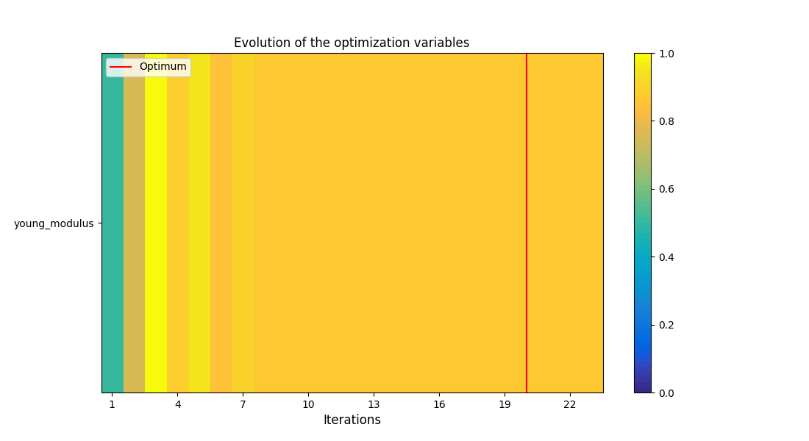
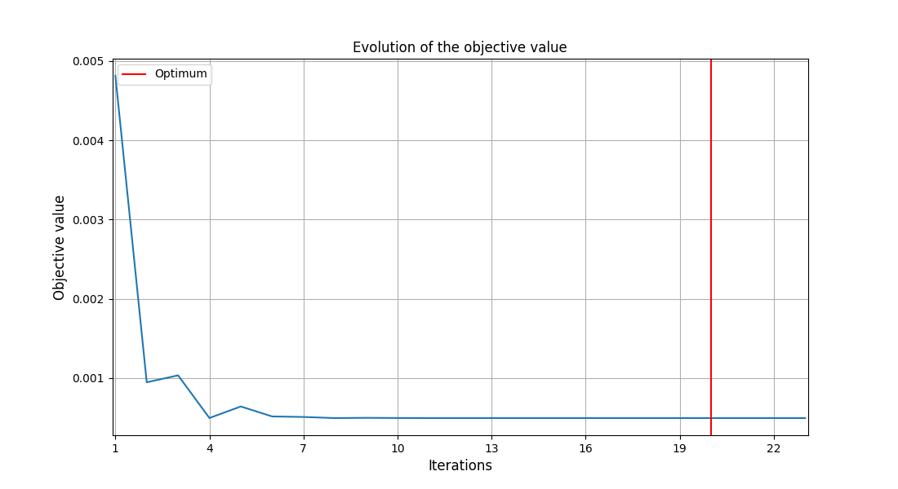

Note
Click here to download the full example code
Usage of the model calibration for several load cases in the same step¶
Calibrate a model with coupling several load cases in a step.
from __future__ import annotations
import logging
from gemseo.algos.opt.nlopt.settings.nlopt_cobyla_settings import NLOPT_COBYLA_Settings
from numpy import atleast_1d
from vimseo import EXAMPLE_RUNS_DIR
from vimseo.api import activate_logger
from vimseo.api import create_model
from vimseo.core.model_settings import IntegratedModelSettings
from vimseo.io.space_io import SpaceToolFileIO
from vimseo.storage_management.base_storage_manager import PersistencyPolicy
from vimseo.tools.calibration.calibration_metrics import CalibrationMetricSettings
from vimseo.tools.calibration.calibration_step import CalibrationStep
from vimseo.tools.calibration.calibration_step import CalibrationStepInputs
from vimseo.tools.calibration.calibration_step import CalibrationStepSettings
from vimseo.tools.calibration.input_data import CALIBRATION_INPUT_DATA
from vimseo.utilities.generate_validation_reference import (
generate_reference_from_parameter_space,
)
We first define the logger level:
activate_logger(level=logging.INFO)
We suppose that we want to calibrate a Hook's law homogeneous elastic isotropic material from reference data on a beam for two load cases: - cantilever bending - three point bending We now generate the reference data from the model used for the calibration. We define an input space in which the reference data are generated:
space_tool_result = SpaceToolFileIO().read(
CALIBRATION_INPUT_DATA / "experimental_space_beam_cantilever.json"
)
And we define a target Young modulus for the cantilever load case and the associated model:
model_name = "BendingTestAnalytical"
target_model_cantilever = create_model(
model_name,
"Cantilever",
model_options=IntegratedModelSettings(
directory_archive_persistency=PersistencyPolicy.DELETE_ALWAYS,
directory_scratch_persistency=PersistencyPolicy.DELETE_ALWAYS,
directory_archive_root=EXAMPLE_RUNS_DIR / "archive/coupled_load",
directory_scratch_root=EXAMPLE_RUNS_DIR / "scratch/coupled_load",
cache_file_path=EXAMPLE_RUNS_DIR
/ f"caches/coupled_load/target_{model_name}_Cantilever_cache.hdf",
),
)
target_young_modulus_cantilever = 2.2e5
target_model_cantilever.default_input_data["young_modulus"] = atleast_1d(
target_young_modulus_cantilever
)
target_model_cantilever.cache = None
reference_dataset_cantilever = generate_reference_from_parameter_space(
target_model_cantilever,
space_tool_result.parameter_space,
n_samples=6,
as_dataset=True,
)
Out:
INFO - 09:50:30: Working directory is C:\Users\sebastien.bocquet\Dev\vddev\docs\runnable_examples\08_calibration\CustomDOETool\2
INFO - 09:50:30: *** Start DOEScenario execution ***
INFO - 09:50:30: DOEScenario
INFO - 09:50:30: Disciplines: Model BendingTestAnalytical: An analytical model for the bending of a parallelepipedic beam
INFO - 09:50:30:
INFO - 09:50:30: Load case:
INFO - 09:50:30: Load case Cantilever: A cantilever load case.
INFO - 09:50:30: Domain: Beam
INFO - 09:50:30:
INFO - 09:50:30: Boundary condition variables: imposed_dplt, relative_dplt_location
INFO - 09:50:30:
INFO - 09:50:30: Default values:
INFO - 09:50:30:
INFO - 09:50:30: Default geometrical variables:
INFO - 09:50:30: height = [40.0]
INFO - 09:50:30: length = [600.0]
INFO - 09:50:30: width = [30.0]
INFO - 09:50:30:
INFO - 09:50:30: Default boundary conditions variables:
INFO - 09:50:30: imposed_dplt = [-5.0]
INFO - 09:50:30: relative_dplt_location = [1.0]
INFO - 09:50:30:
INFO - 09:50:30: Default material variables:
INFO - 09:50:30: nu_p = [0.3]
INFO - 09:50:30: young_modulus = [220000.0]
INFO - 09:50:30:
INFO - 09:50:30: Model inputs: height, imposed_dplt, length, nu_p, relative_dplt_location, width, young_modulus
INFO - 09:50:30: Model outputs: cpu_time, date, description, directory_archive_job, directory_archive_root, directory_scratch_job, directory_scratch_root, dplt, dplt_at_force_location, dplt_grid, error_code, job_name, load_case, location_max_dplt, machine, maximum_dplt, model, moment, moment_grid, n_cpus, persistent_result_files, reaction_forces, run_id, status, study_name, tool_run_id, user, vims_git_version
INFO - 09:50:30: MDO formulation: DisciplinaryOpt
INFO - 09:50:30: Optimization problem:
INFO - 09:50:30: minimize reaction_forces(height, imposed_dplt, width)
INFO - 09:50:30: with respect to height, imposed_dplt, width
INFO - 09:50:30: over the design space:
INFO - 09:50:30: +--------------+-------------+-------+-------------+-------+
INFO - 09:50:30: | Name | Lower bound | Value | Upper bound | Type |
INFO - 09:50:30: +--------------+-------------+-------+-------------+-------+
INFO - 09:50:30: | height | -inf | None | inf | float |
INFO - 09:50:30: | imposed_dplt | -inf | None | inf | float |
INFO - 09:50:30: | width | -inf | None | inf | float |
INFO - 09:50:30: +--------------+-------------+-------+-------------+-------+
INFO - 09:50:30: Solving optimization problem with algorithm CustomDOE:
INFO - 09:50:30: Current archive directory is C:\Users\sebastien.bocquet\Dev\vddev\docs\runnable_examples\model_runs\archive\coupled_load\default_study\BendingTestAnalytical\Cantilever\20261028T085030_78031674.
INFO - 09:50:30: Removing job directory: C:\Users\sebastien.bocquet\Dev\vddev\docs\runnable_examples\model_runs\archive\coupled_load\default_study\BendingTestAnalytical\Cantilever\20261028T085030_78031674
INFO - 09:50:30: Current archive directory is C:\Users\sebastien.bocquet\Dev\vddev\docs\runnable_examples\model_runs\archive\coupled_load\default_study\BendingTestAnalytical\Cantilever\20261028T085030_c7229d5a.
INFO - 09:50:30: Removing job directory: C:\Users\sebastien.bocquet\Dev\vddev\docs\runnable_examples\model_runs\archive\coupled_load\default_study\BendingTestAnalytical\Cantilever\20261028T085030_c7229d5a
INFO - 09:50:30: Current archive directory is C:\Users\sebastien.bocquet\Dev\vddev\docs\runnable_examples\model_runs\archive\coupled_load\default_study\BendingTestAnalytical\Cantilever\20261028T085030_0c8e48a6.
INFO - 09:50:30: Removing job directory: C:\Users\sebastien.bocquet\Dev\vddev\docs\runnable_examples\model_runs\archive\coupled_load\default_study\BendingTestAnalytical\Cantilever\20261028T085030_0c8e48a6
INFO - 09:50:30: Current archive directory is C:\Users\sebastien.bocquet\Dev\vddev\docs\runnable_examples\model_runs\archive\coupled_load\default_study\BendingTestAnalytical\Cantilever\20261028T085030_d4e7d66b.
INFO - 09:50:30: Removing job directory: C:\Users\sebastien.bocquet\Dev\vddev\docs\runnable_examples\model_runs\archive\coupled_load\default_study\BendingTestAnalytical\Cantilever\20261028T085030_d4e7d66b
INFO - 09:50:30: Current archive directory is C:\Users\sebastien.bocquet\Dev\vddev\docs\runnable_examples\model_runs\archive\coupled_load\default_study\BendingTestAnalytical\Cantilever\20261028T085030_37a42e78.
INFO - 09:50:30: Removing job directory: C:\Users\sebastien.bocquet\Dev\vddev\docs\runnable_examples\model_runs\archive\coupled_load\default_study\BendingTestAnalytical\Cantilever\20261028T085030_37a42e78
INFO - 09:50:30: Current archive directory is C:\Users\sebastien.bocquet\Dev\vddev\docs\runnable_examples\model_runs\archive\coupled_load\default_study\BendingTestAnalytical\Cantilever\20261028T085030_b761d6ef.
INFO - 09:50:30: Removing job directory: C:\Users\sebastien.bocquet\Dev\vddev\docs\runnable_examples\model_runs\archive\coupled_load\default_study\BendingTestAnalytical\Cantilever\20261028T085030_b761d6ef
INFO - 09:50:30: Current archive directory is C:\Users\sebastien.bocquet\Dev\vddev\docs\runnable_examples\model_runs\archive\coupled_load\default_study\BendingTestAnalytical\Cantilever\20261028T085030_b00f5943.
INFO - 09:50:30: Removing job directory: C:\Users\sebastien.bocquet\Dev\vddev\docs\runnable_examples\model_runs\archive\coupled_load\default_study\BendingTestAnalytical\Cantilever\20261028T085030_b00f5943
INFO - 09:50:30: Current archive directory is C:\Users\sebastien.bocquet\Dev\vddev\docs\runnable_examples\model_runs\archive\coupled_load\default_study\BendingTestAnalytical\Cantilever\20261028T085030_2b69034e.
INFO - 09:50:30: Removing job directory: C:\Users\sebastien.bocquet\Dev\vddev\docs\runnable_examples\model_runs\archive\coupled_load\default_study\BendingTestAnalytical\Cantilever\20261028T085030_2b69034e
INFO - 09:50:30: Current archive directory is C:\Users\sebastien.bocquet\Dev\vddev\docs\runnable_examples\model_runs\archive\coupled_load\default_study\BendingTestAnalytical\Cantilever\20261028T085030_f432add9.
INFO - 09:50:30: Removing job directory: C:\Users\sebastien.bocquet\Dev\vddev\docs\runnable_examples\model_runs\archive\coupled_load\default_study\BendingTestAnalytical\Cantilever\20261028T085030_f432add9
INFO - 09:50:30: Current archive directory is C:\Users\sebastien.bocquet\Dev\vddev\docs\runnable_examples\model_runs\archive\coupled_load\default_study\BendingTestAnalytical\Cantilever\20261028T085030_0615dbe2.
INFO - 09:50:30: Removing job directory: C:\Users\sebastien.bocquet\Dev\vddev\docs\runnable_examples\model_runs\archive\coupled_load\default_study\BendingTestAnalytical\Cantilever\20261028T085030_0615dbe2
INFO - 09:50:30: Current archive directory is C:\Users\sebastien.bocquet\Dev\vddev\docs\runnable_examples\model_runs\archive\coupled_load\default_study\BendingTestAnalytical\Cantilever\20261028T085030_1d4543ea.
INFO - 09:50:30: Removing job directory: C:\Users\sebastien.bocquet\Dev\vddev\docs\runnable_examples\model_runs\archive\coupled_load\default_study\BendingTestAnalytical\Cantilever\20261028T085030_1d4543ea
INFO - 09:50:30: Current archive directory is C:\Users\sebastien.bocquet\Dev\vddev\docs\runnable_examples\model_runs\archive\coupled_load\default_study\BendingTestAnalytical\Cantilever\20261028T085030_f20afcba.
INFO - 09:50:30: Removing job directory: C:\Users\sebastien.bocquet\Dev\vddev\docs\runnable_examples\model_runs\archive\coupled_load\default_study\BendingTestAnalytical\Cantilever\20261028T085030_f20afcba
INFO - 09:50:30: Current archive directory is C:\Users\sebastien.bocquet\Dev\vddev\docs\runnable_examples\model_runs\archive\coupled_load\default_study\BendingTestAnalytical\Cantilever\20261028T085030_262c04bd.
INFO - 09:50:30: Removing job directory: C:\Users\sebastien.bocquet\Dev\vddev\docs\runnable_examples\model_runs\archive\coupled_load\default_study\BendingTestAnalytical\Cantilever\20261028T085030_262c04bd
INFO - 09:50:30: Current archive directory is C:\Users\sebastien.bocquet\Dev\vddev\docs\runnable_examples\model_runs\archive\coupled_load\default_study\BendingTestAnalytical\Cantilever\20261028T085030_2b46121c.
INFO - 09:50:30: Removing job directory: C:\Users\sebastien.bocquet\Dev\vddev\docs\runnable_examples\model_runs\archive\coupled_load\default_study\BendingTestAnalytical\Cantilever\20261028T085030_2b46121c
INFO - 09:50:30: Current archive directory is C:\Users\sebastien.bocquet\Dev\vddev\docs\runnable_examples\model_runs\archive\coupled_load\default_study\BendingTestAnalytical\Cantilever\20261028T085030_6be57387.
INFO - 09:50:30: Removing job directory: C:\Users\sebastien.bocquet\Dev\vddev\docs\runnable_examples\model_runs\archive\coupled_load\default_study\BendingTestAnalytical\Cantilever\20261028T085030_6be57387
INFO - 09:50:30: Current archive directory is C:\Users\sebastien.bocquet\Dev\vddev\docs\runnable_examples\model_runs\archive\coupled_load\default_study\BendingTestAnalytical\Cantilever\20261028T085030_b1d7cf96.
INFO - 09:50:30: Removing job directory: C:\Users\sebastien.bocquet\Dev\vddev\docs\runnable_examples\model_runs\archive\coupled_load\default_study\BendingTestAnalytical\Cantilever\20261028T085030_b1d7cf96
INFO - 09:50:30: Current archive directory is C:\Users\sebastien.bocquet\Dev\vddev\docs\runnable_examples\model_runs\archive\coupled_load\default_study\BendingTestAnalytical\Cantilever\20261028T085030_a575bdbc.
INFO - 09:50:30: Removing job directory: C:\Users\sebastien.bocquet\Dev\vddev\docs\runnable_examples\model_runs\archive\coupled_load\default_study\BendingTestAnalytical\Cantilever\20261028T085030_a575bdbc
INFO - 09:50:30: Current archive directory is C:\Users\sebastien.bocquet\Dev\vddev\docs\runnable_examples\model_runs\archive\coupled_load\default_study\BendingTestAnalytical\Cantilever\20261028T085030_54441949.
INFO - 09:50:30: Removing job directory: C:\Users\sebastien.bocquet\Dev\vddev\docs\runnable_examples\model_runs\archive\coupled_load\default_study\BendingTestAnalytical\Cantilever\20261028T085030_54441949
INFO - 09:50:30: Current archive directory is C:\Users\sebastien.bocquet\Dev\vddev\docs\runnable_examples\model_runs\archive\coupled_load\default_study\BendingTestAnalytical\Cantilever\20261028T085030_6834e801.
INFO - 09:50:30: Removing job directory: C:\Users\sebastien.bocquet\Dev\vddev\docs\runnable_examples\model_runs\archive\coupled_load\default_study\BendingTestAnalytical\Cantilever\20261028T085030_6834e801
INFO - 09:50:30: Current archive directory is C:\Users\sebastien.bocquet\Dev\vddev\docs\runnable_examples\model_runs\archive\coupled_load\default_study\BendingTestAnalytical\Cantilever\20261028T085030_b217a749.
INFO - 09:50:30: Removing job directory: C:\Users\sebastien.bocquet\Dev\vddev\docs\runnable_examples\model_runs\archive\coupled_load\default_study\BendingTestAnalytical\Cantilever\20261028T085030_b217a749
INFO - 09:50:30: Current archive directory is C:\Users\sebastien.bocquet\Dev\vddev\docs\runnable_examples\model_runs\archive\coupled_load\default_study\BendingTestAnalytical\Cantilever\20261028T085030_63afe1ac.
INFO - 09:50:30: Removing job directory: C:\Users\sebastien.bocquet\Dev\vddev\docs\runnable_examples\model_runs\archive\coupled_load\default_study\BendingTestAnalytical\Cantilever\20261028T085030_63afe1ac
INFO - 09:50:30: Current archive directory is C:\Users\sebastien.bocquet\Dev\vddev\docs\runnable_examples\model_runs\archive\coupled_load\default_study\BendingTestAnalytical\Cantilever\20261028T085030_8c5fbe92.
INFO - 09:50:30: Removing job directory: C:\Users\sebastien.bocquet\Dev\vddev\docs\runnable_examples\model_runs\archive\coupled_load\default_study\BendingTestAnalytical\Cantilever\20261028T085030_8c5fbe92
INFO - 09:50:30: Current archive directory is C:\Users\sebastien.bocquet\Dev\vddev\docs\runnable_examples\model_runs\archive\coupled_load\default_study\BendingTestAnalytical\Cantilever\20261028T085030_a5565095.
INFO - 09:50:30: Removing job directory: C:\Users\sebastien.bocquet\Dev\vddev\docs\runnable_examples\model_runs\archive\coupled_load\default_study\BendingTestAnalytical\Cantilever\20261028T085030_a5565095
INFO - 09:50:30: Current archive directory is C:\Users\sebastien.bocquet\Dev\vddev\docs\runnable_examples\model_runs\archive\coupled_load\default_study\BendingTestAnalytical\Cantilever\20261028T085030_4749cf7c.
INFO - 09:50:30: Removing job directory: C:\Users\sebastien.bocquet\Dev\vddev\docs\runnable_examples\model_runs\archive\coupled_load\default_study\BendingTestAnalytical\Cantilever\20261028T085030_4749cf7c
INFO - 09:50:30: Current archive directory is C:\Users\sebastien.bocquet\Dev\vddev\docs\runnable_examples\model_runs\archive\coupled_load\default_study\BendingTestAnalytical\Cantilever\20261028T085030_f87a506b.
INFO - 09:50:30: Removing job directory: C:\Users\sebastien.bocquet\Dev\vddev\docs\runnable_examples\model_runs\archive\coupled_load\default_study\BendingTestAnalytical\Cantilever\20261028T085030_f87a506b
INFO - 09:50:30: Current archive directory is C:\Users\sebastien.bocquet\Dev\vddev\docs\runnable_examples\model_runs\archive\coupled_load\default_study\BendingTestAnalytical\Cantilever\20261028T085030_ae88ba1a.
INFO - 09:50:30: Removing job directory: C:\Users\sebastien.bocquet\Dev\vddev\docs\runnable_examples\model_runs\archive\coupled_load\default_study\BendingTestAnalytical\Cantilever\20261028T085030_ae88ba1a
INFO - 09:50:30: Current archive directory is C:\Users\sebastien.bocquet\Dev\vddev\docs\runnable_examples\model_runs\archive\coupled_load\default_study\BendingTestAnalytical\Cantilever\20261028T085030_41b56ec8.
INFO - 09:50:31: Removing job directory: C:\Users\sebastien.bocquet\Dev\vddev\docs\runnable_examples\model_runs\archive\coupled_load\default_study\BendingTestAnalytical\Cantilever\20261028T085030_41b56ec8
INFO - 09:50:31: Current archive directory is C:\Users\sebastien.bocquet\Dev\vddev\docs\runnable_examples\model_runs\archive\coupled_load\default_study\BendingTestAnalytical\Cantilever\20261028T085031_c1b747be.
INFO - 09:50:31: Removing job directory: C:\Users\sebastien.bocquet\Dev\vddev\docs\runnable_examples\model_runs\archive\coupled_load\default_study\BendingTestAnalytical\Cantilever\20261028T085031_c1b747be
INFO - 09:50:31: 17%|█▋ | 1/6 [00:00<00:03, 1.29 it/sec, feas=True, obj=-2.61e+3]
INFO - 09:50:31: Current archive directory is C:\Users\sebastien.bocquet\Dev\vddev\docs\runnable_examples\model_runs\archive\coupled_load\default_study\BendingTestAnalytical\Cantilever\20261028T085031_f9ec9426.
INFO - 09:50:31: Removing job directory: C:\Users\sebastien.bocquet\Dev\vddev\docs\runnable_examples\model_runs\archive\coupled_load\default_study\BendingTestAnalytical\Cantilever\20261028T085031_f9ec9426
INFO - 09:50:31: Current archive directory is C:\Users\sebastien.bocquet\Dev\vddev\docs\runnable_examples\model_runs\archive\coupled_load\default_study\BendingTestAnalytical\Cantilever\20261028T085031_6313226d.
INFO - 09:50:31: Removing job directory: C:\Users\sebastien.bocquet\Dev\vddev\docs\runnable_examples\model_runs\archive\coupled_load\default_study\BendingTestAnalytical\Cantilever\20261028T085031_6313226d
INFO - 09:50:31: Current archive directory is C:\Users\sebastien.bocquet\Dev\vddev\docs\runnable_examples\model_runs\archive\coupled_load\default_study\BendingTestAnalytical\Cantilever\20261028T085031_42b137d7.
INFO - 09:50:31: Removing job directory: C:\Users\sebastien.bocquet\Dev\vddev\docs\runnable_examples\model_runs\archive\coupled_load\default_study\BendingTestAnalytical\Cantilever\20261028T085031_42b137d7
INFO - 09:50:31: Current archive directory is C:\Users\sebastien.bocquet\Dev\vddev\docs\runnable_examples\model_runs\archive\coupled_load\default_study\BendingTestAnalytical\Cantilever\20261028T085031_567a3c36.
INFO - 09:50:31: Removing job directory: C:\Users\sebastien.bocquet\Dev\vddev\docs\runnable_examples\model_runs\archive\coupled_load\default_study\BendingTestAnalytical\Cantilever\20261028T085031_567a3c36
INFO - 09:50:31: Current archive directory is C:\Users\sebastien.bocquet\Dev\vddev\docs\runnable_examples\model_runs\archive\coupled_load\default_study\BendingTestAnalytical\Cantilever\20261028T085031_ce089af3.
INFO - 09:50:31: Removing job directory: C:\Users\sebastien.bocquet\Dev\vddev\docs\runnable_examples\model_runs\archive\coupled_load\default_study\BendingTestAnalytical\Cantilever\20261028T085031_ce089af3
INFO - 09:50:31: Current archive directory is C:\Users\sebastien.bocquet\Dev\vddev\docs\runnable_examples\model_runs\archive\coupled_load\default_study\BendingTestAnalytical\Cantilever\20261028T085031_f8de8a08.
INFO - 09:50:31: Removing job directory: C:\Users\sebastien.bocquet\Dev\vddev\docs\runnable_examples\model_runs\archive\coupled_load\default_study\BendingTestAnalytical\Cantilever\20261028T085031_f8de8a08
INFO - 09:50:31: Current archive directory is C:\Users\sebastien.bocquet\Dev\vddev\docs\runnable_examples\model_runs\archive\coupled_load\default_study\BendingTestAnalytical\Cantilever\20261028T085031_94443dcd.
INFO - 09:50:31: Removing job directory: C:\Users\sebastien.bocquet\Dev\vddev\docs\runnable_examples\model_runs\archive\coupled_load\default_study\BendingTestAnalytical\Cantilever\20261028T085031_94443dcd
INFO - 09:50:31: Current archive directory is C:\Users\sebastien.bocquet\Dev\vddev\docs\runnable_examples\model_runs\archive\coupled_load\default_study\BendingTestAnalytical\Cantilever\20261028T085031_111325dc.
INFO - 09:50:31: Removing job directory: C:\Users\sebastien.bocquet\Dev\vddev\docs\runnable_examples\model_runs\archive\coupled_load\default_study\BendingTestAnalytical\Cantilever\20261028T085031_111325dc
INFO - 09:50:31: Current archive directory is C:\Users\sebastien.bocquet\Dev\vddev\docs\runnable_examples\model_runs\archive\coupled_load\default_study\BendingTestAnalytical\Cantilever\20261028T085031_8ad16ad5.
INFO - 09:50:31: Removing job directory: C:\Users\sebastien.bocquet\Dev\vddev\docs\runnable_examples\model_runs\archive\coupled_load\default_study\BendingTestAnalytical\Cantilever\20261028T085031_8ad16ad5
INFO - 09:50:31: Current archive directory is C:\Users\sebastien.bocquet\Dev\vddev\docs\runnable_examples\model_runs\archive\coupled_load\default_study\BendingTestAnalytical\Cantilever\20261028T085031_8a5a5c70.
INFO - 09:50:31: Removing job directory: C:\Users\sebastien.bocquet\Dev\vddev\docs\runnable_examples\model_runs\archive\coupled_load\default_study\BendingTestAnalytical\Cantilever\20261028T085031_8a5a5c70
INFO - 09:50:31: Current archive directory is C:\Users\sebastien.bocquet\Dev\vddev\docs\runnable_examples\model_runs\archive\coupled_load\default_study\BendingTestAnalytical\Cantilever\20261028T085031_6a1e8e47.
INFO - 09:50:31: Removing job directory: C:\Users\sebastien.bocquet\Dev\vddev\docs\runnable_examples\model_runs\archive\coupled_load\default_study\BendingTestAnalytical\Cantilever\20261028T085031_6a1e8e47
INFO - 09:50:31: Current archive directory is C:\Users\sebastien.bocquet\Dev\vddev\docs\runnable_examples\model_runs\archive\coupled_load\default_study\BendingTestAnalytical\Cantilever\20261028T085031_83520aa7.
INFO - 09:50:31: Removing job directory: C:\Users\sebastien.bocquet\Dev\vddev\docs\runnable_examples\model_runs\archive\coupled_load\default_study\BendingTestAnalytical\Cantilever\20261028T085031_83520aa7
INFO - 09:50:31: Current archive directory is C:\Users\sebastien.bocquet\Dev\vddev\docs\runnable_examples\model_runs\archive\coupled_load\default_study\BendingTestAnalytical\Cantilever\20261028T085031_c3941734.
INFO - 09:50:31: Removing job directory: C:\Users\sebastien.bocquet\Dev\vddev\docs\runnable_examples\model_runs\archive\coupled_load\default_study\BendingTestAnalytical\Cantilever\20261028T085031_c3941734
INFO - 09:50:31: Current archive directory is C:\Users\sebastien.bocquet\Dev\vddev\docs\runnable_examples\model_runs\archive\coupled_load\default_study\BendingTestAnalytical\Cantilever\20261028T085031_98a7495d.
INFO - 09:50:31: Removing job directory: C:\Users\sebastien.bocquet\Dev\vddev\docs\runnable_examples\model_runs\archive\coupled_load\default_study\BendingTestAnalytical\Cantilever\20261028T085031_98a7495d
INFO - 09:50:31: Current archive directory is C:\Users\sebastien.bocquet\Dev\vddev\docs\runnable_examples\model_runs\archive\coupled_load\default_study\BendingTestAnalytical\Cantilever\20261028T085031_d61c521f.
INFO - 09:50:31: Removing job directory: C:\Users\sebastien.bocquet\Dev\vddev\docs\runnable_examples\model_runs\archive\coupled_load\default_study\BendingTestAnalytical\Cantilever\20261028T085031_d61c521f
INFO - 09:50:31: Current archive directory is C:\Users\sebastien.bocquet\Dev\vddev\docs\runnable_examples\model_runs\archive\coupled_load\default_study\BendingTestAnalytical\Cantilever\20261028T085031_807f8d9e.
INFO - 09:50:31: Removing job directory: C:\Users\sebastien.bocquet\Dev\vddev\docs\runnable_examples\model_runs\archive\coupled_load\default_study\BendingTestAnalytical\Cantilever\20261028T085031_807f8d9e
INFO - 09:50:31: Current archive directory is C:\Users\sebastien.bocquet\Dev\vddev\docs\runnable_examples\model_runs\archive\coupled_load\default_study\BendingTestAnalytical\Cantilever\20261028T085031_863abd61.
INFO - 09:50:31: Removing job directory: C:\Users\sebastien.bocquet\Dev\vddev\docs\runnable_examples\model_runs\archive\coupled_load\default_study\BendingTestAnalytical\Cantilever\20261028T085031_863abd61
INFO - 09:50:31: Current archive directory is C:\Users\sebastien.bocquet\Dev\vddev\docs\runnable_examples\model_runs\archive\coupled_load\default_study\BendingTestAnalytical\Cantilever\20261028T085031_f779edf6.
INFO - 09:50:31: Removing job directory: C:\Users\sebastien.bocquet\Dev\vddev\docs\runnable_examples\model_runs\archive\coupled_load\default_study\BendingTestAnalytical\Cantilever\20261028T085031_f779edf6
INFO - 09:50:31: Current archive directory is C:\Users\sebastien.bocquet\Dev\vddev\docs\runnable_examples\model_runs\archive\coupled_load\default_study\BendingTestAnalytical\Cantilever\20261028T085031_ddb97d16.
INFO - 09:50:31: Removing job directory: C:\Users\sebastien.bocquet\Dev\vddev\docs\runnable_examples\model_runs\archive\coupled_load\default_study\BendingTestAnalytical\Cantilever\20261028T085031_ddb97d16
INFO - 09:50:31: Current archive directory is C:\Users\sebastien.bocquet\Dev\vddev\docs\runnable_examples\model_runs\archive\coupled_load\default_study\BendingTestAnalytical\Cantilever\20261028T085031_27ab6d93.
INFO - 09:50:31: Removing job directory: C:\Users\sebastien.bocquet\Dev\vddev\docs\runnable_examples\model_runs\archive\coupled_load\default_study\BendingTestAnalytical\Cantilever\20261028T085031_27ab6d93
INFO - 09:50:31: Current archive directory is C:\Users\sebastien.bocquet\Dev\vddev\docs\runnable_examples\model_runs\archive\coupled_load\default_study\BendingTestAnalytical\Cantilever\20261028T085031_b228d3af.
INFO - 09:50:31: Removing job directory: C:\Users\sebastien.bocquet\Dev\vddev\docs\runnable_examples\model_runs\archive\coupled_load\default_study\BendingTestAnalytical\Cantilever\20261028T085031_b228d3af
INFO - 09:50:31: Current archive directory is C:\Users\sebastien.bocquet\Dev\vddev\docs\runnable_examples\model_runs\archive\coupled_load\default_study\BendingTestAnalytical\Cantilever\20261028T085031_7aec7e13.
INFO - 09:50:31: Removing job directory: C:\Users\sebastien.bocquet\Dev\vddev\docs\runnable_examples\model_runs\archive\coupled_load\default_study\BendingTestAnalytical\Cantilever\20261028T085031_7aec7e13
INFO - 09:50:31: Current archive directory is C:\Users\sebastien.bocquet\Dev\vddev\docs\runnable_examples\model_runs\archive\coupled_load\default_study\BendingTestAnalytical\Cantilever\20261028T085031_ae2735fc.
INFO - 09:50:31: Removing job directory: C:\Users\sebastien.bocquet\Dev\vddev\docs\runnable_examples\model_runs\archive\coupled_load\default_study\BendingTestAnalytical\Cantilever\20261028T085031_ae2735fc
INFO - 09:50:31: Current archive directory is C:\Users\sebastien.bocquet\Dev\vddev\docs\runnable_examples\model_runs\archive\coupled_load\default_study\BendingTestAnalytical\Cantilever\20261028T085031_af1f43f3.
INFO - 09:50:31: Removing job directory: C:\Users\sebastien.bocquet\Dev\vddev\docs\runnable_examples\model_runs\archive\coupled_load\default_study\BendingTestAnalytical\Cantilever\20261028T085031_af1f43f3
INFO - 09:50:31: Current archive directory is C:\Users\sebastien.bocquet\Dev\vddev\docs\runnable_examples\model_runs\archive\coupled_load\default_study\BendingTestAnalytical\Cantilever\20261028T085031_fff8565e.
INFO - 09:50:31: Removing job directory: C:\Users\sebastien.bocquet\Dev\vddev\docs\runnable_examples\model_runs\archive\coupled_load\default_study\BendingTestAnalytical\Cantilever\20261028T085031_fff8565e
INFO - 09:50:31: Current archive directory is C:\Users\sebastien.bocquet\Dev\vddev\docs\runnable_examples\model_runs\archive\coupled_load\default_study\BendingTestAnalytical\Cantilever\20261028T085031_291fae86.
INFO - 09:50:31: Removing job directory: C:\Users\sebastien.bocquet\Dev\vddev\docs\runnable_examples\model_runs\archive\coupled_load\default_study\BendingTestAnalytical\Cantilever\20261028T085031_291fae86
INFO - 09:50:31: Current archive directory is C:\Users\sebastien.bocquet\Dev\vddev\docs\runnable_examples\model_runs\archive\coupled_load\default_study\BendingTestAnalytical\Cantilever\20261028T085031_d5d116ce.
INFO - 09:50:31: Removing job directory: C:\Users\sebastien.bocquet\Dev\vddev\docs\runnable_examples\model_runs\archive\coupled_load\default_study\BendingTestAnalytical\Cantilever\20261028T085031_d5d116ce
INFO - 09:50:31: Current archive directory is C:\Users\sebastien.bocquet\Dev\vddev\docs\runnable_examples\model_runs\archive\coupled_load\default_study\BendingTestAnalytical\Cantilever\20261028T085031_95c87ab6.
INFO - 09:50:31: Removing job directory: C:\Users\sebastien.bocquet\Dev\vddev\docs\runnable_examples\model_runs\archive\coupled_load\default_study\BendingTestAnalytical\Cantilever\20261028T085031_95c87ab6
INFO - 09:50:31: 33%|███▎ | 2/6 [00:01<00:03, 1.23 it/sec, feas=True, obj=-2.29e+3]
INFO - 09:50:31: Current archive directory is C:\Users\sebastien.bocquet\Dev\vddev\docs\runnable_examples\model_runs\archive\coupled_load\default_study\BendingTestAnalytical\Cantilever\20261028T085031_426d1b07.
INFO - 09:50:31: Removing job directory: C:\Users\sebastien.bocquet\Dev\vddev\docs\runnable_examples\model_runs\archive\coupled_load\default_study\BendingTestAnalytical\Cantilever\20261028T085031_426d1b07
INFO - 09:50:31: Current archive directory is C:\Users\sebastien.bocquet\Dev\vddev\docs\runnable_examples\model_runs\archive\coupled_load\default_study\BendingTestAnalytical\Cantilever\20261028T085031_c1c90bb2.
INFO - 09:50:31: Removing job directory: C:\Users\sebastien.bocquet\Dev\vddev\docs\runnable_examples\model_runs\archive\coupled_load\default_study\BendingTestAnalytical\Cantilever\20261028T085031_c1c90bb2
INFO - 09:50:31: Current archive directory is C:\Users\sebastien.bocquet\Dev\vddev\docs\runnable_examples\model_runs\archive\coupled_load\default_study\BendingTestAnalytical\Cantilever\20261028T085031_6215a6bc.
INFO - 09:50:31: Removing job directory: C:\Users\sebastien.bocquet\Dev\vddev\docs\runnable_examples\model_runs\archive\coupled_load\default_study\BendingTestAnalytical\Cantilever\20261028T085031_6215a6bc
INFO - 09:50:32: Current archive directory is C:\Users\sebastien.bocquet\Dev\vddev\docs\runnable_examples\model_runs\archive\coupled_load\default_study\BendingTestAnalytical\Cantilever\20261028T085031_370fbc37.
INFO - 09:50:32: Removing job directory: C:\Users\sebastien.bocquet\Dev\vddev\docs\runnable_examples\model_runs\archive\coupled_load\default_study\BendingTestAnalytical\Cantilever\20261028T085031_370fbc37
INFO - 09:50:32: Current archive directory is C:\Users\sebastien.bocquet\Dev\vddev\docs\runnable_examples\model_runs\archive\coupled_load\default_study\BendingTestAnalytical\Cantilever\20261028T085032_19587c3b.
INFO - 09:50:32: Removing job directory: C:\Users\sebastien.bocquet\Dev\vddev\docs\runnable_examples\model_runs\archive\coupled_load\default_study\BendingTestAnalytical\Cantilever\20261028T085032_19587c3b
INFO - 09:50:32: Current archive directory is C:\Users\sebastien.bocquet\Dev\vddev\docs\runnable_examples\model_runs\archive\coupled_load\default_study\BendingTestAnalytical\Cantilever\20261028T085032_5433cea0.
INFO - 09:50:32: Removing job directory: C:\Users\sebastien.bocquet\Dev\vddev\docs\runnable_examples\model_runs\archive\coupled_load\default_study\BendingTestAnalytical\Cantilever\20261028T085032_5433cea0
INFO - 09:50:32: Current archive directory is C:\Users\sebastien.bocquet\Dev\vddev\docs\runnable_examples\model_runs\archive\coupled_load\default_study\BendingTestAnalytical\Cantilever\20261028T085032_b04b4ef5.
INFO - 09:50:32: Removing job directory: C:\Users\sebastien.bocquet\Dev\vddev\docs\runnable_examples\model_runs\archive\coupled_load\default_study\BendingTestAnalytical\Cantilever\20261028T085032_b04b4ef5
INFO - 09:50:32: Current archive directory is C:\Users\sebastien.bocquet\Dev\vddev\docs\runnable_examples\model_runs\archive\coupled_load\default_study\BendingTestAnalytical\Cantilever\20261028T085032_c1ace3c2.
INFO - 09:50:32: Removing job directory: C:\Users\sebastien.bocquet\Dev\vddev\docs\runnable_examples\model_runs\archive\coupled_load\default_study\BendingTestAnalytical\Cantilever\20261028T085032_c1ace3c2
INFO - 09:50:32: Current archive directory is C:\Users\sebastien.bocquet\Dev\vddev\docs\runnable_examples\model_runs\archive\coupled_load\default_study\BendingTestAnalytical\Cantilever\20261028T085032_ac18f287.
INFO - 09:50:32: Removing job directory: C:\Users\sebastien.bocquet\Dev\vddev\docs\runnable_examples\model_runs\archive\coupled_load\default_study\BendingTestAnalytical\Cantilever\20261028T085032_ac18f287
INFO - 09:50:32: Current archive directory is C:\Users\sebastien.bocquet\Dev\vddev\docs\runnable_examples\model_runs\archive\coupled_load\default_study\BendingTestAnalytical\Cantilever\20261028T085032_0ed5c0f7.
INFO - 09:50:32: Removing job directory: C:\Users\sebastien.bocquet\Dev\vddev\docs\runnable_examples\model_runs\archive\coupled_load\default_study\BendingTestAnalytical\Cantilever\20261028T085032_0ed5c0f7
INFO - 09:50:32: Current archive directory is C:\Users\sebastien.bocquet\Dev\vddev\docs\runnable_examples\model_runs\archive\coupled_load\default_study\BendingTestAnalytical\Cantilever\20261028T085032_2dfbba9d.
INFO - 09:50:32: Removing job directory: C:\Users\sebastien.bocquet\Dev\vddev\docs\runnable_examples\model_runs\archive\coupled_load\default_study\BendingTestAnalytical\Cantilever\20261028T085032_2dfbba9d
INFO - 09:50:32: Current archive directory is C:\Users\sebastien.bocquet\Dev\vddev\docs\runnable_examples\model_runs\archive\coupled_load\default_study\BendingTestAnalytical\Cantilever\20261028T085032_153b9109.
INFO - 09:50:32: Removing job directory: C:\Users\sebastien.bocquet\Dev\vddev\docs\runnable_examples\model_runs\archive\coupled_load\default_study\BendingTestAnalytical\Cantilever\20261028T085032_153b9109
INFO - 09:50:32: Current archive directory is C:\Users\sebastien.bocquet\Dev\vddev\docs\runnable_examples\model_runs\archive\coupled_load\default_study\BendingTestAnalytical\Cantilever\20261028T085032_444d3ab7.
INFO - 09:50:32: Removing job directory: C:\Users\sebastien.bocquet\Dev\vddev\docs\runnable_examples\model_runs\archive\coupled_load\default_study\BendingTestAnalytical\Cantilever\20261028T085032_444d3ab7
INFO - 09:50:32: Current archive directory is C:\Users\sebastien.bocquet\Dev\vddev\docs\runnable_examples\model_runs\archive\coupled_load\default_study\BendingTestAnalytical\Cantilever\20261028T085032_d6087a24.
INFO - 09:50:32: Removing job directory: C:\Users\sebastien.bocquet\Dev\vddev\docs\runnable_examples\model_runs\archive\coupled_load\default_study\BendingTestAnalytical\Cantilever\20261028T085032_d6087a24
INFO - 09:50:32: Current archive directory is C:\Users\sebastien.bocquet\Dev\vddev\docs\runnable_examples\model_runs\archive\coupled_load\default_study\BendingTestAnalytical\Cantilever\20261028T085032_c28a06f5.
INFO - 09:50:32: Removing job directory: C:\Users\sebastien.bocquet\Dev\vddev\docs\runnable_examples\model_runs\archive\coupled_load\default_study\BendingTestAnalytical\Cantilever\20261028T085032_c28a06f5
INFO - 09:50:32: Current archive directory is C:\Users\sebastien.bocquet\Dev\vddev\docs\runnable_examples\model_runs\archive\coupled_load\default_study\BendingTestAnalytical\Cantilever\20261028T085032_5794305b.
INFO - 09:50:32: Removing job directory: C:\Users\sebastien.bocquet\Dev\vddev\docs\runnable_examples\model_runs\archive\coupled_load\default_study\BendingTestAnalytical\Cantilever\20261028T085032_5794305b
INFO - 09:50:32: Current archive directory is C:\Users\sebastien.bocquet\Dev\vddev\docs\runnable_examples\model_runs\archive\coupled_load\default_study\BendingTestAnalytical\Cantilever\20261028T085032_0217a93c.
INFO - 09:50:32: Removing job directory: C:\Users\sebastien.bocquet\Dev\vddev\docs\runnable_examples\model_runs\archive\coupled_load\default_study\BendingTestAnalytical\Cantilever\20261028T085032_0217a93c
INFO - 09:50:32: Current archive directory is C:\Users\sebastien.bocquet\Dev\vddev\docs\runnable_examples\model_runs\archive\coupled_load\default_study\BendingTestAnalytical\Cantilever\20261028T085032_d2977721.
INFO - 09:50:32: Removing job directory: C:\Users\sebastien.bocquet\Dev\vddev\docs\runnable_examples\model_runs\archive\coupled_load\default_study\BendingTestAnalytical\Cantilever\20261028T085032_d2977721
INFO - 09:50:32: Current archive directory is C:\Users\sebastien.bocquet\Dev\vddev\docs\runnable_examples\model_runs\archive\coupled_load\default_study\BendingTestAnalytical\Cantilever\20261028T085032_f799adf6.
INFO - 09:50:32: Removing job directory: C:\Users\sebastien.bocquet\Dev\vddev\docs\runnable_examples\model_runs\archive\coupled_load\default_study\BendingTestAnalytical\Cantilever\20261028T085032_f799adf6
INFO - 09:50:32: Current archive directory is C:\Users\sebastien.bocquet\Dev\vddev\docs\runnable_examples\model_runs\archive\coupled_load\default_study\BendingTestAnalytical\Cantilever\20261028T085032_20559bcb.
INFO - 09:50:32: Removing job directory: C:\Users\sebastien.bocquet\Dev\vddev\docs\runnable_examples\model_runs\archive\coupled_load\default_study\BendingTestAnalytical\Cantilever\20261028T085032_20559bcb
INFO - 09:50:32: Current archive directory is C:\Users\sebastien.bocquet\Dev\vddev\docs\runnable_examples\model_runs\archive\coupled_load\default_study\BendingTestAnalytical\Cantilever\20261028T085032_cbc96b64.
INFO - 09:50:32: Removing job directory: C:\Users\sebastien.bocquet\Dev\vddev\docs\runnable_examples\model_runs\archive\coupled_load\default_study\BendingTestAnalytical\Cantilever\20261028T085032_cbc96b64
INFO - 09:50:32: Current archive directory is C:\Users\sebastien.bocquet\Dev\vddev\docs\runnable_examples\model_runs\archive\coupled_load\default_study\BendingTestAnalytical\Cantilever\20261028T085032_afc28544.
INFO - 09:50:32: Removing job directory: C:\Users\sebastien.bocquet\Dev\vddev\docs\runnable_examples\model_runs\archive\coupled_load\default_study\BendingTestAnalytical\Cantilever\20261028T085032_afc28544
INFO - 09:50:32: Current archive directory is C:\Users\sebastien.bocquet\Dev\vddev\docs\runnable_examples\model_runs\archive\coupled_load\default_study\BendingTestAnalytical\Cantilever\20261028T085032_6ae76fc2.
INFO - 09:50:32: Removing job directory: C:\Users\sebastien.bocquet\Dev\vddev\docs\runnable_examples\model_runs\archive\coupled_load\default_study\BendingTestAnalytical\Cantilever\20261028T085032_6ae76fc2
INFO - 09:50:32: Current archive directory is C:\Users\sebastien.bocquet\Dev\vddev\docs\runnable_examples\model_runs\archive\coupled_load\default_study\BendingTestAnalytical\Cantilever\20261028T085032_ce9ae1c1.
INFO - 09:50:32: Removing job directory: C:\Users\sebastien.bocquet\Dev\vddev\docs\runnable_examples\model_runs\archive\coupled_load\default_study\BendingTestAnalytical\Cantilever\20261028T085032_ce9ae1c1
INFO - 09:50:32: Current archive directory is C:\Users\sebastien.bocquet\Dev\vddev\docs\runnable_examples\model_runs\archive\coupled_load\default_study\BendingTestAnalytical\Cantilever\20261028T085032_fec26b49.
INFO - 09:50:32: Removing job directory: C:\Users\sebastien.bocquet\Dev\vddev\docs\runnable_examples\model_runs\archive\coupled_load\default_study\BendingTestAnalytical\Cantilever\20261028T085032_fec26b49
INFO - 09:50:32: Current archive directory is C:\Users\sebastien.bocquet\Dev\vddev\docs\runnable_examples\model_runs\archive\coupled_load\default_study\BendingTestAnalytical\Cantilever\20261028T085032_76d87cd0.
INFO - 09:50:32: Removing job directory: C:\Users\sebastien.bocquet\Dev\vddev\docs\runnable_examples\model_runs\archive\coupled_load\default_study\BendingTestAnalytical\Cantilever\20261028T085032_76d87cd0
INFO - 09:50:32: Current archive directory is C:\Users\sebastien.bocquet\Dev\vddev\docs\runnable_examples\model_runs\archive\coupled_load\default_study\BendingTestAnalytical\Cantilever\20261028T085032_57824277.
INFO - 09:50:32: Removing job directory: C:\Users\sebastien.bocquet\Dev\vddev\docs\runnable_examples\model_runs\archive\coupled_load\default_study\BendingTestAnalytical\Cantilever\20261028T085032_57824277
INFO - 09:50:32: Current archive directory is C:\Users\sebastien.bocquet\Dev\vddev\docs\runnable_examples\model_runs\archive\coupled_load\default_study\BendingTestAnalytical\Cantilever\20261028T085032_7d0dbe6f.
INFO - 09:50:32: Removing job directory: C:\Users\sebastien.bocquet\Dev\vddev\docs\runnable_examples\model_runs\archive\coupled_load\default_study\BendingTestAnalytical\Cantilever\20261028T085032_7d0dbe6f
INFO - 09:50:32: 50%|█████ | 3/6 [00:02<00:02, 1.22 it/sec, feas=True, obj=-2.42e+3]
INFO - 09:50:32: Current archive directory is C:\Users\sebastien.bocquet\Dev\vddev\docs\runnable_examples\model_runs\archive\coupled_load\default_study\BendingTestAnalytical\Cantilever\20261028T085032_50e4744e.
INFO - 09:50:32: Removing job directory: C:\Users\sebastien.bocquet\Dev\vddev\docs\runnable_examples\model_runs\archive\coupled_load\default_study\BendingTestAnalytical\Cantilever\20261028T085032_50e4744e
INFO - 09:50:32: Current archive directory is C:\Users\sebastien.bocquet\Dev\vddev\docs\runnable_examples\model_runs\archive\coupled_load\default_study\BendingTestAnalytical\Cantilever\20261028T085032_7ee1fa82.
INFO - 09:50:32: Removing job directory: C:\Users\sebastien.bocquet\Dev\vddev\docs\runnable_examples\model_runs\archive\coupled_load\default_study\BendingTestAnalytical\Cantilever\20261028T085032_7ee1fa82
INFO - 09:50:32: Current archive directory is C:\Users\sebastien.bocquet\Dev\vddev\docs\runnable_examples\model_runs\archive\coupled_load\default_study\BendingTestAnalytical\Cantilever\20261028T085032_6bb291ef.
INFO - 09:50:32: Removing job directory: C:\Users\sebastien.bocquet\Dev\vddev\docs\runnable_examples\model_runs\archive\coupled_load\default_study\BendingTestAnalytical\Cantilever\20261028T085032_6bb291ef
INFO - 09:50:32: Current archive directory is C:\Users\sebastien.bocquet\Dev\vddev\docs\runnable_examples\model_runs\archive\coupled_load\default_study\BendingTestAnalytical\Cantilever\20261028T085032_d8557320.
INFO - 09:50:32: Removing job directory: C:\Users\sebastien.bocquet\Dev\vddev\docs\runnable_examples\model_runs\archive\coupled_load\default_study\BendingTestAnalytical\Cantilever\20261028T085032_d8557320
INFO - 09:50:32: Current archive directory is C:\Users\sebastien.bocquet\Dev\vddev\docs\runnable_examples\model_runs\archive\coupled_load\default_study\BendingTestAnalytical\Cantilever\20261028T085032_74dec71f.
INFO - 09:50:32: Removing job directory: C:\Users\sebastien.bocquet\Dev\vddev\docs\runnable_examples\model_runs\archive\coupled_load\default_study\BendingTestAnalytical\Cantilever\20261028T085032_74dec71f
INFO - 09:50:32: Current archive directory is C:\Users\sebastien.bocquet\Dev\vddev\docs\runnable_examples\model_runs\archive\coupled_load\default_study\BendingTestAnalytical\Cantilever\20261028T085032_7ef7c30e.
INFO - 09:50:32: Removing job directory: C:\Users\sebastien.bocquet\Dev\vddev\docs\runnable_examples\model_runs\archive\coupled_load\default_study\BendingTestAnalytical\Cantilever\20261028T085032_7ef7c30e
INFO - 09:50:32: Current archive directory is C:\Users\sebastien.bocquet\Dev\vddev\docs\runnable_examples\model_runs\archive\coupled_load\default_study\BendingTestAnalytical\Cantilever\20261028T085032_61dd087f.
INFO - 09:50:32: Removing job directory: C:\Users\sebastien.bocquet\Dev\vddev\docs\runnable_examples\model_runs\archive\coupled_load\default_study\BendingTestAnalytical\Cantilever\20261028T085032_61dd087f
INFO - 09:50:32: Current archive directory is C:\Users\sebastien.bocquet\Dev\vddev\docs\runnable_examples\model_runs\archive\coupled_load\default_study\BendingTestAnalytical\Cantilever\20261028T085032_88804628.
INFO - 09:50:32: Removing job directory: C:\Users\sebastien.bocquet\Dev\vddev\docs\runnable_examples\model_runs\archive\coupled_load\default_study\BendingTestAnalytical\Cantilever\20261028T085032_88804628
INFO - 09:50:32: Current archive directory is C:\Users\sebastien.bocquet\Dev\vddev\docs\runnable_examples\model_runs\archive\coupled_load\default_study\BendingTestAnalytical\Cantilever\20261028T085032_67c2f5cf.
INFO - 09:50:33: Removing job directory: C:\Users\sebastien.bocquet\Dev\vddev\docs\runnable_examples\model_runs\archive\coupled_load\default_study\BendingTestAnalytical\Cantilever\20261028T085032_67c2f5cf
INFO - 09:50:33: Current archive directory is C:\Users\sebastien.bocquet\Dev\vddev\docs\runnable_examples\model_runs\archive\coupled_load\default_study\BendingTestAnalytical\Cantilever\20261028T085033_b72a1cc6.
INFO - 09:50:33: Removing job directory: C:\Users\sebastien.bocquet\Dev\vddev\docs\runnable_examples\model_runs\archive\coupled_load\default_study\BendingTestAnalytical\Cantilever\20261028T085033_b72a1cc6
INFO - 09:50:33: Current archive directory is C:\Users\sebastien.bocquet\Dev\vddev\docs\runnable_examples\model_runs\archive\coupled_load\default_study\BendingTestAnalytical\Cantilever\20261028T085033_1b6b9b74.
INFO - 09:50:33: Removing job directory: C:\Users\sebastien.bocquet\Dev\vddev\docs\runnable_examples\model_runs\archive\coupled_load\default_study\BendingTestAnalytical\Cantilever\20261028T085033_1b6b9b74
INFO - 09:50:33: Current archive directory is C:\Users\sebastien.bocquet\Dev\vddev\docs\runnable_examples\model_runs\archive\coupled_load\default_study\BendingTestAnalytical\Cantilever\20261028T085033_c930b107.
INFO - 09:50:33: Removing job directory: C:\Users\sebastien.bocquet\Dev\vddev\docs\runnable_examples\model_runs\archive\coupled_load\default_study\BendingTestAnalytical\Cantilever\20261028T085033_c930b107
INFO - 09:50:33: Current archive directory is C:\Users\sebastien.bocquet\Dev\vddev\docs\runnable_examples\model_runs\archive\coupled_load\default_study\BendingTestAnalytical\Cantilever\20261028T085033_8008c615.
INFO - 09:50:33: Removing job directory: C:\Users\sebastien.bocquet\Dev\vddev\docs\runnable_examples\model_runs\archive\coupled_load\default_study\BendingTestAnalytical\Cantilever\20261028T085033_8008c615
INFO - 09:50:33: Current archive directory is C:\Users\sebastien.bocquet\Dev\vddev\docs\runnable_examples\model_runs\archive\coupled_load\default_study\BendingTestAnalytical\Cantilever\20261028T085033_9a38efd8.
INFO - 09:50:33: Removing job directory: C:\Users\sebastien.bocquet\Dev\vddev\docs\runnable_examples\model_runs\archive\coupled_load\default_study\BendingTestAnalytical\Cantilever\20261028T085033_9a38efd8
INFO - 09:50:33: Current archive directory is C:\Users\sebastien.bocquet\Dev\vddev\docs\runnable_examples\model_runs\archive\coupled_load\default_study\BendingTestAnalytical\Cantilever\20261028T085033_72c91c82.
INFO - 09:50:33: Removing job directory: C:\Users\sebastien.bocquet\Dev\vddev\docs\runnable_examples\model_runs\archive\coupled_load\default_study\BendingTestAnalytical\Cantilever\20261028T085033_72c91c82
INFO - 09:50:33: Current archive directory is C:\Users\sebastien.bocquet\Dev\vddev\docs\runnable_examples\model_runs\archive\coupled_load\default_study\BendingTestAnalytical\Cantilever\20261028T085033_48838239.
INFO - 09:50:33: Removing job directory: C:\Users\sebastien.bocquet\Dev\vddev\docs\runnable_examples\model_runs\archive\coupled_load\default_study\BendingTestAnalytical\Cantilever\20261028T085033_48838239
INFO - 09:50:33: Current archive directory is C:\Users\sebastien.bocquet\Dev\vddev\docs\runnable_examples\model_runs\archive\coupled_load\default_study\BendingTestAnalytical\Cantilever\20261028T085033_a0a0781a.
INFO - 09:50:33: Removing job directory: C:\Users\sebastien.bocquet\Dev\vddev\docs\runnable_examples\model_runs\archive\coupled_load\default_study\BendingTestAnalytical\Cantilever\20261028T085033_a0a0781a
INFO - 09:50:33: Current archive directory is C:\Users\sebastien.bocquet\Dev\vddev\docs\runnable_examples\model_runs\archive\coupled_load\default_study\BendingTestAnalytical\Cantilever\20261028T085033_a5163b5e.
INFO - 09:50:33: Removing job directory: C:\Users\sebastien.bocquet\Dev\vddev\docs\runnable_examples\model_runs\archive\coupled_load\default_study\BendingTestAnalytical\Cantilever\20261028T085033_a5163b5e
INFO - 09:50:33: Current archive directory is C:\Users\sebastien.bocquet\Dev\vddev\docs\runnable_examples\model_runs\archive\coupled_load\default_study\BendingTestAnalytical\Cantilever\20261028T085033_bf0d18e5.
INFO - 09:50:33: Removing job directory: C:\Users\sebastien.bocquet\Dev\vddev\docs\runnable_examples\model_runs\archive\coupled_load\default_study\BendingTestAnalytical\Cantilever\20261028T085033_bf0d18e5
INFO - 09:50:33: Current archive directory is C:\Users\sebastien.bocquet\Dev\vddev\docs\runnable_examples\model_runs\archive\coupled_load\default_study\BendingTestAnalytical\Cantilever\20261028T085033_40e4cf36.
INFO - 09:50:33: Removing job directory: C:\Users\sebastien.bocquet\Dev\vddev\docs\runnable_examples\model_runs\archive\coupled_load\default_study\BendingTestAnalytical\Cantilever\20261028T085033_40e4cf36
INFO - 09:50:33: Current archive directory is C:\Users\sebastien.bocquet\Dev\vddev\docs\runnable_examples\model_runs\archive\coupled_load\default_study\BendingTestAnalytical\Cantilever\20261028T085033_995a6087.
INFO - 09:50:33: Removing job directory: C:\Users\sebastien.bocquet\Dev\vddev\docs\runnable_examples\model_runs\archive\coupled_load\default_study\BendingTestAnalytical\Cantilever\20261028T085033_995a6087
INFO - 09:50:33: Current archive directory is C:\Users\sebastien.bocquet\Dev\vddev\docs\runnable_examples\model_runs\archive\coupled_load\default_study\BendingTestAnalytical\Cantilever\20261028T085033_72e080e2.
INFO - 09:50:33: Removing job directory: C:\Users\sebastien.bocquet\Dev\vddev\docs\runnable_examples\model_runs\archive\coupled_load\default_study\BendingTestAnalytical\Cantilever\20261028T085033_72e080e2
INFO - 09:50:33: Current archive directory is C:\Users\sebastien.bocquet\Dev\vddev\docs\runnable_examples\model_runs\archive\coupled_load\default_study\BendingTestAnalytical\Cantilever\20261028T085033_5812ba17.
INFO - 09:50:33: Removing job directory: C:\Users\sebastien.bocquet\Dev\vddev\docs\runnable_examples\model_runs\archive\coupled_load\default_study\BendingTestAnalytical\Cantilever\20261028T085033_5812ba17
INFO - 09:50:33: Current archive directory is C:\Users\sebastien.bocquet\Dev\vddev\docs\runnable_examples\model_runs\archive\coupled_load\default_study\BendingTestAnalytical\Cantilever\20261028T085033_f4b20ca6.
INFO - 09:50:33: Removing job directory: C:\Users\sebastien.bocquet\Dev\vddev\docs\runnable_examples\model_runs\archive\coupled_load\default_study\BendingTestAnalytical\Cantilever\20261028T085033_f4b20ca6
INFO - 09:50:33: Current archive directory is C:\Users\sebastien.bocquet\Dev\vddev\docs\runnable_examples\model_runs\archive\coupled_load\default_study\BendingTestAnalytical\Cantilever\20261028T085033_cfe34de0.
INFO - 09:50:33: Removing job directory: C:\Users\sebastien.bocquet\Dev\vddev\docs\runnable_examples\model_runs\archive\coupled_load\default_study\BendingTestAnalytical\Cantilever\20261028T085033_cfe34de0
INFO - 09:50:33: Current archive directory is C:\Users\sebastien.bocquet\Dev\vddev\docs\runnable_examples\model_runs\archive\coupled_load\default_study\BendingTestAnalytical\Cantilever\20261028T085033_9189ac67.
INFO - 09:50:33: Removing job directory: C:\Users\sebastien.bocquet\Dev\vddev\docs\runnable_examples\model_runs\archive\coupled_load\default_study\BendingTestAnalytical\Cantilever\20261028T085033_9189ac67
INFO - 09:50:33: Current archive directory is C:\Users\sebastien.bocquet\Dev\vddev\docs\runnable_examples\model_runs\archive\coupled_load\default_study\BendingTestAnalytical\Cantilever\20261028T085033_1c87529c.
INFO - 09:50:33: Removing job directory: C:\Users\sebastien.bocquet\Dev\vddev\docs\runnable_examples\model_runs\archive\coupled_load\default_study\BendingTestAnalytical\Cantilever\20261028T085033_1c87529c
INFO - 09:50:33: Current archive directory is C:\Users\sebastien.bocquet\Dev\vddev\docs\runnable_examples\model_runs\archive\coupled_load\default_study\BendingTestAnalytical\Cantilever\20261028T085033_85fe29c4.
INFO - 09:50:33: Removing job directory: C:\Users\sebastien.bocquet\Dev\vddev\docs\runnable_examples\model_runs\archive\coupled_load\default_study\BendingTestAnalytical\Cantilever\20261028T085033_85fe29c4
INFO - 09:50:33: 67%|██████▋ | 4/6 [00:03<00:01, 1.21 it/sec, feas=True, obj=-2.5e+3]
INFO - 09:50:33: Current archive directory is C:\Users\sebastien.bocquet\Dev\vddev\docs\runnable_examples\model_runs\archive\coupled_load\default_study\BendingTestAnalytical\Cantilever\20261028T085033_a6a4537e.
INFO - 09:50:33: Removing job directory: C:\Users\sebastien.bocquet\Dev\vddev\docs\runnable_examples\model_runs\archive\coupled_load\default_study\BendingTestAnalytical\Cantilever\20261028T085033_a6a4537e
INFO - 09:50:33: Current archive directory is C:\Users\sebastien.bocquet\Dev\vddev\docs\runnable_examples\model_runs\archive\coupled_load\default_study\BendingTestAnalytical\Cantilever\20261028T085033_46b7850b.
INFO - 09:50:33: Removing job directory: C:\Users\sebastien.bocquet\Dev\vddev\docs\runnable_examples\model_runs\archive\coupled_load\default_study\BendingTestAnalytical\Cantilever\20261028T085033_46b7850b
INFO - 09:50:33: Current archive directory is C:\Users\sebastien.bocquet\Dev\vddev\docs\runnable_examples\model_runs\archive\coupled_load\default_study\BendingTestAnalytical\Cantilever\20261028T085033_a159909a.
INFO - 09:50:33: Removing job directory: C:\Users\sebastien.bocquet\Dev\vddev\docs\runnable_examples\model_runs\archive\coupled_load\default_study\BendingTestAnalytical\Cantilever\20261028T085033_a159909a
INFO - 09:50:33: Current archive directory is C:\Users\sebastien.bocquet\Dev\vddev\docs\runnable_examples\model_runs\archive\coupled_load\default_study\BendingTestAnalytical\Cantilever\20261028T085033_66824009.
INFO - 09:50:33: Removing job directory: C:\Users\sebastien.bocquet\Dev\vddev\docs\runnable_examples\model_runs\archive\coupled_load\default_study\BendingTestAnalytical\Cantilever\20261028T085033_66824009
INFO - 09:50:33: Current archive directory is C:\Users\sebastien.bocquet\Dev\vddev\docs\runnable_examples\model_runs\archive\coupled_load\default_study\BendingTestAnalytical\Cantilever\20261028T085033_506c43fa.
INFO - 09:50:33: Removing job directory: C:\Users\sebastien.bocquet\Dev\vddev\docs\runnable_examples\model_runs\archive\coupled_load\default_study\BendingTestAnalytical\Cantilever\20261028T085033_506c43fa
INFO - 09:50:33: Current archive directory is C:\Users\sebastien.bocquet\Dev\vddev\docs\runnable_examples\model_runs\archive\coupled_load\default_study\BendingTestAnalytical\Cantilever\20261028T085033_cbe73fdf.
INFO - 09:50:33: Removing job directory: C:\Users\sebastien.bocquet\Dev\vddev\docs\runnable_examples\model_runs\archive\coupled_load\default_study\BendingTestAnalytical\Cantilever\20261028T085033_cbe73fdf
INFO - 09:50:33: Current archive directory is C:\Users\sebastien.bocquet\Dev\vddev\docs\runnable_examples\model_runs\archive\coupled_load\default_study\BendingTestAnalytical\Cantilever\20261028T085033_96b7469b.
INFO - 09:50:33: Removing job directory: C:\Users\sebastien.bocquet\Dev\vddev\docs\runnable_examples\model_runs\archive\coupled_load\default_study\BendingTestAnalytical\Cantilever\20261028T085033_96b7469b
INFO - 09:50:33: Current archive directory is C:\Users\sebastien.bocquet\Dev\vddev\docs\runnable_examples\model_runs\archive\coupled_load\default_study\BendingTestAnalytical\Cantilever\20261028T085033_4c2dfe62.
INFO - 09:50:33: Removing job directory: C:\Users\sebastien.bocquet\Dev\vddev\docs\runnable_examples\model_runs\archive\coupled_load\default_study\BendingTestAnalytical\Cantilever\20261028T085033_4c2dfe62
INFO - 09:50:33: Current archive directory is C:\Users\sebastien.bocquet\Dev\vddev\docs\runnable_examples\model_runs\archive\coupled_load\default_study\BendingTestAnalytical\Cantilever\20261028T085033_72c858f2.
INFO - 09:50:33: Removing job directory: C:\Users\sebastien.bocquet\Dev\vddev\docs\runnable_examples\model_runs\archive\coupled_load\default_study\BendingTestAnalytical\Cantilever\20261028T085033_72c858f2
INFO - 09:50:33: Current archive directory is C:\Users\sebastien.bocquet\Dev\vddev\docs\runnable_examples\model_runs\archive\coupled_load\default_study\BendingTestAnalytical\Cantilever\20261028T085033_c4e933bb.
INFO - 09:50:33: Removing job directory: C:\Users\sebastien.bocquet\Dev\vddev\docs\runnable_examples\model_runs\archive\coupled_load\default_study\BendingTestAnalytical\Cantilever\20261028T085033_c4e933bb
INFO - 09:50:33: Current archive directory is C:\Users\sebastien.bocquet\Dev\vddev\docs\runnable_examples\model_runs\archive\coupled_load\default_study\BendingTestAnalytical\Cantilever\20261028T085033_30b5bb37.
INFO - 09:50:33: Removing job directory: C:\Users\sebastien.bocquet\Dev\vddev\docs\runnable_examples\model_runs\archive\coupled_load\default_study\BendingTestAnalytical\Cantilever\20261028T085033_30b5bb37
INFO - 09:50:33: Current archive directory is C:\Users\sebastien.bocquet\Dev\vddev\docs\runnable_examples\model_runs\archive\coupled_load\default_study\BendingTestAnalytical\Cantilever\20261028T085033_5c7e8e0e.
INFO - 09:50:33: Removing job directory: C:\Users\sebastien.bocquet\Dev\vddev\docs\runnable_examples\model_runs\archive\coupled_load\default_study\BendingTestAnalytical\Cantilever\20261028T085033_5c7e8e0e
INFO - 09:50:33: Current archive directory is C:\Users\sebastien.bocquet\Dev\vddev\docs\runnable_examples\model_runs\archive\coupled_load\default_study\BendingTestAnalytical\Cantilever\20261028T085033_3ad3bb5a.
INFO - 09:50:33: Removing job directory: C:\Users\sebastien.bocquet\Dev\vddev\docs\runnable_examples\model_runs\archive\coupled_load\default_study\BendingTestAnalytical\Cantilever\20261028T085033_3ad3bb5a
INFO - 09:50:33: Current archive directory is C:\Users\sebastien.bocquet\Dev\vddev\docs\runnable_examples\model_runs\archive\coupled_load\default_study\BendingTestAnalytical\Cantilever\20261028T085033_fd56f999.
INFO - 09:50:34: Removing job directory: C:\Users\sebastien.bocquet\Dev\vddev\docs\runnable_examples\model_runs\archive\coupled_load\default_study\BendingTestAnalytical\Cantilever\20261028T085033_fd56f999
INFO - 09:50:34: Current archive directory is C:\Users\sebastien.bocquet\Dev\vddev\docs\runnable_examples\model_runs\archive\coupled_load\default_study\BendingTestAnalytical\Cantilever\20261028T085034_7fa74137.
INFO - 09:50:34: Removing job directory: C:\Users\sebastien.bocquet\Dev\vddev\docs\runnable_examples\model_runs\archive\coupled_load\default_study\BendingTestAnalytical\Cantilever\20261028T085034_7fa74137
INFO - 09:50:34: Current archive directory is C:\Users\sebastien.bocquet\Dev\vddev\docs\runnable_examples\model_runs\archive\coupled_load\default_study\BendingTestAnalytical\Cantilever\20261028T085034_e9ec00d9.
INFO - 09:50:34: Removing job directory: C:\Users\sebastien.bocquet\Dev\vddev\docs\runnable_examples\model_runs\archive\coupled_load\default_study\BendingTestAnalytical\Cantilever\20261028T085034_e9ec00d9
INFO - 09:50:34: Current archive directory is C:\Users\sebastien.bocquet\Dev\vddev\docs\runnable_examples\model_runs\archive\coupled_load\default_study\BendingTestAnalytical\Cantilever\20261028T085034_e205e1a0.
INFO - 09:50:34: Removing job directory: C:\Users\sebastien.bocquet\Dev\vddev\docs\runnable_examples\model_runs\archive\coupled_load\default_study\BendingTestAnalytical\Cantilever\20261028T085034_e205e1a0
INFO - 09:50:34: Current archive directory is C:\Users\sebastien.bocquet\Dev\vddev\docs\runnable_examples\model_runs\archive\coupled_load\default_study\BendingTestAnalytical\Cantilever\20261028T085034_89e90e3e.
INFO - 09:50:34: Removing job directory: C:\Users\sebastien.bocquet\Dev\vddev\docs\runnable_examples\model_runs\archive\coupled_load\default_study\BendingTestAnalytical\Cantilever\20261028T085034_89e90e3e
INFO - 09:50:34: Current archive directory is C:\Users\sebastien.bocquet\Dev\vddev\docs\runnable_examples\model_runs\archive\coupled_load\default_study\BendingTestAnalytical\Cantilever\20261028T085034_517b4bf5.
INFO - 09:50:34: Removing job directory: C:\Users\sebastien.bocquet\Dev\vddev\docs\runnable_examples\model_runs\archive\coupled_load\default_study\BendingTestAnalytical\Cantilever\20261028T085034_517b4bf5
INFO - 09:50:34: Current archive directory is C:\Users\sebastien.bocquet\Dev\vddev\docs\runnable_examples\model_runs\archive\coupled_load\default_study\BendingTestAnalytical\Cantilever\20261028T085034_18f284e2.
INFO - 09:50:34: Removing job directory: C:\Users\sebastien.bocquet\Dev\vddev\docs\runnable_examples\model_runs\archive\coupled_load\default_study\BendingTestAnalytical\Cantilever\20261028T085034_18f284e2
INFO - 09:50:34: Current archive directory is C:\Users\sebastien.bocquet\Dev\vddev\docs\runnable_examples\model_runs\archive\coupled_load\default_study\BendingTestAnalytical\Cantilever\20261028T085034_83bd393e.
INFO - 09:50:34: Removing job directory: C:\Users\sebastien.bocquet\Dev\vddev\docs\runnable_examples\model_runs\archive\coupled_load\default_study\BendingTestAnalytical\Cantilever\20261028T085034_83bd393e
INFO - 09:50:34: Current archive directory is C:\Users\sebastien.bocquet\Dev\vddev\docs\runnable_examples\model_runs\archive\coupled_load\default_study\BendingTestAnalytical\Cantilever\20261028T085034_e33ca042.
INFO - 09:50:34: Removing job directory: C:\Users\sebastien.bocquet\Dev\vddev\docs\runnable_examples\model_runs\archive\coupled_load\default_study\BendingTestAnalytical\Cantilever\20261028T085034_e33ca042
INFO - 09:50:34: Current archive directory is C:\Users\sebastien.bocquet\Dev\vddev\docs\runnable_examples\model_runs\archive\coupled_load\default_study\BendingTestAnalytical\Cantilever\20261028T085034_8c2ae34e.
INFO - 09:50:34: Removing job directory: C:\Users\sebastien.bocquet\Dev\vddev\docs\runnable_examples\model_runs\archive\coupled_load\default_study\BendingTestAnalytical\Cantilever\20261028T085034_8c2ae34e
INFO - 09:50:34: Current archive directory is C:\Users\sebastien.bocquet\Dev\vddev\docs\runnable_examples\model_runs\archive\coupled_load\default_study\BendingTestAnalytical\Cantilever\20261028T085034_e12041f5.
INFO - 09:50:34: Removing job directory: C:\Users\sebastien.bocquet\Dev\vddev\docs\runnable_examples\model_runs\archive\coupled_load\default_study\BendingTestAnalytical\Cantilever\20261028T085034_e12041f5
INFO - 09:50:34: Current archive directory is C:\Users\sebastien.bocquet\Dev\vddev\docs\runnable_examples\model_runs\archive\coupled_load\default_study\BendingTestAnalytical\Cantilever\20261028T085034_5cb18842.
INFO - 09:50:34: Removing job directory: C:\Users\sebastien.bocquet\Dev\vddev\docs\runnable_examples\model_runs\archive\coupled_load\default_study\BendingTestAnalytical\Cantilever\20261028T085034_5cb18842
INFO - 09:50:34: Current archive directory is C:\Users\sebastien.bocquet\Dev\vddev\docs\runnable_examples\model_runs\archive\coupled_load\default_study\BendingTestAnalytical\Cantilever\20261028T085034_ee4ce296.
INFO - 09:50:34: Removing job directory: C:\Users\sebastien.bocquet\Dev\vddev\docs\runnable_examples\model_runs\archive\coupled_load\default_study\BendingTestAnalytical\Cantilever\20261028T085034_ee4ce296
INFO - 09:50:34: Current archive directory is C:\Users\sebastien.bocquet\Dev\vddev\docs\runnable_examples\model_runs\archive\coupled_load\default_study\BendingTestAnalytical\Cantilever\20261028T085034_17bc0a72.
INFO - 09:50:34: Removing job directory: C:\Users\sebastien.bocquet\Dev\vddev\docs\runnable_examples\model_runs\archive\coupled_load\default_study\BendingTestAnalytical\Cantilever\20261028T085034_17bc0a72
INFO - 09:50:34: Current archive directory is C:\Users\sebastien.bocquet\Dev\vddev\docs\runnable_examples\model_runs\archive\coupled_load\default_study\BendingTestAnalytical\Cantilever\20261028T085034_30223a10.
INFO - 09:50:34: Removing job directory: C:\Users\sebastien.bocquet\Dev\vddev\docs\runnable_examples\model_runs\archive\coupled_load\default_study\BendingTestAnalytical\Cantilever\20261028T085034_30223a10
INFO - 09:50:34: 83%|████████▎ | 5/6 [00:04<00:00, 1.20 it/sec, feas=True, obj=-2.39e+3]
INFO - 09:50:34: Current archive directory is C:\Users\sebastien.bocquet\Dev\vddev\docs\runnable_examples\model_runs\archive\coupled_load\default_study\BendingTestAnalytical\Cantilever\20261028T085034_c12ffa70.
INFO - 09:50:34: Removing job directory: C:\Users\sebastien.bocquet\Dev\vddev\docs\runnable_examples\model_runs\archive\coupled_load\default_study\BendingTestAnalytical\Cantilever\20261028T085034_c12ffa70
INFO - 09:50:34: Current archive directory is C:\Users\sebastien.bocquet\Dev\vddev\docs\runnable_examples\model_runs\archive\coupled_load\default_study\BendingTestAnalytical\Cantilever\20261028T085034_8d8f00d0.
INFO - 09:50:34: Removing job directory: C:\Users\sebastien.bocquet\Dev\vddev\docs\runnable_examples\model_runs\archive\coupled_load\default_study\BendingTestAnalytical\Cantilever\20261028T085034_8d8f00d0
INFO - 09:50:34: Current archive directory is C:\Users\sebastien.bocquet\Dev\vddev\docs\runnable_examples\model_runs\archive\coupled_load\default_study\BendingTestAnalytical\Cantilever\20261028T085034_b21afd7a.
INFO - 09:50:34: Removing job directory: C:\Users\sebastien.bocquet\Dev\vddev\docs\runnable_examples\model_runs\archive\coupled_load\default_study\BendingTestAnalytical\Cantilever\20261028T085034_b21afd7a
INFO - 09:50:34: Current archive directory is C:\Users\sebastien.bocquet\Dev\vddev\docs\runnable_examples\model_runs\archive\coupled_load\default_study\BendingTestAnalytical\Cantilever\20261028T085034_e357693e.
INFO - 09:50:34: Removing job directory: C:\Users\sebastien.bocquet\Dev\vddev\docs\runnable_examples\model_runs\archive\coupled_load\default_study\BendingTestAnalytical\Cantilever\20261028T085034_e357693e
INFO - 09:50:34: Current archive directory is C:\Users\sebastien.bocquet\Dev\vddev\docs\runnable_examples\model_runs\archive\coupled_load\default_study\BendingTestAnalytical\Cantilever\20261028T085034_153005df.
INFO - 09:50:34: Removing job directory: C:\Users\sebastien.bocquet\Dev\vddev\docs\runnable_examples\model_runs\archive\coupled_load\default_study\BendingTestAnalytical\Cantilever\20261028T085034_153005df
INFO - 09:50:34: Current archive directory is C:\Users\sebastien.bocquet\Dev\vddev\docs\runnable_examples\model_runs\archive\coupled_load\default_study\BendingTestAnalytical\Cantilever\20261028T085034_6a925a9f.
INFO - 09:50:34: Removing job directory: C:\Users\sebastien.bocquet\Dev\vddev\docs\runnable_examples\model_runs\archive\coupled_load\default_study\BendingTestAnalytical\Cantilever\20261028T085034_6a925a9f
INFO - 09:50:34: Current archive directory is C:\Users\sebastien.bocquet\Dev\vddev\docs\runnable_examples\model_runs\archive\coupled_load\default_study\BendingTestAnalytical\Cantilever\20261028T085034_b2d7a68e.
INFO - 09:50:34: Removing job directory: C:\Users\sebastien.bocquet\Dev\vddev\docs\runnable_examples\model_runs\archive\coupled_load\default_study\BendingTestAnalytical\Cantilever\20261028T085034_b2d7a68e
INFO - 09:50:34: Current archive directory is C:\Users\sebastien.bocquet\Dev\vddev\docs\runnable_examples\model_runs\archive\coupled_load\default_study\BendingTestAnalytical\Cantilever\20261028T085034_be63d124.
INFO - 09:50:34: Removing job directory: C:\Users\sebastien.bocquet\Dev\vddev\docs\runnable_examples\model_runs\archive\coupled_load\default_study\BendingTestAnalytical\Cantilever\20261028T085034_be63d124
INFO - 09:50:34: Current archive directory is C:\Users\sebastien.bocquet\Dev\vddev\docs\runnable_examples\model_runs\archive\coupled_load\default_study\BendingTestAnalytical\Cantilever\20261028T085034_b5ab5356.
INFO - 09:50:34: Removing job directory: C:\Users\sebastien.bocquet\Dev\vddev\docs\runnable_examples\model_runs\archive\coupled_load\default_study\BendingTestAnalytical\Cantilever\20261028T085034_b5ab5356
INFO - 09:50:34: Current archive directory is C:\Users\sebastien.bocquet\Dev\vddev\docs\runnable_examples\model_runs\archive\coupled_load\default_study\BendingTestAnalytical\Cantilever\20261028T085034_ae776472.
INFO - 09:50:34: Removing job directory: C:\Users\sebastien.bocquet\Dev\vddev\docs\runnable_examples\model_runs\archive\coupled_load\default_study\BendingTestAnalytical\Cantilever\20261028T085034_ae776472
INFO - 09:50:34: Current archive directory is C:\Users\sebastien.bocquet\Dev\vddev\docs\runnable_examples\model_runs\archive\coupled_load\default_study\BendingTestAnalytical\Cantilever\20261028T085034_c6a37496.
INFO - 09:50:34: Removing job directory: C:\Users\sebastien.bocquet\Dev\vddev\docs\runnable_examples\model_runs\archive\coupled_load\default_study\BendingTestAnalytical\Cantilever\20261028T085034_c6a37496
INFO - 09:50:34: Current archive directory is C:\Users\sebastien.bocquet\Dev\vddev\docs\runnable_examples\model_runs\archive\coupled_load\default_study\BendingTestAnalytical\Cantilever\20261028T085034_765b5e4a.
INFO - 09:50:34: Removing job directory: C:\Users\sebastien.bocquet\Dev\vddev\docs\runnable_examples\model_runs\archive\coupled_load\default_study\BendingTestAnalytical\Cantilever\20261028T085034_765b5e4a
INFO - 09:50:34: Current archive directory is C:\Users\sebastien.bocquet\Dev\vddev\docs\runnable_examples\model_runs\archive\coupled_load\default_study\BendingTestAnalytical\Cantilever\20261028T085034_091500c9.
INFO - 09:50:34: Removing job directory: C:\Users\sebastien.bocquet\Dev\vddev\docs\runnable_examples\model_runs\archive\coupled_load\default_study\BendingTestAnalytical\Cantilever\20261028T085034_091500c9
INFO - 09:50:34: Current archive directory is C:\Users\sebastien.bocquet\Dev\vddev\docs\runnable_examples\model_runs\archive\coupled_load\default_study\BendingTestAnalytical\Cantilever\20261028T085034_222da9e7.
INFO - 09:50:34: Removing job directory: C:\Users\sebastien.bocquet\Dev\vddev\docs\runnable_examples\model_runs\archive\coupled_load\default_study\BendingTestAnalytical\Cantilever\20261028T085034_222da9e7
INFO - 09:50:34: Current archive directory is C:\Users\sebastien.bocquet\Dev\vddev\docs\runnable_examples\model_runs\archive\coupled_load\default_study\BendingTestAnalytical\Cantilever\20261028T085034_b37de1fc.
INFO - 09:50:34: Removing job directory: C:\Users\sebastien.bocquet\Dev\vddev\docs\runnable_examples\model_runs\archive\coupled_load\default_study\BendingTestAnalytical\Cantilever\20261028T085034_b37de1fc
INFO - 09:50:34: Current archive directory is C:\Users\sebastien.bocquet\Dev\vddev\docs\runnable_examples\model_runs\archive\coupled_load\default_study\BendingTestAnalytical\Cantilever\20261028T085034_ad436b12.
INFO - 09:50:34: Removing job directory: C:\Users\sebastien.bocquet\Dev\vddev\docs\runnable_examples\model_runs\archive\coupled_load\default_study\BendingTestAnalytical\Cantilever\20261028T085034_ad436b12
INFO - 09:50:34: Current archive directory is C:\Users\sebastien.bocquet\Dev\vddev\docs\runnable_examples\model_runs\archive\coupled_load\default_study\BendingTestAnalytical\Cantilever\20261028T085034_cd6d4dba.
INFO - 09:50:34: Removing job directory: C:\Users\sebastien.bocquet\Dev\vddev\docs\runnable_examples\model_runs\archive\coupled_load\default_study\BendingTestAnalytical\Cantilever\20261028T085034_cd6d4dba
INFO - 09:50:34: Current archive directory is C:\Users\sebastien.bocquet\Dev\vddev\docs\runnable_examples\model_runs\archive\coupled_load\default_study\BendingTestAnalytical\Cantilever\20261028T085034_a0d5e5a1.
INFO - 09:50:35: Removing job directory: C:\Users\sebastien.bocquet\Dev\vddev\docs\runnable_examples\model_runs\archive\coupled_load\default_study\BendingTestAnalytical\Cantilever\20261028T085034_a0d5e5a1
INFO - 09:50:35: Current archive directory is C:\Users\sebastien.bocquet\Dev\vddev\docs\runnable_examples\model_runs\archive\coupled_load\default_study\BendingTestAnalytical\Cantilever\20261028T085035_6c94938a.
INFO - 09:50:35: Removing job directory: C:\Users\sebastien.bocquet\Dev\vddev\docs\runnable_examples\model_runs\archive\coupled_load\default_study\BendingTestAnalytical\Cantilever\20261028T085035_6c94938a
INFO - 09:50:35: Current archive directory is C:\Users\sebastien.bocquet\Dev\vddev\docs\runnable_examples\model_runs\archive\coupled_load\default_study\BendingTestAnalytical\Cantilever\20261028T085035_2d9319ec.
INFO - 09:50:35: Removing job directory: C:\Users\sebastien.bocquet\Dev\vddev\docs\runnable_examples\model_runs\archive\coupled_load\default_study\BendingTestAnalytical\Cantilever\20261028T085035_2d9319ec
INFO - 09:50:35: Current archive directory is C:\Users\sebastien.bocquet\Dev\vddev\docs\runnable_examples\model_runs\archive\coupled_load\default_study\BendingTestAnalytical\Cantilever\20261028T085035_9c68487c.
INFO - 09:50:35: Removing job directory: C:\Users\sebastien.bocquet\Dev\vddev\docs\runnable_examples\model_runs\archive\coupled_load\default_study\BendingTestAnalytical\Cantilever\20261028T085035_9c68487c
INFO - 09:50:35: Current archive directory is C:\Users\sebastien.bocquet\Dev\vddev\docs\runnable_examples\model_runs\archive\coupled_load\default_study\BendingTestAnalytical\Cantilever\20261028T085035_a650fa65.
INFO - 09:50:35: Removing job directory: C:\Users\sebastien.bocquet\Dev\vddev\docs\runnable_examples\model_runs\archive\coupled_load\default_study\BendingTestAnalytical\Cantilever\20261028T085035_a650fa65
INFO - 09:50:35: Current archive directory is C:\Users\sebastien.bocquet\Dev\vddev\docs\runnable_examples\model_runs\archive\coupled_load\default_study\BendingTestAnalytical\Cantilever\20261028T085035_efdd3405.
INFO - 09:50:35: Removing job directory: C:\Users\sebastien.bocquet\Dev\vddev\docs\runnable_examples\model_runs\archive\coupled_load\default_study\BendingTestAnalytical\Cantilever\20261028T085035_efdd3405
INFO - 09:50:35: Current archive directory is C:\Users\sebastien.bocquet\Dev\vddev\docs\runnable_examples\model_runs\archive\coupled_load\default_study\BendingTestAnalytical\Cantilever\20261028T085035_9c86a84e.
INFO - 09:50:35: Removing job directory: C:\Users\sebastien.bocquet\Dev\vddev\docs\runnable_examples\model_runs\archive\coupled_load\default_study\BendingTestAnalytical\Cantilever\20261028T085035_9c86a84e
INFO - 09:50:35: Current archive directory is C:\Users\sebastien.bocquet\Dev\vddev\docs\runnable_examples\model_runs\archive\coupled_load\default_study\BendingTestAnalytical\Cantilever\20261028T085035_4b9c1a1c.
INFO - 09:50:35: Removing job directory: C:\Users\sebastien.bocquet\Dev\vddev\docs\runnable_examples\model_runs\archive\coupled_load\default_study\BendingTestAnalytical\Cantilever\20261028T085035_4b9c1a1c
INFO - 09:50:35: Current archive directory is C:\Users\sebastien.bocquet\Dev\vddev\docs\runnable_examples\model_runs\archive\coupled_load\default_study\BendingTestAnalytical\Cantilever\20261028T085035_9b28e514.
INFO - 09:50:35: Removing job directory: C:\Users\sebastien.bocquet\Dev\vddev\docs\runnable_examples\model_runs\archive\coupled_load\default_study\BendingTestAnalytical\Cantilever\20261028T085035_9b28e514
INFO - 09:50:35: Current archive directory is C:\Users\sebastien.bocquet\Dev\vddev\docs\runnable_examples\model_runs\archive\coupled_load\default_study\BendingTestAnalytical\Cantilever\20261028T085035_bf4adbd0.
INFO - 09:50:35: Removing job directory: C:\Users\sebastien.bocquet\Dev\vddev\docs\runnable_examples\model_runs\archive\coupled_load\default_study\BendingTestAnalytical\Cantilever\20261028T085035_bf4adbd0
INFO - 09:50:35: Current archive directory is C:\Users\sebastien.bocquet\Dev\vddev\docs\runnable_examples\model_runs\archive\coupled_load\default_study\BendingTestAnalytical\Cantilever\20261028T085035_ddcc1bfe.
INFO - 09:50:35: Removing job directory: C:\Users\sebastien.bocquet\Dev\vddev\docs\runnable_examples\model_runs\archive\coupled_load\default_study\BendingTestAnalytical\Cantilever\20261028T085035_ddcc1bfe
INFO - 09:50:35: 100%|██████████| 6/6 [00:05<00:00, 1.18 it/sec, feas=True, obj=-2.49e+3]
INFO - 09:50:35: Optimization result:
INFO - 09:50:35: Optimizer info:
INFO - 09:50:35: Status: None
INFO - 09:50:35: Message: None
INFO - 09:50:35: Solution:
INFO - 09:50:35: Objective: -2612.8052355084437
INFO - 09:50:35: Design space:
INFO - 09:50:35: +--------------+-------------+------------------+-------------+-------+
INFO - 09:50:35: | Name | Lower bound | Value | Upper bound | Type |
INFO - 09:50:35: +--------------+-------------+------------------+-------------+-------+
INFO - 09:50:35: | height | -inf | 40.728271484375 | inf | float |
INFO - 09:50:35: | imposed_dplt | -inf | -5.087890625 | inf | float |
INFO - 09:50:35: | width | -inf | 29.8519287109375 | inf | float |
INFO - 09:50:35: +--------------+-------------+------------------+-------------+-------+
INFO - 09:50:35: *** End DOEScenario execution ***
We now define a different Young modulus for the three-points load case, considering that the material used in this test is different (the two reference data are subjected to material variability):
target_model_three_points = create_model(
model_name,
"ThreePoints",
model_options=IntegratedModelSettings(
directory_archive_persistency=PersistencyPolicy.DELETE_ALWAYS,
directory_scratch_persistency=PersistencyPolicy.DELETE_ALWAYS,
directory_archive_root=EXAMPLE_RUNS_DIR / "archive/coupled_load",
directory_scratch_root=EXAMPLE_RUNS_DIR / "scratch/coupled_load",
cache_file_path=EXAMPLE_RUNS_DIR
/ f"caches/coupled_load/target_{model_name}_ThreePoints_cache.hdf",
),
)
target_young_modulus_three_points = 2.3e5
target_model_three_points.default_input_data["young_modulus"] = atleast_1d(
target_young_modulus_three_points
)
target_model_three_points.cache = None
reference_dataset_three_points = generate_reference_from_parameter_space(
target_model_three_points,
space_tool_result.parameter_space,
n_samples=6,
as_dataset=True,
)
Out:
INFO - 09:50:35: Working directory is C:\Users\sebastien.bocquet\Dev\vddev\docs\runnable_examples\08_calibration\CustomDOETool\3
INFO - 09:50:35: *** Start DOEScenario execution ***
INFO - 09:50:35: DOEScenario
INFO - 09:50:35: Disciplines: Model BendingTestAnalytical: An analytical model for the bending of a parallelepipedic beam
INFO - 09:50:35:
INFO - 09:50:35: Load case:
INFO - 09:50:35: Load case ThreePoints: A three-points load case.
INFO - 09:50:35: Domain: Beam
INFO - 09:50:35:
INFO - 09:50:35: Boundary condition variables: imposed_dplt, relative_support_location
INFO - 09:50:35:
INFO - 09:50:35: Default values:
INFO - 09:50:35:
INFO - 09:50:35: Default geometrical variables:
INFO - 09:50:35: height = [40.0]
INFO - 09:50:35: length = [600.0]
INFO - 09:50:35: width = [30.0]
INFO - 09:50:35:
INFO - 09:50:35: Default boundary conditions variables:
INFO - 09:50:35: imposed_dplt = [-5.0]
INFO - 09:50:35: relative_support_location = [0.5]
INFO - 09:50:35:
INFO - 09:50:35: Default material variables:
INFO - 09:50:35: nu_p = [0.3]
INFO - 09:50:35: young_modulus = [230000.0]
INFO - 09:50:35:
INFO - 09:50:35: Model inputs: height, imposed_dplt, length, nu_p, relative_support_location, width, young_modulus
INFO - 09:50:35: Model outputs: cpu_time, date, description, directory_archive_job, directory_archive_root, directory_scratch_job, directory_scratch_root, dplt, dplt_at_force_location, dplt_grid, error_code, job_name, load_case, location_max_dplt, machine, maximum_dplt, model, moment, moment_grid, n_cpus, persistent_result_files, reaction_forces, run_id, status, study_name, tool_run_id, user, vims_git_version
INFO - 09:50:35: MDO formulation: DisciplinaryOpt
INFO - 09:50:35: Optimization problem:
INFO - 09:50:35: minimize reaction_forces(height, imposed_dplt, width)
INFO - 09:50:35: with respect to height, imposed_dplt, width
INFO - 09:50:35: over the design space:
INFO - 09:50:35: +--------------+-------------+-------+-------------+-------+
INFO - 09:50:35: | Name | Lower bound | Value | Upper bound | Type |
INFO - 09:50:35: +--------------+-------------+-------+-------------+-------+
INFO - 09:50:35: | height | -inf | None | inf | float |
INFO - 09:50:35: | imposed_dplt | -inf | None | inf | float |
INFO - 09:50:35: | width | -inf | None | inf | float |
INFO - 09:50:35: +--------------+-------------+-------+-------------+-------+
INFO - 09:50:35: Solving optimization problem with algorithm CustomDOE:
INFO - 09:50:35: Current archive directory is C:\Users\sebastien.bocquet\Dev\vddev\docs\runnable_examples\model_runs\archive\coupled_load\default_study\BendingTestAnalytical\ThreePoints\20261028T085035_4f216040.
INFO - 09:50:35: Removing job directory: C:\Users\sebastien.bocquet\Dev\vddev\docs\runnable_examples\model_runs\archive\coupled_load\default_study\BendingTestAnalytical\ThreePoints\20261028T085035_4f216040
INFO - 09:50:35: Current archive directory is C:\Users\sebastien.bocquet\Dev\vddev\docs\runnable_examples\model_runs\archive\coupled_load\default_study\BendingTestAnalytical\ThreePoints\20261028T085035_7602f99d.
INFO - 09:50:35: Removing job directory: C:\Users\sebastien.bocquet\Dev\vddev\docs\runnable_examples\model_runs\archive\coupled_load\default_study\BendingTestAnalytical\ThreePoints\20261028T085035_7602f99d
INFO - 09:50:35: Current archive directory is C:\Users\sebastien.bocquet\Dev\vddev\docs\runnable_examples\model_runs\archive\coupled_load\default_study\BendingTestAnalytical\ThreePoints\20261028T085035_14bbbd40.
INFO - 09:50:35: Removing job directory: C:\Users\sebastien.bocquet\Dev\vddev\docs\runnable_examples\model_runs\archive\coupled_load\default_study\BendingTestAnalytical\ThreePoints\20261028T085035_14bbbd40
INFO - 09:50:35: Current archive directory is C:\Users\sebastien.bocquet\Dev\vddev\docs\runnable_examples\model_runs\archive\coupled_load\default_study\BendingTestAnalytical\ThreePoints\20261028T085035_e755c3dd.
INFO - 09:50:35: Removing job directory: C:\Users\sebastien.bocquet\Dev\vddev\docs\runnable_examples\model_runs\archive\coupled_load\default_study\BendingTestAnalytical\ThreePoints\20261028T085035_e755c3dd
INFO - 09:50:35: Current archive directory is C:\Users\sebastien.bocquet\Dev\vddev\docs\runnable_examples\model_runs\archive\coupled_load\default_study\BendingTestAnalytical\ThreePoints\20261028T085035_8315ece1.
INFO - 09:50:35: Removing job directory: C:\Users\sebastien.bocquet\Dev\vddev\docs\runnable_examples\model_runs\archive\coupled_load\default_study\BendingTestAnalytical\ThreePoints\20261028T085035_8315ece1
INFO - 09:50:35: Current archive directory is C:\Users\sebastien.bocquet\Dev\vddev\docs\runnable_examples\model_runs\archive\coupled_load\default_study\BendingTestAnalytical\ThreePoints\20261028T085035_766e49b3.
INFO - 09:50:35: Removing job directory: C:\Users\sebastien.bocquet\Dev\vddev\docs\runnable_examples\model_runs\archive\coupled_load\default_study\BendingTestAnalytical\ThreePoints\20261028T085035_766e49b3
INFO - 09:50:35: Current archive directory is C:\Users\sebastien.bocquet\Dev\vddev\docs\runnable_examples\model_runs\archive\coupled_load\default_study\BendingTestAnalytical\ThreePoints\20261028T085035_f497fe41.
INFO - 09:50:35: Removing job directory: C:\Users\sebastien.bocquet\Dev\vddev\docs\runnable_examples\model_runs\archive\coupled_load\default_study\BendingTestAnalytical\ThreePoints\20261028T085035_f497fe41
INFO - 09:50:35: Current archive directory is C:\Users\sebastien.bocquet\Dev\vddev\docs\runnable_examples\model_runs\archive\coupled_load\default_study\BendingTestAnalytical\ThreePoints\20261028T085035_00736846.
INFO - 09:50:35: Removing job directory: C:\Users\sebastien.bocquet\Dev\vddev\docs\runnable_examples\model_runs\archive\coupled_load\default_study\BendingTestAnalytical\ThreePoints\20261028T085035_00736846
INFO - 09:50:35: Current archive directory is C:\Users\sebastien.bocquet\Dev\vddev\docs\runnable_examples\model_runs\archive\coupled_load\default_study\BendingTestAnalytical\ThreePoints\20261028T085035_865936fd.
INFO - 09:50:35: Removing job directory: C:\Users\sebastien.bocquet\Dev\vddev\docs\runnable_examples\model_runs\archive\coupled_load\default_study\BendingTestAnalytical\ThreePoints\20261028T085035_865936fd
INFO - 09:50:35: Current archive directory is C:\Users\sebastien.bocquet\Dev\vddev\docs\runnable_examples\model_runs\archive\coupled_load\default_study\BendingTestAnalytical\ThreePoints\20261028T085035_3be5af5c.
INFO - 09:50:35: Removing job directory: C:\Users\sebastien.bocquet\Dev\vddev\docs\runnable_examples\model_runs\archive\coupled_load\default_study\BendingTestAnalytical\ThreePoints\20261028T085035_3be5af5c
INFO - 09:50:35: Current archive directory is C:\Users\sebastien.bocquet\Dev\vddev\docs\runnable_examples\model_runs\archive\coupled_load\default_study\BendingTestAnalytical\ThreePoints\20261028T085035_90bf67f1.
INFO - 09:50:35: Removing job directory: C:\Users\sebastien.bocquet\Dev\vddev\docs\runnable_examples\model_runs\archive\coupled_load\default_study\BendingTestAnalytical\ThreePoints\20261028T085035_90bf67f1
INFO - 09:50:35: Current archive directory is C:\Users\sebastien.bocquet\Dev\vddev\docs\runnable_examples\model_runs\archive\coupled_load\default_study\BendingTestAnalytical\ThreePoints\20261028T085035_62c3dc0c.
INFO - 09:50:35: Removing job directory: C:\Users\sebastien.bocquet\Dev\vddev\docs\runnable_examples\model_runs\archive\coupled_load\default_study\BendingTestAnalytical\ThreePoints\20261028T085035_62c3dc0c
INFO - 09:50:35: Current archive directory is C:\Users\sebastien.bocquet\Dev\vddev\docs\runnable_examples\model_runs\archive\coupled_load\default_study\BendingTestAnalytical\ThreePoints\20261028T085035_3eb7c40e.
INFO - 09:50:36: Removing job directory: C:\Users\sebastien.bocquet\Dev\vddev\docs\runnable_examples\model_runs\archive\coupled_load\default_study\BendingTestAnalytical\ThreePoints\20261028T085035_3eb7c40e
INFO - 09:50:36: Current archive directory is C:\Users\sebastien.bocquet\Dev\vddev\docs\runnable_examples\model_runs\archive\coupled_load\default_study\BendingTestAnalytical\ThreePoints\20261028T085036_6f5d538d.
INFO - 09:50:36: Removing job directory: C:\Users\sebastien.bocquet\Dev\vddev\docs\runnable_examples\model_runs\archive\coupled_load\default_study\BendingTestAnalytical\ThreePoints\20261028T085036_6f5d538d
INFO - 09:50:36: Current archive directory is C:\Users\sebastien.bocquet\Dev\vddev\docs\runnable_examples\model_runs\archive\coupled_load\default_study\BendingTestAnalytical\ThreePoints\20261028T085036_259ae224.
INFO - 09:50:36: Removing job directory: C:\Users\sebastien.bocquet\Dev\vddev\docs\runnable_examples\model_runs\archive\coupled_load\default_study\BendingTestAnalytical\ThreePoints\20261028T085036_259ae224
INFO - 09:50:36: Current archive directory is C:\Users\sebastien.bocquet\Dev\vddev\docs\runnable_examples\model_runs\archive\coupled_load\default_study\BendingTestAnalytical\ThreePoints\20261028T085036_3744f1f2.
INFO - 09:50:36: Removing job directory: C:\Users\sebastien.bocquet\Dev\vddev\docs\runnable_examples\model_runs\archive\coupled_load\default_study\BendingTestAnalytical\ThreePoints\20261028T085036_3744f1f2
INFO - 09:50:36: Current archive directory is C:\Users\sebastien.bocquet\Dev\vddev\docs\runnable_examples\model_runs\archive\coupled_load\default_study\BendingTestAnalytical\ThreePoints\20261028T085036_42d19cf9.
INFO - 09:50:36: Removing job directory: C:\Users\sebastien.bocquet\Dev\vddev\docs\runnable_examples\model_runs\archive\coupled_load\default_study\BendingTestAnalytical\ThreePoints\20261028T085036_42d19cf9
INFO - 09:50:36: Current archive directory is C:\Users\sebastien.bocquet\Dev\vddev\docs\runnable_examples\model_runs\archive\coupled_load\default_study\BendingTestAnalytical\ThreePoints\20261028T085036_1003c188.
INFO - 09:50:36: Removing job directory: C:\Users\sebastien.bocquet\Dev\vddev\docs\runnable_examples\model_runs\archive\coupled_load\default_study\BendingTestAnalytical\ThreePoints\20261028T085036_1003c188
INFO - 09:50:36: Current archive directory is C:\Users\sebastien.bocquet\Dev\vddev\docs\runnable_examples\model_runs\archive\coupled_load\default_study\BendingTestAnalytical\ThreePoints\20261028T085036_6e3c1c64.
INFO - 09:50:36: Removing job directory: C:\Users\sebastien.bocquet\Dev\vddev\docs\runnable_examples\model_runs\archive\coupled_load\default_study\BendingTestAnalytical\ThreePoints\20261028T085036_6e3c1c64
INFO - 09:50:36: Current archive directory is C:\Users\sebastien.bocquet\Dev\vddev\docs\runnable_examples\model_runs\archive\coupled_load\default_study\BendingTestAnalytical\ThreePoints\20261028T085036_507facf9.
INFO - 09:50:36: Removing job directory: C:\Users\sebastien.bocquet\Dev\vddev\docs\runnable_examples\model_runs\archive\coupled_load\default_study\BendingTestAnalytical\ThreePoints\20261028T085036_507facf9
INFO - 09:50:36: Current archive directory is C:\Users\sebastien.bocquet\Dev\vddev\docs\runnable_examples\model_runs\archive\coupled_load\default_study\BendingTestAnalytical\ThreePoints\20261028T085036_50011eb6.
INFO - 09:50:36: Removing job directory: C:\Users\sebastien.bocquet\Dev\vddev\docs\runnable_examples\model_runs\archive\coupled_load\default_study\BendingTestAnalytical\ThreePoints\20261028T085036_50011eb6
INFO - 09:50:36: Current archive directory is C:\Users\sebastien.bocquet\Dev\vddev\docs\runnable_examples\model_runs\archive\coupled_load\default_study\BendingTestAnalytical\ThreePoints\20261028T085036_d138c306.
INFO - 09:50:36: Removing job directory: C:\Users\sebastien.bocquet\Dev\vddev\docs\runnable_examples\model_runs\archive\coupled_load\default_study\BendingTestAnalytical\ThreePoints\20261028T085036_d138c306
INFO - 09:50:36: Current archive directory is C:\Users\sebastien.bocquet\Dev\vddev\docs\runnable_examples\model_runs\archive\coupled_load\default_study\BendingTestAnalytical\ThreePoints\20261028T085036_db8b29a5.
INFO - 09:50:36: Removing job directory: C:\Users\sebastien.bocquet\Dev\vddev\docs\runnable_examples\model_runs\archive\coupled_load\default_study\BendingTestAnalytical\ThreePoints\20261028T085036_db8b29a5
INFO - 09:50:36: Current archive directory is C:\Users\sebastien.bocquet\Dev\vddev\docs\runnable_examples\model_runs\archive\coupled_load\default_study\BendingTestAnalytical\ThreePoints\20261028T085036_2f2fad8a.
INFO - 09:50:36: Removing job directory: C:\Users\sebastien.bocquet\Dev\vddev\docs\runnable_examples\model_runs\archive\coupled_load\default_study\BendingTestAnalytical\ThreePoints\20261028T085036_2f2fad8a
INFO - 09:50:36: Current archive directory is C:\Users\sebastien.bocquet\Dev\vddev\docs\runnable_examples\model_runs\archive\coupled_load\default_study\BendingTestAnalytical\ThreePoints\20261028T085036_cbc20f9f.
INFO - 09:50:36: Removing job directory: C:\Users\sebastien.bocquet\Dev\vddev\docs\runnable_examples\model_runs\archive\coupled_load\default_study\BendingTestAnalytical\ThreePoints\20261028T085036_cbc20f9f
INFO - 09:50:36: Current archive directory is C:\Users\sebastien.bocquet\Dev\vddev\docs\runnable_examples\model_runs\archive\coupled_load\default_study\BendingTestAnalytical\ThreePoints\20261028T085036_968c9e5d.
INFO - 09:50:36: Removing job directory: C:\Users\sebastien.bocquet\Dev\vddev\docs\runnable_examples\model_runs\archive\coupled_load\default_study\BendingTestAnalytical\ThreePoints\20261028T085036_968c9e5d
INFO - 09:50:36: Current archive directory is C:\Users\sebastien.bocquet\Dev\vddev\docs\runnable_examples\model_runs\archive\coupled_load\default_study\BendingTestAnalytical\ThreePoints\20261028T085036_3b1b3477.
INFO - 09:50:36: Removing job directory: C:\Users\sebastien.bocquet\Dev\vddev\docs\runnable_examples\model_runs\archive\coupled_load\default_study\BendingTestAnalytical\ThreePoints\20261028T085036_3b1b3477
INFO - 09:50:36: Current archive directory is C:\Users\sebastien.bocquet\Dev\vddev\docs\runnable_examples\model_runs\archive\coupled_load\default_study\BendingTestAnalytical\ThreePoints\20261028T085036_bf224218.
INFO - 09:50:36: Removing job directory: C:\Users\sebastien.bocquet\Dev\vddev\docs\runnable_examples\model_runs\archive\coupled_load\default_study\BendingTestAnalytical\ThreePoints\20261028T085036_bf224218
INFO - 09:50:36: 17%|█▋ | 1/6 [00:00<00:04, 1.06 it/sec, feas=True, obj=-3.89e+4]
INFO - 09:50:36: Current archive directory is C:\Users\sebastien.bocquet\Dev\vddev\docs\runnable_examples\model_runs\archive\coupled_load\default_study\BendingTestAnalytical\ThreePoints\20261028T085036_b879bba9.
INFO - 09:50:36: Removing job directory: C:\Users\sebastien.bocquet\Dev\vddev\docs\runnable_examples\model_runs\archive\coupled_load\default_study\BendingTestAnalytical\ThreePoints\20261028T085036_b879bba9
INFO - 09:50:36: Current archive directory is C:\Users\sebastien.bocquet\Dev\vddev\docs\runnable_examples\model_runs\archive\coupled_load\default_study\BendingTestAnalytical\ThreePoints\20261028T085036_090a8d2b.
INFO - 09:50:36: Removing job directory: C:\Users\sebastien.bocquet\Dev\vddev\docs\runnable_examples\model_runs\archive\coupled_load\default_study\BendingTestAnalytical\ThreePoints\20261028T085036_090a8d2b
INFO - 09:50:36: Current archive directory is C:\Users\sebastien.bocquet\Dev\vddev\docs\runnable_examples\model_runs\archive\coupled_load\default_study\BendingTestAnalytical\ThreePoints\20261028T085036_0531572a.
INFO - 09:50:36: Removing job directory: C:\Users\sebastien.bocquet\Dev\vddev\docs\runnable_examples\model_runs\archive\coupled_load\default_study\BendingTestAnalytical\ThreePoints\20261028T085036_0531572a
INFO - 09:50:36: Current archive directory is C:\Users\sebastien.bocquet\Dev\vddev\docs\runnable_examples\model_runs\archive\coupled_load\default_study\BendingTestAnalytical\ThreePoints\20261028T085036_00de7386.
INFO - 09:50:36: Removing job directory: C:\Users\sebastien.bocquet\Dev\vddev\docs\runnable_examples\model_runs\archive\coupled_load\default_study\BendingTestAnalytical\ThreePoints\20261028T085036_00de7386
INFO - 09:50:36: Current archive directory is C:\Users\sebastien.bocquet\Dev\vddev\docs\runnable_examples\model_runs\archive\coupled_load\default_study\BendingTestAnalytical\ThreePoints\20261028T085036_68303bc2.
INFO - 09:50:36: Removing job directory: C:\Users\sebastien.bocquet\Dev\vddev\docs\runnable_examples\model_runs\archive\coupled_load\default_study\BendingTestAnalytical\ThreePoints\20261028T085036_68303bc2
INFO - 09:50:36: Current archive directory is C:\Users\sebastien.bocquet\Dev\vddev\docs\runnable_examples\model_runs\archive\coupled_load\default_study\BendingTestAnalytical\ThreePoints\20261028T085036_38a7005e.
INFO - 09:50:36: Removing job directory: C:\Users\sebastien.bocquet\Dev\vddev\docs\runnable_examples\model_runs\archive\coupled_load\default_study\BendingTestAnalytical\ThreePoints\20261028T085036_38a7005e
INFO - 09:50:36: Current archive directory is C:\Users\sebastien.bocquet\Dev\vddev\docs\runnable_examples\model_runs\archive\coupled_load\default_study\BendingTestAnalytical\ThreePoints\20261028T085036_5d136cfb.
INFO - 09:50:36: Removing job directory: C:\Users\sebastien.bocquet\Dev\vddev\docs\runnable_examples\model_runs\archive\coupled_load\default_study\BendingTestAnalytical\ThreePoints\20261028T085036_5d136cfb
INFO - 09:50:36: Current archive directory is C:\Users\sebastien.bocquet\Dev\vddev\docs\runnable_examples\model_runs\archive\coupled_load\default_study\BendingTestAnalytical\ThreePoints\20261028T085036_028285b5.
INFO - 09:50:36: Removing job directory: C:\Users\sebastien.bocquet\Dev\vddev\docs\runnable_examples\model_runs\archive\coupled_load\default_study\BendingTestAnalytical\ThreePoints\20261028T085036_028285b5
INFO - 09:50:36: Current archive directory is C:\Users\sebastien.bocquet\Dev\vddev\docs\runnable_examples\model_runs\archive\coupled_load\default_study\BendingTestAnalytical\ThreePoints\20261028T085036_6f5e232b.
INFO - 09:50:36: Removing job directory: C:\Users\sebastien.bocquet\Dev\vddev\docs\runnable_examples\model_runs\archive\coupled_load\default_study\BendingTestAnalytical\ThreePoints\20261028T085036_6f5e232b
INFO - 09:50:36: Current archive directory is C:\Users\sebastien.bocquet\Dev\vddev\docs\runnable_examples\model_runs\archive\coupled_load\default_study\BendingTestAnalytical\ThreePoints\20261028T085036_cb6413e2.
INFO - 09:50:36: Removing job directory: C:\Users\sebastien.bocquet\Dev\vddev\docs\runnable_examples\model_runs\archive\coupled_load\default_study\BendingTestAnalytical\ThreePoints\20261028T085036_cb6413e2
INFO - 09:50:36: Current archive directory is C:\Users\sebastien.bocquet\Dev\vddev\docs\runnable_examples\model_runs\archive\coupled_load\default_study\BendingTestAnalytical\ThreePoints\20261028T085036_c8e7035c.
INFO - 09:50:36: Removing job directory: C:\Users\sebastien.bocquet\Dev\vddev\docs\runnable_examples\model_runs\archive\coupled_load\default_study\BendingTestAnalytical\ThreePoints\20261028T085036_c8e7035c
INFO - 09:50:36: Current archive directory is C:\Users\sebastien.bocquet\Dev\vddev\docs\runnable_examples\model_runs\archive\coupled_load\default_study\BendingTestAnalytical\ThreePoints\20261028T085036_95569be5.
INFO - 09:50:36: Removing job directory: C:\Users\sebastien.bocquet\Dev\vddev\docs\runnable_examples\model_runs\archive\coupled_load\default_study\BendingTestAnalytical\ThreePoints\20261028T085036_95569be5
INFO - 09:50:36: Current archive directory is C:\Users\sebastien.bocquet\Dev\vddev\docs\runnable_examples\model_runs\archive\coupled_load\default_study\BendingTestAnalytical\ThreePoints\20261028T085036_218601c1.
INFO - 09:50:36: Removing job directory: C:\Users\sebastien.bocquet\Dev\vddev\docs\runnable_examples\model_runs\archive\coupled_load\default_study\BendingTestAnalytical\ThreePoints\20261028T085036_218601c1
INFO - 09:50:36: Current archive directory is C:\Users\sebastien.bocquet\Dev\vddev\docs\runnable_examples\model_runs\archive\coupled_load\default_study\BendingTestAnalytical\ThreePoints\20261028T085036_83106ced.
INFO - 09:50:36: Removing job directory: C:\Users\sebastien.bocquet\Dev\vddev\docs\runnable_examples\model_runs\archive\coupled_load\default_study\BendingTestAnalytical\ThreePoints\20261028T085036_83106ced
INFO - 09:50:36: Current archive directory is C:\Users\sebastien.bocquet\Dev\vddev\docs\runnable_examples\model_runs\archive\coupled_load\default_study\BendingTestAnalytical\ThreePoints\20261028T085036_37a6a86e.
INFO - 09:50:37: Removing job directory: C:\Users\sebastien.bocquet\Dev\vddev\docs\runnable_examples\model_runs\archive\coupled_load\default_study\BendingTestAnalytical\ThreePoints\20261028T085036_37a6a86e
INFO - 09:50:37: Current archive directory is C:\Users\sebastien.bocquet\Dev\vddev\docs\runnable_examples\model_runs\archive\coupled_load\default_study\BendingTestAnalytical\ThreePoints\20261028T085037_1c3b294e.
INFO - 09:50:37: Removing job directory: C:\Users\sebastien.bocquet\Dev\vddev\docs\runnable_examples\model_runs\archive\coupled_load\default_study\BendingTestAnalytical\ThreePoints\20261028T085037_1c3b294e
INFO - 09:50:37: Current archive directory is C:\Users\sebastien.bocquet\Dev\vddev\docs\runnable_examples\model_runs\archive\coupled_load\default_study\BendingTestAnalytical\ThreePoints\20261028T085037_0087c0fb.
INFO - 09:50:37: Removing job directory: C:\Users\sebastien.bocquet\Dev\vddev\docs\runnable_examples\model_runs\archive\coupled_load\default_study\BendingTestAnalytical\ThreePoints\20261028T085037_0087c0fb
INFO - 09:50:37: Current archive directory is C:\Users\sebastien.bocquet\Dev\vddev\docs\runnable_examples\model_runs\archive\coupled_load\default_study\BendingTestAnalytical\ThreePoints\20261028T085037_e5b851d5.
INFO - 09:50:37: Removing job directory: C:\Users\sebastien.bocquet\Dev\vddev\docs\runnable_examples\model_runs\archive\coupled_load\default_study\BendingTestAnalytical\ThreePoints\20261028T085037_e5b851d5
INFO - 09:50:37: Current archive directory is C:\Users\sebastien.bocquet\Dev\vddev\docs\runnable_examples\model_runs\archive\coupled_load\default_study\BendingTestAnalytical\ThreePoints\20261028T085037_28d65576.
INFO - 09:50:37: Removing job directory: C:\Users\sebastien.bocquet\Dev\vddev\docs\runnable_examples\model_runs\archive\coupled_load\default_study\BendingTestAnalytical\ThreePoints\20261028T085037_28d65576
INFO - 09:50:37: Current archive directory is C:\Users\sebastien.bocquet\Dev\vddev\docs\runnable_examples\model_runs\archive\coupled_load\default_study\BendingTestAnalytical\ThreePoints\20261028T085037_6444ec30.
INFO - 09:50:37: Removing job directory: C:\Users\sebastien.bocquet\Dev\vddev\docs\runnable_examples\model_runs\archive\coupled_load\default_study\BendingTestAnalytical\ThreePoints\20261028T085037_6444ec30
INFO - 09:50:37: Current archive directory is C:\Users\sebastien.bocquet\Dev\vddev\docs\runnable_examples\model_runs\archive\coupled_load\default_study\BendingTestAnalytical\ThreePoints\20261028T085037_584f1125.
INFO - 09:50:37: Removing job directory: C:\Users\sebastien.bocquet\Dev\vddev\docs\runnable_examples\model_runs\archive\coupled_load\default_study\BendingTestAnalytical\ThreePoints\20261028T085037_584f1125
INFO - 09:50:37: Current archive directory is C:\Users\sebastien.bocquet\Dev\vddev\docs\runnable_examples\model_runs\archive\coupled_load\default_study\BendingTestAnalytical\ThreePoints\20261028T085037_a9989c3e.
INFO - 09:50:37: Removing job directory: C:\Users\sebastien.bocquet\Dev\vddev\docs\runnable_examples\model_runs\archive\coupled_load\default_study\BendingTestAnalytical\ThreePoints\20261028T085037_a9989c3e
INFO - 09:50:37: Current archive directory is C:\Users\sebastien.bocquet\Dev\vddev\docs\runnable_examples\model_runs\archive\coupled_load\default_study\BendingTestAnalytical\ThreePoints\20261028T085037_18190bbf.
INFO - 09:50:37: Removing job directory: C:\Users\sebastien.bocquet\Dev\vddev\docs\runnable_examples\model_runs\archive\coupled_load\default_study\BendingTestAnalytical\ThreePoints\20261028T085037_18190bbf
INFO - 09:50:37: Current archive directory is C:\Users\sebastien.bocquet\Dev\vddev\docs\runnable_examples\model_runs\archive\coupled_load\default_study\BendingTestAnalytical\ThreePoints\20261028T085037_be609d7d.
INFO - 09:50:37: Removing job directory: C:\Users\sebastien.bocquet\Dev\vddev\docs\runnable_examples\model_runs\archive\coupled_load\default_study\BendingTestAnalytical\ThreePoints\20261028T085037_be609d7d
INFO - 09:50:37: Current archive directory is C:\Users\sebastien.bocquet\Dev\vddev\docs\runnable_examples\model_runs\archive\coupled_load\default_study\BendingTestAnalytical\ThreePoints\20261028T085037_5b929591.
INFO - 09:50:37: Removing job directory: C:\Users\sebastien.bocquet\Dev\vddev\docs\runnable_examples\model_runs\archive\coupled_load\default_study\BendingTestAnalytical\ThreePoints\20261028T085037_5b929591
INFO - 09:50:37: Current archive directory is C:\Users\sebastien.bocquet\Dev\vddev\docs\runnable_examples\model_runs\archive\coupled_load\default_study\BendingTestAnalytical\ThreePoints\20261028T085037_781c5953.
INFO - 09:50:37: Removing job directory: C:\Users\sebastien.bocquet\Dev\vddev\docs\runnable_examples\model_runs\archive\coupled_load\default_study\BendingTestAnalytical\ThreePoints\20261028T085037_781c5953
INFO - 09:50:37: Current archive directory is C:\Users\sebastien.bocquet\Dev\vddev\docs\runnable_examples\model_runs\archive\coupled_load\default_study\BendingTestAnalytical\ThreePoints\20261028T085037_b4959632.
INFO - 09:50:37: Removing job directory: C:\Users\sebastien.bocquet\Dev\vddev\docs\runnable_examples\model_runs\archive\coupled_load\default_study\BendingTestAnalytical\ThreePoints\20261028T085037_b4959632
INFO - 09:50:37: Current archive directory is C:\Users\sebastien.bocquet\Dev\vddev\docs\runnable_examples\model_runs\archive\coupled_load\default_study\BendingTestAnalytical\ThreePoints\20261028T085037_dcf6553b.
INFO - 09:50:37: Removing job directory: C:\Users\sebastien.bocquet\Dev\vddev\docs\runnable_examples\model_runs\archive\coupled_load\default_study\BendingTestAnalytical\ThreePoints\20261028T085037_dcf6553b
INFO - 09:50:37: 33%|███▎ | 2/6 [00:01<00:03, 1.06 it/sec, feas=True, obj=-3.98e+4]
INFO - 09:50:37: Current archive directory is C:\Users\sebastien.bocquet\Dev\vddev\docs\runnable_examples\model_runs\archive\coupled_load\default_study\BendingTestAnalytical\ThreePoints\20261028T085037_a8fa8981.
INFO - 09:50:37: Removing job directory: C:\Users\sebastien.bocquet\Dev\vddev\docs\runnable_examples\model_runs\archive\coupled_load\default_study\BendingTestAnalytical\ThreePoints\20261028T085037_a8fa8981
INFO - 09:50:37: Current archive directory is C:\Users\sebastien.bocquet\Dev\vddev\docs\runnable_examples\model_runs\archive\coupled_load\default_study\BendingTestAnalytical\ThreePoints\20261028T085037_5a1dd8a4.
INFO - 09:50:37: Removing job directory: C:\Users\sebastien.bocquet\Dev\vddev\docs\runnable_examples\model_runs\archive\coupled_load\default_study\BendingTestAnalytical\ThreePoints\20261028T085037_5a1dd8a4
INFO - 09:50:37: Current archive directory is C:\Users\sebastien.bocquet\Dev\vddev\docs\runnable_examples\model_runs\archive\coupled_load\default_study\BendingTestAnalytical\ThreePoints\20261028T085037_e2ddda81.
INFO - 09:50:37: Removing job directory: C:\Users\sebastien.bocquet\Dev\vddev\docs\runnable_examples\model_runs\archive\coupled_load\default_study\BendingTestAnalytical\ThreePoints\20261028T085037_e2ddda81
INFO - 09:50:37: Current archive directory is C:\Users\sebastien.bocquet\Dev\vddev\docs\runnable_examples\model_runs\archive\coupled_load\default_study\BendingTestAnalytical\ThreePoints\20261028T085037_edced9c3.
INFO - 09:50:37: Removing job directory: C:\Users\sebastien.bocquet\Dev\vddev\docs\runnable_examples\model_runs\archive\coupled_load\default_study\BendingTestAnalytical\ThreePoints\20261028T085037_edced9c3
INFO - 09:50:37: Current archive directory is C:\Users\sebastien.bocquet\Dev\vddev\docs\runnable_examples\model_runs\archive\coupled_load\default_study\BendingTestAnalytical\ThreePoints\20261028T085037_084b2ff1.
INFO - 09:50:37: Removing job directory: C:\Users\sebastien.bocquet\Dev\vddev\docs\runnable_examples\model_runs\archive\coupled_load\default_study\BendingTestAnalytical\ThreePoints\20261028T085037_084b2ff1
INFO - 09:50:37: Current archive directory is C:\Users\sebastien.bocquet\Dev\vddev\docs\runnable_examples\model_runs\archive\coupled_load\default_study\BendingTestAnalytical\ThreePoints\20261028T085037_b14ec752.
INFO - 09:50:37: Removing job directory: C:\Users\sebastien.bocquet\Dev\vddev\docs\runnable_examples\model_runs\archive\coupled_load\default_study\BendingTestAnalytical\ThreePoints\20261028T085037_b14ec752
INFO - 09:50:37: Current archive directory is C:\Users\sebastien.bocquet\Dev\vddev\docs\runnable_examples\model_runs\archive\coupled_load\default_study\BendingTestAnalytical\ThreePoints\20261028T085037_a96f3ab9.
INFO - 09:50:37: Removing job directory: C:\Users\sebastien.bocquet\Dev\vddev\docs\runnable_examples\model_runs\archive\coupled_load\default_study\BendingTestAnalytical\ThreePoints\20261028T085037_a96f3ab9
INFO - 09:50:37: Current archive directory is C:\Users\sebastien.bocquet\Dev\vddev\docs\runnable_examples\model_runs\archive\coupled_load\default_study\BendingTestAnalytical\ThreePoints\20261028T085037_a58b5003.
INFO - 09:50:37: Removing job directory: C:\Users\sebastien.bocquet\Dev\vddev\docs\runnable_examples\model_runs\archive\coupled_load\default_study\BendingTestAnalytical\ThreePoints\20261028T085037_a58b5003
INFO - 09:50:37: Current archive directory is C:\Users\sebastien.bocquet\Dev\vddev\docs\runnable_examples\model_runs\archive\coupled_load\default_study\BendingTestAnalytical\ThreePoints\20261028T085037_ab7b7d76.
INFO - 09:50:37: Removing job directory: C:\Users\sebastien.bocquet\Dev\vddev\docs\runnable_examples\model_runs\archive\coupled_load\default_study\BendingTestAnalytical\ThreePoints\20261028T085037_ab7b7d76
INFO - 09:50:37: Current archive directory is C:\Users\sebastien.bocquet\Dev\vddev\docs\runnable_examples\model_runs\archive\coupled_load\default_study\BendingTestAnalytical\ThreePoints\20261028T085037_65d8cbc0.
INFO - 09:50:37: Removing job directory: C:\Users\sebastien.bocquet\Dev\vddev\docs\runnable_examples\model_runs\archive\coupled_load\default_study\BendingTestAnalytical\ThreePoints\20261028T085037_65d8cbc0
INFO - 09:50:37: Current archive directory is C:\Users\sebastien.bocquet\Dev\vddev\docs\runnable_examples\model_runs\archive\coupled_load\default_study\BendingTestAnalytical\ThreePoints\20261028T085037_975d6f09.
INFO - 09:50:37: Removing job directory: C:\Users\sebastien.bocquet\Dev\vddev\docs\runnable_examples\model_runs\archive\coupled_load\default_study\BendingTestAnalytical\ThreePoints\20261028T085037_975d6f09
INFO - 09:50:37: Current archive directory is C:\Users\sebastien.bocquet\Dev\vddev\docs\runnable_examples\model_runs\archive\coupled_load\default_study\BendingTestAnalytical\ThreePoints\20261028T085037_077f7db1.
INFO - 09:50:37: Removing job directory: C:\Users\sebastien.bocquet\Dev\vddev\docs\runnable_examples\model_runs\archive\coupled_load\default_study\BendingTestAnalytical\ThreePoints\20261028T085037_077f7db1
INFO - 09:50:37: Current archive directory is C:\Users\sebastien.bocquet\Dev\vddev\docs\runnable_examples\model_runs\archive\coupled_load\default_study\BendingTestAnalytical\ThreePoints\20261028T085037_61c9c1ad.
INFO - 09:50:37: Removing job directory: C:\Users\sebastien.bocquet\Dev\vddev\docs\runnable_examples\model_runs\archive\coupled_load\default_study\BendingTestAnalytical\ThreePoints\20261028T085037_61c9c1ad
INFO - 09:50:37: Current archive directory is C:\Users\sebastien.bocquet\Dev\vddev\docs\runnable_examples\model_runs\archive\coupled_load\default_study\BendingTestAnalytical\ThreePoints\20261028T085037_b85bf1dd.
INFO - 09:50:37: Removing job directory: C:\Users\sebastien.bocquet\Dev\vddev\docs\runnable_examples\model_runs\archive\coupled_load\default_study\BendingTestAnalytical\ThreePoints\20261028T085037_b85bf1dd
INFO - 09:50:37: Current archive directory is C:\Users\sebastien.bocquet\Dev\vddev\docs\runnable_examples\model_runs\archive\coupled_load\default_study\BendingTestAnalytical\ThreePoints\20261028T085037_6417f516.
INFO - 09:50:38: Removing job directory: C:\Users\sebastien.bocquet\Dev\vddev\docs\runnable_examples\model_runs\archive\coupled_load\default_study\BendingTestAnalytical\ThreePoints\20261028T085037_6417f516
INFO - 09:50:38: Current archive directory is C:\Users\sebastien.bocquet\Dev\vddev\docs\runnable_examples\model_runs\archive\coupled_load\default_study\BendingTestAnalytical\ThreePoints\20261028T085038_9a2e2540.
INFO - 09:50:38: Removing job directory: C:\Users\sebastien.bocquet\Dev\vddev\docs\runnable_examples\model_runs\archive\coupled_load\default_study\BendingTestAnalytical\ThreePoints\20261028T085038_9a2e2540
INFO - 09:50:38: Current archive directory is C:\Users\sebastien.bocquet\Dev\vddev\docs\runnable_examples\model_runs\archive\coupled_load\default_study\BendingTestAnalytical\ThreePoints\20261028T085038_213bb862.
INFO - 09:50:38: Removing job directory: C:\Users\sebastien.bocquet\Dev\vddev\docs\runnable_examples\model_runs\archive\coupled_load\default_study\BendingTestAnalytical\ThreePoints\20261028T085038_213bb862
INFO - 09:50:38: Current archive directory is C:\Users\sebastien.bocquet\Dev\vddev\docs\runnable_examples\model_runs\archive\coupled_load\default_study\BendingTestAnalytical\ThreePoints\20261028T085038_866f9d06.
INFO - 09:50:38: Removing job directory: C:\Users\sebastien.bocquet\Dev\vddev\docs\runnable_examples\model_runs\archive\coupled_load\default_study\BendingTestAnalytical\ThreePoints\20261028T085038_866f9d06
INFO - 09:50:38: Current archive directory is C:\Users\sebastien.bocquet\Dev\vddev\docs\runnable_examples\model_runs\archive\coupled_load\default_study\BendingTestAnalytical\ThreePoints\20261028T085038_278ff3f7.
INFO - 09:50:38: Removing job directory: C:\Users\sebastien.bocquet\Dev\vddev\docs\runnable_examples\model_runs\archive\coupled_load\default_study\BendingTestAnalytical\ThreePoints\20261028T085038_278ff3f7
INFO - 09:50:38: Current archive directory is C:\Users\sebastien.bocquet\Dev\vddev\docs\runnable_examples\model_runs\archive\coupled_load\default_study\BendingTestAnalytical\ThreePoints\20261028T085038_5217a723.
INFO - 09:50:38: Removing job directory: C:\Users\sebastien.bocquet\Dev\vddev\docs\runnable_examples\model_runs\archive\coupled_load\default_study\BendingTestAnalytical\ThreePoints\20261028T085038_5217a723
INFO - 09:50:38: Current archive directory is C:\Users\sebastien.bocquet\Dev\vddev\docs\runnable_examples\model_runs\archive\coupled_load\default_study\BendingTestAnalytical\ThreePoints\20261028T085038_9093f8af.
INFO - 09:50:38: Removing job directory: C:\Users\sebastien.bocquet\Dev\vddev\docs\runnable_examples\model_runs\archive\coupled_load\default_study\BendingTestAnalytical\ThreePoints\20261028T085038_9093f8af
INFO - 09:50:38: Current archive directory is C:\Users\sebastien.bocquet\Dev\vddev\docs\runnable_examples\model_runs\archive\coupled_load\default_study\BendingTestAnalytical\ThreePoints\20261028T085038_3173000c.
INFO - 09:50:38: Removing job directory: C:\Users\sebastien.bocquet\Dev\vddev\docs\runnable_examples\model_runs\archive\coupled_load\default_study\BendingTestAnalytical\ThreePoints\20261028T085038_3173000c
INFO - 09:50:38: Current archive directory is C:\Users\sebastien.bocquet\Dev\vddev\docs\runnable_examples\model_runs\archive\coupled_load\default_study\BendingTestAnalytical\ThreePoints\20261028T085038_4da75056.
INFO - 09:50:38: Removing job directory: C:\Users\sebastien.bocquet\Dev\vddev\docs\runnable_examples\model_runs\archive\coupled_load\default_study\BendingTestAnalytical\ThreePoints\20261028T085038_4da75056
INFO - 09:50:38: Current archive directory is C:\Users\sebastien.bocquet\Dev\vddev\docs\runnable_examples\model_runs\archive\coupled_load\default_study\BendingTestAnalytical\ThreePoints\20261028T085038_9fbf2a40.
INFO - 09:50:38: Removing job directory: C:\Users\sebastien.bocquet\Dev\vddev\docs\runnable_examples\model_runs\archive\coupled_load\default_study\BendingTestAnalytical\ThreePoints\20261028T085038_9fbf2a40
INFO - 09:50:38: Current archive directory is C:\Users\sebastien.bocquet\Dev\vddev\docs\runnable_examples\model_runs\archive\coupled_load\default_study\BendingTestAnalytical\ThreePoints\20261028T085038_5681209f.
INFO - 09:50:38: Removing job directory: C:\Users\sebastien.bocquet\Dev\vddev\docs\runnable_examples\model_runs\archive\coupled_load\default_study\BendingTestAnalytical\ThreePoints\20261028T085038_5681209f
INFO - 09:50:38: Current archive directory is C:\Users\sebastien.bocquet\Dev\vddev\docs\runnable_examples\model_runs\archive\coupled_load\default_study\BendingTestAnalytical\ThreePoints\20261028T085038_ad784d09.
INFO - 09:50:38: Removing job directory: C:\Users\sebastien.bocquet\Dev\vddev\docs\runnable_examples\model_runs\archive\coupled_load\default_study\BendingTestAnalytical\ThreePoints\20261028T085038_ad784d09
INFO - 09:50:38: Current archive directory is C:\Users\sebastien.bocquet\Dev\vddev\docs\runnable_examples\model_runs\archive\coupled_load\default_study\BendingTestAnalytical\ThreePoints\20261028T085038_104c84aa.
INFO - 09:50:38: Removing job directory: C:\Users\sebastien.bocquet\Dev\vddev\docs\runnable_examples\model_runs\archive\coupled_load\default_study\BendingTestAnalytical\ThreePoints\20261028T085038_104c84aa
INFO - 09:50:38: Current archive directory is C:\Users\sebastien.bocquet\Dev\vddev\docs\runnable_examples\model_runs\archive\coupled_load\default_study\BendingTestAnalytical\ThreePoints\20261028T085038_4726ed77.
INFO - 09:50:38: Removing job directory: C:\Users\sebastien.bocquet\Dev\vddev\docs\runnable_examples\model_runs\archive\coupled_load\default_study\BendingTestAnalytical\ThreePoints\20261028T085038_4726ed77
INFO - 09:50:38: 50%|█████ | 3/6 [00:02<00:02, 1.07 it/sec, feas=True, obj=-3.99e+4]
INFO - 09:50:38: Current archive directory is C:\Users\sebastien.bocquet\Dev\vddev\docs\runnable_examples\model_runs\archive\coupled_load\default_study\BendingTestAnalytical\ThreePoints\20261028T085038_88c7cecb.
INFO - 09:50:38: Removing job directory: C:\Users\sebastien.bocquet\Dev\vddev\docs\runnable_examples\model_runs\archive\coupled_load\default_study\BendingTestAnalytical\ThreePoints\20261028T085038_88c7cecb
INFO - 09:50:38: Current archive directory is C:\Users\sebastien.bocquet\Dev\vddev\docs\runnable_examples\model_runs\archive\coupled_load\default_study\BendingTestAnalytical\ThreePoints\20261028T085038_99d3918c.
INFO - 09:50:38: Removing job directory: C:\Users\sebastien.bocquet\Dev\vddev\docs\runnable_examples\model_runs\archive\coupled_load\default_study\BendingTestAnalytical\ThreePoints\20261028T085038_99d3918c
INFO - 09:50:38: Current archive directory is C:\Users\sebastien.bocquet\Dev\vddev\docs\runnable_examples\model_runs\archive\coupled_load\default_study\BendingTestAnalytical\ThreePoints\20261028T085038_53cb02df.
INFO - 09:50:38: Removing job directory: C:\Users\sebastien.bocquet\Dev\vddev\docs\runnable_examples\model_runs\archive\coupled_load\default_study\BendingTestAnalytical\ThreePoints\20261028T085038_53cb02df
INFO - 09:50:38: Current archive directory is C:\Users\sebastien.bocquet\Dev\vddev\docs\runnable_examples\model_runs\archive\coupled_load\default_study\BendingTestAnalytical\ThreePoints\20261028T085038_17aadd4c.
INFO - 09:50:38: Removing job directory: C:\Users\sebastien.bocquet\Dev\vddev\docs\runnable_examples\model_runs\archive\coupled_load\default_study\BendingTestAnalytical\ThreePoints\20261028T085038_17aadd4c
INFO - 09:50:38: Current archive directory is C:\Users\sebastien.bocquet\Dev\vddev\docs\runnable_examples\model_runs\archive\coupled_load\default_study\BendingTestAnalytical\ThreePoints\20261028T085038_ad5e5ae3.
INFO - 09:50:38: Removing job directory: C:\Users\sebastien.bocquet\Dev\vddev\docs\runnable_examples\model_runs\archive\coupled_load\default_study\BendingTestAnalytical\ThreePoints\20261028T085038_ad5e5ae3
INFO - 09:50:38: Current archive directory is C:\Users\sebastien.bocquet\Dev\vddev\docs\runnable_examples\model_runs\archive\coupled_load\default_study\BendingTestAnalytical\ThreePoints\20261028T085038_8c56f7c0.
INFO - 09:50:38: Removing job directory: C:\Users\sebastien.bocquet\Dev\vddev\docs\runnable_examples\model_runs\archive\coupled_load\default_study\BendingTestAnalytical\ThreePoints\20261028T085038_8c56f7c0
INFO - 09:50:38: Current archive directory is C:\Users\sebastien.bocquet\Dev\vddev\docs\runnable_examples\model_runs\archive\coupled_load\default_study\BendingTestAnalytical\ThreePoints\20261028T085038_b9cbc7e5.
INFO - 09:50:38: Removing job directory: C:\Users\sebastien.bocquet\Dev\vddev\docs\runnable_examples\model_runs\archive\coupled_load\default_study\BendingTestAnalytical\ThreePoints\20261028T085038_b9cbc7e5
INFO - 09:50:38: Current archive directory is C:\Users\sebastien.bocquet\Dev\vddev\docs\runnable_examples\model_runs\archive\coupled_load\default_study\BendingTestAnalytical\ThreePoints\20261028T085038_a1aab3af.
INFO - 09:50:38: Removing job directory: C:\Users\sebastien.bocquet\Dev\vddev\docs\runnable_examples\model_runs\archive\coupled_load\default_study\BendingTestAnalytical\ThreePoints\20261028T085038_a1aab3af
INFO - 09:50:38: Current archive directory is C:\Users\sebastien.bocquet\Dev\vddev\docs\runnable_examples\model_runs\archive\coupled_load\default_study\BendingTestAnalytical\ThreePoints\20261028T085038_f3375858.
INFO - 09:50:38: Removing job directory: C:\Users\sebastien.bocquet\Dev\vddev\docs\runnable_examples\model_runs\archive\coupled_load\default_study\BendingTestAnalytical\ThreePoints\20261028T085038_f3375858
INFO - 09:50:38: Current archive directory is C:\Users\sebastien.bocquet\Dev\vddev\docs\runnable_examples\model_runs\archive\coupled_load\default_study\BendingTestAnalytical\ThreePoints\20261028T085038_27faef8e.
INFO - 09:50:38: Removing job directory: C:\Users\sebastien.bocquet\Dev\vddev\docs\runnable_examples\model_runs\archive\coupled_load\default_study\BendingTestAnalytical\ThreePoints\20261028T085038_27faef8e
INFO - 09:50:38: Current archive directory is C:\Users\sebastien.bocquet\Dev\vddev\docs\runnable_examples\model_runs\archive\coupled_load\default_study\BendingTestAnalytical\ThreePoints\20261028T085038_912d8f84.
INFO - 09:50:38: Removing job directory: C:\Users\sebastien.bocquet\Dev\vddev\docs\runnable_examples\model_runs\archive\coupled_load\default_study\BendingTestAnalytical\ThreePoints\20261028T085038_912d8f84
INFO - 09:50:38: Current archive directory is C:\Users\sebastien.bocquet\Dev\vddev\docs\runnable_examples\model_runs\archive\coupled_load\default_study\BendingTestAnalytical\ThreePoints\20261028T085038_5322b68f.
INFO - 09:50:38: Removing job directory: C:\Users\sebastien.bocquet\Dev\vddev\docs\runnable_examples\model_runs\archive\coupled_load\default_study\BendingTestAnalytical\ThreePoints\20261028T085038_5322b68f
INFO - 09:50:38: Current archive directory is C:\Users\sebastien.bocquet\Dev\vddev\docs\runnable_examples\model_runs\archive\coupled_load\default_study\BendingTestAnalytical\ThreePoints\20261028T085038_a07008ed.
INFO - 09:50:38: Removing job directory: C:\Users\sebastien.bocquet\Dev\vddev\docs\runnable_examples\model_runs\archive\coupled_load\default_study\BendingTestAnalytical\ThreePoints\20261028T085038_a07008ed
INFO - 09:50:38: Current archive directory is C:\Users\sebastien.bocquet\Dev\vddev\docs\runnable_examples\model_runs\archive\coupled_load\default_study\BendingTestAnalytical\ThreePoints\20261028T085038_27039849.
INFO - 09:50:38: Removing job directory: C:\Users\sebastien.bocquet\Dev\vddev\docs\runnable_examples\model_runs\archive\coupled_load\default_study\BendingTestAnalytical\ThreePoints\20261028T085038_27039849
INFO - 09:50:38: Current archive directory is C:\Users\sebastien.bocquet\Dev\vddev\docs\runnable_examples\model_runs\archive\coupled_load\default_study\BendingTestAnalytical\ThreePoints\20261028T085038_1b15783f.
INFO - 09:50:38: Removing job directory: C:\Users\sebastien.bocquet\Dev\vddev\docs\runnable_examples\model_runs\archive\coupled_load\default_study\BendingTestAnalytical\ThreePoints\20261028T085038_1b15783f
INFO - 09:50:38: Current archive directory is C:\Users\sebastien.bocquet\Dev\vddev\docs\runnable_examples\model_runs\archive\coupled_load\default_study\BendingTestAnalytical\ThreePoints\20261028T085038_da131498.
INFO - 09:50:38: Removing job directory: C:\Users\sebastien.bocquet\Dev\vddev\docs\runnable_examples\model_runs\archive\coupled_load\default_study\BendingTestAnalytical\ThreePoints\20261028T085038_da131498
INFO - 09:50:38: Current archive directory is C:\Users\sebastien.bocquet\Dev\vddev\docs\runnable_examples\model_runs\archive\coupled_load\default_study\BendingTestAnalytical\ThreePoints\20261028T085038_aeebd35d.
INFO - 09:50:38: Removing job directory: C:\Users\sebastien.bocquet\Dev\vddev\docs\runnable_examples\model_runs\archive\coupled_load\default_study\BendingTestAnalytical\ThreePoints\20261028T085038_aeebd35d
INFO - 09:50:38: Current archive directory is C:\Users\sebastien.bocquet\Dev\vddev\docs\runnable_examples\model_runs\archive\coupled_load\default_study\BendingTestAnalytical\ThreePoints\20261028T085038_09990b01.
INFO - 09:50:38: Removing job directory: C:\Users\sebastien.bocquet\Dev\vddev\docs\runnable_examples\model_runs\archive\coupled_load\default_study\BendingTestAnalytical\ThreePoints\20261028T085038_09990b01
INFO - 09:50:38: Current archive directory is C:\Users\sebastien.bocquet\Dev\vddev\docs\runnable_examples\model_runs\archive\coupled_load\default_study\BendingTestAnalytical\ThreePoints\20261028T085038_1a761596.
INFO - 09:50:38: Removing job directory: C:\Users\sebastien.bocquet\Dev\vddev\docs\runnable_examples\model_runs\archive\coupled_load\default_study\BendingTestAnalytical\ThreePoints\20261028T085038_1a761596
INFO - 09:50:38: Current archive directory is C:\Users\sebastien.bocquet\Dev\vddev\docs\runnable_examples\model_runs\archive\coupled_load\default_study\BendingTestAnalytical\ThreePoints\20261028T085038_3b361f76.
INFO - 09:50:38: Removing job directory: C:\Users\sebastien.bocquet\Dev\vddev\docs\runnable_examples\model_runs\archive\coupled_load\default_study\BendingTestAnalytical\ThreePoints\20261028T085038_3b361f76
INFO - 09:50:38: Current archive directory is C:\Users\sebastien.bocquet\Dev\vddev\docs\runnable_examples\model_runs\archive\coupled_load\default_study\BendingTestAnalytical\ThreePoints\20261028T085038_916a8f31.
INFO - 09:50:39: Removing job directory: C:\Users\sebastien.bocquet\Dev\vddev\docs\runnable_examples\model_runs\archive\coupled_load\default_study\BendingTestAnalytical\ThreePoints\20261028T085038_916a8f31
INFO - 09:50:39: Current archive directory is C:\Users\sebastien.bocquet\Dev\vddev\docs\runnable_examples\model_runs\archive\coupled_load\default_study\BendingTestAnalytical\ThreePoints\20261028T085039_63c75b1d.
INFO - 09:50:39: Removing job directory: C:\Users\sebastien.bocquet\Dev\vddev\docs\runnable_examples\model_runs\archive\coupled_load\default_study\BendingTestAnalytical\ThreePoints\20261028T085039_63c75b1d
INFO - 09:50:39: Current archive directory is C:\Users\sebastien.bocquet\Dev\vddev\docs\runnable_examples\model_runs\archive\coupled_load\default_study\BendingTestAnalytical\ThreePoints\20261028T085039_2655fc20.
INFO - 09:50:39: Removing job directory: C:\Users\sebastien.bocquet\Dev\vddev\docs\runnable_examples\model_runs\archive\coupled_load\default_study\BendingTestAnalytical\ThreePoints\20261028T085039_2655fc20
INFO - 09:50:39: Current archive directory is C:\Users\sebastien.bocquet\Dev\vddev\docs\runnable_examples\model_runs\archive\coupled_load\default_study\BendingTestAnalytical\ThreePoints\20261028T085039_8bf976af.
INFO - 09:50:39: Removing job directory: C:\Users\sebastien.bocquet\Dev\vddev\docs\runnable_examples\model_runs\archive\coupled_load\default_study\BendingTestAnalytical\ThreePoints\20261028T085039_8bf976af
INFO - 09:50:39: Current archive directory is C:\Users\sebastien.bocquet\Dev\vddev\docs\runnable_examples\model_runs\archive\coupled_load\default_study\BendingTestAnalytical\ThreePoints\20261028T085039_891e9278.
INFO - 09:50:39: Removing job directory: C:\Users\sebastien.bocquet\Dev\vddev\docs\runnable_examples\model_runs\archive\coupled_load\default_study\BendingTestAnalytical\ThreePoints\20261028T085039_891e9278
INFO - 09:50:39: Current archive directory is C:\Users\sebastien.bocquet\Dev\vddev\docs\runnable_examples\model_runs\archive\coupled_load\default_study\BendingTestAnalytical\ThreePoints\20261028T085039_ead39e41.
INFO - 09:50:39: Removing job directory: C:\Users\sebastien.bocquet\Dev\vddev\docs\runnable_examples\model_runs\archive\coupled_load\default_study\BendingTestAnalytical\ThreePoints\20261028T085039_ead39e41
INFO - 09:50:39: Current archive directory is C:\Users\sebastien.bocquet\Dev\vddev\docs\runnable_examples\model_runs\archive\coupled_load\default_study\BendingTestAnalytical\ThreePoints\20261028T085039_2faf4c0a.
INFO - 09:50:39: Removing job directory: C:\Users\sebastien.bocquet\Dev\vddev\docs\runnable_examples\model_runs\archive\coupled_load\default_study\BendingTestAnalytical\ThreePoints\20261028T085039_2faf4c0a
INFO - 09:50:39: Current archive directory is C:\Users\sebastien.bocquet\Dev\vddev\docs\runnable_examples\model_runs\archive\coupled_load\default_study\BendingTestAnalytical\ThreePoints\20261028T085039_98f0e124.
INFO - 09:50:39: Removing job directory: C:\Users\sebastien.bocquet\Dev\vddev\docs\runnable_examples\model_runs\archive\coupled_load\default_study\BendingTestAnalytical\ThreePoints\20261028T085039_98f0e124
INFO - 09:50:39: 67%|██████▋ | 4/6 [00:03<00:01, 1.10 it/sec, feas=True, obj=-4e+4]
INFO - 09:50:39: Current archive directory is C:\Users\sebastien.bocquet\Dev\vddev\docs\runnable_examples\model_runs\archive\coupled_load\default_study\BendingTestAnalytical\ThreePoints\20261028T085039_42cbfb20.
INFO - 09:50:39: Removing job directory: C:\Users\sebastien.bocquet\Dev\vddev\docs\runnable_examples\model_runs\archive\coupled_load\default_study\BendingTestAnalytical\ThreePoints\20261028T085039_42cbfb20
INFO - 09:50:39: Current archive directory is C:\Users\sebastien.bocquet\Dev\vddev\docs\runnable_examples\model_runs\archive\coupled_load\default_study\BendingTestAnalytical\ThreePoints\20261028T085039_2331d08a.
INFO - 09:50:39: Removing job directory: C:\Users\sebastien.bocquet\Dev\vddev\docs\runnable_examples\model_runs\archive\coupled_load\default_study\BendingTestAnalytical\ThreePoints\20261028T085039_2331d08a
INFO - 09:50:39: Current archive directory is C:\Users\sebastien.bocquet\Dev\vddev\docs\runnable_examples\model_runs\archive\coupled_load\default_study\BendingTestAnalytical\ThreePoints\20261028T085039_ac220b94.
INFO - 09:50:39: Removing job directory: C:\Users\sebastien.bocquet\Dev\vddev\docs\runnable_examples\model_runs\archive\coupled_load\default_study\BendingTestAnalytical\ThreePoints\20261028T085039_ac220b94
INFO - 09:50:39: Current archive directory is C:\Users\sebastien.bocquet\Dev\vddev\docs\runnable_examples\model_runs\archive\coupled_load\default_study\BendingTestAnalytical\ThreePoints\20261028T085039_0125b938.
INFO - 09:50:39: Removing job directory: C:\Users\sebastien.bocquet\Dev\vddev\docs\runnable_examples\model_runs\archive\coupled_load\default_study\BendingTestAnalytical\ThreePoints\20261028T085039_0125b938
INFO - 09:50:39: Current archive directory is C:\Users\sebastien.bocquet\Dev\vddev\docs\runnable_examples\model_runs\archive\coupled_load\default_study\BendingTestAnalytical\ThreePoints\20261028T085039_a6dddb2c.
INFO - 09:50:39: Removing job directory: C:\Users\sebastien.bocquet\Dev\vddev\docs\runnable_examples\model_runs\archive\coupled_load\default_study\BendingTestAnalytical\ThreePoints\20261028T085039_a6dddb2c
INFO - 09:50:39: Current archive directory is C:\Users\sebastien.bocquet\Dev\vddev\docs\runnable_examples\model_runs\archive\coupled_load\default_study\BendingTestAnalytical\ThreePoints\20261028T085039_7fcecd2e.
INFO - 09:50:39: Removing job directory: C:\Users\sebastien.bocquet\Dev\vddev\docs\runnable_examples\model_runs\archive\coupled_load\default_study\BendingTestAnalytical\ThreePoints\20261028T085039_7fcecd2e
INFO - 09:50:39: Current archive directory is C:\Users\sebastien.bocquet\Dev\vddev\docs\runnable_examples\model_runs\archive\coupled_load\default_study\BendingTestAnalytical\ThreePoints\20261028T085039_ffd81af2.
INFO - 09:50:39: Removing job directory: C:\Users\sebastien.bocquet\Dev\vddev\docs\runnable_examples\model_runs\archive\coupled_load\default_study\BendingTestAnalytical\ThreePoints\20261028T085039_ffd81af2
INFO - 09:50:39: Current archive directory is C:\Users\sebastien.bocquet\Dev\vddev\docs\runnable_examples\model_runs\archive\coupled_load\default_study\BendingTestAnalytical\ThreePoints\20261028T085039_58a230b1.
INFO - 09:50:39: Removing job directory: C:\Users\sebastien.bocquet\Dev\vddev\docs\runnable_examples\model_runs\archive\coupled_load\default_study\BendingTestAnalytical\ThreePoints\20261028T085039_58a230b1
INFO - 09:50:39: Current archive directory is C:\Users\sebastien.bocquet\Dev\vddev\docs\runnable_examples\model_runs\archive\coupled_load\default_study\BendingTestAnalytical\ThreePoints\20261028T085039_e0ba633d.
INFO - 09:50:39: Removing job directory: C:\Users\sebastien.bocquet\Dev\vddev\docs\runnable_examples\model_runs\archive\coupled_load\default_study\BendingTestAnalytical\ThreePoints\20261028T085039_e0ba633d
INFO - 09:50:39: Current archive directory is C:\Users\sebastien.bocquet\Dev\vddev\docs\runnable_examples\model_runs\archive\coupled_load\default_study\BendingTestAnalytical\ThreePoints\20261028T085039_30ad95a9.
INFO - 09:50:39: Removing job directory: C:\Users\sebastien.bocquet\Dev\vddev\docs\runnable_examples\model_runs\archive\coupled_load\default_study\BendingTestAnalytical\ThreePoints\20261028T085039_30ad95a9
INFO - 09:50:39: Current archive directory is C:\Users\sebastien.bocquet\Dev\vddev\docs\runnable_examples\model_runs\archive\coupled_load\default_study\BendingTestAnalytical\ThreePoints\20261028T085039_181187cd.
INFO - 09:50:39: Removing job directory: C:\Users\sebastien.bocquet\Dev\vddev\docs\runnable_examples\model_runs\archive\coupled_load\default_study\BendingTestAnalytical\ThreePoints\20261028T085039_181187cd
INFO - 09:50:39: Current archive directory is C:\Users\sebastien.bocquet\Dev\vddev\docs\runnable_examples\model_runs\archive\coupled_load\default_study\BendingTestAnalytical\ThreePoints\20261028T085039_4175dc7e.
INFO - 09:50:39: Removing job directory: C:\Users\sebastien.bocquet\Dev\vddev\docs\runnable_examples\model_runs\archive\coupled_load\default_study\BendingTestAnalytical\ThreePoints\20261028T085039_4175dc7e
INFO - 09:50:39: Current archive directory is C:\Users\sebastien.bocquet\Dev\vddev\docs\runnable_examples\model_runs\archive\coupled_load\default_study\BendingTestAnalytical\ThreePoints\20261028T085039_92977700.
INFO - 09:50:39: Removing job directory: C:\Users\sebastien.bocquet\Dev\vddev\docs\runnable_examples\model_runs\archive\coupled_load\default_study\BendingTestAnalytical\ThreePoints\20261028T085039_92977700
INFO - 09:50:39: Current archive directory is C:\Users\sebastien.bocquet\Dev\vddev\docs\runnable_examples\model_runs\archive\coupled_load\default_study\BendingTestAnalytical\ThreePoints\20261028T085039_8346f581.
INFO - 09:50:39: Removing job directory: C:\Users\sebastien.bocquet\Dev\vddev\docs\runnable_examples\model_runs\archive\coupled_load\default_study\BendingTestAnalytical\ThreePoints\20261028T085039_8346f581
INFO - 09:50:39: Current archive directory is C:\Users\sebastien.bocquet\Dev\vddev\docs\runnable_examples\model_runs\archive\coupled_load\default_study\BendingTestAnalytical\ThreePoints\20261028T085039_bfd605f2.
INFO - 09:50:39: Removing job directory: C:\Users\sebastien.bocquet\Dev\vddev\docs\runnable_examples\model_runs\archive\coupled_load\default_study\BendingTestAnalytical\ThreePoints\20261028T085039_bfd605f2
INFO - 09:50:39: Current archive directory is C:\Users\sebastien.bocquet\Dev\vddev\docs\runnable_examples\model_runs\archive\coupled_load\default_study\BendingTestAnalytical\ThreePoints\20261028T085039_93b88675.
INFO - 09:50:39: Removing job directory: C:\Users\sebastien.bocquet\Dev\vddev\docs\runnable_examples\model_runs\archive\coupled_load\default_study\BendingTestAnalytical\ThreePoints\20261028T085039_93b88675
INFO - 09:50:39: Current archive directory is C:\Users\sebastien.bocquet\Dev\vddev\docs\runnable_examples\model_runs\archive\coupled_load\default_study\BendingTestAnalytical\ThreePoints\20261028T085039_b3e3f7a2.
INFO - 09:50:39: Removing job directory: C:\Users\sebastien.bocquet\Dev\vddev\docs\runnable_examples\model_runs\archive\coupled_load\default_study\BendingTestAnalytical\ThreePoints\20261028T085039_b3e3f7a2
INFO - 09:50:39: Current archive directory is C:\Users\sebastien.bocquet\Dev\vddev\docs\runnable_examples\model_runs\archive\coupled_load\default_study\BendingTestAnalytical\ThreePoints\20261028T085039_e53d3b3d.
INFO - 09:50:39: Removing job directory: C:\Users\sebastien.bocquet\Dev\vddev\docs\runnable_examples\model_runs\archive\coupled_load\default_study\BendingTestAnalytical\ThreePoints\20261028T085039_e53d3b3d
INFO - 09:50:39: Current archive directory is C:\Users\sebastien.bocquet\Dev\vddev\docs\runnable_examples\model_runs\archive\coupled_load\default_study\BendingTestAnalytical\ThreePoints\20261028T085039_3a47942e.
INFO - 09:50:39: Removing job directory: C:\Users\sebastien.bocquet\Dev\vddev\docs\runnable_examples\model_runs\archive\coupled_load\default_study\BendingTestAnalytical\ThreePoints\20261028T085039_3a47942e
INFO - 09:50:39: Current archive directory is C:\Users\sebastien.bocquet\Dev\vddev\docs\runnable_examples\model_runs\archive\coupled_load\default_study\BendingTestAnalytical\ThreePoints\20261028T085039_d39f078b.
INFO - 09:50:39: Removing job directory: C:\Users\sebastien.bocquet\Dev\vddev\docs\runnable_examples\model_runs\archive\coupled_load\default_study\BendingTestAnalytical\ThreePoints\20261028T085039_d39f078b
INFO - 09:50:39: Current archive directory is C:\Users\sebastien.bocquet\Dev\vddev\docs\runnable_examples\model_runs\archive\coupled_load\default_study\BendingTestAnalytical\ThreePoints\20261028T085039_07cd0f3c.
INFO - 09:50:39: Removing job directory: C:\Users\sebastien.bocquet\Dev\vddev\docs\runnable_examples\model_runs\archive\coupled_load\default_study\BendingTestAnalytical\ThreePoints\20261028T085039_07cd0f3c
INFO - 09:50:39: Current archive directory is C:\Users\sebastien.bocquet\Dev\vddev\docs\runnable_examples\model_runs\archive\coupled_load\default_study\BendingTestAnalytical\ThreePoints\20261028T085039_c9f8b605.
INFO - 09:50:39: Removing job directory: C:\Users\sebastien.bocquet\Dev\vddev\docs\runnable_examples\model_runs\archive\coupled_load\default_study\BendingTestAnalytical\ThreePoints\20261028T085039_c9f8b605
INFO - 09:50:39: Current archive directory is C:\Users\sebastien.bocquet\Dev\vddev\docs\runnable_examples\model_runs\archive\coupled_load\default_study\BendingTestAnalytical\ThreePoints\20261028T085039_57306952.
INFO - 09:50:39: Removing job directory: C:\Users\sebastien.bocquet\Dev\vddev\docs\runnable_examples\model_runs\archive\coupled_load\default_study\BendingTestAnalytical\ThreePoints\20261028T085039_57306952
INFO - 09:50:39: Current archive directory is C:\Users\sebastien.bocquet\Dev\vddev\docs\runnable_examples\model_runs\archive\coupled_load\default_study\BendingTestAnalytical\ThreePoints\20261028T085039_9d5bef5e.
INFO - 09:50:39: Removing job directory: C:\Users\sebastien.bocquet\Dev\vddev\docs\runnable_examples\model_runs\archive\coupled_load\default_study\BendingTestAnalytical\ThreePoints\20261028T085039_9d5bef5e
INFO - 09:50:39: Current archive directory is C:\Users\sebastien.bocquet\Dev\vddev\docs\runnable_examples\model_runs\archive\coupled_load\default_study\BendingTestAnalytical\ThreePoints\20261028T085039_fc8f5a5f.
INFO - 09:50:39: Removing job directory: C:\Users\sebastien.bocquet\Dev\vddev\docs\runnable_examples\model_runs\archive\coupled_load\default_study\BendingTestAnalytical\ThreePoints\20261028T085039_fc8f5a5f
INFO - 09:50:39: Current archive directory is C:\Users\sebastien.bocquet\Dev\vddev\docs\runnable_examples\model_runs\archive\coupled_load\default_study\BendingTestAnalytical\ThreePoints\20261028T085039_b2f39b16.
INFO - 09:50:39: Removing job directory: C:\Users\sebastien.bocquet\Dev\vddev\docs\runnable_examples\model_runs\archive\coupled_load\default_study\BendingTestAnalytical\ThreePoints\20261028T085039_b2f39b16
INFO - 09:50:39: Current archive directory is C:\Users\sebastien.bocquet\Dev\vddev\docs\runnable_examples\model_runs\archive\coupled_load\default_study\BendingTestAnalytical\ThreePoints\20261028T085039_295c9bf8.
INFO - 09:50:39: Removing job directory: C:\Users\sebastien.bocquet\Dev\vddev\docs\runnable_examples\model_runs\archive\coupled_load\default_study\BendingTestAnalytical\ThreePoints\20261028T085039_295c9bf8
INFO - 09:50:39: Current archive directory is C:\Users\sebastien.bocquet\Dev\vddev\docs\runnable_examples\model_runs\archive\coupled_load\default_study\BendingTestAnalytical\ThreePoints\20261028T085039_546a28ea.
INFO - 09:50:40: Removing job directory: C:\Users\sebastien.bocquet\Dev\vddev\docs\runnable_examples\model_runs\archive\coupled_load\default_study\BendingTestAnalytical\ThreePoints\20261028T085039_546a28ea
INFO - 09:50:40: 83%|████████▎ | 5/6 [00:04<00:00, 1.13 it/sec, feas=True, obj=-4.29e+4]
INFO - 09:50:40: Current archive directory is C:\Users\sebastien.bocquet\Dev\vddev\docs\runnable_examples\model_runs\archive\coupled_load\default_study\BendingTestAnalytical\ThreePoints\20261028T085040_58a1b96c.
INFO - 09:50:40: Removing job directory: C:\Users\sebastien.bocquet\Dev\vddev\docs\runnable_examples\model_runs\archive\coupled_load\default_study\BendingTestAnalytical\ThreePoints\20261028T085040_58a1b96c
INFO - 09:50:40: Current archive directory is C:\Users\sebastien.bocquet\Dev\vddev\docs\runnable_examples\model_runs\archive\coupled_load\default_study\BendingTestAnalytical\ThreePoints\20261028T085040_5a77d8c1.
INFO - 09:50:40: Removing job directory: C:\Users\sebastien.bocquet\Dev\vddev\docs\runnable_examples\model_runs\archive\coupled_load\default_study\BendingTestAnalytical\ThreePoints\20261028T085040_5a77d8c1
INFO - 09:50:40: Current archive directory is C:\Users\sebastien.bocquet\Dev\vddev\docs\runnable_examples\model_runs\archive\coupled_load\default_study\BendingTestAnalytical\ThreePoints\20261028T085040_ce1239d2.
INFO - 09:50:40: Removing job directory: C:\Users\sebastien.bocquet\Dev\vddev\docs\runnable_examples\model_runs\archive\coupled_load\default_study\BendingTestAnalytical\ThreePoints\20261028T085040_ce1239d2
INFO - 09:50:40: Current archive directory is C:\Users\sebastien.bocquet\Dev\vddev\docs\runnable_examples\model_runs\archive\coupled_load\default_study\BendingTestAnalytical\ThreePoints\20261028T085040_da7ffcb1.
INFO - 09:50:40: Removing job directory: C:\Users\sebastien.bocquet\Dev\vddev\docs\runnable_examples\model_runs\archive\coupled_load\default_study\BendingTestAnalytical\ThreePoints\20261028T085040_da7ffcb1
INFO - 09:50:40: Current archive directory is C:\Users\sebastien.bocquet\Dev\vddev\docs\runnable_examples\model_runs\archive\coupled_load\default_study\BendingTestAnalytical\ThreePoints\20261028T085040_ef5e9c42.
INFO - 09:50:40: Removing job directory: C:\Users\sebastien.bocquet\Dev\vddev\docs\runnable_examples\model_runs\archive\coupled_load\default_study\BendingTestAnalytical\ThreePoints\20261028T085040_ef5e9c42
INFO - 09:50:40: Current archive directory is C:\Users\sebastien.bocquet\Dev\vddev\docs\runnable_examples\model_runs\archive\coupled_load\default_study\BendingTestAnalytical\ThreePoints\20261028T085040_43534043.
INFO - 09:50:40: Removing job directory: C:\Users\sebastien.bocquet\Dev\vddev\docs\runnable_examples\model_runs\archive\coupled_load\default_study\BendingTestAnalytical\ThreePoints\20261028T085040_43534043
INFO - 09:50:40: Current archive directory is C:\Users\sebastien.bocquet\Dev\vddev\docs\runnable_examples\model_runs\archive\coupled_load\default_study\BendingTestAnalytical\ThreePoints\20261028T085040_fdfd3e24.
INFO - 09:50:40: Removing job directory: C:\Users\sebastien.bocquet\Dev\vddev\docs\runnable_examples\model_runs\archive\coupled_load\default_study\BendingTestAnalytical\ThreePoints\20261028T085040_fdfd3e24
INFO - 09:50:40: Current archive directory is C:\Users\sebastien.bocquet\Dev\vddev\docs\runnable_examples\model_runs\archive\coupled_load\default_study\BendingTestAnalytical\ThreePoints\20261028T085040_252aaf35.
INFO - 09:50:40: Removing job directory: C:\Users\sebastien.bocquet\Dev\vddev\docs\runnable_examples\model_runs\archive\coupled_load\default_study\BendingTestAnalytical\ThreePoints\20261028T085040_252aaf35
INFO - 09:50:40: Current archive directory is C:\Users\sebastien.bocquet\Dev\vddev\docs\runnable_examples\model_runs\archive\coupled_load\default_study\BendingTestAnalytical\ThreePoints\20261028T085040_c35e1e0f.
INFO - 09:50:40: Removing job directory: C:\Users\sebastien.bocquet\Dev\vddev\docs\runnable_examples\model_runs\archive\coupled_load\default_study\BendingTestAnalytical\ThreePoints\20261028T085040_c35e1e0f
INFO - 09:50:40: Current archive directory is C:\Users\sebastien.bocquet\Dev\vddev\docs\runnable_examples\model_runs\archive\coupled_load\default_study\BendingTestAnalytical\ThreePoints\20261028T085040_d78df165.
INFO - 09:50:40: Removing job directory: C:\Users\sebastien.bocquet\Dev\vddev\docs\runnable_examples\model_runs\archive\coupled_load\default_study\BendingTestAnalytical\ThreePoints\20261028T085040_d78df165
INFO - 09:50:40: Current archive directory is C:\Users\sebastien.bocquet\Dev\vddev\docs\runnable_examples\model_runs\archive\coupled_load\default_study\BendingTestAnalytical\ThreePoints\20261028T085040_0db7c4ca.
INFO - 09:50:40: Removing job directory: C:\Users\sebastien.bocquet\Dev\vddev\docs\runnable_examples\model_runs\archive\coupled_load\default_study\BendingTestAnalytical\ThreePoints\20261028T085040_0db7c4ca
INFO - 09:50:40: Current archive directory is C:\Users\sebastien.bocquet\Dev\vddev\docs\runnable_examples\model_runs\archive\coupled_load\default_study\BendingTestAnalytical\ThreePoints\20261028T085040_69484439.
INFO - 09:50:40: Removing job directory: C:\Users\sebastien.bocquet\Dev\vddev\docs\runnable_examples\model_runs\archive\coupled_load\default_study\BendingTestAnalytical\ThreePoints\20261028T085040_69484439
INFO - 09:50:40: Current archive directory is C:\Users\sebastien.bocquet\Dev\vddev\docs\runnable_examples\model_runs\archive\coupled_load\default_study\BendingTestAnalytical\ThreePoints\20261028T085040_85736449.
INFO - 09:50:40: Removing job directory: C:\Users\sebastien.bocquet\Dev\vddev\docs\runnable_examples\model_runs\archive\coupled_load\default_study\BendingTestAnalytical\ThreePoints\20261028T085040_85736449
INFO - 09:50:40: Current archive directory is C:\Users\sebastien.bocquet\Dev\vddev\docs\runnable_examples\model_runs\archive\coupled_load\default_study\BendingTestAnalytical\ThreePoints\20261028T085040_a550a949.
INFO - 09:50:40: Removing job directory: C:\Users\sebastien.bocquet\Dev\vddev\docs\runnable_examples\model_runs\archive\coupled_load\default_study\BendingTestAnalytical\ThreePoints\20261028T085040_a550a949
INFO - 09:50:40: Current archive directory is C:\Users\sebastien.bocquet\Dev\vddev\docs\runnable_examples\model_runs\archive\coupled_load\default_study\BendingTestAnalytical\ThreePoints\20261028T085040_c1b35086.
INFO - 09:50:40: Removing job directory: C:\Users\sebastien.bocquet\Dev\vddev\docs\runnable_examples\model_runs\archive\coupled_load\default_study\BendingTestAnalytical\ThreePoints\20261028T085040_c1b35086
INFO - 09:50:40: Current archive directory is C:\Users\sebastien.bocquet\Dev\vddev\docs\runnable_examples\model_runs\archive\coupled_load\default_study\BendingTestAnalytical\ThreePoints\20261028T085040_ad2d6cd6.
INFO - 09:50:40: Removing job directory: C:\Users\sebastien.bocquet\Dev\vddev\docs\runnable_examples\model_runs\archive\coupled_load\default_study\BendingTestAnalytical\ThreePoints\20261028T085040_ad2d6cd6
INFO - 09:50:40: Current archive directory is C:\Users\sebastien.bocquet\Dev\vddev\docs\runnable_examples\model_runs\archive\coupled_load\default_study\BendingTestAnalytical\ThreePoints\20261028T085040_a1d99180.
INFO - 09:50:40: Removing job directory: C:\Users\sebastien.bocquet\Dev\vddev\docs\runnable_examples\model_runs\archive\coupled_load\default_study\BendingTestAnalytical\ThreePoints\20261028T085040_a1d99180
INFO - 09:50:40: Current archive directory is C:\Users\sebastien.bocquet\Dev\vddev\docs\runnable_examples\model_runs\archive\coupled_load\default_study\BendingTestAnalytical\ThreePoints\20261028T085040_044e8f4b.
INFO - 09:50:40: Removing job directory: C:\Users\sebastien.bocquet\Dev\vddev\docs\runnable_examples\model_runs\archive\coupled_load\default_study\BendingTestAnalytical\ThreePoints\20261028T085040_044e8f4b
INFO - 09:50:40: Current archive directory is C:\Users\sebastien.bocquet\Dev\vddev\docs\runnable_examples\model_runs\archive\coupled_load\default_study\BendingTestAnalytical\ThreePoints\20261028T085040_9c237bbf.
INFO - 09:50:40: Removing job directory: C:\Users\sebastien.bocquet\Dev\vddev\docs\runnable_examples\model_runs\archive\coupled_load\default_study\BendingTestAnalytical\ThreePoints\20261028T085040_9c237bbf
INFO - 09:50:40: Current archive directory is C:\Users\sebastien.bocquet\Dev\vddev\docs\runnable_examples\model_runs\archive\coupled_load\default_study\BendingTestAnalytical\ThreePoints\20261028T085040_d575004d.
INFO - 09:50:40: Removing job directory: C:\Users\sebastien.bocquet\Dev\vddev\docs\runnable_examples\model_runs\archive\coupled_load\default_study\BendingTestAnalytical\ThreePoints\20261028T085040_d575004d
INFO - 09:50:40: Current archive directory is C:\Users\sebastien.bocquet\Dev\vddev\docs\runnable_examples\model_runs\archive\coupled_load\default_study\BendingTestAnalytical\ThreePoints\20261028T085040_590411ee.
INFO - 09:50:40: Removing job directory: C:\Users\sebastien.bocquet\Dev\vddev\docs\runnable_examples\model_runs\archive\coupled_load\default_study\BendingTestAnalytical\ThreePoints\20261028T085040_590411ee
INFO - 09:50:40: Current archive directory is C:\Users\sebastien.bocquet\Dev\vddev\docs\runnable_examples\model_runs\archive\coupled_load\default_study\BendingTestAnalytical\ThreePoints\20261028T085040_3cc8bb73.
INFO - 09:50:40: Removing job directory: C:\Users\sebastien.bocquet\Dev\vddev\docs\runnable_examples\model_runs\archive\coupled_load\default_study\BendingTestAnalytical\ThreePoints\20261028T085040_3cc8bb73
INFO - 09:50:40: Current archive directory is C:\Users\sebastien.bocquet\Dev\vddev\docs\runnable_examples\model_runs\archive\coupled_load\default_study\BendingTestAnalytical\ThreePoints\20261028T085040_78907015.
INFO - 09:50:40: Removing job directory: C:\Users\sebastien.bocquet\Dev\vddev\docs\runnable_examples\model_runs\archive\coupled_load\default_study\BendingTestAnalytical\ThreePoints\20261028T085040_78907015
INFO - 09:50:40: Current archive directory is C:\Users\sebastien.bocquet\Dev\vddev\docs\runnable_examples\model_runs\archive\coupled_load\default_study\BendingTestAnalytical\ThreePoints\20261028T085040_86e692b8.
INFO - 09:50:40: Removing job directory: C:\Users\sebastien.bocquet\Dev\vddev\docs\runnable_examples\model_runs\archive\coupled_load\default_study\BendingTestAnalytical\ThreePoints\20261028T085040_86e692b8
INFO - 09:50:40: Current archive directory is C:\Users\sebastien.bocquet\Dev\vddev\docs\runnable_examples\model_runs\archive\coupled_load\default_study\BendingTestAnalytical\ThreePoints\20261028T085040_c4d7fcb0.
INFO - 09:50:40: Removing job directory: C:\Users\sebastien.bocquet\Dev\vddev\docs\runnable_examples\model_runs\archive\coupled_load\default_study\BendingTestAnalytical\ThreePoints\20261028T085040_c4d7fcb0
INFO - 09:50:40: Current archive directory is C:\Users\sebastien.bocquet\Dev\vddev\docs\runnable_examples\model_runs\archive\coupled_load\default_study\BendingTestAnalytical\ThreePoints\20261028T085040_8922c25e.
INFO - 09:50:40: Removing job directory: C:\Users\sebastien.bocquet\Dev\vddev\docs\runnable_examples\model_runs\archive\coupled_load\default_study\BendingTestAnalytical\ThreePoints\20261028T085040_8922c25e
INFO - 09:50:40: Current archive directory is C:\Users\sebastien.bocquet\Dev\vddev\docs\runnable_examples\model_runs\archive\coupled_load\default_study\BendingTestAnalytical\ThreePoints\20261028T085040_940461ce.
INFO - 09:50:40: Removing job directory: C:\Users\sebastien.bocquet\Dev\vddev\docs\runnable_examples\model_runs\archive\coupled_load\default_study\BendingTestAnalytical\ThreePoints\20261028T085040_940461ce
INFO - 09:50:40: Current archive directory is C:\Users\sebastien.bocquet\Dev\vddev\docs\runnable_examples\model_runs\archive\coupled_load\default_study\BendingTestAnalytical\ThreePoints\20261028T085040_a3cfad2a.
INFO - 09:50:40: Removing job directory: C:\Users\sebastien.bocquet\Dev\vddev\docs\runnable_examples\model_runs\archive\coupled_load\default_study\BendingTestAnalytical\ThreePoints\20261028T085040_a3cfad2a
INFO - 09:50:40: 100%|██████████| 6/6 [00:05<00:00, 1.14 it/sec, feas=True, obj=-4.03e+4]
INFO - 09:50:40: Optimization result:
INFO - 09:50:40: Optimizer info:
INFO - 09:50:40: Status: None
INFO - 09:50:40: Message: None
INFO - 09:50:40: Solution:
INFO - 09:50:40: Objective: -42928.638718946444
INFO - 09:50:40: Design space:
INFO - 09:50:40: +--------------+-------------+------------------+-------------+-------+
INFO - 09:50:40: | Name | Lower bound | Value | Upper bound | Type |
INFO - 09:50:40: +--------------+-------------+------------------+-------------+-------+
INFO - 09:50:40: | height | -inf | 40.6444091796875 | inf | float |
INFO - 09:50:40: | imposed_dplt | -inf | -4.957763671875 | inf | float |
INFO - 09:50:40: | width | -inf | 30.27783203125 | inf | float |
INFO - 09:50:40: +--------------+-------------+------------------+-------------+-------+
INFO - 09:50:40: *** End DOEScenario execution ***
We now define the models used for the calibration:
model_cantilever = create_model(
model_name,
"Cantilever",
model_options=IntegratedModelSettings(
directory_archive_root=EXAMPLE_RUNS_DIR / "archive/calibration_coupled",
directory_scratch_root=EXAMPLE_RUNS_DIR / "scratch/calibration_coupled",
cache_file_path=EXAMPLE_RUNS_DIR
/ f"caches/calibration_coupled/{model_name}_Cantilever_cache.hdf",
),
)
model_three_points = create_model(
model_name,
"ThreePoints",
model_options=IntegratedModelSettings(
directory_archive_root=EXAMPLE_RUNS_DIR / "archive/calibration_coupled",
directory_scratch_root=EXAMPLE_RUNS_DIR / "scratch/calibration_coupled",
cache_file_path=EXAMPLE_RUNS_DIR
/ f"caches/calibration_coupled/{model_name}_ThreePoints_cache.hdf",
),
)
We can now define a calibration step which will take into account both load cases to find the best compromise of Young modulus. The match between the posterior output data and the reference data cannot be perfect because we have deliberately used a different material to generate the two reference datasets. Assuming that we consider an equal weight of each load case in the calibration of the Young modulus, then we expect that the optimal value is the average of the two target values used to generate the reference data. Here, a relative mean square error metric is used to compute the mismatch between the simulated and reference data.
Note
It is crucial to use a relative metric, which scales the simulated outputs to a standard magnitude (by dividing by the reference data typically). Otherwise, if the magnitude of the simulated outputs for each load case is different, the optimizer will see metrics of different magnitudes in the objective function, and will give more weight to the metric of greater magnitude.
output_name = "reaction_forces"
step = CalibrationStep(working_directory="coupled_step")
step.execute(
inputs=CalibrationStepInputs(
reference_data={
"Cantilever": reference_dataset_cantilever,
"ThreePoints": reference_dataset_three_points,
},
),
settings=CalibrationStepSettings(
name_to_models={
"Cantilever": model_cantilever,
"ThreePoints": model_three_points,
},
control_outputs={
output_name: CalibrationMetricSettings(metric_name="RelativeMSE")
},
input_names=[
"height",
"width",
"imposed_dplt",
],
parameter_names=["young_modulus"],
optimizer_settings=NLOPT_COBYLA_Settings(max_iter=50),
),
)
step.save_results()


Out:
INFO - 09:50:41: Working directory is C:\Users\sebastien.bocquet\Dev\vddev\docs\runnable_examples\08_calibration\coupled_step
INFO - 09:50:41: Calibration design space: Design space:
INFO - 09:50:41: +---------------+-------------+--------+-------------+-------+
INFO - 09:50:41: | Name | Lower bound | Value | Upper bound | Type |
INFO - 09:50:41: +---------------+-------------+--------+-------------+-------+
INFO - 09:50:41: | young_modulus | 190000 | 210000 | 230000 | float |
INFO - 09:50:41: +---------------+-------------+--------+-------------+-------+
WARNING - 09:50:41: No coupling in MDA, switching chain_linearize to True.
INFO - 09:50:41: *** Start CalibrationScenario execution ***
INFO - 09:50:41: CalibrationScenario
INFO - 09:50:41: Disciplines: Calibrator
INFO - 09:50:41: MDO formulation: DisciplinaryOpt
INFO - 09:50:41: *** Start DOEScenario execution ***
INFO - 09:50:41: DOEScenario
INFO - 09:50:41: Disciplines: Model BendingTestAnalytical: An analytical model for the bending of a parallelepipedic beam
INFO - 09:50:41:
INFO - 09:50:41: Load case:
INFO - 09:50:41: Load case Cantilever: A cantilever load case.
INFO - 09:50:41: Domain: Beam
INFO - 09:50:41:
INFO - 09:50:41: Boundary condition variables: imposed_dplt, relative_dplt_location
INFO - 09:50:41:
INFO - 09:50:41: Default values:
INFO - 09:50:41:
INFO - 09:50:41: Default geometrical variables:
INFO - 09:50:41: Cantilever:height = [40.0]
INFO - 09:50:41: Cantilever:imposed_dplt = [-5.0]
INFO - 09:50:41: Cantilever:length = [600.0]
INFO - 09:50:41: Cantilever:nu_p = [0.3]
INFO - 09:50:41: Cantilever:relative_dplt_location = [1.0]
INFO - 09:50:41: Cantilever:width = [30.0]
INFO - 09:50:41:
INFO - 09:50:41: Default material variables:
INFO - 09:50:41: young_modulus = [210000.0]
INFO - 09:50:41:
INFO - 09:50:41: Model inputs: Cantilever:height, Cantilever:imposed_dplt, Cantilever:length, Cantilever:nu_p, Cantilever:relative_dplt_location, Cantilever:width, young_modulus
INFO - 09:50:41: Model outputs: Cantilever:cpu_time, Cantilever:date, Cantilever:description, Cantilever:directory_archive_job, Cantilever:directory_archive_root, Cantilever:directory_scratch_job, Cantilever:directory_scratch_root, Cantilever:dplt, Cantilever:dplt_at_force_location, Cantilever:dplt_grid, Cantilever:error_code, Cantilever:job_name, Cantilever:load_case, Cantilever:location_max_dplt, Cantilever:machine, Cantilever:maximum_dplt, Cantilever:model, Cantilever:moment, Cantilever:moment_grid, Cantilever:n_cpus, Cantilever:persistent_result_files, Cantilever:reaction_forces, Cantilever:run_id, Cantilever:status, Cantilever:study_name, Cantilever:tool_run_id, Cantilever:user, Cantilever:vims_git_version Model BendingTestAnalytical: An analytical model for the bending of a parallelepipedic beam
INFO - 09:50:41:
INFO - 09:50:41: Load case:
INFO - 09:50:41: Load case ThreePoints: A three-points load case.
INFO - 09:50:41: Domain: Beam
INFO - 09:50:41:
INFO - 09:50:41: Boundary condition variables: imposed_dplt, relative_support_location
INFO - 09:50:41:
INFO - 09:50:41: Default values:
INFO - 09:50:41:
INFO - 09:50:41: Default geometrical variables:
INFO - 09:50:41: ThreePoints:height = [40.0]
INFO - 09:50:41: ThreePoints:imposed_dplt = [-5.0]
INFO - 09:50:41: ThreePoints:length = [600.0]
INFO - 09:50:41: ThreePoints:nu_p = [0.3]
INFO - 09:50:41: ThreePoints:relative_support_location = [0.5]
INFO - 09:50:41: ThreePoints:width = [30.0]
INFO - 09:50:41:
INFO - 09:50:41: Default material variables:
INFO - 09:50:41: young_modulus = [210000.0]
INFO - 09:50:41:
INFO - 09:50:41: Model inputs: ThreePoints:height, ThreePoints:imposed_dplt, ThreePoints:length, ThreePoints:nu_p, ThreePoints:relative_support_location, ThreePoints:width, young_modulus
INFO - 09:50:41: Model outputs: ThreePoints:cpu_time, ThreePoints:date, ThreePoints:description, ThreePoints:directory_archive_job, ThreePoints:directory_archive_root, ThreePoints:directory_scratch_job, ThreePoints:directory_scratch_root, ThreePoints:dplt, ThreePoints:dplt_at_force_location, ThreePoints:dplt_grid, ThreePoints:error_code, ThreePoints:job_name, ThreePoints:load_case, ThreePoints:location_max_dplt, ThreePoints:machine, ThreePoints:maximum_dplt, ThreePoints:model, ThreePoints:moment, ThreePoints:moment_grid, ThreePoints:n_cpus, ThreePoints:persistent_result_files, ThreePoints:reaction_forces, ThreePoints:run_id, ThreePoints:status, ThreePoints:study_name, ThreePoints:tool_run_id, ThreePoints:user, ThreePoints:vims_git_version
INFO - 09:50:41: MDO formulation: MDF
INFO - 09:50:41: Optimization problem:
INFO - 09:50:41: minimize Cantilever:reaction_forces(Cantilever:height, ThreePoints:height, Cantilever:width, ThreePoints:width, Cantilever:imposed_dplt, ThreePoints:imposed_dplt)
INFO - 09:50:41: with respect to Cantilever:height, Cantilever:imposed_dplt, Cantilever:width, ThreePoints:height, ThreePoints:imposed_dplt, ThreePoints:width
INFO - 09:50:41: over the design space:
INFO - 09:50:41: +--------------------------+-------------+-------+-------------+-------+
INFO - 09:50:41: | Name | Lower bound | Value | Upper bound | Type |
INFO - 09:50:41: +--------------------------+-------------+-------+-------------+-------+
INFO - 09:50:41: | Cantilever:height | -inf | None | inf | float |
INFO - 09:50:41: | ThreePoints:height | -inf | None | inf | float |
INFO - 09:50:41: | Cantilever:width | -inf | None | inf | float |
INFO - 09:50:41: | ThreePoints:width | -inf | None | inf | float |
INFO - 09:50:41: | Cantilever:imposed_dplt | -inf | None | inf | float |
INFO - 09:50:41: | ThreePoints:imposed_dplt | -inf | None | inf | float |
INFO - 09:50:41: +--------------------------+-------------+-------+-------------+-------+
INFO - 09:50:41: Solving optimization problem with algorithm CustomDOE:
INFO - 09:50:41: 17%|█▋ | 1/6 [00:00<00:00, 7.02 it/sec, feas=True, obj=-2.49e+3]
INFO - 09:50:41: 33%|███▎ | 2/6 [00:00<00:00, 8.91 it/sec, feas=True, obj=-2.18e+3]
INFO - 09:50:41: 50%|█████ | 3/6 [00:00<00:00, 9.93 it/sec, feas=True, obj=-2.31e+3]
INFO - 09:50:41: 67%|██████▋ | 4/6 [00:00<00:00, 10.53 it/sec, feas=True, obj=-2.38e+3]
INFO - 09:50:41: 83%|████████▎ | 5/6 [00:00<00:00, 10.85 it/sec, feas=True, obj=-2.28e+3]
INFO - 09:50:41: 100%|██████████| 6/6 [00:00<00:00, 10.68 it/sec, feas=True, obj=-2.38e+3]
INFO - 09:50:41: Optimization result:
INFO - 09:50:41: Optimizer info:
INFO - 09:50:41: Status: None
INFO - 09:50:41: Message: None
INFO - 09:50:41: Solution:
INFO - 09:50:41: Objective: -2494.0413611671506
INFO - 09:50:41: Design space:
INFO - 09:50:41: +--------------------------+-------------+------------------+-------------+-------+
INFO - 09:50:41: | Name | Lower bound | Value | Upper bound | Type |
INFO - 09:50:41: +--------------------------+-------------+------------------+-------------+-------+
INFO - 09:50:41: | Cantilever:height | -inf | 40.728271484375 | inf | float |
INFO - 09:50:41: | ThreePoints:height | -inf | 39.4403076171875 | inf | float |
INFO - 09:50:41: | Cantilever:width | -inf | 29.8519287109375 | inf | float |
INFO - 09:50:41: | ThreePoints:width | -inf | 29.704345703125 | inf | float |
INFO - 09:50:41: | Cantilever:imposed_dplt | -inf | -5.087890625 | inf | float |
INFO - 09:50:41: | ThreePoints:imposed_dplt | -inf | -5.0096435546875 | inf | float |
INFO - 09:50:41: +--------------------------+-------------+------------------+-------------+-------+
INFO - 09:50:41: *** End DOEScenario execution ***
WARNING - 09:50:41: Relative MSE: [[0.00756144]
WARNING - 09:50:41: [0.00756144]
WARNING - 09:50:41: [0.00756144]
WARNING - 09:50:41: [0.00756144]
WARNING - 09:50:41: [0.00756144]
WARNING - 09:50:41: [0.00756144]]
WARNING - 09:50:41: Relative MSE: [[0.00206612]
WARNING - 09:50:41: [0.00206612]
WARNING - 09:50:41: [0.00206612]
WARNING - 09:50:41: [0.00206612]
WARNING - 09:50:41: [0.00206612]
WARNING - 09:50:41: [0.00206612]]
INFO - 09:50:41: Optimization problem:
INFO - 09:50:41: minimize 0.5*RelativeMSE[Cantilever:reaction_forces]+0.5*RelativeMSE[ThreePoints:reaction_forces](young_modulus)
INFO - 09:50:41: with respect to young_modulus
INFO - 09:50:41: over the design space:
INFO - 09:50:41: +---------------+-------------+--------+-------------+-------+
INFO - 09:50:41: | Name | Lower bound | Value | Upper bound | Type |
INFO - 09:50:41: +---------------+-------------+--------+-------------+-------+
INFO - 09:50:41: | young_modulus | 190000 | 210000 | 230000 | float |
INFO - 09:50:41: +---------------+-------------+--------+-------------+-------+
INFO - 09:50:41: Solving optimization problem with algorithm NLOPT_COBYLA:
INFO - 09:50:41: 2%|▏ | 1/50 [00:00<00:00, 253.26 it/sec, feas=True, obj=0.00481]
INFO - 09:50:41: *** Start DOEScenario execution ***
INFO - 09:50:41: DOEScenario
INFO - 09:50:41: Disciplines: Model BendingTestAnalytical: An analytical model for the bending of a parallelepipedic beam
INFO - 09:50:41:
INFO - 09:50:41: Load case:
INFO - 09:50:41: Load case Cantilever: A cantilever load case.
INFO - 09:50:41: Domain: Beam
INFO - 09:50:41:
INFO - 09:50:41: Boundary condition variables: imposed_dplt, relative_dplt_location
INFO - 09:50:41:
INFO - 09:50:41: Default values:
INFO - 09:50:41:
INFO - 09:50:41: Default geometrical variables:
INFO - 09:50:41: Cantilever:height = [40.0]
INFO - 09:50:41: Cantilever:imposed_dplt = [-5.0]
INFO - 09:50:41: Cantilever:length = [600.0]
INFO - 09:50:41: Cantilever:nu_p = [0.3]
INFO - 09:50:41: Cantilever:relative_dplt_location = [1.0]
INFO - 09:50:41: Cantilever:width = [30.0]
INFO - 09:50:41:
INFO - 09:50:41: Default material variables:
INFO - 09:50:41: young_modulus = [210000.0]
INFO - 09:50:41:
INFO - 09:50:41: Model inputs: Cantilever:height, Cantilever:imposed_dplt, Cantilever:length, Cantilever:nu_p, Cantilever:relative_dplt_location, Cantilever:width, young_modulus
INFO - 09:50:41: Model outputs: Cantilever:cpu_time, Cantilever:date, Cantilever:description, Cantilever:directory_archive_job, Cantilever:directory_archive_root, Cantilever:directory_scratch_job, Cantilever:directory_scratch_root, Cantilever:dplt, Cantilever:dplt_at_force_location, Cantilever:dplt_grid, Cantilever:error_code, Cantilever:job_name, Cantilever:load_case, Cantilever:location_max_dplt, Cantilever:machine, Cantilever:maximum_dplt, Cantilever:model, Cantilever:moment, Cantilever:moment_grid, Cantilever:n_cpus, Cantilever:persistent_result_files, Cantilever:reaction_forces, Cantilever:run_id, Cantilever:status, Cantilever:study_name, Cantilever:tool_run_id, Cantilever:user, Cantilever:vims_git_version Model BendingTestAnalytical: An analytical model for the bending of a parallelepipedic beam
INFO - 09:50:41:
INFO - 09:50:41: Load case:
INFO - 09:50:41: Load case ThreePoints: A three-points load case.
INFO - 09:50:41: Domain: Beam
INFO - 09:50:41:
INFO - 09:50:41: Boundary condition variables: imposed_dplt, relative_support_location
INFO - 09:50:41:
INFO - 09:50:41: Default values:
INFO - 09:50:41:
INFO - 09:50:41: Default geometrical variables:
INFO - 09:50:41: ThreePoints:height = [40.0]
INFO - 09:50:41: ThreePoints:imposed_dplt = [-5.0]
INFO - 09:50:41: ThreePoints:length = [600.0]
INFO - 09:50:41: ThreePoints:nu_p = [0.3]
INFO - 09:50:41: ThreePoints:relative_support_location = [0.5]
INFO - 09:50:41: ThreePoints:width = [30.0]
INFO - 09:50:41:
INFO - 09:50:41: Default material variables:
INFO - 09:50:41: young_modulus = [210000.0]
INFO - 09:50:41:
INFO - 09:50:41: Model inputs: ThreePoints:height, ThreePoints:imposed_dplt, ThreePoints:length, ThreePoints:nu_p, ThreePoints:relative_support_location, ThreePoints:width, young_modulus
INFO - 09:50:41: Model outputs: ThreePoints:cpu_time, ThreePoints:date, ThreePoints:description, ThreePoints:directory_archive_job, ThreePoints:directory_archive_root, ThreePoints:directory_scratch_job, ThreePoints:directory_scratch_root, ThreePoints:dplt, ThreePoints:dplt_at_force_location, ThreePoints:dplt_grid, ThreePoints:error_code, ThreePoints:job_name, ThreePoints:load_case, ThreePoints:location_max_dplt, ThreePoints:machine, ThreePoints:maximum_dplt, ThreePoints:model, ThreePoints:moment, ThreePoints:moment_grid, ThreePoints:n_cpus, ThreePoints:persistent_result_files, ThreePoints:reaction_forces, ThreePoints:run_id, ThreePoints:status, ThreePoints:study_name, ThreePoints:tool_run_id, ThreePoints:user, ThreePoints:vims_git_version
INFO - 09:50:41: MDO formulation: MDF
INFO - 09:50:41: Optimization problem:
INFO - 09:50:41: minimize Cantilever:reaction_forces(Cantilever:height, ThreePoints:height, Cantilever:width, ThreePoints:width, Cantilever:imposed_dplt, ThreePoints:imposed_dplt)
INFO - 09:50:41: with respect to Cantilever:height, Cantilever:imposed_dplt, Cantilever:width, ThreePoints:height, ThreePoints:imposed_dplt, ThreePoints:width
INFO - 09:50:41: over the design space:
INFO - 09:50:41: +--------------------------+-------------+-------+-------------+-------+
INFO - 09:50:41: | Name | Lower bound | Value | Upper bound | Type |
INFO - 09:50:41: +--------------------------+-------------+-------+-------------+-------+
INFO - 09:50:41: | Cantilever:height | -inf | None | inf | float |
INFO - 09:50:41: | ThreePoints:height | -inf | None | inf | float |
INFO - 09:50:41: | Cantilever:width | -inf | None | inf | float |
INFO - 09:50:41: | ThreePoints:width | -inf | None | inf | float |
INFO - 09:50:41: | Cantilever:imposed_dplt | -inf | None | inf | float |
INFO - 09:50:41: | ThreePoints:imposed_dplt | -inf | None | inf | float |
INFO - 09:50:41: +--------------------------+-------------+-------+-------------+-------+
INFO - 09:50:41: Solving optimization problem with algorithm CustomDOE:
INFO - 09:50:41: 17%|█▋ | 1/6 [00:00<00:00, 10.51 it/sec, feas=True, obj=-2.61e+3]
INFO - 09:50:41: 33%|███▎ | 2/6 [00:00<00:00, 10.63 it/sec, feas=True, obj=-2.29e+3]
INFO - 09:50:42: 50%|█████ | 3/6 [00:00<00:00, 10.50 it/sec, feas=True, obj=-2.42e+3]
INFO - 09:50:42: 67%|██████▋ | 4/6 [00:00<00:00, 10.86 it/sec, feas=True, obj=-2.5e+3]
INFO - 09:50:42: 83%|████████▎ | 5/6 [00:00<00:00, 10.94 it/sec, feas=True, obj=-2.39e+3]
INFO - 09:50:42: 100%|██████████| 6/6 [00:00<00:00, 11.13 it/sec, feas=True, obj=-2.49e+3]
INFO - 09:50:42: Optimization result:
INFO - 09:50:42: Optimizer info:
INFO - 09:50:42: Status: None
INFO - 09:50:42: Message: None
INFO - 09:50:42: Solution:
INFO - 09:50:42: Objective: -2612.8052355084437
INFO - 09:50:42: Design space:
INFO - 09:50:42: +--------------------------+-------------+------------------+-------------+-------+
INFO - 09:50:42: | Name | Lower bound | Value | Upper bound | Type |
INFO - 09:50:42: +--------------------------+-------------+------------------+-------------+-------+
INFO - 09:50:42: | Cantilever:height | -inf | 40.728271484375 | inf | float |
INFO - 09:50:42: | ThreePoints:height | -inf | 39.4403076171875 | inf | float |
INFO - 09:50:42: | Cantilever:width | -inf | 29.8519287109375 | inf | float |
INFO - 09:50:42: | ThreePoints:width | -inf | 29.704345703125 | inf | float |
INFO - 09:50:42: | Cantilever:imposed_dplt | -inf | -5.087890625 | inf | float |
INFO - 09:50:42: | ThreePoints:imposed_dplt | -inf | -5.0096435546875 | inf | float |
INFO - 09:50:42: +--------------------------+-------------+------------------+-------------+-------+
INFO - 09:50:42: *** End DOEScenario execution ***
WARNING - 09:50:42: Relative MSE: [[0.00189036]
WARNING - 09:50:42: [0.00189036]
WARNING - 09:50:42: [0.00189036]
WARNING - 09:50:42: [0.00189036]
WARNING - 09:50:42: [0.00189036]
WARNING - 09:50:42: [0.00189036]]
WARNING - 09:50:42: Relative MSE: [[0.]
WARNING - 09:50:42: [0.]
WARNING - 09:50:42: [0.]
WARNING - 09:50:42: [0.]
WARNING - 09:50:42: [0.]
WARNING - 09:50:42: [0.]]
INFO - 09:50:42: 4%|▍ | 2/50 [00:00<00:13, 3.60 it/sec, feas=True, obj=0.000945]
INFO - 09:50:42: *** Start DOEScenario execution ***
INFO - 09:50:42: DOEScenario
INFO - 09:50:42: Disciplines: Model BendingTestAnalytical: An analytical model for the bending of a parallelepipedic beam
INFO - 09:50:42:
INFO - 09:50:42: Load case:
INFO - 09:50:42: Load case Cantilever: A cantilever load case.
INFO - 09:50:42: Domain: Beam
INFO - 09:50:42:
INFO - 09:50:42: Boundary condition variables: imposed_dplt, relative_dplt_location
INFO - 09:50:42:
INFO - 09:50:42: Default values:
INFO - 09:50:42:
INFO - 09:50:42: Default geometrical variables:
INFO - 09:50:42: Cantilever:height = [40.0]
INFO - 09:50:42: Cantilever:imposed_dplt = [-5.0]
INFO - 09:50:42: Cantilever:length = [600.0]
INFO - 09:50:42: Cantilever:nu_p = [0.3]
INFO - 09:50:42: Cantilever:relative_dplt_location = [1.0]
INFO - 09:50:42: Cantilever:width = [30.0]
INFO - 09:50:42:
INFO - 09:50:42: Default material variables:
INFO - 09:50:42: young_modulus = [210000.0]
INFO - 09:50:42:
INFO - 09:50:42: Model inputs: Cantilever:height, Cantilever:imposed_dplt, Cantilever:length, Cantilever:nu_p, Cantilever:relative_dplt_location, Cantilever:width, young_modulus
INFO - 09:50:42: Model outputs: Cantilever:cpu_time, Cantilever:date, Cantilever:description, Cantilever:directory_archive_job, Cantilever:directory_archive_root, Cantilever:directory_scratch_job, Cantilever:directory_scratch_root, Cantilever:dplt, Cantilever:dplt_at_force_location, Cantilever:dplt_grid, Cantilever:error_code, Cantilever:job_name, Cantilever:load_case, Cantilever:location_max_dplt, Cantilever:machine, Cantilever:maximum_dplt, Cantilever:model, Cantilever:moment, Cantilever:moment_grid, Cantilever:n_cpus, Cantilever:persistent_result_files, Cantilever:reaction_forces, Cantilever:run_id, Cantilever:status, Cantilever:study_name, Cantilever:tool_run_id, Cantilever:user, Cantilever:vims_git_version Model BendingTestAnalytical: An analytical model for the bending of a parallelepipedic beam
INFO - 09:50:42:
INFO - 09:50:42: Load case:
INFO - 09:50:42: Load case ThreePoints: A three-points load case.
INFO - 09:50:42: Domain: Beam
INFO - 09:50:42:
INFO - 09:50:42: Boundary condition variables: imposed_dplt, relative_support_location
INFO - 09:50:42:
INFO - 09:50:42: Default values:
INFO - 09:50:42:
INFO - 09:50:42: Default geometrical variables:
INFO - 09:50:42: ThreePoints:height = [40.0]
INFO - 09:50:42: ThreePoints:imposed_dplt = [-5.0]
INFO - 09:50:42: ThreePoints:length = [600.0]
INFO - 09:50:42: ThreePoints:nu_p = [0.3]
INFO - 09:50:42: ThreePoints:relative_support_location = [0.5]
INFO - 09:50:42: ThreePoints:width = [30.0]
INFO - 09:50:42:
INFO - 09:50:42: Default material variables:
INFO - 09:50:42: young_modulus = [210000.0]
INFO - 09:50:42:
INFO - 09:50:42: Model inputs: ThreePoints:height, ThreePoints:imposed_dplt, ThreePoints:length, ThreePoints:nu_p, ThreePoints:relative_support_location, ThreePoints:width, young_modulus
INFO - 09:50:42: Model outputs: ThreePoints:cpu_time, ThreePoints:date, ThreePoints:description, ThreePoints:directory_archive_job, ThreePoints:directory_archive_root, ThreePoints:directory_scratch_job, ThreePoints:directory_scratch_root, ThreePoints:dplt, ThreePoints:dplt_at_force_location, ThreePoints:dplt_grid, ThreePoints:error_code, ThreePoints:job_name, ThreePoints:load_case, ThreePoints:location_max_dplt, ThreePoints:machine, ThreePoints:maximum_dplt, ThreePoints:model, ThreePoints:moment, ThreePoints:moment_grid, ThreePoints:n_cpus, ThreePoints:persistent_result_files, ThreePoints:reaction_forces, ThreePoints:run_id, ThreePoints:status, ThreePoints:study_name, ThreePoints:tool_run_id, ThreePoints:user, ThreePoints:vims_git_version
INFO - 09:50:42: MDO formulation: MDF
INFO - 09:50:42: Optimization problem:
INFO - 09:50:42: minimize Cantilever:reaction_forces(Cantilever:height, ThreePoints:height, Cantilever:width, ThreePoints:width, Cantilever:imposed_dplt, ThreePoints:imposed_dplt)
INFO - 09:50:42: with respect to Cantilever:height, Cantilever:imposed_dplt, Cantilever:width, ThreePoints:height, ThreePoints:imposed_dplt, ThreePoints:width
INFO - 09:50:42: over the design space:
INFO - 09:50:42: +--------------------------+-------------+-------+-------------+-------+
INFO - 09:50:42: | Name | Lower bound | Value | Upper bound | Type |
INFO - 09:50:42: +--------------------------+-------------+-------+-------------+-------+
INFO - 09:50:42: | Cantilever:height | -inf | None | inf | float |
INFO - 09:50:42: | ThreePoints:height | -inf | None | inf | float |
INFO - 09:50:42: | Cantilever:width | -inf | None | inf | float |
INFO - 09:50:42: | ThreePoints:width | -inf | None | inf | float |
INFO - 09:50:42: | Cantilever:imposed_dplt | -inf | None | inf | float |
INFO - 09:50:42: | ThreePoints:imposed_dplt | -inf | None | inf | float |
INFO - 09:50:42: +--------------------------+-------------+-------+-------------+-------+
INFO - 09:50:42: Solving optimization problem with algorithm CustomDOE:
INFO - 09:50:42: 17%|█▋ | 1/6 [00:00<00:00, 12.64 it/sec, feas=True, obj=-2.73e+3]
INFO - 09:50:42: 33%|███▎ | 2/6 [00:00<00:00, 12.83 it/sec, feas=True, obj=-2.39e+3]
INFO - 09:50:42: 50%|█████ | 3/6 [00:00<00:00, 13.32 it/sec, feas=True, obj=-2.53e+3]
INFO - 09:50:42: 67%|██████▋ | 4/6 [00:00<00:00, 12.81 it/sec, feas=True, obj=-2.61e+3]
INFO - 09:50:42: 83%|████████▎ | 5/6 [00:00<00:00, 13.02 it/sec, feas=True, obj=-2.49e+3]
INFO - 09:50:42: 100%|██████████| 6/6 [00:00<00:00, 12.97 it/sec, feas=True, obj=-2.6e+3]
INFO - 09:50:42: Optimization result:
INFO - 09:50:42: Optimizer info:
INFO - 09:50:42: Status: None
INFO - 09:50:42: Message: None
INFO - 09:50:42: Solution:
INFO - 09:50:42: Objective: -2731.5691098497364
INFO - 09:50:42: Design space:
INFO - 09:50:42: +--------------------------+-------------+------------------+-------------+-------+
INFO - 09:50:42: | Name | Lower bound | Value | Upper bound | Type |
INFO - 09:50:42: +--------------------------+-------------+------------------+-------------+-------+
INFO - 09:50:42: | Cantilever:height | -inf | 40.728271484375 | inf | float |
INFO - 09:50:42: | ThreePoints:height | -inf | 39.4403076171875 | inf | float |
INFO - 09:50:42: | Cantilever:width | -inf | 29.8519287109375 | inf | float |
INFO - 09:50:42: | ThreePoints:width | -inf | 29.704345703125 | inf | float |
INFO - 09:50:42: | Cantilever:imposed_dplt | -inf | -5.087890625 | inf | float |
INFO - 09:50:42: | ThreePoints:imposed_dplt | -inf | -5.0096435546875 | inf | float |
INFO - 09:50:42: +--------------------------+-------------+------------------+-------------+-------+
INFO - 09:50:42: *** End DOEScenario execution ***
WARNING - 09:50:42: Relative MSE: [[0.]
WARNING - 09:50:42: [0.]
WARNING - 09:50:42: [0.]
WARNING - 09:50:42: [0.]
WARNING - 09:50:42: [0.]
WARNING - 09:50:42: [0.]]
WARNING - 09:50:42: Relative MSE: [[0.00206612]
WARNING - 09:50:42: [0.00206612]
WARNING - 09:50:42: [0.00206612]
WARNING - 09:50:42: [0.00206612]
WARNING - 09:50:42: [0.00206612]
WARNING - 09:50:42: [0.00206612]]
INFO - 09:50:42: 6%|▌ | 3/50 [00:01<00:16, 2.89 it/sec, feas=True, obj=0.00103]
INFO - 09:50:42: *** Start DOEScenario execution ***
INFO - 09:50:42: DOEScenario
INFO - 09:50:42: Disciplines: Model BendingTestAnalytical: An analytical model for the bending of a parallelepipedic beam
INFO - 09:50:42:
INFO - 09:50:42: Load case:
INFO - 09:50:42: Load case Cantilever: A cantilever load case.
INFO - 09:50:42: Domain: Beam
INFO - 09:50:42:
INFO - 09:50:42: Boundary condition variables: imposed_dplt, relative_dplt_location
INFO - 09:50:42:
INFO - 09:50:42: Default values:
INFO - 09:50:42:
INFO - 09:50:42: Default geometrical variables:
INFO - 09:50:42: Cantilever:height = [40.0]
INFO - 09:50:42: Cantilever:imposed_dplt = [-5.0]
INFO - 09:50:42: Cantilever:length = [600.0]
INFO - 09:50:42: Cantilever:nu_p = [0.3]
INFO - 09:50:42: Cantilever:relative_dplt_location = [1.0]
INFO - 09:50:42: Cantilever:width = [30.0]
INFO - 09:50:42:
INFO - 09:50:42: Default material variables:
INFO - 09:50:42: young_modulus = [210000.0]
INFO - 09:50:42:
INFO - 09:50:42: Model inputs: Cantilever:height, Cantilever:imposed_dplt, Cantilever:length, Cantilever:nu_p, Cantilever:relative_dplt_location, Cantilever:width, young_modulus
INFO - 09:50:42: Model outputs: Cantilever:cpu_time, Cantilever:date, Cantilever:description, Cantilever:directory_archive_job, Cantilever:directory_archive_root, Cantilever:directory_scratch_job, Cantilever:directory_scratch_root, Cantilever:dplt, Cantilever:dplt_at_force_location, Cantilever:dplt_grid, Cantilever:error_code, Cantilever:job_name, Cantilever:load_case, Cantilever:location_max_dplt, Cantilever:machine, Cantilever:maximum_dplt, Cantilever:model, Cantilever:moment, Cantilever:moment_grid, Cantilever:n_cpus, Cantilever:persistent_result_files, Cantilever:reaction_forces, Cantilever:run_id, Cantilever:status, Cantilever:study_name, Cantilever:tool_run_id, Cantilever:user, Cantilever:vims_git_version Model BendingTestAnalytical: An analytical model for the bending of a parallelepipedic beam
INFO - 09:50:42:
INFO - 09:50:42: Load case:
INFO - 09:50:42: Load case ThreePoints: A three-points load case.
INFO - 09:50:42: Domain: Beam
INFO - 09:50:42:
INFO - 09:50:42: Boundary condition variables: imposed_dplt, relative_support_location
INFO - 09:50:42:
INFO - 09:50:42: Default values:
INFO - 09:50:42:
INFO - 09:50:42: Default geometrical variables:
INFO - 09:50:42: ThreePoints:height = [40.0]
INFO - 09:50:42: ThreePoints:imposed_dplt = [-5.0]
INFO - 09:50:42: ThreePoints:length = [600.0]
INFO - 09:50:42: ThreePoints:nu_p = [0.3]
INFO - 09:50:42: ThreePoints:relative_support_location = [0.5]
INFO - 09:50:42: ThreePoints:width = [30.0]
INFO - 09:50:42:
INFO - 09:50:42: Default material variables:
INFO - 09:50:42: young_modulus = [210000.0]
INFO - 09:50:42:
INFO - 09:50:42: Model inputs: ThreePoints:height, ThreePoints:imposed_dplt, ThreePoints:length, ThreePoints:nu_p, ThreePoints:relative_support_location, ThreePoints:width, young_modulus
INFO - 09:50:42: Model outputs: ThreePoints:cpu_time, ThreePoints:date, ThreePoints:description, ThreePoints:directory_archive_job, ThreePoints:directory_archive_root, ThreePoints:directory_scratch_job, ThreePoints:directory_scratch_root, ThreePoints:dplt, ThreePoints:dplt_at_force_location, ThreePoints:dplt_grid, ThreePoints:error_code, ThreePoints:job_name, ThreePoints:load_case, ThreePoints:location_max_dplt, ThreePoints:machine, ThreePoints:maximum_dplt, ThreePoints:model, ThreePoints:moment, ThreePoints:moment_grid, ThreePoints:n_cpus, ThreePoints:persistent_result_files, ThreePoints:reaction_forces, ThreePoints:run_id, ThreePoints:status, ThreePoints:study_name, ThreePoints:tool_run_id, ThreePoints:user, ThreePoints:vims_git_version
INFO - 09:50:42: MDO formulation: MDF
INFO - 09:50:42: Optimization problem:
INFO - 09:50:42: minimize Cantilever:reaction_forces(Cantilever:height, ThreePoints:height, Cantilever:width, ThreePoints:width, Cantilever:imposed_dplt, ThreePoints:imposed_dplt)
INFO - 09:50:42: with respect to Cantilever:height, Cantilever:imposed_dplt, Cantilever:width, ThreePoints:height, ThreePoints:imposed_dplt, ThreePoints:width
INFO - 09:50:42: over the design space:
INFO - 09:50:42: +--------------------------+-------------+-------+-------------+-------+
INFO - 09:50:42: | Name | Lower bound | Value | Upper bound | Type |
INFO - 09:50:42: +--------------------------+-------------+-------+-------------+-------+
INFO - 09:50:42: | Cantilever:height | -inf | None | inf | float |
INFO - 09:50:42: | ThreePoints:height | -inf | None | inf | float |
INFO - 09:50:42: | Cantilever:width | -inf | None | inf | float |
INFO - 09:50:42: | ThreePoints:width | -inf | None | inf | float |
INFO - 09:50:42: | Cantilever:imposed_dplt | -inf | None | inf | float |
INFO - 09:50:42: | ThreePoints:imposed_dplt | -inf | None | inf | float |
INFO - 09:50:42: +--------------------------+-------------+-------+-------------+-------+
INFO - 09:50:42: Solving optimization problem with algorithm CustomDOE:
INFO - 09:50:42: 17%|█▋ | 1/6 [00:00<00:00, 11.80 it/sec, feas=True, obj=-2.67e+3]
INFO - 09:50:42: 33%|███▎ | 2/6 [00:00<00:00, 12.61 it/sec, feas=True, obj=-2.34e+3]
INFO - 09:50:43: 50%|█████ | 3/6 [00:00<00:00, 12.75 it/sec, feas=True, obj=-2.48e+3]
INFO - 09:50:43: 67%|██████▋ | 4/6 [00:00<00:00, 13.31 it/sec, feas=True, obj=-2.56e+3]
INFO - 09:50:43: 83%|████████▎ | 5/6 [00:00<00:00, 12.99 it/sec, feas=True, obj=-2.44e+3]
INFO - 09:50:43: 100%|██████████| 6/6 [00:00<00:00, 12.92 it/sec, feas=True, obj=-2.55e+3]
INFO - 09:50:43: Optimization result:
INFO - 09:50:43: Optimizer info:
INFO - 09:50:43: Status: None
INFO - 09:50:43: Message: None
INFO - 09:50:43: Solution:
INFO - 09:50:43: Objective: -2672.18717267909
INFO - 09:50:43: Design space:
INFO - 09:50:43: +--------------------------+-------------+------------------+-------------+-------+
INFO - 09:50:43: | Name | Lower bound | Value | Upper bound | Type |
INFO - 09:50:43: +--------------------------+-------------+------------------+-------------+-------+
INFO - 09:50:43: | Cantilever:height | -inf | 40.728271484375 | inf | float |
INFO - 09:50:43: | ThreePoints:height | -inf | 39.4403076171875 | inf | float |
INFO - 09:50:43: | Cantilever:width | -inf | 29.8519287109375 | inf | float |
INFO - 09:50:43: | ThreePoints:width | -inf | 29.704345703125 | inf | float |
INFO - 09:50:43: | Cantilever:imposed_dplt | -inf | -5.087890625 | inf | float |
INFO - 09:50:43: | ThreePoints:imposed_dplt | -inf | -5.0096435546875 | inf | float |
INFO - 09:50:43: +--------------------------+-------------+------------------+-------------+-------+
INFO - 09:50:43: *** End DOEScenario execution ***
WARNING - 09:50:43: Relative MSE: [[0.00047259]
WARNING - 09:50:43: [0.00047259]
WARNING - 09:50:43: [0.00047259]
WARNING - 09:50:43: [0.00047259]
WARNING - 09:50:43: [0.00047259]
WARNING - 09:50:43: [0.00047259]]
WARNING - 09:50:43: Relative MSE: [[0.00051653]
WARNING - 09:50:43: [0.00051653]
WARNING - 09:50:43: [0.00051653]
WARNING - 09:50:43: [0.00051653]
WARNING - 09:50:43: [0.00051653]
WARNING - 09:50:43: [0.00051653]]
INFO - 09:50:43: 8%|▊ | 4/50 [00:01<00:17, 2.65 it/sec, feas=True, obj=0.000495]
INFO - 09:50:43: *** Start DOEScenario execution ***
INFO - 09:50:43: DOEScenario
INFO - 09:50:43: Disciplines: Model BendingTestAnalytical: An analytical model for the bending of a parallelepipedic beam
INFO - 09:50:43:
INFO - 09:50:43: Load case:
INFO - 09:50:43: Load case Cantilever: A cantilever load case.
INFO - 09:50:43: Domain: Beam
INFO - 09:50:43:
INFO - 09:50:43: Boundary condition variables: imposed_dplt, relative_dplt_location
INFO - 09:50:43:
INFO - 09:50:43: Default values:
INFO - 09:50:43:
INFO - 09:50:43: Default geometrical variables:
INFO - 09:50:43: Cantilever:height = [40.0]
INFO - 09:50:43: Cantilever:imposed_dplt = [-5.0]
INFO - 09:50:43: Cantilever:length = [600.0]
INFO - 09:50:43: Cantilever:nu_p = [0.3]
INFO - 09:50:43: Cantilever:relative_dplt_location = [1.0]
INFO - 09:50:43: Cantilever:width = [30.0]
INFO - 09:50:43:
INFO - 09:50:43: Default material variables:
INFO - 09:50:43: young_modulus = [210000.0]
INFO - 09:50:43:
INFO - 09:50:43: Model inputs: Cantilever:height, Cantilever:imposed_dplt, Cantilever:length, Cantilever:nu_p, Cantilever:relative_dplt_location, Cantilever:width, young_modulus
INFO - 09:50:43: Model outputs: Cantilever:cpu_time, Cantilever:date, Cantilever:description, Cantilever:directory_archive_job, Cantilever:directory_archive_root, Cantilever:directory_scratch_job, Cantilever:directory_scratch_root, Cantilever:dplt, Cantilever:dplt_at_force_location, Cantilever:dplt_grid, Cantilever:error_code, Cantilever:job_name, Cantilever:load_case, Cantilever:location_max_dplt, Cantilever:machine, Cantilever:maximum_dplt, Cantilever:model, Cantilever:moment, Cantilever:moment_grid, Cantilever:n_cpus, Cantilever:persistent_result_files, Cantilever:reaction_forces, Cantilever:run_id, Cantilever:status, Cantilever:study_name, Cantilever:tool_run_id, Cantilever:user, Cantilever:vims_git_version Model BendingTestAnalytical: An analytical model for the bending of a parallelepipedic beam
INFO - 09:50:43:
INFO - 09:50:43: Load case:
INFO - 09:50:43: Load case ThreePoints: A three-points load case.
INFO - 09:50:43: Domain: Beam
INFO - 09:50:43:
INFO - 09:50:43: Boundary condition variables: imposed_dplt, relative_support_location
INFO - 09:50:43:
INFO - 09:50:43: Default values:
INFO - 09:50:43:
INFO - 09:50:43: Default geometrical variables:
INFO - 09:50:43: ThreePoints:height = [40.0]
INFO - 09:50:43: ThreePoints:imposed_dplt = [-5.0]
INFO - 09:50:43: ThreePoints:length = [600.0]
INFO - 09:50:43: ThreePoints:nu_p = [0.3]
INFO - 09:50:43: ThreePoints:relative_support_location = [0.5]
INFO - 09:50:43: ThreePoints:width = [30.0]
INFO - 09:50:43:
INFO - 09:50:43: Default material variables:
INFO - 09:50:43: young_modulus = [210000.0]
INFO - 09:50:43:
INFO - 09:50:43: Model inputs: ThreePoints:height, ThreePoints:imposed_dplt, ThreePoints:length, ThreePoints:nu_p, ThreePoints:relative_support_location, ThreePoints:width, young_modulus
INFO - 09:50:43: Model outputs: ThreePoints:cpu_time, ThreePoints:date, ThreePoints:description, ThreePoints:directory_archive_job, ThreePoints:directory_archive_root, ThreePoints:directory_scratch_job, ThreePoints:directory_scratch_root, ThreePoints:dplt, ThreePoints:dplt_at_force_location, ThreePoints:dplt_grid, ThreePoints:error_code, ThreePoints:job_name, ThreePoints:load_case, ThreePoints:location_max_dplt, ThreePoints:machine, ThreePoints:maximum_dplt, ThreePoints:model, ThreePoints:moment, ThreePoints:moment_grid, ThreePoints:n_cpus, ThreePoints:persistent_result_files, ThreePoints:reaction_forces, ThreePoints:run_id, ThreePoints:status, ThreePoints:study_name, ThreePoints:tool_run_id, ThreePoints:user, ThreePoints:vims_git_version
INFO - 09:50:43: MDO formulation: MDF
INFO - 09:50:43: Optimization problem:
INFO - 09:50:43: minimize Cantilever:reaction_forces(Cantilever:height, ThreePoints:height, Cantilever:width, ThreePoints:width, Cantilever:imposed_dplt, ThreePoints:imposed_dplt)
INFO - 09:50:43: with respect to Cantilever:height, Cantilever:imposed_dplt, Cantilever:width, ThreePoints:height, ThreePoints:imposed_dplt, ThreePoints:width
INFO - 09:50:43: over the design space:
INFO - 09:50:43: +--------------------------+-------------+-------+-------------+-------+
INFO - 09:50:43: | Name | Lower bound | Value | Upper bound | Type |
INFO - 09:50:43: +--------------------------+-------------+-------+-------------+-------+
INFO - 09:50:43: | Cantilever:height | -inf | None | inf | float |
INFO - 09:50:43: | ThreePoints:height | -inf | None | inf | float |
INFO - 09:50:43: | Cantilever:width | -inf | None | inf | float |
INFO - 09:50:43: | ThreePoints:width | -inf | None | inf | float |
INFO - 09:50:43: | Cantilever:imposed_dplt | -inf | None | inf | float |
INFO - 09:50:43: | ThreePoints:imposed_dplt | -inf | None | inf | float |
INFO - 09:50:43: +--------------------------+-------------+-------+-------------+-------+
INFO - 09:50:43: Solving optimization problem with algorithm CustomDOE:
INFO - 09:50:43: 17%|█▋ | 1/6 [00:00<00:00, 14.84 it/sec, feas=True, obj=-2.7e+3]
INFO - 09:50:43: 33%|███▎ | 2/6 [00:00<00:00, 13.55 it/sec, feas=True, obj=-2.36e+3]
INFO - 09:50:43: 50%|█████ | 3/6 [00:00<00:00, 13.68 it/sec, feas=True, obj=-2.5e+3]
INFO - 09:50:43: 67%|██████▋ | 4/6 [00:00<00:00, 13.86 it/sec, feas=True, obj=-2.58e+3]
INFO - 09:50:43: 83%|████████▎ | 5/6 [00:00<00:00, 13.54 it/sec, feas=True, obj=-2.47e+3]
INFO - 09:50:43: 100%|██████████| 6/6 [00:00<00:00, 13.33 it/sec, feas=True, obj=-2.58e+3]
INFO - 09:50:43: Optimization result:
INFO - 09:50:43: Optimizer info:
INFO - 09:50:43: Status: None
INFO - 09:50:43: Message: None
INFO - 09:50:43: Solution:
INFO - 09:50:43: Objective: -2701.8781412644134
INFO - 09:50:43: Design space:
INFO - 09:50:43: +--------------------------+-------------+------------------+-------------+-------+
INFO - 09:50:43: | Name | Lower bound | Value | Upper bound | Type |
INFO - 09:50:43: +--------------------------+-------------+------------------+-------------+-------+
INFO - 09:50:43: | Cantilever:height | -inf | 40.728271484375 | inf | float |
INFO - 09:50:43: | ThreePoints:height | -inf | 39.4403076171875 | inf | float |
INFO - 09:50:43: | Cantilever:width | -inf | 29.8519287109375 | inf | float |
INFO - 09:50:43: | ThreePoints:width | -inf | 29.704345703125 | inf | float |
INFO - 09:50:43: | Cantilever:imposed_dplt | -inf | -5.087890625 | inf | float |
INFO - 09:50:43: | ThreePoints:imposed_dplt | -inf | -5.0096435546875 | inf | float |
INFO - 09:50:43: +--------------------------+-------------+------------------+-------------+-------+
INFO - 09:50:43: *** End DOEScenario execution ***
WARNING - 09:50:43: Relative MSE: [[0.00011815]
WARNING - 09:50:43: [0.00011815]
WARNING - 09:50:43: [0.00011815]
WARNING - 09:50:43: [0.00011815]
WARNING - 09:50:43: [0.00011815]
WARNING - 09:50:43: [0.00011815]]
WARNING - 09:50:43: Relative MSE: [[0.00116219]
WARNING - 09:50:43: [0.00116219]
WARNING - 09:50:43: [0.00116219]
WARNING - 09:50:43: [0.00116219]
WARNING - 09:50:43: [0.00116219]
WARNING - 09:50:43: [0.00116219]]
INFO - 09:50:43: 10%|█ | 5/50 [00:01<00:17, 2.52 it/sec, feas=True, obj=0.00064]
INFO - 09:50:43: *** Start DOEScenario execution ***
INFO - 09:50:43: DOEScenario
INFO - 09:50:43: Disciplines: Model BendingTestAnalytical: An analytical model for the bending of a parallelepipedic beam
INFO - 09:50:43:
INFO - 09:50:43: Load case:
INFO - 09:50:43: Load case Cantilever: A cantilever load case.
INFO - 09:50:43: Domain: Beam
INFO - 09:50:43:
INFO - 09:50:43: Boundary condition variables: imposed_dplt, relative_dplt_location
INFO - 09:50:43:
INFO - 09:50:43: Default values:
INFO - 09:50:43:
INFO - 09:50:43: Default geometrical variables:
INFO - 09:50:43: Cantilever:height = [40.0]
INFO - 09:50:43: Cantilever:imposed_dplt = [-5.0]
INFO - 09:50:43: Cantilever:length = [600.0]
INFO - 09:50:43: Cantilever:nu_p = [0.3]
INFO - 09:50:43: Cantilever:relative_dplt_location = [1.0]
INFO - 09:50:43: Cantilever:width = [30.0]
INFO - 09:50:43:
INFO - 09:50:43: Default material variables:
INFO - 09:50:43: young_modulus = [210000.0]
INFO - 09:50:43:
INFO - 09:50:43: Model inputs: Cantilever:height, Cantilever:imposed_dplt, Cantilever:length, Cantilever:nu_p, Cantilever:relative_dplt_location, Cantilever:width, young_modulus
INFO - 09:50:43: Model outputs: Cantilever:cpu_time, Cantilever:date, Cantilever:description, Cantilever:directory_archive_job, Cantilever:directory_archive_root, Cantilever:directory_scratch_job, Cantilever:directory_scratch_root, Cantilever:dplt, Cantilever:dplt_at_force_location, Cantilever:dplt_grid, Cantilever:error_code, Cantilever:job_name, Cantilever:load_case, Cantilever:location_max_dplt, Cantilever:machine, Cantilever:maximum_dplt, Cantilever:model, Cantilever:moment, Cantilever:moment_grid, Cantilever:n_cpus, Cantilever:persistent_result_files, Cantilever:reaction_forces, Cantilever:run_id, Cantilever:status, Cantilever:study_name, Cantilever:tool_run_id, Cantilever:user, Cantilever:vims_git_version Model BendingTestAnalytical: An analytical model for the bending of a parallelepipedic beam
INFO - 09:50:43:
INFO - 09:50:43: Load case:
INFO - 09:50:43: Load case ThreePoints: A three-points load case.
INFO - 09:50:43: Domain: Beam
INFO - 09:50:43:
INFO - 09:50:43: Boundary condition variables: imposed_dplt, relative_support_location
INFO - 09:50:43:
INFO - 09:50:43: Default values:
INFO - 09:50:43:
INFO - 09:50:43: Default geometrical variables:
INFO - 09:50:43: ThreePoints:height = [40.0]
INFO - 09:50:43: ThreePoints:imposed_dplt = [-5.0]
INFO - 09:50:43: ThreePoints:length = [600.0]
INFO - 09:50:43: ThreePoints:nu_p = [0.3]
INFO - 09:50:43: ThreePoints:relative_support_location = [0.5]
INFO - 09:50:43: ThreePoints:width = [30.0]
INFO - 09:50:43:
INFO - 09:50:43: Default material variables:
INFO - 09:50:43: young_modulus = [210000.0]
INFO - 09:50:43:
INFO - 09:50:43: Model inputs: ThreePoints:height, ThreePoints:imposed_dplt, ThreePoints:length, ThreePoints:nu_p, ThreePoints:relative_support_location, ThreePoints:width, young_modulus
INFO - 09:50:43: Model outputs: ThreePoints:cpu_time, ThreePoints:date, ThreePoints:description, ThreePoints:directory_archive_job, ThreePoints:directory_archive_root, ThreePoints:directory_scratch_job, ThreePoints:directory_scratch_root, ThreePoints:dplt, ThreePoints:dplt_at_force_location, ThreePoints:dplt_grid, ThreePoints:error_code, ThreePoints:job_name, ThreePoints:load_case, ThreePoints:location_max_dplt, ThreePoints:machine, ThreePoints:maximum_dplt, ThreePoints:model, ThreePoints:moment, ThreePoints:moment_grid, ThreePoints:n_cpus, ThreePoints:persistent_result_files, ThreePoints:reaction_forces, ThreePoints:run_id, ThreePoints:status, ThreePoints:study_name, ThreePoints:tool_run_id, ThreePoints:user, ThreePoints:vims_git_version
INFO - 09:50:43: MDO formulation: MDF
INFO - 09:50:43: Optimization problem:
INFO - 09:50:43: minimize Cantilever:reaction_forces(Cantilever:height, ThreePoints:height, Cantilever:width, ThreePoints:width, Cantilever:imposed_dplt, ThreePoints:imposed_dplt)
INFO - 09:50:43: with respect to Cantilever:height, Cantilever:imposed_dplt, Cantilever:width, ThreePoints:height, ThreePoints:imposed_dplt, ThreePoints:width
INFO - 09:50:43: over the design space:
INFO - 09:50:43: +--------------------------+-------------+-------+-------------+-------+
INFO - 09:50:43: | Name | Lower bound | Value | Upper bound | Type |
INFO - 09:50:43: +--------------------------+-------------+-------+-------------+-------+
INFO - 09:50:43: | Cantilever:height | -inf | None | inf | float |
INFO - 09:50:43: | ThreePoints:height | -inf | None | inf | float |
INFO - 09:50:43: | Cantilever:width | -inf | None | inf | float |
INFO - 09:50:43: | ThreePoints:width | -inf | None | inf | float |
INFO - 09:50:43: | Cantilever:imposed_dplt | -inf | None | inf | float |
INFO - 09:50:43: | ThreePoints:imposed_dplt | -inf | None | inf | float |
INFO - 09:50:43: +--------------------------+-------------+-------+-------------+-------+
INFO - 09:50:43: Solving optimization problem with algorithm CustomDOE:
INFO - 09:50:43: 17%|█▋ | 1/6 [00:00<00:00, 12.94 it/sec, feas=True, obj=-2.66e+3]
INFO - 09:50:43: 33%|███▎ | 2/6 [00:00<00:00, 13.59 it/sec, feas=True, obj=-2.33e+3]
INFO - 09:50:43: 50%|█████ | 3/6 [00:00<00:00, 13.20 it/sec, feas=True, obj=-2.46e+3]
INFO - 09:50:44: 67%|██████▋ | 4/6 [00:00<00:00, 13.06 it/sec, feas=True, obj=-2.54e+3]
INFO - 09:50:44: 83%|████████▎ | 5/6 [00:00<00:00, 13.21 it/sec, feas=True, obj=-2.43e+3]
INFO - 09:50:44: 100%|██████████| 6/6 [00:00<00:00, 13.36 it/sec, feas=True, obj=-2.53e+3]
INFO - 09:50:44: Optimization result:
INFO - 09:50:44: Optimizer info:
INFO - 09:50:44: Status: None
INFO - 09:50:44: Message: None
INFO - 09:50:44: Solution:
INFO - 09:50:44: Objective: -2657.3416883864284
INFO - 09:50:44: Design space:
INFO - 09:50:44: +--------------------------+-------------+------------------+-------------+-------+
INFO - 09:50:44: | Name | Lower bound | Value | Upper bound | Type |
INFO - 09:50:44: +--------------------------+-------------+------------------+-------------+-------+
INFO - 09:50:44: | Cantilever:height | -inf | 40.728271484375 | inf | float |
INFO - 09:50:44: | ThreePoints:height | -inf | 39.4403076171875 | inf | float |
INFO - 09:50:44: | Cantilever:width | -inf | 29.8519287109375 | inf | float |
INFO - 09:50:44: | ThreePoints:width | -inf | 29.704345703125 | inf | float |
INFO - 09:50:44: | Cantilever:imposed_dplt | -inf | -5.087890625 | inf | float |
INFO - 09:50:44: | ThreePoints:imposed_dplt | -inf | -5.0096435546875 | inf | float |
INFO - 09:50:44: +--------------------------+-------------+------------------+-------------+-------+
INFO - 09:50:44: *** End DOEScenario execution ***
WARNING - 09:50:44: Relative MSE: [[0.00073842]
WARNING - 09:50:44: [0.00073842]
WARNING - 09:50:44: [0.00073842]
WARNING - 09:50:44: [0.00073842]
WARNING - 09:50:44: [0.00073842]
WARNING - 09:50:44: [0.00073842]]
WARNING - 09:50:44: Relative MSE: [[0.00029055]
WARNING - 09:50:44: [0.00029055]
WARNING - 09:50:44: [0.00029055]
WARNING - 09:50:44: [0.00029055]
WARNING - 09:50:44: [0.00029055]
WARNING - 09:50:44: [0.00029055]]
INFO - 09:50:44: 12%|█▏ | 6/50 [00:02<00:18, 2.44 it/sec, feas=True, obj=0.000514]
INFO - 09:50:44: *** Start DOEScenario execution ***
INFO - 09:50:44: DOEScenario
INFO - 09:50:44: Disciplines: Model BendingTestAnalytical: An analytical model for the bending of a parallelepipedic beam
INFO - 09:50:44:
INFO - 09:50:44: Load case:
INFO - 09:50:44: Load case Cantilever: A cantilever load case.
INFO - 09:50:44: Domain: Beam
INFO - 09:50:44:
INFO - 09:50:44: Boundary condition variables: imposed_dplt, relative_dplt_location
INFO - 09:50:44:
INFO - 09:50:44: Default values:
INFO - 09:50:44:
INFO - 09:50:44: Default geometrical variables:
INFO - 09:50:44: Cantilever:height = [40.0]
INFO - 09:50:44: Cantilever:imposed_dplt = [-5.0]
INFO - 09:50:44: Cantilever:length = [600.0]
INFO - 09:50:44: Cantilever:nu_p = [0.3]
INFO - 09:50:44: Cantilever:relative_dplt_location = [1.0]
INFO - 09:50:44: Cantilever:width = [30.0]
INFO - 09:50:44:
INFO - 09:50:44: Default material variables:
INFO - 09:50:44: young_modulus = [210000.0]
INFO - 09:50:44:
INFO - 09:50:44: Model inputs: Cantilever:height, Cantilever:imposed_dplt, Cantilever:length, Cantilever:nu_p, Cantilever:relative_dplt_location, Cantilever:width, young_modulus
INFO - 09:50:44: Model outputs: Cantilever:cpu_time, Cantilever:date, Cantilever:description, Cantilever:directory_archive_job, Cantilever:directory_archive_root, Cantilever:directory_scratch_job, Cantilever:directory_scratch_root, Cantilever:dplt, Cantilever:dplt_at_force_location, Cantilever:dplt_grid, Cantilever:error_code, Cantilever:job_name, Cantilever:load_case, Cantilever:location_max_dplt, Cantilever:machine, Cantilever:maximum_dplt, Cantilever:model, Cantilever:moment, Cantilever:moment_grid, Cantilever:n_cpus, Cantilever:persistent_result_files, Cantilever:reaction_forces, Cantilever:run_id, Cantilever:status, Cantilever:study_name, Cantilever:tool_run_id, Cantilever:user, Cantilever:vims_git_version Model BendingTestAnalytical: An analytical model for the bending of a parallelepipedic beam
INFO - 09:50:44:
INFO - 09:50:44: Load case:
INFO - 09:50:44: Load case ThreePoints: A three-points load case.
INFO - 09:50:44: Domain: Beam
INFO - 09:50:44:
INFO - 09:50:44: Boundary condition variables: imposed_dplt, relative_support_location
INFO - 09:50:44:
INFO - 09:50:44: Default values:
INFO - 09:50:44:
INFO - 09:50:44: Default geometrical variables:
INFO - 09:50:44: ThreePoints:height = [40.0]
INFO - 09:50:44: ThreePoints:imposed_dplt = [-5.0]
INFO - 09:50:44: ThreePoints:length = [600.0]
INFO - 09:50:44: ThreePoints:nu_p = [0.3]
INFO - 09:50:44: ThreePoints:relative_support_location = [0.5]
INFO - 09:50:44: ThreePoints:width = [30.0]
INFO - 09:50:44:
INFO - 09:50:44: Default material variables:
INFO - 09:50:44: young_modulus = [210000.0]
INFO - 09:50:44:
INFO - 09:50:44: Model inputs: ThreePoints:height, ThreePoints:imposed_dplt, ThreePoints:length, ThreePoints:nu_p, ThreePoints:relative_support_location, ThreePoints:width, young_modulus
INFO - 09:50:44: Model outputs: ThreePoints:cpu_time, ThreePoints:date, ThreePoints:description, ThreePoints:directory_archive_job, ThreePoints:directory_archive_root, ThreePoints:directory_scratch_job, ThreePoints:directory_scratch_root, ThreePoints:dplt, ThreePoints:dplt_at_force_location, ThreePoints:dplt_grid, ThreePoints:error_code, ThreePoints:job_name, ThreePoints:load_case, ThreePoints:location_max_dplt, ThreePoints:machine, ThreePoints:maximum_dplt, ThreePoints:model, ThreePoints:moment, ThreePoints:moment_grid, ThreePoints:n_cpus, ThreePoints:persistent_result_files, ThreePoints:reaction_forces, ThreePoints:run_id, ThreePoints:status, ThreePoints:study_name, ThreePoints:tool_run_id, ThreePoints:user, ThreePoints:vims_git_version
INFO - 09:50:44: MDO formulation: MDF
INFO - 09:50:44: Optimization problem:
INFO - 09:50:44: minimize Cantilever:reaction_forces(Cantilever:height, ThreePoints:height, Cantilever:width, ThreePoints:width, Cantilever:imposed_dplt, ThreePoints:imposed_dplt)
INFO - 09:50:44: with respect to Cantilever:height, Cantilever:imposed_dplt, Cantilever:width, ThreePoints:height, ThreePoints:imposed_dplt, ThreePoints:width
INFO - 09:50:44: over the design space:
INFO - 09:50:44: +--------------------------+-------------+-------+-------------+-------+
INFO - 09:50:44: | Name | Lower bound | Value | Upper bound | Type |
INFO - 09:50:44: +--------------------------+-------------+-------+-------------+-------+
INFO - 09:50:44: | Cantilever:height | -inf | None | inf | float |
INFO - 09:50:44: | ThreePoints:height | -inf | None | inf | float |
INFO - 09:50:44: | Cantilever:width | -inf | None | inf | float |
INFO - 09:50:44: | ThreePoints:width | -inf | None | inf | float |
INFO - 09:50:44: | Cantilever:imposed_dplt | -inf | None | inf | float |
INFO - 09:50:44: | ThreePoints:imposed_dplt | -inf | None | inf | float |
INFO - 09:50:44: +--------------------------+-------------+-------+-------------+-------+
INFO - 09:50:44: Solving optimization problem with algorithm CustomDOE:
INFO - 09:50:44: 17%|█▋ | 1/6 [00:00<00:00, 12.56 it/sec, feas=True, obj=-2.68e+3]
INFO - 09:50:44: 33%|███▎ | 2/6 [00:00<00:00, 12.22 it/sec, feas=True, obj=-2.34e+3]
INFO - 09:50:44: 50%|█████ | 3/6 [00:00<00:00, 12.13 it/sec, feas=True, obj=-2.48e+3]
INFO - 09:50:44: 67%|██████▋ | 4/6 [00:00<00:00, 12.23 it/sec, feas=True, obj=-2.56e+3]
INFO - 09:50:44: 83%|████████▎ | 5/6 [00:00<00:00, 12.57 it/sec, feas=True, obj=-2.45e+3]
INFO - 09:50:44: 100%|██████████| 6/6 [00:00<00:00, 12.57 it/sec, feas=True, obj=-2.56e+3]
INFO - 09:50:44: Optimization result:
INFO - 09:50:44: Optimizer info:
INFO - 09:50:44: Status: None
INFO - 09:50:44: Message: None
INFO - 09:50:44: Solution:
INFO - 09:50:44: Objective: -2679.6099148254207
INFO - 09:50:44: Design space:
INFO - 09:50:44: +--------------------------+-------------+------------------+-------------+-------+
INFO - 09:50:44: | Name | Lower bound | Value | Upper bound | Type |
INFO - 09:50:44: +--------------------------+-------------+------------------+-------------+-------+
INFO - 09:50:44: | Cantilever:height | -inf | 40.728271484375 | inf | float |
INFO - 09:50:44: | ThreePoints:height | -inf | 39.4403076171875 | inf | float |
INFO - 09:50:44: | Cantilever:width | -inf | 29.8519287109375 | inf | float |
INFO - 09:50:44: | ThreePoints:width | -inf | 29.704345703125 | inf | float |
INFO - 09:50:44: | Cantilever:imposed_dplt | -inf | -5.087890625 | inf | float |
INFO - 09:50:44: | ThreePoints:imposed_dplt | -inf | -5.0096435546875 | inf | float |
INFO - 09:50:44: +--------------------------+-------------+------------------+-------------+-------+
INFO - 09:50:44: *** End DOEScenario execution ***
WARNING - 09:50:44: Relative MSE: [[0.00036183]
WARNING - 09:50:44: [0.00036183]
WARNING - 09:50:44: [0.00036183]
WARNING - 09:50:44: [0.00036183]
WARNING - 09:50:44: [0.00036183]
WARNING - 09:50:44: [0.00036183]]
WARNING - 09:50:44: Relative MSE: [[0.00065373]
WARNING - 09:50:44: [0.00065373]
WARNING - 09:50:44: [0.00065373]
WARNING - 09:50:44: [0.00065373]
WARNING - 09:50:44: [0.00065373]
WARNING - 09:50:44: [0.00065373]]
INFO - 09:50:44: 14%|█▍ | 7/50 [00:02<00:18, 2.37 it/sec, feas=True, obj=0.000508]
INFO - 09:50:44: *** Start DOEScenario execution ***
INFO - 09:50:44: DOEScenario
INFO - 09:50:44: Disciplines: Model BendingTestAnalytical: An analytical model for the bending of a parallelepipedic beam
INFO - 09:50:44:
INFO - 09:50:44: Load case:
INFO - 09:50:44: Load case Cantilever: A cantilever load case.
INFO - 09:50:44: Domain: Beam
INFO - 09:50:44:
INFO - 09:50:44: Boundary condition variables: imposed_dplt, relative_dplt_location
INFO - 09:50:44:
INFO - 09:50:44: Default values:
INFO - 09:50:44:
INFO - 09:50:44: Default geometrical variables:
INFO - 09:50:44: Cantilever:height = [40.0]
INFO - 09:50:44: Cantilever:imposed_dplt = [-5.0]
INFO - 09:50:44: Cantilever:length = [600.0]
INFO - 09:50:44: Cantilever:nu_p = [0.3]
INFO - 09:50:44: Cantilever:relative_dplt_location = [1.0]
INFO - 09:50:44: Cantilever:width = [30.0]
INFO - 09:50:44:
INFO - 09:50:44: Default material variables:
INFO - 09:50:44: young_modulus = [210000.0]
INFO - 09:50:44:
INFO - 09:50:44: Model inputs: Cantilever:height, Cantilever:imposed_dplt, Cantilever:length, Cantilever:nu_p, Cantilever:relative_dplt_location, Cantilever:width, young_modulus
INFO - 09:50:44: Model outputs: Cantilever:cpu_time, Cantilever:date, Cantilever:description, Cantilever:directory_archive_job, Cantilever:directory_archive_root, Cantilever:directory_scratch_job, Cantilever:directory_scratch_root, Cantilever:dplt, Cantilever:dplt_at_force_location, Cantilever:dplt_grid, Cantilever:error_code, Cantilever:job_name, Cantilever:load_case, Cantilever:location_max_dplt, Cantilever:machine, Cantilever:maximum_dplt, Cantilever:model, Cantilever:moment, Cantilever:moment_grid, Cantilever:n_cpus, Cantilever:persistent_result_files, Cantilever:reaction_forces, Cantilever:run_id, Cantilever:status, Cantilever:study_name, Cantilever:tool_run_id, Cantilever:user, Cantilever:vims_git_version Model BendingTestAnalytical: An analytical model for the bending of a parallelepipedic beam
INFO - 09:50:44:
INFO - 09:50:44: Load case:
INFO - 09:50:44: Load case ThreePoints: A three-points load case.
INFO - 09:50:44: Domain: Beam
INFO - 09:50:44:
INFO - 09:50:44: Boundary condition variables: imposed_dplt, relative_support_location
INFO - 09:50:44:
INFO - 09:50:44: Default values:
INFO - 09:50:44:
INFO - 09:50:44: Default geometrical variables:
INFO - 09:50:44: ThreePoints:height = [40.0]
INFO - 09:50:44: ThreePoints:imposed_dplt = [-5.0]
INFO - 09:50:44: ThreePoints:length = [600.0]
INFO - 09:50:44: ThreePoints:nu_p = [0.3]
INFO - 09:50:44: ThreePoints:relative_support_location = [0.5]
INFO - 09:50:44: ThreePoints:width = [30.0]
INFO - 09:50:44:
INFO - 09:50:44: Default material variables:
INFO - 09:50:44: young_modulus = [210000.0]
INFO - 09:50:44:
INFO - 09:50:44: Model inputs: ThreePoints:height, ThreePoints:imposed_dplt, ThreePoints:length, ThreePoints:nu_p, ThreePoints:relative_support_location, ThreePoints:width, young_modulus
INFO - 09:50:44: Model outputs: ThreePoints:cpu_time, ThreePoints:date, ThreePoints:description, ThreePoints:directory_archive_job, ThreePoints:directory_archive_root, ThreePoints:directory_scratch_job, ThreePoints:directory_scratch_root, ThreePoints:dplt, ThreePoints:dplt_at_force_location, ThreePoints:dplt_grid, ThreePoints:error_code, ThreePoints:job_name, ThreePoints:load_case, ThreePoints:location_max_dplt, ThreePoints:machine, ThreePoints:maximum_dplt, ThreePoints:model, ThreePoints:moment, ThreePoints:moment_grid, ThreePoints:n_cpus, ThreePoints:persistent_result_files, ThreePoints:reaction_forces, ThreePoints:run_id, ThreePoints:status, ThreePoints:study_name, ThreePoints:tool_run_id, ThreePoints:user, ThreePoints:vims_git_version
INFO - 09:50:44: MDO formulation: MDF
INFO - 09:50:44: Optimization problem:
INFO - 09:50:44: minimize Cantilever:reaction_forces(Cantilever:height, ThreePoints:height, Cantilever:width, ThreePoints:width, Cantilever:imposed_dplt, ThreePoints:imposed_dplt)
INFO - 09:50:44: with respect to Cantilever:height, Cantilever:imposed_dplt, Cantilever:width, ThreePoints:height, ThreePoints:imposed_dplt, ThreePoints:width
INFO - 09:50:44: over the design space:
INFO - 09:50:44: +--------------------------+-------------+-------+-------------+-------+
INFO - 09:50:44: | Name | Lower bound | Value | Upper bound | Type |
INFO - 09:50:44: +--------------------------+-------------+-------+-------------+-------+
INFO - 09:50:44: | Cantilever:height | -inf | None | inf | float |
INFO - 09:50:44: | ThreePoints:height | -inf | None | inf | float |
INFO - 09:50:44: | Cantilever:width | -inf | None | inf | float |
INFO - 09:50:44: | ThreePoints:width | -inf | None | inf | float |
INFO - 09:50:44: | Cantilever:imposed_dplt | -inf | None | inf | float |
INFO - 09:50:44: | ThreePoints:imposed_dplt | -inf | None | inf | float |
INFO - 09:50:44: +--------------------------+-------------+-------+-------------+-------+
INFO - 09:50:44: Solving optimization problem with algorithm CustomDOE:
INFO - 09:50:44: 17%|█▋ | 1/6 [00:00<00:00, 10.46 it/sec, feas=True, obj=-2.67e+3]
INFO - 09:50:44: 33%|███▎ | 2/6 [00:00<00:00, 11.38 it/sec, feas=True, obj=-2.33e+3]
INFO - 09:50:44: 50%|█████ | 3/6 [00:00<00:00, 11.05 it/sec, feas=True, obj=-2.47e+3]
INFO - 09:50:45: 67%|██████▋ | 4/6 [00:00<00:00, 10.91 it/sec, feas=True, obj=-2.55e+3]
INFO - 09:50:45: 83%|████████▎ | 5/6 [00:00<00:00, 11.23 it/sec, feas=True, obj=-2.44e+3]
INFO - 09:50:45: 100%|██████████| 6/6 [00:00<00:00, 11.08 it/sec, feas=True, obj=-2.54e+3]
INFO - 09:50:45: Optimization result:
INFO - 09:50:45: Optimizer info:
INFO - 09:50:45: Status: None
INFO - 09:50:45: Message: None
INFO - 09:50:45: Solution:
INFO - 09:50:45: Objective: -2668.475801605925
INFO - 09:50:45: Design space:
INFO - 09:50:45: +--------------------------+-------------+------------------+-------------+-------+
INFO - 09:50:45: | Name | Lower bound | Value | Upper bound | Type |
INFO - 09:50:45: +--------------------------+-------------+------------------+-------------+-------+
INFO - 09:50:45: | Cantilever:height | -inf | 40.728271484375 | inf | float |
INFO - 09:50:45: | ThreePoints:height | -inf | 39.4403076171875 | inf | float |
INFO - 09:50:45: | Cantilever:width | -inf | 29.8519287109375 | inf | float |
INFO - 09:50:45: | ThreePoints:width | -inf | 29.704345703125 | inf | float |
INFO - 09:50:45: | Cantilever:imposed_dplt | -inf | -5.087890625 | inf | float |
INFO - 09:50:45: | ThreePoints:imposed_dplt | -inf | -5.0096435546875 | inf | float |
INFO - 09:50:45: +--------------------------+-------------+------------------+-------------+-------+
INFO - 09:50:45: *** End DOEScenario execution ***
WARNING - 09:50:45: Relative MSE: [[0.00053351]
WARNING - 09:50:45: [0.00053351]
WARNING - 09:50:45: [0.00053351]
WARNING - 09:50:45: [0.00053351]
WARNING - 09:50:45: [0.00053351]
WARNING - 09:50:45: [0.00053351]]
WARNING - 09:50:45: Relative MSE: [[0.00045398]
WARNING - 09:50:45: [0.00045398]
WARNING - 09:50:45: [0.00045398]
WARNING - 09:50:45: [0.00045398]
WARNING - 09:50:45: [0.00045398]
WARNING - 09:50:45: [0.00045398]]
INFO - 09:50:45: 16%|█▌ | 8/50 [00:03<00:18, 2.28 it/sec, feas=True, obj=0.000494]
INFO - 09:50:45: *** Start DOEScenario execution ***
INFO - 09:50:45: DOEScenario
INFO - 09:50:45: Disciplines: Model BendingTestAnalytical: An analytical model for the bending of a parallelepipedic beam
INFO - 09:50:45:
INFO - 09:50:45: Load case:
INFO - 09:50:45: Load case Cantilever: A cantilever load case.
INFO - 09:50:45: Domain: Beam
INFO - 09:50:45:
INFO - 09:50:45: Boundary condition variables: imposed_dplt, relative_dplt_location
INFO - 09:50:45:
INFO - 09:50:45: Default values:
INFO - 09:50:45:
INFO - 09:50:45: Default geometrical variables:
INFO - 09:50:45: Cantilever:height = [40.0]
INFO - 09:50:45: Cantilever:imposed_dplt = [-5.0]
INFO - 09:50:45: Cantilever:length = [600.0]
INFO - 09:50:45: Cantilever:nu_p = [0.3]
INFO - 09:50:45: Cantilever:relative_dplt_location = [1.0]
INFO - 09:50:45: Cantilever:width = [30.0]
INFO - 09:50:45:
INFO - 09:50:45: Default material variables:
INFO - 09:50:45: young_modulus = [210000.0]
INFO - 09:50:45:
INFO - 09:50:45: Model inputs: Cantilever:height, Cantilever:imposed_dplt, Cantilever:length, Cantilever:nu_p, Cantilever:relative_dplt_location, Cantilever:width, young_modulus
INFO - 09:50:45: Model outputs: Cantilever:cpu_time, Cantilever:date, Cantilever:description, Cantilever:directory_archive_job, Cantilever:directory_archive_root, Cantilever:directory_scratch_job, Cantilever:directory_scratch_root, Cantilever:dplt, Cantilever:dplt_at_force_location, Cantilever:dplt_grid, Cantilever:error_code, Cantilever:job_name, Cantilever:load_case, Cantilever:location_max_dplt, Cantilever:machine, Cantilever:maximum_dplt, Cantilever:model, Cantilever:moment, Cantilever:moment_grid, Cantilever:n_cpus, Cantilever:persistent_result_files, Cantilever:reaction_forces, Cantilever:run_id, Cantilever:status, Cantilever:study_name, Cantilever:tool_run_id, Cantilever:user, Cantilever:vims_git_version Model BendingTestAnalytical: An analytical model for the bending of a parallelepipedic beam
INFO - 09:50:45:
INFO - 09:50:45: Load case:
INFO - 09:50:45: Load case ThreePoints: A three-points load case.
INFO - 09:50:45: Domain: Beam
INFO - 09:50:45:
INFO - 09:50:45: Boundary condition variables: imposed_dplt, relative_support_location
INFO - 09:50:45:
INFO - 09:50:45: Default values:
INFO - 09:50:45:
INFO - 09:50:45: Default geometrical variables:
INFO - 09:50:45: ThreePoints:height = [40.0]
INFO - 09:50:45: ThreePoints:imposed_dplt = [-5.0]
INFO - 09:50:45: ThreePoints:length = [600.0]
INFO - 09:50:45: ThreePoints:nu_p = [0.3]
INFO - 09:50:45: ThreePoints:relative_support_location = [0.5]
INFO - 09:50:45: ThreePoints:width = [30.0]
INFO - 09:50:45:
INFO - 09:50:45: Default material variables:
INFO - 09:50:45: young_modulus = [210000.0]
INFO - 09:50:45:
INFO - 09:50:45: Model inputs: ThreePoints:height, ThreePoints:imposed_dplt, ThreePoints:length, ThreePoints:nu_p, ThreePoints:relative_support_location, ThreePoints:width, young_modulus
INFO - 09:50:45: Model outputs: ThreePoints:cpu_time, ThreePoints:date, ThreePoints:description, ThreePoints:directory_archive_job, ThreePoints:directory_archive_root, ThreePoints:directory_scratch_job, ThreePoints:directory_scratch_root, ThreePoints:dplt, ThreePoints:dplt_at_force_location, ThreePoints:dplt_grid, ThreePoints:error_code, ThreePoints:job_name, ThreePoints:load_case, ThreePoints:location_max_dplt, ThreePoints:machine, ThreePoints:maximum_dplt, ThreePoints:model, ThreePoints:moment, ThreePoints:moment_grid, ThreePoints:n_cpus, ThreePoints:persistent_result_files, ThreePoints:reaction_forces, ThreePoints:run_id, ThreePoints:status, ThreePoints:study_name, ThreePoints:tool_run_id, ThreePoints:user, ThreePoints:vims_git_version
INFO - 09:50:45: MDO formulation: MDF
INFO - 09:50:45: Optimization problem:
INFO - 09:50:45: minimize Cantilever:reaction_forces(Cantilever:height, ThreePoints:height, Cantilever:width, ThreePoints:width, Cantilever:imposed_dplt, ThreePoints:imposed_dplt)
INFO - 09:50:45: with respect to Cantilever:height, Cantilever:imposed_dplt, Cantilever:width, ThreePoints:height, ThreePoints:imposed_dplt, ThreePoints:width
INFO - 09:50:45: over the design space:
INFO - 09:50:45: +--------------------------+-------------+-------+-------------+-------+
INFO - 09:50:45: | Name | Lower bound | Value | Upper bound | Type |
INFO - 09:50:45: +--------------------------+-------------+-------+-------------+-------+
INFO - 09:50:45: | Cantilever:height | -inf | None | inf | float |
INFO - 09:50:45: | ThreePoints:height | -inf | None | inf | float |
INFO - 09:50:45: | Cantilever:width | -inf | None | inf | float |
INFO - 09:50:45: | ThreePoints:width | -inf | None | inf | float |
INFO - 09:50:45: | Cantilever:imposed_dplt | -inf | None | inf | float |
INFO - 09:50:45: | ThreePoints:imposed_dplt | -inf | None | inf | float |
INFO - 09:50:45: +--------------------------+-------------+-------+-------------+-------+
INFO - 09:50:45: Solving optimization problem with algorithm CustomDOE:
INFO - 09:50:45: 17%|█▋ | 1/6 [00:00<00:00, 10.48 it/sec, feas=True, obj=-2.66e+3]
INFO - 09:50:45: 33%|███▎ | 2/6 [00:00<00:00, 10.03 it/sec, feas=True, obj=-2.33e+3]
INFO - 09:50:45: 50%|█████ | 3/6 [00:00<00:00, 9.98 it/sec, feas=True, obj=-2.47e+3]
INFO - 09:50:45: 67%|██████▋ | 4/6 [00:00<00:00, 9.99 it/sec, feas=True, obj=-2.55e+3]
INFO - 09:50:45: 83%|████████▎ | 5/6 [00:00<00:00, 10.19 it/sec, feas=True, obj=-2.43e+3]
INFO - 09:50:45: 100%|██████████| 6/6 [00:00<00:00, 10.20 it/sec, feas=True, obj=-2.54e+3]
INFO - 09:50:45: Optimization result:
INFO - 09:50:45: Optimizer info:
INFO - 09:50:45: Status: None
INFO - 09:50:45: Message: None
INFO - 09:50:45: Solution:
INFO - 09:50:45: Objective: -2664.7644305327594
INFO - 09:50:45: Design space:
INFO - 09:50:45: +--------------------------+-------------+------------------+-------------+-------+
INFO - 09:50:45: | Name | Lower bound | Value | Upper bound | Type |
INFO - 09:50:45: +--------------------------+-------------+------------------+-------------+-------+
INFO - 09:50:45: | Cantilever:height | -inf | 40.728271484375 | inf | float |
INFO - 09:50:45: | ThreePoints:height | -inf | 39.4403076171875 | inf | float |
INFO - 09:50:45: | Cantilever:width | -inf | 29.8519287109375 | inf | float |
INFO - 09:50:45: | ThreePoints:width | -inf | 29.704345703125 | inf | float |
INFO - 09:50:45: | Cantilever:imposed_dplt | -inf | -5.087890625 | inf | float |
INFO - 09:50:45: | ThreePoints:imposed_dplt | -inf | -5.0096435546875 | inf | float |
INFO - 09:50:45: +--------------------------+-------------+------------------+-------------+-------+
INFO - 09:50:45: *** End DOEScenario execution ***
WARNING - 09:50:45: Relative MSE: [[0.00059812]
WARNING - 09:50:45: [0.00059812]
WARNING - 09:50:45: [0.00059812]
WARNING - 09:50:45: [0.00059812]
WARNING - 09:50:45: [0.00059812]
WARNING - 09:50:45: [0.00059812]]
WARNING - 09:50:45: Relative MSE: [[0.00039547]
WARNING - 09:50:45: [0.00039547]
WARNING - 09:50:45: [0.00039547]
WARNING - 09:50:45: [0.00039547]
WARNING - 09:50:45: [0.00039547]
WARNING - 09:50:45: [0.00039547]]
INFO - 09:50:45: 18%|█▊ | 9/50 [00:04<00:18, 2.19 it/sec, feas=True, obj=0.000497]
INFO - 09:50:45: *** Start DOEScenario execution ***
INFO - 09:50:45: DOEScenario
INFO - 09:50:45: Disciplines: Model BendingTestAnalytical: An analytical model for the bending of a parallelepipedic beam
INFO - 09:50:45:
INFO - 09:50:45: Load case:
INFO - 09:50:45: Load case Cantilever: A cantilever load case.
INFO - 09:50:45: Domain: Beam
INFO - 09:50:45:
INFO - 09:50:45: Boundary condition variables: imposed_dplt, relative_dplt_location
INFO - 09:50:45:
INFO - 09:50:45: Default values:
INFO - 09:50:45:
INFO - 09:50:45: Default geometrical variables:
INFO - 09:50:45: Cantilever:height = [40.0]
INFO - 09:50:45: Cantilever:imposed_dplt = [-5.0]
INFO - 09:50:45: Cantilever:length = [600.0]
INFO - 09:50:45: Cantilever:nu_p = [0.3]
INFO - 09:50:45: Cantilever:relative_dplt_location = [1.0]
INFO - 09:50:45: Cantilever:width = [30.0]
INFO - 09:50:45:
INFO - 09:50:45: Default material variables:
INFO - 09:50:45: young_modulus = [210000.0]
INFO - 09:50:45:
INFO - 09:50:45: Model inputs: Cantilever:height, Cantilever:imposed_dplt, Cantilever:length, Cantilever:nu_p, Cantilever:relative_dplt_location, Cantilever:width, young_modulus
INFO - 09:50:45: Model outputs: Cantilever:cpu_time, Cantilever:date, Cantilever:description, Cantilever:directory_archive_job, Cantilever:directory_archive_root, Cantilever:directory_scratch_job, Cantilever:directory_scratch_root, Cantilever:dplt, Cantilever:dplt_at_force_location, Cantilever:dplt_grid, Cantilever:error_code, Cantilever:job_name, Cantilever:load_case, Cantilever:location_max_dplt, Cantilever:machine, Cantilever:maximum_dplt, Cantilever:model, Cantilever:moment, Cantilever:moment_grid, Cantilever:n_cpus, Cantilever:persistent_result_files, Cantilever:reaction_forces, Cantilever:run_id, Cantilever:status, Cantilever:study_name, Cantilever:tool_run_id, Cantilever:user, Cantilever:vims_git_version Model BendingTestAnalytical: An analytical model for the bending of a parallelepipedic beam
INFO - 09:50:45:
INFO - 09:50:45: Load case:
INFO - 09:50:45: Load case ThreePoints: A three-points load case.
INFO - 09:50:45: Domain: Beam
INFO - 09:50:45:
INFO - 09:50:45: Boundary condition variables: imposed_dplt, relative_support_location
INFO - 09:50:45:
INFO - 09:50:45: Default values:
INFO - 09:50:45:
INFO - 09:50:45: Default geometrical variables:
INFO - 09:50:45: ThreePoints:height = [40.0]
INFO - 09:50:45: ThreePoints:imposed_dplt = [-5.0]
INFO - 09:50:45: ThreePoints:length = [600.0]
INFO - 09:50:45: ThreePoints:nu_p = [0.3]
INFO - 09:50:45: ThreePoints:relative_support_location = [0.5]
INFO - 09:50:45: ThreePoints:width = [30.0]
INFO - 09:50:45:
INFO - 09:50:45: Default material variables:
INFO - 09:50:45: young_modulus = [210000.0]
INFO - 09:50:45:
INFO - 09:50:45: Model inputs: ThreePoints:height, ThreePoints:imposed_dplt, ThreePoints:length, ThreePoints:nu_p, ThreePoints:relative_support_location, ThreePoints:width, young_modulus
INFO - 09:50:45: Model outputs: ThreePoints:cpu_time, ThreePoints:date, ThreePoints:description, ThreePoints:directory_archive_job, ThreePoints:directory_archive_root, ThreePoints:directory_scratch_job, ThreePoints:directory_scratch_root, ThreePoints:dplt, ThreePoints:dplt_at_force_location, ThreePoints:dplt_grid, ThreePoints:error_code, ThreePoints:job_name, ThreePoints:load_case, ThreePoints:location_max_dplt, ThreePoints:machine, ThreePoints:maximum_dplt, ThreePoints:model, ThreePoints:moment, ThreePoints:moment_grid, ThreePoints:n_cpus, ThreePoints:persistent_result_files, ThreePoints:reaction_forces, ThreePoints:run_id, ThreePoints:status, ThreePoints:study_name, ThreePoints:tool_run_id, ThreePoints:user, ThreePoints:vims_git_version
INFO - 09:50:45: MDO formulation: MDF
INFO - 09:50:45: Optimization problem:
INFO - 09:50:45: minimize Cantilever:reaction_forces(Cantilever:height, ThreePoints:height, Cantilever:width, ThreePoints:width, Cantilever:imposed_dplt, ThreePoints:imposed_dplt)
INFO - 09:50:45: with respect to Cantilever:height, Cantilever:imposed_dplt, Cantilever:width, ThreePoints:height, ThreePoints:imposed_dplt, ThreePoints:width
INFO - 09:50:45: over the design space:
INFO - 09:50:45: +--------------------------+-------------+-------+-------------+-------+
INFO - 09:50:45: | Name | Lower bound | Value | Upper bound | Type |
INFO - 09:50:45: +--------------------------+-------------+-------+-------------+-------+
INFO - 09:50:45: | Cantilever:height | -inf | None | inf | float |
INFO - 09:50:45: | ThreePoints:height | -inf | None | inf | float |
INFO - 09:50:45: | Cantilever:width | -inf | None | inf | float |
INFO - 09:50:45: | ThreePoints:width | -inf | None | inf | float |
INFO - 09:50:45: | Cantilever:imposed_dplt | -inf | None | inf | float |
INFO - 09:50:45: | ThreePoints:imposed_dplt | -inf | None | inf | float |
INFO - 09:50:45: +--------------------------+-------------+-------+-------------+-------+
INFO - 09:50:45: Solving optimization problem with algorithm CustomDOE:
INFO - 09:50:45: 17%|█▋ | 1/6 [00:00<00:00, 10.25 it/sec, feas=True, obj=-2.67e+3]
INFO - 09:50:46: 33%|███▎ | 2/6 [00:00<00:00, 10.92 it/sec, feas=True, obj=-2.33e+3]
INFO - 09:50:46: 50%|█████ | 3/6 [00:00<00:00, 11.81 it/sec, feas=True, obj=-2.47e+3]
INFO - 09:50:46: 67%|██████▋ | 4/6 [00:00<00:00, 10.99 it/sec, feas=True, obj=-2.55e+3]
INFO - 09:50:46: 83%|████████▎ | 5/6 [00:00<00:00, 11.33 it/sec, feas=True, obj=-2.43e+3]
INFO - 09:50:46: 100%|██████████| 6/6 [00:00<00:00, 11.20 it/sec, feas=True, obj=-2.54e+3]
INFO - 09:50:46: Optimization result:
INFO - 09:50:46: Optimizer info:
INFO - 09:50:46: Status: None
INFO - 09:50:46: Message: None
INFO - 09:50:46: Solution:
INFO - 09:50:46: Objective: -2666.620116069342
INFO - 09:50:46: Design space:
INFO - 09:50:46: +--------------------------+-------------+------------------+-------------+-------+
INFO - 09:50:46: | Name | Lower bound | Value | Upper bound | Type |
INFO - 09:50:46: +--------------------------+-------------+------------------+-------------+-------+
INFO - 09:50:46: | Cantilever:height | -inf | 40.728271484375 | inf | float |
INFO - 09:50:46: | ThreePoints:height | -inf | 39.4403076171875 | inf | float |
INFO - 09:50:46: | Cantilever:width | -inf | 29.8519287109375 | inf | float |
INFO - 09:50:46: | ThreePoints:width | -inf | 29.704345703125 | inf | float |
INFO - 09:50:46: | Cantilever:imposed_dplt | -inf | -5.087890625 | inf | float |
INFO - 09:50:46: | ThreePoints:imposed_dplt | -inf | -5.0096435546875 | inf | float |
INFO - 09:50:46: +--------------------------+-------------+------------------+-------------+-------+
INFO - 09:50:46: *** End DOEScenario execution ***
WARNING - 09:50:46: Relative MSE: [[0.00056535]
WARNING - 09:50:46: [0.00056535]
WARNING - 09:50:46: [0.00056535]
WARNING - 09:50:46: [0.00056535]
WARNING - 09:50:46: [0.00056535]
WARNING - 09:50:46: [0.00056535]]
WARNING - 09:50:46: Relative MSE: [[0.00042422]
WARNING - 09:50:46: [0.00042422]
WARNING - 09:50:46: [0.00042422]
WARNING - 09:50:46: [0.00042422]
WARNING - 09:50:46: [0.00042422]
WARNING - 09:50:46: [0.00042422]]
INFO - 09:50:46: 20%|██ | 10/50 [00:04<00:18, 2.15 it/sec, feas=True, obj=0.000495]
INFO - 09:50:46: *** Start DOEScenario execution ***
INFO - 09:50:46: DOEScenario
INFO - 09:50:46: Disciplines: Model BendingTestAnalytical: An analytical model for the bending of a parallelepipedic beam
INFO - 09:50:46:
INFO - 09:50:46: Load case:
INFO - 09:50:46: Load case Cantilever: A cantilever load case.
INFO - 09:50:46: Domain: Beam
INFO - 09:50:46:
INFO - 09:50:46: Boundary condition variables: imposed_dplt, relative_dplt_location
INFO - 09:50:46:
INFO - 09:50:46: Default values:
INFO - 09:50:46:
INFO - 09:50:46: Default geometrical variables:
INFO - 09:50:46: Cantilever:height = [40.0]
INFO - 09:50:46: Cantilever:imposed_dplt = [-5.0]
INFO - 09:50:46: Cantilever:length = [600.0]
INFO - 09:50:46: Cantilever:nu_p = [0.3]
INFO - 09:50:46: Cantilever:relative_dplt_location = [1.0]
INFO - 09:50:46: Cantilever:width = [30.0]
INFO - 09:50:46:
INFO - 09:50:46: Default material variables:
INFO - 09:50:46: young_modulus = [210000.0]
INFO - 09:50:46:
INFO - 09:50:46: Model inputs: Cantilever:height, Cantilever:imposed_dplt, Cantilever:length, Cantilever:nu_p, Cantilever:relative_dplt_location, Cantilever:width, young_modulus
INFO - 09:50:46: Model outputs: Cantilever:cpu_time, Cantilever:date, Cantilever:description, Cantilever:directory_archive_job, Cantilever:directory_archive_root, Cantilever:directory_scratch_job, Cantilever:directory_scratch_root, Cantilever:dplt, Cantilever:dplt_at_force_location, Cantilever:dplt_grid, Cantilever:error_code, Cantilever:job_name, Cantilever:load_case, Cantilever:location_max_dplt, Cantilever:machine, Cantilever:maximum_dplt, Cantilever:model, Cantilever:moment, Cantilever:moment_grid, Cantilever:n_cpus, Cantilever:persistent_result_files, Cantilever:reaction_forces, Cantilever:run_id, Cantilever:status, Cantilever:study_name, Cantilever:tool_run_id, Cantilever:user, Cantilever:vims_git_version Model BendingTestAnalytical: An analytical model for the bending of a parallelepipedic beam
INFO - 09:50:46:
INFO - 09:50:46: Load case:
INFO - 09:50:46: Load case ThreePoints: A three-points load case.
INFO - 09:50:46: Domain: Beam
INFO - 09:50:46:
INFO - 09:50:46: Boundary condition variables: imposed_dplt, relative_support_location
INFO - 09:50:46:
INFO - 09:50:46: Default values:
INFO - 09:50:46:
INFO - 09:50:46: Default geometrical variables:
INFO - 09:50:46: ThreePoints:height = [40.0]
INFO - 09:50:46: ThreePoints:imposed_dplt = [-5.0]
INFO - 09:50:46: ThreePoints:length = [600.0]
INFO - 09:50:46: ThreePoints:nu_p = [0.3]
INFO - 09:50:46: ThreePoints:relative_support_location = [0.5]
INFO - 09:50:46: ThreePoints:width = [30.0]
INFO - 09:50:46:
INFO - 09:50:46: Default material variables:
INFO - 09:50:46: young_modulus = [210000.0]
INFO - 09:50:46:
INFO - 09:50:46: Model inputs: ThreePoints:height, ThreePoints:imposed_dplt, ThreePoints:length, ThreePoints:nu_p, ThreePoints:relative_support_location, ThreePoints:width, young_modulus
INFO - 09:50:46: Model outputs: ThreePoints:cpu_time, ThreePoints:date, ThreePoints:description, ThreePoints:directory_archive_job, ThreePoints:directory_archive_root, ThreePoints:directory_scratch_job, ThreePoints:directory_scratch_root, ThreePoints:dplt, ThreePoints:dplt_at_force_location, ThreePoints:dplt_grid, ThreePoints:error_code, ThreePoints:job_name, ThreePoints:load_case, ThreePoints:location_max_dplt, ThreePoints:machine, ThreePoints:maximum_dplt, ThreePoints:model, ThreePoints:moment, ThreePoints:moment_grid, ThreePoints:n_cpus, ThreePoints:persistent_result_files, ThreePoints:reaction_forces, ThreePoints:run_id, ThreePoints:status, ThreePoints:study_name, ThreePoints:tool_run_id, ThreePoints:user, ThreePoints:vims_git_version
INFO - 09:50:46: MDO formulation: MDF
INFO - 09:50:46: Optimization problem:
INFO - 09:50:46: minimize Cantilever:reaction_forces(Cantilever:height, ThreePoints:height, Cantilever:width, ThreePoints:width, Cantilever:imposed_dplt, ThreePoints:imposed_dplt)
INFO - 09:50:46: with respect to Cantilever:height, Cantilever:imposed_dplt, Cantilever:width, ThreePoints:height, ThreePoints:imposed_dplt, ThreePoints:width
INFO - 09:50:46: over the design space:
INFO - 09:50:46: +--------------------------+-------------+-------+-------------+-------+
INFO - 09:50:46: | Name | Lower bound | Value | Upper bound | Type |
INFO - 09:50:46: +--------------------------+-------------+-------+-------------+-------+
INFO - 09:50:46: | Cantilever:height | -inf | None | inf | float |
INFO - 09:50:46: | ThreePoints:height | -inf | None | inf | float |
INFO - 09:50:46: | Cantilever:width | -inf | None | inf | float |
INFO - 09:50:46: | ThreePoints:width | -inf | None | inf | float |
INFO - 09:50:46: | Cantilever:imposed_dplt | -inf | None | inf | float |
INFO - 09:50:46: | ThreePoints:imposed_dplt | -inf | None | inf | float |
INFO - 09:50:46: +--------------------------+-------------+-------+-------------+-------+
INFO - 09:50:46: Solving optimization problem with algorithm CustomDOE:
INFO - 09:50:46: 17%|█▋ | 1/6 [00:00<00:00, 12.81 it/sec, feas=True, obj=-2.67e+3]
INFO - 09:50:46: 33%|███▎ | 2/6 [00:00<00:00, 11.54 it/sec, feas=True, obj=-2.34e+3]
INFO - 09:50:46: 50%|█████ | 3/6 [00:00<00:00, 11.79 it/sec, feas=True, obj=-2.47e+3]
INFO - 09:50:46: 67%|██████▋ | 4/6 [00:00<00:00, 11.71 it/sec, feas=True, obj=-2.55e+3]
INFO - 09:50:46: 83%|████████▎ | 5/6 [00:00<00:00, 12.15 it/sec, feas=True, obj=-2.44e+3]
INFO - 09:50:46: 100%|██████████| 6/6 [00:00<00:00, 12.10 it/sec, feas=True, obj=-2.55e+3]
INFO - 09:50:46: Optimization result:
INFO - 09:50:46: Optimizer info:
INFO - 09:50:46: Status: None
INFO - 09:50:46: Message: None
INFO - 09:50:46: Solution:
INFO - 09:50:46: Objective: -2669.403644374216
INFO - 09:50:46: Design space:
INFO - 09:50:46: +--------------------------+-------------+------------------+-------------+-------+
INFO - 09:50:46: | Name | Lower bound | Value | Upper bound | Type |
INFO - 09:50:46: +--------------------------+-------------+------------------+-------------+-------+
INFO - 09:50:46: | Cantilever:height | -inf | 40.728271484375 | inf | float |
INFO - 09:50:46: | ThreePoints:height | -inf | 39.4403076171875 | inf | float |
INFO - 09:50:46: | Cantilever:width | -inf | 29.8519287109375 | inf | float |
INFO - 09:50:46: | ThreePoints:width | -inf | 29.704345703125 | inf | float |
INFO - 09:50:46: | Cantilever:imposed_dplt | -inf | -5.087890625 | inf | float |
INFO - 09:50:46: | ThreePoints:imposed_dplt | -inf | -5.0096435546875 | inf | float |
INFO - 09:50:46: +--------------------------+-------------+------------------+-------------+-------+
INFO - 09:50:46: *** End DOEScenario execution ***
WARNING - 09:50:46: Relative MSE: [[0.00051793]
WARNING - 09:50:46: [0.00051793]
WARNING - 09:50:46: [0.00051793]
WARNING - 09:50:46: [0.00051793]
WARNING - 09:50:46: [0.00051793]
WARNING - 09:50:46: [0.00051793]]
WARNING - 09:50:46: Relative MSE: [[0.00046924]
WARNING - 09:50:46: [0.00046924]
WARNING - 09:50:46: [0.00046924]
WARNING - 09:50:46: [0.00046924]
WARNING - 09:50:46: [0.00046924]
WARNING - 09:50:46: [0.00046924]]
INFO - 09:50:46: 22%|██▏ | 11/50 [00:05<00:18, 2.12 it/sec, feas=True, obj=0.000494]
INFO - 09:50:46: *** Start DOEScenario execution ***
INFO - 09:50:46: DOEScenario
INFO - 09:50:46: Disciplines: Model BendingTestAnalytical: An analytical model for the bending of a parallelepipedic beam
INFO - 09:50:46:
INFO - 09:50:46: Load case:
INFO - 09:50:46: Load case Cantilever: A cantilever load case.
INFO - 09:50:46: Domain: Beam
INFO - 09:50:46:
INFO - 09:50:46: Boundary condition variables: imposed_dplt, relative_dplt_location
INFO - 09:50:46:
INFO - 09:50:46: Default values:
INFO - 09:50:46:
INFO - 09:50:46: Default geometrical variables:
INFO - 09:50:46: Cantilever:height = [40.0]
INFO - 09:50:46: Cantilever:imposed_dplt = [-5.0]
INFO - 09:50:46: Cantilever:length = [600.0]
INFO - 09:50:46: Cantilever:nu_p = [0.3]
INFO - 09:50:46: Cantilever:relative_dplt_location = [1.0]
INFO - 09:50:46: Cantilever:width = [30.0]
INFO - 09:50:46:
INFO - 09:50:46: Default material variables:
INFO - 09:50:46: young_modulus = [210000.0]
INFO - 09:50:46:
INFO - 09:50:46: Model inputs: Cantilever:height, Cantilever:imposed_dplt, Cantilever:length, Cantilever:nu_p, Cantilever:relative_dplt_location, Cantilever:width, young_modulus
INFO - 09:50:46: Model outputs: Cantilever:cpu_time, Cantilever:date, Cantilever:description, Cantilever:directory_archive_job, Cantilever:directory_archive_root, Cantilever:directory_scratch_job, Cantilever:directory_scratch_root, Cantilever:dplt, Cantilever:dplt_at_force_location, Cantilever:dplt_grid, Cantilever:error_code, Cantilever:job_name, Cantilever:load_case, Cantilever:location_max_dplt, Cantilever:machine, Cantilever:maximum_dplt, Cantilever:model, Cantilever:moment, Cantilever:moment_grid, Cantilever:n_cpus, Cantilever:persistent_result_files, Cantilever:reaction_forces, Cantilever:run_id, Cantilever:status, Cantilever:study_name, Cantilever:tool_run_id, Cantilever:user, Cantilever:vims_git_version Model BendingTestAnalytical: An analytical model for the bending of a parallelepipedic beam
INFO - 09:50:46:
INFO - 09:50:46: Load case:
INFO - 09:50:46: Load case ThreePoints: A three-points load case.
INFO - 09:50:46: Domain: Beam
INFO - 09:50:46:
INFO - 09:50:46: Boundary condition variables: imposed_dplt, relative_support_location
INFO - 09:50:46:
INFO - 09:50:46: Default values:
INFO - 09:50:46:
INFO - 09:50:46: Default geometrical variables:
INFO - 09:50:46: ThreePoints:height = [40.0]
INFO - 09:50:46: ThreePoints:imposed_dplt = [-5.0]
INFO - 09:50:46: ThreePoints:length = [600.0]
INFO - 09:50:46: ThreePoints:nu_p = [0.3]
INFO - 09:50:46: ThreePoints:relative_support_location = [0.5]
INFO - 09:50:46: ThreePoints:width = [30.0]
INFO - 09:50:46:
INFO - 09:50:46: Default material variables:
INFO - 09:50:46: young_modulus = [210000.0]
INFO - 09:50:46:
INFO - 09:50:46: Model inputs: ThreePoints:height, ThreePoints:imposed_dplt, ThreePoints:length, ThreePoints:nu_p, ThreePoints:relative_support_location, ThreePoints:width, young_modulus
INFO - 09:50:46: Model outputs: ThreePoints:cpu_time, ThreePoints:date, ThreePoints:description, ThreePoints:directory_archive_job, ThreePoints:directory_archive_root, ThreePoints:directory_scratch_job, ThreePoints:directory_scratch_root, ThreePoints:dplt, ThreePoints:dplt_at_force_location, ThreePoints:dplt_grid, ThreePoints:error_code, ThreePoints:job_name, ThreePoints:load_case, ThreePoints:location_max_dplt, ThreePoints:machine, ThreePoints:maximum_dplt, ThreePoints:model, ThreePoints:moment, ThreePoints:moment_grid, ThreePoints:n_cpus, ThreePoints:persistent_result_files, ThreePoints:reaction_forces, ThreePoints:run_id, ThreePoints:status, ThreePoints:study_name, ThreePoints:tool_run_id, ThreePoints:user, ThreePoints:vims_git_version
INFO - 09:50:46: MDO formulation: MDF
INFO - 09:50:46: Optimization problem:
INFO - 09:50:46: minimize Cantilever:reaction_forces(Cantilever:height, ThreePoints:height, Cantilever:width, ThreePoints:width, Cantilever:imposed_dplt, ThreePoints:imposed_dplt)
INFO - 09:50:46: with respect to Cantilever:height, Cantilever:imposed_dplt, Cantilever:width, ThreePoints:height, ThreePoints:imposed_dplt, ThreePoints:width
INFO - 09:50:46: over the design space:
INFO - 09:50:46: +--------------------------+-------------+-------+-------------+-------+
INFO - 09:50:46: | Name | Lower bound | Value | Upper bound | Type |
INFO - 09:50:46: +--------------------------+-------------+-------+-------------+-------+
INFO - 09:50:46: | Cantilever:height | -inf | None | inf | float |
INFO - 09:50:46: | ThreePoints:height | -inf | None | inf | float |
INFO - 09:50:46: | Cantilever:width | -inf | None | inf | float |
INFO - 09:50:46: | ThreePoints:width | -inf | None | inf | float |
INFO - 09:50:46: | Cantilever:imposed_dplt | -inf | None | inf | float |
INFO - 09:50:46: | ThreePoints:imposed_dplt | -inf | None | inf | float |
INFO - 09:50:46: +--------------------------+-------------+-------+-------------+-------+
INFO - 09:50:46: Solving optimization problem with algorithm CustomDOE:
INFO - 09:50:47: 17%|█▋ | 1/6 [00:00<00:00, 12.58 it/sec, feas=True, obj=-2.67e+3]
INFO - 09:50:47: 33%|███▎ | 2/6 [00:00<00:00, 12.80 it/sec, feas=True, obj=-2.34e+3]
INFO - 09:50:47: 50%|█████ | 3/6 [00:00<00:00, 12.88 it/sec, feas=True, obj=-2.47e+3]
INFO - 09:50:47: 67%|██████▋ | 4/6 [00:00<00:00, 12.81 it/sec, feas=True, obj=-2.55e+3]
INFO - 09:50:47: 83%|████████▎ | 5/6 [00:00<00:00, 12.72 it/sec, feas=True, obj=-2.44e+3]
INFO - 09:50:47: 100%|██████████| 6/6 [00:00<00:00, 12.73 it/sec, feas=True, obj=-2.55e+3]
INFO - 09:50:47: Optimization result:
INFO - 09:50:47: Optimizer info:
INFO - 09:50:47: Status: None
INFO - 09:50:47: Message: None
INFO - 09:50:47: Solution:
INFO - 09:50:47: Objective: -2670.3314871425073
INFO - 09:50:47: Design space:
INFO - 09:50:47: +--------------------------+-------------+------------------+-------------+-------+
INFO - 09:50:47: | Name | Lower bound | Value | Upper bound | Type |
INFO - 09:50:47: +--------------------------+-------------+------------------+-------------+-------+
INFO - 09:50:47: | Cantilever:height | -inf | 40.728271484375 | inf | float |
INFO - 09:50:47: | ThreePoints:height | -inf | 39.4403076171875 | inf | float |
INFO - 09:50:47: | Cantilever:width | -inf | 29.8519287109375 | inf | float |
INFO - 09:50:47: | ThreePoints:width | -inf | 29.704345703125 | inf | float |
INFO - 09:50:47: | Cantilever:imposed_dplt | -inf | -5.087890625 | inf | float |
INFO - 09:50:47: | ThreePoints:imposed_dplt | -inf | -5.0096435546875 | inf | float |
INFO - 09:50:47: +--------------------------+-------------+------------------+-------------+-------+
INFO - 09:50:47: *** End DOEScenario execution ***
WARNING - 09:50:47: Relative MSE: [[0.00050259]
WARNING - 09:50:47: [0.00050259]
WARNING - 09:50:47: [0.00050259]
WARNING - 09:50:47: [0.00050259]
WARNING - 09:50:47: [0.00050259]
WARNING - 09:50:47: [0.00050259]]
WARNING - 09:50:47: Relative MSE: [[0.00048475]
WARNING - 09:50:47: [0.00048475]
WARNING - 09:50:47: [0.00048475]
WARNING - 09:50:47: [0.00048475]
WARNING - 09:50:47: [0.00048475]
WARNING - 09:50:47: [0.00048475]]
INFO - 09:50:47: 24%|██▍ | 12/50 [00:05<00:17, 2.11 it/sec, feas=True, obj=0.000494]
INFO - 09:50:47: *** Start DOEScenario execution ***
INFO - 09:50:47: DOEScenario
INFO - 09:50:47: Disciplines: Model BendingTestAnalytical: An analytical model for the bending of a parallelepipedic beam
INFO - 09:50:47:
INFO - 09:50:47: Load case:
INFO - 09:50:47: Load case Cantilever: A cantilever load case.
INFO - 09:50:47: Domain: Beam
INFO - 09:50:47:
INFO - 09:50:47: Boundary condition variables: imposed_dplt, relative_dplt_location
INFO - 09:50:47:
INFO - 09:50:47: Default values:
INFO - 09:50:47:
INFO - 09:50:47: Default geometrical variables:
INFO - 09:50:47: Cantilever:height = [40.0]
INFO - 09:50:47: Cantilever:imposed_dplt = [-5.0]
INFO - 09:50:47: Cantilever:length = [600.0]
INFO - 09:50:47: Cantilever:nu_p = [0.3]
INFO - 09:50:47: Cantilever:relative_dplt_location = [1.0]
INFO - 09:50:47: Cantilever:width = [30.0]
INFO - 09:50:47:
INFO - 09:50:47: Default material variables:
INFO - 09:50:47: young_modulus = [210000.0]
INFO - 09:50:47:
INFO - 09:50:47: Model inputs: Cantilever:height, Cantilever:imposed_dplt, Cantilever:length, Cantilever:nu_p, Cantilever:relative_dplt_location, Cantilever:width, young_modulus
INFO - 09:50:47: Model outputs: Cantilever:cpu_time, Cantilever:date, Cantilever:description, Cantilever:directory_archive_job, Cantilever:directory_archive_root, Cantilever:directory_scratch_job, Cantilever:directory_scratch_root, Cantilever:dplt, Cantilever:dplt_at_force_location, Cantilever:dplt_grid, Cantilever:error_code, Cantilever:job_name, Cantilever:load_case, Cantilever:location_max_dplt, Cantilever:machine, Cantilever:maximum_dplt, Cantilever:model, Cantilever:moment, Cantilever:moment_grid, Cantilever:n_cpus, Cantilever:persistent_result_files, Cantilever:reaction_forces, Cantilever:run_id, Cantilever:status, Cantilever:study_name, Cantilever:tool_run_id, Cantilever:user, Cantilever:vims_git_version Model BendingTestAnalytical: An analytical model for the bending of a parallelepipedic beam
INFO - 09:50:47:
INFO - 09:50:47: Load case:
INFO - 09:50:47: Load case ThreePoints: A three-points load case.
INFO - 09:50:47: Domain: Beam
INFO - 09:50:47:
INFO - 09:50:47: Boundary condition variables: imposed_dplt, relative_support_location
INFO - 09:50:47:
INFO - 09:50:47: Default values:
INFO - 09:50:47:
INFO - 09:50:47: Default geometrical variables:
INFO - 09:50:47: ThreePoints:height = [40.0]
INFO - 09:50:47: ThreePoints:imposed_dplt = [-5.0]
INFO - 09:50:47: ThreePoints:length = [600.0]
INFO - 09:50:47: ThreePoints:nu_p = [0.3]
INFO - 09:50:47: ThreePoints:relative_support_location = [0.5]
INFO - 09:50:47: ThreePoints:width = [30.0]
INFO - 09:50:47:
INFO - 09:50:47: Default material variables:
INFO - 09:50:47: young_modulus = [210000.0]
INFO - 09:50:47:
INFO - 09:50:47: Model inputs: ThreePoints:height, ThreePoints:imposed_dplt, ThreePoints:length, ThreePoints:nu_p, ThreePoints:relative_support_location, ThreePoints:width, young_modulus
INFO - 09:50:47: Model outputs: ThreePoints:cpu_time, ThreePoints:date, ThreePoints:description, ThreePoints:directory_archive_job, ThreePoints:directory_archive_root, ThreePoints:directory_scratch_job, ThreePoints:directory_scratch_root, ThreePoints:dplt, ThreePoints:dplt_at_force_location, ThreePoints:dplt_grid, ThreePoints:error_code, ThreePoints:job_name, ThreePoints:load_case, ThreePoints:location_max_dplt, ThreePoints:machine, ThreePoints:maximum_dplt, ThreePoints:model, ThreePoints:moment, ThreePoints:moment_grid, ThreePoints:n_cpus, ThreePoints:persistent_result_files, ThreePoints:reaction_forces, ThreePoints:run_id, ThreePoints:status, ThreePoints:study_name, ThreePoints:tool_run_id, ThreePoints:user, ThreePoints:vims_git_version
INFO - 09:50:47: MDO formulation: MDF
INFO - 09:50:47: Optimization problem:
INFO - 09:50:47: minimize Cantilever:reaction_forces(Cantilever:height, ThreePoints:height, Cantilever:width, ThreePoints:width, Cantilever:imposed_dplt, ThreePoints:imposed_dplt)
INFO - 09:50:47: with respect to Cantilever:height, Cantilever:imposed_dplt, Cantilever:width, ThreePoints:height, ThreePoints:imposed_dplt, ThreePoints:width
INFO - 09:50:47: over the design space:
INFO - 09:50:47: +--------------------------+-------------+-------+-------------+-------+
INFO - 09:50:47: | Name | Lower bound | Value | Upper bound | Type |
INFO - 09:50:47: +--------------------------+-------------+-------+-------------+-------+
INFO - 09:50:47: | Cantilever:height | -inf | None | inf | float |
INFO - 09:50:47: | ThreePoints:height | -inf | None | inf | float |
INFO - 09:50:47: | Cantilever:width | -inf | None | inf | float |
INFO - 09:50:47: | ThreePoints:width | -inf | None | inf | float |
INFO - 09:50:47: | Cantilever:imposed_dplt | -inf | None | inf | float |
INFO - 09:50:47: | ThreePoints:imposed_dplt | -inf | None | inf | float |
INFO - 09:50:47: +--------------------------+-------------+-------+-------------+-------+
INFO - 09:50:47: Solving optimization problem with algorithm CustomDOE:
INFO - 09:50:47: 17%|█▋ | 1/6 [00:00<00:00, 13.15 it/sec, feas=True, obj=-2.67e+3]
INFO - 09:50:47: 33%|███▎ | 2/6 [00:00<00:00, 12.83 it/sec, feas=True, obj=-2.34e+3]
INFO - 09:50:47: 50%|█████ | 3/6 [00:00<00:00, 12.61 it/sec, feas=True, obj=-2.47e+3]
INFO - 09:50:47: 67%|██████▋ | 4/6 [00:00<00:00, 12.61 it/sec, feas=True, obj=-2.55e+3]
INFO - 09:50:47: 83%|████████▎ | 5/6 [00:00<00:00, 13.18 it/sec, feas=True, obj=-2.44e+3]
INFO - 09:50:47: 100%|██████████| 6/6 [00:00<00:00, 13.13 it/sec, feas=True, obj=-2.55e+3]
INFO - 09:50:47: Optimization result:
INFO - 09:50:47: Optimizer info:
INFO - 09:50:47: Status: None
INFO - 09:50:47: Message: None
INFO - 09:50:47: Solution:
INFO - 09:50:47: Objective: -2669.8675657583617
INFO - 09:50:47: Design space:
INFO - 09:50:47: +--------------------------+-------------+------------------+-------------+-------+
INFO - 09:50:47: | Name | Lower bound | Value | Upper bound | Type |
INFO - 09:50:47: +--------------------------+-------------+------------------+-------------+-------+
INFO - 09:50:47: | Cantilever:height | -inf | 40.728271484375 | inf | float |
INFO - 09:50:47: | ThreePoints:height | -inf | 39.4403076171875 | inf | float |
INFO - 09:50:47: | Cantilever:width | -inf | 29.8519287109375 | inf | float |
INFO - 09:50:47: | ThreePoints:width | -inf | 29.704345703125 | inf | float |
INFO - 09:50:47: | Cantilever:imposed_dplt | -inf | -5.087890625 | inf | float |
INFO - 09:50:47: | ThreePoints:imposed_dplt | -inf | -5.0096435546875 | inf | float |
INFO - 09:50:47: +--------------------------+-------------+------------------+-------------+-------+
INFO - 09:50:47: *** End DOEScenario execution ***
WARNING - 09:50:47: Relative MSE: [[0.00051023]
WARNING - 09:50:47: [0.00051023]
WARNING - 09:50:47: [0.00051023]
WARNING - 09:50:47: [0.00051023]
WARNING - 09:50:47: [0.00051023]
WARNING - 09:50:47: [0.00051023]]
WARNING - 09:50:47: Relative MSE: [[0.00047696]
WARNING - 09:50:47: [0.00047696]
WARNING - 09:50:47: [0.00047696]
WARNING - 09:50:47: [0.00047696]
WARNING - 09:50:47: [0.00047696]
WARNING - 09:50:47: [0.00047696]]
INFO - 09:50:47: 26%|██▌ | 13/50 [00:06<00:17, 2.12 it/sec, feas=True, obj=0.000494]
INFO - 09:50:47: *** Start DOEScenario execution ***
INFO - 09:50:47: DOEScenario
INFO - 09:50:47: Disciplines: Model BendingTestAnalytical: An analytical model for the bending of a parallelepipedic beam
INFO - 09:50:47:
INFO - 09:50:47: Load case:
INFO - 09:50:47: Load case Cantilever: A cantilever load case.
INFO - 09:50:47: Domain: Beam
INFO - 09:50:47:
INFO - 09:50:47: Boundary condition variables: imposed_dplt, relative_dplt_location
INFO - 09:50:47:
INFO - 09:50:47: Default values:
INFO - 09:50:47:
INFO - 09:50:47: Default geometrical variables:
INFO - 09:50:47: Cantilever:height = [40.0]
INFO - 09:50:47: Cantilever:imposed_dplt = [-5.0]
INFO - 09:50:47: Cantilever:length = [600.0]
INFO - 09:50:47: Cantilever:nu_p = [0.3]
INFO - 09:50:47: Cantilever:relative_dplt_location = [1.0]
INFO - 09:50:47: Cantilever:width = [30.0]
INFO - 09:50:47:
INFO - 09:50:47: Default material variables:
INFO - 09:50:47: young_modulus = [210000.0]
INFO - 09:50:47:
INFO - 09:50:47: Model inputs: Cantilever:height, Cantilever:imposed_dplt, Cantilever:length, Cantilever:nu_p, Cantilever:relative_dplt_location, Cantilever:width, young_modulus
INFO - 09:50:47: Model outputs: Cantilever:cpu_time, Cantilever:date, Cantilever:description, Cantilever:directory_archive_job, Cantilever:directory_archive_root, Cantilever:directory_scratch_job, Cantilever:directory_scratch_root, Cantilever:dplt, Cantilever:dplt_at_force_location, Cantilever:dplt_grid, Cantilever:error_code, Cantilever:job_name, Cantilever:load_case, Cantilever:location_max_dplt, Cantilever:machine, Cantilever:maximum_dplt, Cantilever:model, Cantilever:moment, Cantilever:moment_grid, Cantilever:n_cpus, Cantilever:persistent_result_files, Cantilever:reaction_forces, Cantilever:run_id, Cantilever:status, Cantilever:study_name, Cantilever:tool_run_id, Cantilever:user, Cantilever:vims_git_version Model BendingTestAnalytical: An analytical model for the bending of a parallelepipedic beam
INFO - 09:50:47:
INFO - 09:50:47: Load case:
INFO - 09:50:47: Load case ThreePoints: A three-points load case.
INFO - 09:50:47: Domain: Beam
INFO - 09:50:47:
INFO - 09:50:47: Boundary condition variables: imposed_dplt, relative_support_location
INFO - 09:50:47:
INFO - 09:50:47: Default values:
INFO - 09:50:47:
INFO - 09:50:47: Default geometrical variables:
INFO - 09:50:47: ThreePoints:height = [40.0]
INFO - 09:50:47: ThreePoints:imposed_dplt = [-5.0]
INFO - 09:50:47: ThreePoints:length = [600.0]
INFO - 09:50:47: ThreePoints:nu_p = [0.3]
INFO - 09:50:47: ThreePoints:relative_support_location = [0.5]
INFO - 09:50:47: ThreePoints:width = [30.0]
INFO - 09:50:47:
INFO - 09:50:47: Default material variables:
INFO - 09:50:47: young_modulus = [210000.0]
INFO - 09:50:47:
INFO - 09:50:47: Model inputs: ThreePoints:height, ThreePoints:imposed_dplt, ThreePoints:length, ThreePoints:nu_p, ThreePoints:relative_support_location, ThreePoints:width, young_modulus
INFO - 09:50:47: Model outputs: ThreePoints:cpu_time, ThreePoints:date, ThreePoints:description, ThreePoints:directory_archive_job, ThreePoints:directory_archive_root, ThreePoints:directory_scratch_job, ThreePoints:directory_scratch_root, ThreePoints:dplt, ThreePoints:dplt_at_force_location, ThreePoints:dplt_grid, ThreePoints:error_code, ThreePoints:job_name, ThreePoints:load_case, ThreePoints:location_max_dplt, ThreePoints:machine, ThreePoints:maximum_dplt, ThreePoints:model, ThreePoints:moment, ThreePoints:moment_grid, ThreePoints:n_cpus, ThreePoints:persistent_result_files, ThreePoints:reaction_forces, ThreePoints:run_id, ThreePoints:status, ThreePoints:study_name, ThreePoints:tool_run_id, ThreePoints:user, ThreePoints:vims_git_version
INFO - 09:50:47: MDO formulation: MDF
INFO - 09:50:47: Optimization problem:
INFO - 09:50:47: minimize Cantilever:reaction_forces(Cantilever:height, ThreePoints:height, Cantilever:width, ThreePoints:width, Cantilever:imposed_dplt, ThreePoints:imposed_dplt)
INFO - 09:50:47: with respect to Cantilever:height, Cantilever:imposed_dplt, Cantilever:width, ThreePoints:height, ThreePoints:imposed_dplt, ThreePoints:width
INFO - 09:50:47: over the design space:
INFO - 09:50:47: +--------------------------+-------------+-------+-------------+-------+
INFO - 09:50:47: | Name | Lower bound | Value | Upper bound | Type |
INFO - 09:50:47: +--------------------------+-------------+-------+-------------+-------+
INFO - 09:50:47: | Cantilever:height | -inf | None | inf | float |
INFO - 09:50:47: | ThreePoints:height | -inf | None | inf | float |
INFO - 09:50:47: | Cantilever:width | -inf | None | inf | float |
INFO - 09:50:47: | ThreePoints:width | -inf | None | inf | float |
INFO - 09:50:47: | Cantilever:imposed_dplt | -inf | None | inf | float |
INFO - 09:50:47: | ThreePoints:imposed_dplt | -inf | None | inf | float |
INFO - 09:50:47: +--------------------------+-------------+-------+-------------+-------+
INFO - 09:50:47: Solving optimization problem with algorithm CustomDOE:
INFO - 09:50:47: 17%|█▋ | 1/6 [00:00<00:00, 13.04 it/sec, feas=True, obj=-2.67e+3]
INFO - 09:50:48: 33%|███▎ | 2/6 [00:00<00:00, 12.47 it/sec, feas=True, obj=-2.34e+3]
INFO - 09:50:48: 50%|█████ | 3/6 [00:00<00:00, 12.77 it/sec, feas=True, obj=-2.47e+3]
INFO - 09:50:48: 67%|██████▋ | 4/6 [00:00<00:00, 12.47 it/sec, feas=True, obj=-2.55e+3]
INFO - 09:50:48: 83%|████████▎ | 5/6 [00:00<00:00, 12.72 it/sec, feas=True, obj=-2.44e+3]
INFO - 09:50:48: 100%|██████████| 6/6 [00:00<00:00, 12.69 it/sec, feas=True, obj=-2.55e+3]
INFO - 09:50:48: Optimization result:
INFO - 09:50:48: Optimizer info:
INFO - 09:50:48: Status: None
INFO - 09:50:48: Message: None
INFO - 09:50:48: Solution:
INFO - 09:50:48: Objective: -2669.171683682143
INFO - 09:50:48: Design space:
INFO - 09:50:48: +--------------------------+-------------+------------------+-------------+-------+
INFO - 09:50:48: | Name | Lower bound | Value | Upper bound | Type |
INFO - 09:50:48: +--------------------------+-------------+------------------+-------------+-------+
INFO - 09:50:48: | Cantilever:height | -inf | 40.728271484375 | inf | float |
INFO - 09:50:48: | ThreePoints:height | -inf | 39.4403076171875 | inf | float |
INFO - 09:50:48: | Cantilever:width | -inf | 29.8519287109375 | inf | float |
INFO - 09:50:48: | ThreePoints:width | -inf | 29.704345703125 | inf | float |
INFO - 09:50:48: | Cantilever:imposed_dplt | -inf | -5.087890625 | inf | float |
INFO - 09:50:48: | ThreePoints:imposed_dplt | -inf | -5.0096435546875 | inf | float |
INFO - 09:50:48: +--------------------------+-------------+------------------+-------------+-------+
INFO - 09:50:48: *** End DOEScenario execution ***
WARNING - 09:50:48: Relative MSE: [[0.00052181]
WARNING - 09:50:48: [0.00052181]
WARNING - 09:50:48: [0.00052181]
WARNING - 09:50:48: [0.00052181]
WARNING - 09:50:48: [0.00052181]
WARNING - 09:50:48: [0.00052181]]
WARNING - 09:50:48: Relative MSE: [[0.0004654]
WARNING - 09:50:48: [0.0004654]
WARNING - 09:50:48: [0.0004654]
WARNING - 09:50:48: [0.0004654]
WARNING - 09:50:48: [0.0004654]
WARNING - 09:50:48: [0.0004654]]
INFO - 09:50:48: 28%|██▊ | 14/50 [00:06<00:17, 2.11 it/sec, feas=True, obj=0.000494]
INFO - 09:50:48: *** Start DOEScenario execution ***
INFO - 09:50:48: DOEScenario
INFO - 09:50:48: Disciplines: Model BendingTestAnalytical: An analytical model for the bending of a parallelepipedic beam
INFO - 09:50:48:
INFO - 09:50:48: Load case:
INFO - 09:50:48: Load case Cantilever: A cantilever load case.
INFO - 09:50:48: Domain: Beam
INFO - 09:50:48:
INFO - 09:50:48: Boundary condition variables: imposed_dplt, relative_dplt_location
INFO - 09:50:48:
INFO - 09:50:48: Default values:
INFO - 09:50:48:
INFO - 09:50:48: Default geometrical variables:
INFO - 09:50:48: Cantilever:height = [40.0]
INFO - 09:50:48: Cantilever:imposed_dplt = [-5.0]
INFO - 09:50:48: Cantilever:length = [600.0]
INFO - 09:50:48: Cantilever:nu_p = [0.3]
INFO - 09:50:48: Cantilever:relative_dplt_location = [1.0]
INFO - 09:50:48: Cantilever:width = [30.0]
INFO - 09:50:48:
INFO - 09:50:48: Default material variables:
INFO - 09:50:48: young_modulus = [210000.0]
INFO - 09:50:48:
INFO - 09:50:48: Model inputs: Cantilever:height, Cantilever:imposed_dplt, Cantilever:length, Cantilever:nu_p, Cantilever:relative_dplt_location, Cantilever:width, young_modulus
INFO - 09:50:48: Model outputs: Cantilever:cpu_time, Cantilever:date, Cantilever:description, Cantilever:directory_archive_job, Cantilever:directory_archive_root, Cantilever:directory_scratch_job, Cantilever:directory_scratch_root, Cantilever:dplt, Cantilever:dplt_at_force_location, Cantilever:dplt_grid, Cantilever:error_code, Cantilever:job_name, Cantilever:load_case, Cantilever:location_max_dplt, Cantilever:machine, Cantilever:maximum_dplt, Cantilever:model, Cantilever:moment, Cantilever:moment_grid, Cantilever:n_cpus, Cantilever:persistent_result_files, Cantilever:reaction_forces, Cantilever:run_id, Cantilever:status, Cantilever:study_name, Cantilever:tool_run_id, Cantilever:user, Cantilever:vims_git_version Model BendingTestAnalytical: An analytical model for the bending of a parallelepipedic beam
INFO - 09:50:48:
INFO - 09:50:48: Load case:
INFO - 09:50:48: Load case ThreePoints: A three-points load case.
INFO - 09:50:48: Domain: Beam
INFO - 09:50:48:
INFO - 09:50:48: Boundary condition variables: imposed_dplt, relative_support_location
INFO - 09:50:48:
INFO - 09:50:48: Default values:
INFO - 09:50:48:
INFO - 09:50:48: Default geometrical variables:
INFO - 09:50:48: ThreePoints:height = [40.0]
INFO - 09:50:48: ThreePoints:imposed_dplt = [-5.0]
INFO - 09:50:48: ThreePoints:length = [600.0]
INFO - 09:50:48: ThreePoints:nu_p = [0.3]
INFO - 09:50:48: ThreePoints:relative_support_location = [0.5]
INFO - 09:50:48: ThreePoints:width = [30.0]
INFO - 09:50:48:
INFO - 09:50:48: Default material variables:
INFO - 09:50:48: young_modulus = [210000.0]
INFO - 09:50:48:
INFO - 09:50:48: Model inputs: ThreePoints:height, ThreePoints:imposed_dplt, ThreePoints:length, ThreePoints:nu_p, ThreePoints:relative_support_location, ThreePoints:width, young_modulus
INFO - 09:50:48: Model outputs: ThreePoints:cpu_time, ThreePoints:date, ThreePoints:description, ThreePoints:directory_archive_job, ThreePoints:directory_archive_root, ThreePoints:directory_scratch_job, ThreePoints:directory_scratch_root, ThreePoints:dplt, ThreePoints:dplt_at_force_location, ThreePoints:dplt_grid, ThreePoints:error_code, ThreePoints:job_name, ThreePoints:load_case, ThreePoints:location_max_dplt, ThreePoints:machine, ThreePoints:maximum_dplt, ThreePoints:model, ThreePoints:moment, ThreePoints:moment_grid, ThreePoints:n_cpus, ThreePoints:persistent_result_files, ThreePoints:reaction_forces, ThreePoints:run_id, ThreePoints:status, ThreePoints:study_name, ThreePoints:tool_run_id, ThreePoints:user, ThreePoints:vims_git_version
INFO - 09:50:48: MDO formulation: MDF
INFO - 09:50:48: Optimization problem:
INFO - 09:50:48: minimize Cantilever:reaction_forces(Cantilever:height, ThreePoints:height, Cantilever:width, ThreePoints:width, Cantilever:imposed_dplt, ThreePoints:imposed_dplt)
INFO - 09:50:48: with respect to Cantilever:height, Cantilever:imposed_dplt, Cantilever:width, ThreePoints:height, ThreePoints:imposed_dplt, ThreePoints:width
INFO - 09:50:48: over the design space:
INFO - 09:50:48: +--------------------------+-------------+-------+-------------+-------+
INFO - 09:50:48: | Name | Lower bound | Value | Upper bound | Type |
INFO - 09:50:48: +--------------------------+-------------+-------+-------------+-------+
INFO - 09:50:48: | Cantilever:height | -inf | None | inf | float |
INFO - 09:50:48: | ThreePoints:height | -inf | None | inf | float |
INFO - 09:50:48: | Cantilever:width | -inf | None | inf | float |
INFO - 09:50:48: | ThreePoints:width | -inf | None | inf | float |
INFO - 09:50:48: | Cantilever:imposed_dplt | -inf | None | inf | float |
INFO - 09:50:48: | ThreePoints:imposed_dplt | -inf | None | inf | float |
INFO - 09:50:48: +--------------------------+-------------+-------+-------------+-------+
INFO - 09:50:48: Solving optimization problem with algorithm CustomDOE:
INFO - 09:50:48: 17%|█▋ | 1/6 [00:00<00:00, 13.01 it/sec, feas=True, obj=-2.67e+3]
INFO - 09:50:48: 33%|███▎ | 2/6 [00:00<00:00, 13.00 it/sec, feas=True, obj=-2.34e+3]
INFO - 09:50:48: 50%|█████ | 3/6 [00:00<00:00, 12.82 it/sec, feas=True, obj=-2.47e+3]
INFO - 09:50:48: 67%|██████▋ | 4/6 [00:00<00:00, 12.75 it/sec, feas=True, obj=-2.55e+3]
INFO - 09:50:48: 83%|████████▎ | 5/6 [00:00<00:00, 12.65 it/sec, feas=True, obj=-2.44e+3]
INFO - 09:50:48: 100%|██████████| 6/6 [00:00<00:00, 12.75 it/sec, feas=True, obj=-2.55e+3]
INFO - 09:50:48: Optimization result:
INFO - 09:50:48: Optimizer info:
INFO - 09:50:48: Status: None
INFO - 09:50:48: Message: None
INFO - 09:50:48: Solution:
INFO - 09:50:48: Objective: -2669.519624720252
INFO - 09:50:48: Design space:
INFO - 09:50:48: +--------------------------+-------------+------------------+-------------+-------+
INFO - 09:50:48: | Name | Lower bound | Value | Upper bound | Type |
INFO - 09:50:48: +--------------------------+-------------+------------------+-------------+-------+
INFO - 09:50:48: | Cantilever:height | -inf | 40.728271484375 | inf | float |
INFO - 09:50:48: | ThreePoints:height | -inf | 39.4403076171875 | inf | float |
INFO - 09:50:48: | Cantilever:width | -inf | 29.8519287109375 | inf | float |
INFO - 09:50:48: | ThreePoints:width | -inf | 29.704345703125 | inf | float |
INFO - 09:50:48: | Cantilever:imposed_dplt | -inf | -5.087890625 | inf | float |
INFO - 09:50:48: | ThreePoints:imposed_dplt | -inf | -5.0096435546875 | inf | float |
INFO - 09:50:48: +--------------------------+-------------+------------------+-------------+-------+
INFO - 09:50:48: *** End DOEScenario execution ***
WARNING - 09:50:48: Relative MSE: [[0.000516]
WARNING - 09:50:48: [0.000516]
WARNING - 09:50:48: [0.000516]
WARNING - 09:50:48: [0.000516]
WARNING - 09:50:48: [0.000516]
WARNING - 09:50:48: [0.000516]]
WARNING - 09:50:48: Relative MSE: [[0.00047116]
WARNING - 09:50:48: [0.00047116]
WARNING - 09:50:48: [0.00047116]
WARNING - 09:50:48: [0.00047116]
WARNING - 09:50:48: [0.00047116]
WARNING - 09:50:48: [0.00047116]]
INFO - 09:50:48: 30%|███ | 15/50 [00:07<00:16, 2.11 it/sec, feas=True, obj=0.000494]
INFO - 09:50:48: *** Start DOEScenario execution ***
INFO - 09:50:48: DOEScenario
INFO - 09:50:48: Disciplines: Model BendingTestAnalytical: An analytical model for the bending of a parallelepipedic beam
INFO - 09:50:48:
INFO - 09:50:48: Load case:
INFO - 09:50:48: Load case Cantilever: A cantilever load case.
INFO - 09:50:48: Domain: Beam
INFO - 09:50:48:
INFO - 09:50:48: Boundary condition variables: imposed_dplt, relative_dplt_location
INFO - 09:50:48:
INFO - 09:50:48: Default values:
INFO - 09:50:48:
INFO - 09:50:48: Default geometrical variables:
INFO - 09:50:48: Cantilever:height = [40.0]
INFO - 09:50:48: Cantilever:imposed_dplt = [-5.0]
INFO - 09:50:48: Cantilever:length = [600.0]
INFO - 09:50:48: Cantilever:nu_p = [0.3]
INFO - 09:50:48: Cantilever:relative_dplt_location = [1.0]
INFO - 09:50:48: Cantilever:width = [30.0]
INFO - 09:50:48:
INFO - 09:50:48: Default material variables:
INFO - 09:50:48: young_modulus = [210000.0]
INFO - 09:50:48:
INFO - 09:50:48: Model inputs: Cantilever:height, Cantilever:imposed_dplt, Cantilever:length, Cantilever:nu_p, Cantilever:relative_dplt_location, Cantilever:width, young_modulus
INFO - 09:50:48: Model outputs: Cantilever:cpu_time, Cantilever:date, Cantilever:description, Cantilever:directory_archive_job, Cantilever:directory_archive_root, Cantilever:directory_scratch_job, Cantilever:directory_scratch_root, Cantilever:dplt, Cantilever:dplt_at_force_location, Cantilever:dplt_grid, Cantilever:error_code, Cantilever:job_name, Cantilever:load_case, Cantilever:location_max_dplt, Cantilever:machine, Cantilever:maximum_dplt, Cantilever:model, Cantilever:moment, Cantilever:moment_grid, Cantilever:n_cpus, Cantilever:persistent_result_files, Cantilever:reaction_forces, Cantilever:run_id, Cantilever:status, Cantilever:study_name, Cantilever:tool_run_id, Cantilever:user, Cantilever:vims_git_version Model BendingTestAnalytical: An analytical model for the bending of a parallelepipedic beam
INFO - 09:50:48:
INFO - 09:50:48: Load case:
INFO - 09:50:48: Load case ThreePoints: A three-points load case.
INFO - 09:50:48: Domain: Beam
INFO - 09:50:48:
INFO - 09:50:48: Boundary condition variables: imposed_dplt, relative_support_location
INFO - 09:50:48:
INFO - 09:50:48: Default values:
INFO - 09:50:48:
INFO - 09:50:48: Default geometrical variables:
INFO - 09:50:48: ThreePoints:height = [40.0]
INFO - 09:50:48: ThreePoints:imposed_dplt = [-5.0]
INFO - 09:50:48: ThreePoints:length = [600.0]
INFO - 09:50:48: ThreePoints:nu_p = [0.3]
INFO - 09:50:48: ThreePoints:relative_support_location = [0.5]
INFO - 09:50:48: ThreePoints:width = [30.0]
INFO - 09:50:48:
INFO - 09:50:48: Default material variables:
INFO - 09:50:48: young_modulus = [210000.0]
INFO - 09:50:48:
INFO - 09:50:48: Model inputs: ThreePoints:height, ThreePoints:imposed_dplt, ThreePoints:length, ThreePoints:nu_p, ThreePoints:relative_support_location, ThreePoints:width, young_modulus
INFO - 09:50:48: Model outputs: ThreePoints:cpu_time, ThreePoints:date, ThreePoints:description, ThreePoints:directory_archive_job, ThreePoints:directory_archive_root, ThreePoints:directory_scratch_job, ThreePoints:directory_scratch_root, ThreePoints:dplt, ThreePoints:dplt_at_force_location, ThreePoints:dplt_grid, ThreePoints:error_code, ThreePoints:job_name, ThreePoints:load_case, ThreePoints:location_max_dplt, ThreePoints:machine, ThreePoints:maximum_dplt, ThreePoints:model, ThreePoints:moment, ThreePoints:moment_grid, ThreePoints:n_cpus, ThreePoints:persistent_result_files, ThreePoints:reaction_forces, ThreePoints:run_id, ThreePoints:status, ThreePoints:study_name, ThreePoints:tool_run_id, ThreePoints:user, ThreePoints:vims_git_version
INFO - 09:50:48: MDO formulation: MDF
INFO - 09:50:48: Optimization problem:
INFO - 09:50:48: minimize Cantilever:reaction_forces(Cantilever:height, ThreePoints:height, Cantilever:width, ThreePoints:width, Cantilever:imposed_dplt, ThreePoints:imposed_dplt)
INFO - 09:50:48: with respect to Cantilever:height, Cantilever:imposed_dplt, Cantilever:width, ThreePoints:height, ThreePoints:imposed_dplt, ThreePoints:width
INFO - 09:50:48: over the design space:
INFO - 09:50:48: +--------------------------+-------------+-------+-------------+-------+
INFO - 09:50:48: | Name | Lower bound | Value | Upper bound | Type |
INFO - 09:50:48: +--------------------------+-------------+-------+-------------+-------+
INFO - 09:50:48: | Cantilever:height | -inf | None | inf | float |
INFO - 09:50:48: | ThreePoints:height | -inf | None | inf | float |
INFO - 09:50:48: | Cantilever:width | -inf | None | inf | float |
INFO - 09:50:48: | ThreePoints:width | -inf | None | inf | float |
INFO - 09:50:48: | Cantilever:imposed_dplt | -inf | None | inf | float |
INFO - 09:50:48: | ThreePoints:imposed_dplt | -inf | None | inf | float |
INFO - 09:50:48: +--------------------------+-------------+-------+-------------+-------+
INFO - 09:50:48: Solving optimization problem with algorithm CustomDOE:
INFO - 09:50:48: 17%|█▋ | 1/6 [00:00<00:00, 14.61 it/sec, feas=True, obj=-2.67e+3]
INFO - 09:50:48: 33%|███▎ | 2/6 [00:00<00:00, 15.16 it/sec, feas=True, obj=-2.34e+3]
INFO - 09:50:49: 50%|█████ | 3/6 [00:00<00:00, 14.06 it/sec, feas=True, obj=-2.47e+3]
INFO - 09:50:49: 67%|██████▋ | 4/6 [00:00<00:00, 13.76 it/sec, feas=True, obj=-2.55e+3]
INFO - 09:50:49: 83%|████████▎ | 5/6 [00:00<00:00, 14.11 it/sec, feas=True, obj=-2.44e+3]
INFO - 09:50:49: 100%|██████████| 6/6 [00:00<00:00, 14.22 it/sec, feas=True, obj=-2.55e+3]
INFO - 09:50:49: Optimization result:
INFO - 09:50:49: Optimizer info:
INFO - 09:50:49: Status: None
INFO - 09:50:49: Message: None
INFO - 09:50:49: Solution:
INFO - 09:50:49: Objective: -2669.635605066289
INFO - 09:50:49: Design space:
INFO - 09:50:49: +--------------------------+-------------+------------------+-------------+-------+
INFO - 09:50:49: | Name | Lower bound | Value | Upper bound | Type |
INFO - 09:50:49: +--------------------------+-------------+------------------+-------------+-------+
INFO - 09:50:49: | Cantilever:height | -inf | 40.728271484375 | inf | float |
INFO - 09:50:49: | ThreePoints:height | -inf | 39.4403076171875 | inf | float |
INFO - 09:50:49: | Cantilever:width | -inf | 29.8519287109375 | inf | float |
INFO - 09:50:49: | ThreePoints:width | -inf | 29.704345703125 | inf | float |
INFO - 09:50:49: | Cantilever:imposed_dplt | -inf | -5.087890625 | inf | float |
INFO - 09:50:49: | ThreePoints:imposed_dplt | -inf | -5.0096435546875 | inf | float |
INFO - 09:50:49: +--------------------------+-------------+------------------+-------------+-------+
INFO - 09:50:49: *** End DOEScenario execution ***
WARNING - 09:50:49: Relative MSE: [[0.00051408]
WARNING - 09:50:49: [0.00051408]
WARNING - 09:50:49: [0.00051408]
WARNING - 09:50:49: [0.00051408]
WARNING - 09:50:49: [0.00051408]
WARNING - 09:50:49: [0.00051408]]
WARNING - 09:50:49: Relative MSE: [[0.00047309]
WARNING - 09:50:49: [0.00047309]
WARNING - 09:50:49: [0.00047309]
WARNING - 09:50:49: [0.00047309]
WARNING - 09:50:49: [0.00047309]
WARNING - 09:50:49: [0.00047309]]
INFO - 09:50:49: 32%|███▏ | 16/50 [00:07<00:16, 2.12 it/sec, feas=True, obj=0.000494]
INFO - 09:50:49: *** Start DOEScenario execution ***
INFO - 09:50:49: DOEScenario
INFO - 09:50:49: Disciplines: Model BendingTestAnalytical: An analytical model for the bending of a parallelepipedic beam
INFO - 09:50:49:
INFO - 09:50:49: Load case:
INFO - 09:50:49: Load case Cantilever: A cantilever load case.
INFO - 09:50:49: Domain: Beam
INFO - 09:50:49:
INFO - 09:50:49: Boundary condition variables: imposed_dplt, relative_dplt_location
INFO - 09:50:49:
INFO - 09:50:49: Default values:
INFO - 09:50:49:
INFO - 09:50:49: Default geometrical variables:
INFO - 09:50:49: Cantilever:height = [40.0]
INFO - 09:50:49: Cantilever:imposed_dplt = [-5.0]
INFO - 09:50:49: Cantilever:length = [600.0]
INFO - 09:50:49: Cantilever:nu_p = [0.3]
INFO - 09:50:49: Cantilever:relative_dplt_location = [1.0]
INFO - 09:50:49: Cantilever:width = [30.0]
INFO - 09:50:49:
INFO - 09:50:49: Default material variables:
INFO - 09:50:49: young_modulus = [210000.0]
INFO - 09:50:49:
INFO - 09:50:49: Model inputs: Cantilever:height, Cantilever:imposed_dplt, Cantilever:length, Cantilever:nu_p, Cantilever:relative_dplt_location, Cantilever:width, young_modulus
INFO - 09:50:49: Model outputs: Cantilever:cpu_time, Cantilever:date, Cantilever:description, Cantilever:directory_archive_job, Cantilever:directory_archive_root, Cantilever:directory_scratch_job, Cantilever:directory_scratch_root, Cantilever:dplt, Cantilever:dplt_at_force_location, Cantilever:dplt_grid, Cantilever:error_code, Cantilever:job_name, Cantilever:load_case, Cantilever:location_max_dplt, Cantilever:machine, Cantilever:maximum_dplt, Cantilever:model, Cantilever:moment, Cantilever:moment_grid, Cantilever:n_cpus, Cantilever:persistent_result_files, Cantilever:reaction_forces, Cantilever:run_id, Cantilever:status, Cantilever:study_name, Cantilever:tool_run_id, Cantilever:user, Cantilever:vims_git_version Model BendingTestAnalytical: An analytical model for the bending of a parallelepipedic beam
INFO - 09:50:49:
INFO - 09:50:49: Load case:
INFO - 09:50:49: Load case ThreePoints: A three-points load case.
INFO - 09:50:49: Domain: Beam
INFO - 09:50:49:
INFO - 09:50:49: Boundary condition variables: imposed_dplt, relative_support_location
INFO - 09:50:49:
INFO - 09:50:49: Default values:
INFO - 09:50:49:
INFO - 09:50:49: Default geometrical variables:
INFO - 09:50:49: ThreePoints:height = [40.0]
INFO - 09:50:49: ThreePoints:imposed_dplt = [-5.0]
INFO - 09:50:49: ThreePoints:length = [600.0]
INFO - 09:50:49: ThreePoints:nu_p = [0.3]
INFO - 09:50:49: ThreePoints:relative_support_location = [0.5]
INFO - 09:50:49: ThreePoints:width = [30.0]
INFO - 09:50:49:
INFO - 09:50:49: Default material variables:
INFO - 09:50:49: young_modulus = [210000.0]
INFO - 09:50:49:
INFO - 09:50:49: Model inputs: ThreePoints:height, ThreePoints:imposed_dplt, ThreePoints:length, ThreePoints:nu_p, ThreePoints:relative_support_location, ThreePoints:width, young_modulus
INFO - 09:50:49: Model outputs: ThreePoints:cpu_time, ThreePoints:date, ThreePoints:description, ThreePoints:directory_archive_job, ThreePoints:directory_archive_root, ThreePoints:directory_scratch_job, ThreePoints:directory_scratch_root, ThreePoints:dplt, ThreePoints:dplt_at_force_location, ThreePoints:dplt_grid, ThreePoints:error_code, ThreePoints:job_name, ThreePoints:load_case, ThreePoints:location_max_dplt, ThreePoints:machine, ThreePoints:maximum_dplt, ThreePoints:model, ThreePoints:moment, ThreePoints:moment_grid, ThreePoints:n_cpus, ThreePoints:persistent_result_files, ThreePoints:reaction_forces, ThreePoints:run_id, ThreePoints:status, ThreePoints:study_name, ThreePoints:tool_run_id, ThreePoints:user, ThreePoints:vims_git_version
INFO - 09:50:49: MDO formulation: MDF
INFO - 09:50:49: Optimization problem:
INFO - 09:50:49: minimize Cantilever:reaction_forces(Cantilever:height, ThreePoints:height, Cantilever:width, ThreePoints:width, Cantilever:imposed_dplt, ThreePoints:imposed_dplt)
INFO - 09:50:49: with respect to Cantilever:height, Cantilever:imposed_dplt, Cantilever:width, ThreePoints:height, ThreePoints:imposed_dplt, ThreePoints:width
INFO - 09:50:49: over the design space:
INFO - 09:50:49: +--------------------------+-------------+-------+-------------+-------+
INFO - 09:50:49: | Name | Lower bound | Value | Upper bound | Type |
INFO - 09:50:49: +--------------------------+-------------+-------+-------------+-------+
INFO - 09:50:49: | Cantilever:height | -inf | None | inf | float |
INFO - 09:50:49: | ThreePoints:height | -inf | None | inf | float |
INFO - 09:50:49: | Cantilever:width | -inf | None | inf | float |
INFO - 09:50:49: | ThreePoints:width | -inf | None | inf | float |
INFO - 09:50:49: | Cantilever:imposed_dplt | -inf | None | inf | float |
INFO - 09:50:49: | ThreePoints:imposed_dplt | -inf | None | inf | float |
INFO - 09:50:49: +--------------------------+-------------+-------+-------------+-------+
INFO - 09:50:49: Solving optimization problem with algorithm CustomDOE:
INFO - 09:50:49: 17%|█▋ | 1/6 [00:00<00:00, 12.59 it/sec, feas=True, obj=-2.67e+3]
INFO - 09:50:49: 33%|███▎ | 2/6 [00:00<00:00, 14.10 it/sec, feas=True, obj=-2.34e+3]
INFO - 09:50:49: 50%|█████ | 3/6 [00:00<00:00, 14.57 it/sec, feas=True, obj=-2.47e+3]
INFO - 09:50:49: 67%|██████▋ | 4/6 [00:00<00:00, 14.29 it/sec, feas=True, obj=-2.55e+3]
INFO - 09:50:49: 83%|████████▎ | 5/6 [00:00<00:00, 14.09 it/sec, feas=True, obj=-2.44e+3]
INFO - 09:50:49: 100%|██████████| 6/6 [00:00<00:00, 14.00 it/sec, feas=True, obj=-2.55e+3]
INFO - 09:50:49: Optimization result:
INFO - 09:50:49: Optimizer info:
INFO - 09:50:49: Status: None
INFO - 09:50:49: Message: None
INFO - 09:50:49: Solution:
INFO - 09:50:49: Objective: -2669.5776148932705
INFO - 09:50:49: Design space:
INFO - 09:50:49: +--------------------------+-------------+------------------+-------------+-------+
INFO - 09:50:49: | Name | Lower bound | Value | Upper bound | Type |
INFO - 09:50:49: +--------------------------+-------------+------------------+-------------+-------+
INFO - 09:50:49: | Cantilever:height | -inf | 40.728271484375 | inf | float |
INFO - 09:50:49: | ThreePoints:height | -inf | 39.4403076171875 | inf | float |
INFO - 09:50:49: | Cantilever:width | -inf | 29.8519287109375 | inf | float |
INFO - 09:50:49: | ThreePoints:width | -inf | 29.704345703125 | inf | float |
INFO - 09:50:49: | Cantilever:imposed_dplt | -inf | -5.087890625 | inf | float |
INFO - 09:50:49: | ThreePoints:imposed_dplt | -inf | -5.0096435546875 | inf | float |
INFO - 09:50:49: +--------------------------+-------------+------------------+-------------+-------+
INFO - 09:50:49: *** End DOEScenario execution ***
WARNING - 09:50:49: Relative MSE: [[0.00051504]
WARNING - 09:50:49: [0.00051504]
WARNING - 09:50:49: [0.00051504]
WARNING - 09:50:49: [0.00051504]
WARNING - 09:50:49: [0.00051504]
WARNING - 09:50:49: [0.00051504]]
WARNING - 09:50:49: Relative MSE: [[0.00047213]
WARNING - 09:50:49: [0.00047213]
WARNING - 09:50:49: [0.00047213]
WARNING - 09:50:49: [0.00047213]
WARNING - 09:50:49: [0.00047213]
WARNING - 09:50:49: [0.00047213]]
INFO - 09:50:49: 34%|███▍ | 17/50 [00:07<00:15, 2.13 it/sec, feas=True, obj=0.000494]
INFO - 09:50:49: *** Start DOEScenario execution ***
INFO - 09:50:49: DOEScenario
INFO - 09:50:49: Disciplines: Model BendingTestAnalytical: An analytical model for the bending of a parallelepipedic beam
INFO - 09:50:49:
INFO - 09:50:49: Load case:
INFO - 09:50:49: Load case Cantilever: A cantilever load case.
INFO - 09:50:49: Domain: Beam
INFO - 09:50:49:
INFO - 09:50:49: Boundary condition variables: imposed_dplt, relative_dplt_location
INFO - 09:50:49:
INFO - 09:50:49: Default values:
INFO - 09:50:49:
INFO - 09:50:49: Default geometrical variables:
INFO - 09:50:49: Cantilever:height = [40.0]
INFO - 09:50:49: Cantilever:imposed_dplt = [-5.0]
INFO - 09:50:49: Cantilever:length = [600.0]
INFO - 09:50:49: Cantilever:nu_p = [0.3]
INFO - 09:50:49: Cantilever:relative_dplt_location = [1.0]
INFO - 09:50:49: Cantilever:width = [30.0]
INFO - 09:50:49:
INFO - 09:50:49: Default material variables:
INFO - 09:50:49: young_modulus = [210000.0]
INFO - 09:50:49:
INFO - 09:50:49: Model inputs: Cantilever:height, Cantilever:imposed_dplt, Cantilever:length, Cantilever:nu_p, Cantilever:relative_dplt_location, Cantilever:width, young_modulus
INFO - 09:50:49: Model outputs: Cantilever:cpu_time, Cantilever:date, Cantilever:description, Cantilever:directory_archive_job, Cantilever:directory_archive_root, Cantilever:directory_scratch_job, Cantilever:directory_scratch_root, Cantilever:dplt, Cantilever:dplt_at_force_location, Cantilever:dplt_grid, Cantilever:error_code, Cantilever:job_name, Cantilever:load_case, Cantilever:location_max_dplt, Cantilever:machine, Cantilever:maximum_dplt, Cantilever:model, Cantilever:moment, Cantilever:moment_grid, Cantilever:n_cpus, Cantilever:persistent_result_files, Cantilever:reaction_forces, Cantilever:run_id, Cantilever:status, Cantilever:study_name, Cantilever:tool_run_id, Cantilever:user, Cantilever:vims_git_version Model BendingTestAnalytical: An analytical model for the bending of a parallelepipedic beam
INFO - 09:50:49:
INFO - 09:50:49: Load case:
INFO - 09:50:49: Load case ThreePoints: A three-points load case.
INFO - 09:50:49: Domain: Beam
INFO - 09:50:49:
INFO - 09:50:49: Boundary condition variables: imposed_dplt, relative_support_location
INFO - 09:50:49:
INFO - 09:50:49: Default values:
INFO - 09:50:49:
INFO - 09:50:49: Default geometrical variables:
INFO - 09:50:49: ThreePoints:height = [40.0]
INFO - 09:50:49: ThreePoints:imposed_dplt = [-5.0]
INFO - 09:50:49: ThreePoints:length = [600.0]
INFO - 09:50:49: ThreePoints:nu_p = [0.3]
INFO - 09:50:49: ThreePoints:relative_support_location = [0.5]
INFO - 09:50:49: ThreePoints:width = [30.0]
INFO - 09:50:49:
INFO - 09:50:49: Default material variables:
INFO - 09:50:49: young_modulus = [210000.0]
INFO - 09:50:49:
INFO - 09:50:49: Model inputs: ThreePoints:height, ThreePoints:imposed_dplt, ThreePoints:length, ThreePoints:nu_p, ThreePoints:relative_support_location, ThreePoints:width, young_modulus
INFO - 09:50:49: Model outputs: ThreePoints:cpu_time, ThreePoints:date, ThreePoints:description, ThreePoints:directory_archive_job, ThreePoints:directory_archive_root, ThreePoints:directory_scratch_job, ThreePoints:directory_scratch_root, ThreePoints:dplt, ThreePoints:dplt_at_force_location, ThreePoints:dplt_grid, ThreePoints:error_code, ThreePoints:job_name, ThreePoints:load_case, ThreePoints:location_max_dplt, ThreePoints:machine, ThreePoints:maximum_dplt, ThreePoints:model, ThreePoints:moment, ThreePoints:moment_grid, ThreePoints:n_cpus, ThreePoints:persistent_result_files, ThreePoints:reaction_forces, ThreePoints:run_id, ThreePoints:status, ThreePoints:study_name, ThreePoints:tool_run_id, ThreePoints:user, ThreePoints:vims_git_version
INFO - 09:50:49: MDO formulation: MDF
INFO - 09:50:49: Optimization problem:
INFO - 09:50:49: minimize Cantilever:reaction_forces(Cantilever:height, ThreePoints:height, Cantilever:width, ThreePoints:width, Cantilever:imposed_dplt, ThreePoints:imposed_dplt)
INFO - 09:50:49: with respect to Cantilever:height, Cantilever:imposed_dplt, Cantilever:width, ThreePoints:height, ThreePoints:imposed_dplt, ThreePoints:width
INFO - 09:50:49: over the design space:
INFO - 09:50:49: +--------------------------+-------------+-------+-------------+-------+
INFO - 09:50:49: | Name | Lower bound | Value | Upper bound | Type |
INFO - 09:50:49: +--------------------------+-------------+-------+-------------+-------+
INFO - 09:50:49: | Cantilever:height | -inf | None | inf | float |
INFO - 09:50:49: | ThreePoints:height | -inf | None | inf | float |
INFO - 09:50:49: | Cantilever:width | -inf | None | inf | float |
INFO - 09:50:49: | ThreePoints:width | -inf | None | inf | float |
INFO - 09:50:49: | Cantilever:imposed_dplt | -inf | None | inf | float |
INFO - 09:50:49: | ThreePoints:imposed_dplt | -inf | None | inf | float |
INFO - 09:50:49: +--------------------------+-------------+-------+-------------+-------+
INFO - 09:50:49: Solving optimization problem with algorithm CustomDOE:
INFO - 09:50:49: 17%|█▋ | 1/6 [00:00<00:00, 13.42 it/sec, feas=True, obj=-2.67e+3]
INFO - 09:50:49: 33%|███▎ | 2/6 [00:00<00:00, 13.94 it/sec, feas=True, obj=-2.34e+3]
INFO - 09:50:49: 50%|█████ | 3/6 [00:00<00:00, 14.00 it/sec, feas=True, obj=-2.47e+3]
INFO - 09:50:50: 67%|██████▋ | 4/6 [00:00<00:00, 13.16 it/sec, feas=True, obj=-2.55e+3]
INFO - 09:50:50: 83%|████████▎ | 5/6 [00:00<00:00, 13.10 it/sec, feas=True, obj=-2.44e+3]
INFO - 09:50:50: 100%|██████████| 6/6 [00:00<00:00, 13.04 it/sec, feas=True, obj=-2.55e+3]
INFO - 09:50:50: Optimization result:
INFO - 09:50:50: Optimizer info:
INFO - 09:50:50: Status: None
INFO - 09:50:50: Message: None
INFO - 09:50:50: Solution:
INFO - 09:50:50: Objective: -2669.60660997978
INFO - 09:50:50: Design space:
INFO - 09:50:50: +--------------------------+-------------+------------------+-------------+-------+
INFO - 09:50:50: | Name | Lower bound | Value | Upper bound | Type |
INFO - 09:50:50: +--------------------------+-------------+------------------+-------------+-------+
INFO - 09:50:50: | Cantilever:height | -inf | 40.728271484375 | inf | float |
INFO - 09:50:50: | ThreePoints:height | -inf | 39.4403076171875 | inf | float |
INFO - 09:50:50: | Cantilever:width | -inf | 29.8519287109375 | inf | float |
INFO - 09:50:50: | ThreePoints:width | -inf | 29.704345703125 | inf | float |
INFO - 09:50:50: | Cantilever:imposed_dplt | -inf | -5.087890625 | inf | float |
INFO - 09:50:50: | ThreePoints:imposed_dplt | -inf | -5.0096435546875 | inf | float |
INFO - 09:50:50: +--------------------------+-------------+------------------+-------------+-------+
INFO - 09:50:50: *** End DOEScenario execution ***
WARNING - 09:50:50: Relative MSE: [[0.00051456]
WARNING - 09:50:50: [0.00051456]
WARNING - 09:50:50: [0.00051456]
WARNING - 09:50:50: [0.00051456]
WARNING - 09:50:50: [0.00051456]
WARNING - 09:50:50: [0.00051456]]
WARNING - 09:50:50: Relative MSE: [[0.00047261]
WARNING - 09:50:50: [0.00047261]
WARNING - 09:50:50: [0.00047261]
WARNING - 09:50:50: [0.00047261]
WARNING - 09:50:50: [0.00047261]
WARNING - 09:50:50: [0.00047261]]
INFO - 09:50:50: 36%|███▌ | 18/50 [00:08<00:15, 2.13 it/sec, feas=True, obj=0.000494]
INFO - 09:50:50: *** Start DOEScenario execution ***
INFO - 09:50:50: DOEScenario
INFO - 09:50:50: Disciplines: Model BendingTestAnalytical: An analytical model for the bending of a parallelepipedic beam
INFO - 09:50:50:
INFO - 09:50:50: Load case:
INFO - 09:50:50: Load case Cantilever: A cantilever load case.
INFO - 09:50:50: Domain: Beam
INFO - 09:50:50:
INFO - 09:50:50: Boundary condition variables: imposed_dplt, relative_dplt_location
INFO - 09:50:50:
INFO - 09:50:50: Default values:
INFO - 09:50:50:
INFO - 09:50:50: Default geometrical variables:
INFO - 09:50:50: Cantilever:height = [40.0]
INFO - 09:50:50: Cantilever:imposed_dplt = [-5.0]
INFO - 09:50:50: Cantilever:length = [600.0]
INFO - 09:50:50: Cantilever:nu_p = [0.3]
INFO - 09:50:50: Cantilever:relative_dplt_location = [1.0]
INFO - 09:50:50: Cantilever:width = [30.0]
INFO - 09:50:50:
INFO - 09:50:50: Default material variables:
INFO - 09:50:50: young_modulus = [210000.0]
INFO - 09:50:50:
INFO - 09:50:50: Model inputs: Cantilever:height, Cantilever:imposed_dplt, Cantilever:length, Cantilever:nu_p, Cantilever:relative_dplt_location, Cantilever:width, young_modulus
INFO - 09:50:50: Model outputs: Cantilever:cpu_time, Cantilever:date, Cantilever:description, Cantilever:directory_archive_job, Cantilever:directory_archive_root, Cantilever:directory_scratch_job, Cantilever:directory_scratch_root, Cantilever:dplt, Cantilever:dplt_at_force_location, Cantilever:dplt_grid, Cantilever:error_code, Cantilever:job_name, Cantilever:load_case, Cantilever:location_max_dplt, Cantilever:machine, Cantilever:maximum_dplt, Cantilever:model, Cantilever:moment, Cantilever:moment_grid, Cantilever:n_cpus, Cantilever:persistent_result_files, Cantilever:reaction_forces, Cantilever:run_id, Cantilever:status, Cantilever:study_name, Cantilever:tool_run_id, Cantilever:user, Cantilever:vims_git_version Model BendingTestAnalytical: An analytical model for the bending of a parallelepipedic beam
INFO - 09:50:50:
INFO - 09:50:50: Load case:
INFO - 09:50:50: Load case ThreePoints: A three-points load case.
INFO - 09:50:50: Domain: Beam
INFO - 09:50:50:
INFO - 09:50:50: Boundary condition variables: imposed_dplt, relative_support_location
INFO - 09:50:50:
INFO - 09:50:50: Default values:
INFO - 09:50:50:
INFO - 09:50:50: Default geometrical variables:
INFO - 09:50:50: ThreePoints:height = [40.0]
INFO - 09:50:50: ThreePoints:imposed_dplt = [-5.0]
INFO - 09:50:50: ThreePoints:length = [600.0]
INFO - 09:50:50: ThreePoints:nu_p = [0.3]
INFO - 09:50:50: ThreePoints:relative_support_location = [0.5]
INFO - 09:50:50: ThreePoints:width = [30.0]
INFO - 09:50:50:
INFO - 09:50:50: Default material variables:
INFO - 09:50:50: young_modulus = [210000.0]
INFO - 09:50:50:
INFO - 09:50:50: Model inputs: ThreePoints:height, ThreePoints:imposed_dplt, ThreePoints:length, ThreePoints:nu_p, ThreePoints:relative_support_location, ThreePoints:width, young_modulus
INFO - 09:50:50: Model outputs: ThreePoints:cpu_time, ThreePoints:date, ThreePoints:description, ThreePoints:directory_archive_job, ThreePoints:directory_archive_root, ThreePoints:directory_scratch_job, ThreePoints:directory_scratch_root, ThreePoints:dplt, ThreePoints:dplt_at_force_location, ThreePoints:dplt_grid, ThreePoints:error_code, ThreePoints:job_name, ThreePoints:load_case, ThreePoints:location_max_dplt, ThreePoints:machine, ThreePoints:maximum_dplt, ThreePoints:model, ThreePoints:moment, ThreePoints:moment_grid, ThreePoints:n_cpus, ThreePoints:persistent_result_files, ThreePoints:reaction_forces, ThreePoints:run_id, ThreePoints:status, ThreePoints:study_name, ThreePoints:tool_run_id, ThreePoints:user, ThreePoints:vims_git_version
INFO - 09:50:50: MDO formulation: MDF
INFO - 09:50:50: Optimization problem:
INFO - 09:50:50: minimize Cantilever:reaction_forces(Cantilever:height, ThreePoints:height, Cantilever:width, ThreePoints:width, Cantilever:imposed_dplt, ThreePoints:imposed_dplt)
INFO - 09:50:50: with respect to Cantilever:height, Cantilever:imposed_dplt, Cantilever:width, ThreePoints:height, ThreePoints:imposed_dplt, ThreePoints:width
INFO - 09:50:50: over the design space:
INFO - 09:50:50: +--------------------------+-------------+-------+-------------+-------+
INFO - 09:50:50: | Name | Lower bound | Value | Upper bound | Type |
INFO - 09:50:50: +--------------------------+-------------+-------+-------------+-------+
INFO - 09:50:50: | Cantilever:height | -inf | None | inf | float |
INFO - 09:50:50: | ThreePoints:height | -inf | None | inf | float |
INFO - 09:50:50: | Cantilever:width | -inf | None | inf | float |
INFO - 09:50:50: | ThreePoints:width | -inf | None | inf | float |
INFO - 09:50:50: | Cantilever:imposed_dplt | -inf | None | inf | float |
INFO - 09:50:50: | ThreePoints:imposed_dplt | -inf | None | inf | float |
INFO - 09:50:50: +--------------------------+-------------+-------+-------------+-------+
INFO - 09:50:50: Solving optimization problem with algorithm CustomDOE:
INFO - 09:50:50: 17%|█▋ | 1/6 [00:00<00:00, 12.68 it/sec, feas=True, obj=-2.67e+3]
INFO - 09:50:50: 33%|███▎ | 2/6 [00:00<00:00, 13.19 it/sec, feas=True, obj=-2.34e+3]
INFO - 09:50:50: 50%|█████ | 3/6 [00:00<00:00, 12.94 it/sec, feas=True, obj=-2.47e+3]
INFO - 09:50:50: 67%|██████▋ | 4/6 [00:00<00:00, 13.17 it/sec, feas=True, obj=-2.55e+3]
INFO - 09:50:50: 83%|████████▎ | 5/6 [00:00<00:00, 13.69 it/sec, feas=True, obj=-2.44e+3]
INFO - 09:50:50: 100%|██████████| 6/6 [00:00<00:00, 13.23 it/sec, feas=True, obj=-2.55e+3]
INFO - 09:50:50: Optimization result:
INFO - 09:50:50: Optimizer info:
INFO - 09:50:50: Status: None
INFO - 09:50:50: Message: None
INFO - 09:50:50: Solution:
INFO - 09:50:50: Objective: -2669.5631173500165
INFO - 09:50:50: Design space:
INFO - 09:50:50: +--------------------------+-------------+------------------+-------------+-------+
INFO - 09:50:50: | Name | Lower bound | Value | Upper bound | Type |
INFO - 09:50:50: +--------------------------+-------------+------------------+-------------+-------+
INFO - 09:50:50: | Cantilever:height | -inf | 40.728271484375 | inf | float |
INFO - 09:50:50: | ThreePoints:height | -inf | 39.4403076171875 | inf | float |
INFO - 09:50:50: | Cantilever:width | -inf | 29.8519287109375 | inf | float |
INFO - 09:50:50: | ThreePoints:width | -inf | 29.704345703125 | inf | float |
INFO - 09:50:50: | Cantilever:imposed_dplt | -inf | -5.087890625 | inf | float |
INFO - 09:50:50: | ThreePoints:imposed_dplt | -inf | -5.0096435546875 | inf | float |
INFO - 09:50:50: +--------------------------+-------------+------------------+-------------+-------+
INFO - 09:50:50: *** End DOEScenario execution ***
WARNING - 09:50:50: Relative MSE: [[0.00051528]
WARNING - 09:50:50: [0.00051528]
WARNING - 09:50:50: [0.00051528]
WARNING - 09:50:50: [0.00051528]
WARNING - 09:50:50: [0.00051528]
WARNING - 09:50:50: [0.00051528]]
WARNING - 09:50:50: Relative MSE: [[0.00047189]
WARNING - 09:50:50: [0.00047189]
WARNING - 09:50:50: [0.00047189]
WARNING - 09:50:50: [0.00047189]
WARNING - 09:50:50: [0.00047189]
WARNING - 09:50:50: [0.00047189]]
INFO - 09:50:50: 38%|███▊ | 19/50 [00:08<00:14, 2.12 it/sec, feas=True, obj=0.000494]
INFO - 09:50:50: *** Start DOEScenario execution ***
INFO - 09:50:50: DOEScenario
INFO - 09:50:50: Disciplines: Model BendingTestAnalytical: An analytical model for the bending of a parallelepipedic beam
INFO - 09:50:50:
INFO - 09:50:50: Load case:
INFO - 09:50:50: Load case Cantilever: A cantilever load case.
INFO - 09:50:50: Domain: Beam
INFO - 09:50:50:
INFO - 09:50:50: Boundary condition variables: imposed_dplt, relative_dplt_location
INFO - 09:50:50:
INFO - 09:50:50: Default values:
INFO - 09:50:50:
INFO - 09:50:50: Default geometrical variables:
INFO - 09:50:50: Cantilever:height = [40.0]
INFO - 09:50:50: Cantilever:imposed_dplt = [-5.0]
INFO - 09:50:50: Cantilever:length = [600.0]
INFO - 09:50:50: Cantilever:nu_p = [0.3]
INFO - 09:50:50: Cantilever:relative_dplt_location = [1.0]
INFO - 09:50:50: Cantilever:width = [30.0]
INFO - 09:50:50:
INFO - 09:50:50: Default material variables:
INFO - 09:50:50: young_modulus = [210000.0]
INFO - 09:50:50:
INFO - 09:50:50: Model inputs: Cantilever:height, Cantilever:imposed_dplt, Cantilever:length, Cantilever:nu_p, Cantilever:relative_dplt_location, Cantilever:width, young_modulus
INFO - 09:50:50: Model outputs: Cantilever:cpu_time, Cantilever:date, Cantilever:description, Cantilever:directory_archive_job, Cantilever:directory_archive_root, Cantilever:directory_scratch_job, Cantilever:directory_scratch_root, Cantilever:dplt, Cantilever:dplt_at_force_location, Cantilever:dplt_grid, Cantilever:error_code, Cantilever:job_name, Cantilever:load_case, Cantilever:location_max_dplt, Cantilever:machine, Cantilever:maximum_dplt, Cantilever:model, Cantilever:moment, Cantilever:moment_grid, Cantilever:n_cpus, Cantilever:persistent_result_files, Cantilever:reaction_forces, Cantilever:run_id, Cantilever:status, Cantilever:study_name, Cantilever:tool_run_id, Cantilever:user, Cantilever:vims_git_version Model BendingTestAnalytical: An analytical model for the bending of a parallelepipedic beam
INFO - 09:50:50:
INFO - 09:50:50: Load case:
INFO - 09:50:50: Load case ThreePoints: A three-points load case.
INFO - 09:50:50: Domain: Beam
INFO - 09:50:50:
INFO - 09:50:50: Boundary condition variables: imposed_dplt, relative_support_location
INFO - 09:50:50:
INFO - 09:50:50: Default values:
INFO - 09:50:50:
INFO - 09:50:50: Default geometrical variables:
INFO - 09:50:50: ThreePoints:height = [40.0]
INFO - 09:50:50: ThreePoints:imposed_dplt = [-5.0]
INFO - 09:50:50: ThreePoints:length = [600.0]
INFO - 09:50:50: ThreePoints:nu_p = [0.3]
INFO - 09:50:50: ThreePoints:relative_support_location = [0.5]
INFO - 09:50:50: ThreePoints:width = [30.0]
INFO - 09:50:50:
INFO - 09:50:50: Default material variables:
INFO - 09:50:50: young_modulus = [210000.0]
INFO - 09:50:50:
INFO - 09:50:50: Model inputs: ThreePoints:height, ThreePoints:imposed_dplt, ThreePoints:length, ThreePoints:nu_p, ThreePoints:relative_support_location, ThreePoints:width, young_modulus
INFO - 09:50:50: Model outputs: ThreePoints:cpu_time, ThreePoints:date, ThreePoints:description, ThreePoints:directory_archive_job, ThreePoints:directory_archive_root, ThreePoints:directory_scratch_job, ThreePoints:directory_scratch_root, ThreePoints:dplt, ThreePoints:dplt_at_force_location, ThreePoints:dplt_grid, ThreePoints:error_code, ThreePoints:job_name, ThreePoints:load_case, ThreePoints:location_max_dplt, ThreePoints:machine, ThreePoints:maximum_dplt, ThreePoints:model, ThreePoints:moment, ThreePoints:moment_grid, ThreePoints:n_cpus, ThreePoints:persistent_result_files, ThreePoints:reaction_forces, ThreePoints:run_id, ThreePoints:status, ThreePoints:study_name, ThreePoints:tool_run_id, ThreePoints:user, ThreePoints:vims_git_version
INFO - 09:50:50: MDO formulation: MDF
INFO - 09:50:50: Optimization problem:
INFO - 09:50:50: minimize Cantilever:reaction_forces(Cantilever:height, ThreePoints:height, Cantilever:width, ThreePoints:width, Cantilever:imposed_dplt, ThreePoints:imposed_dplt)
INFO - 09:50:50: with respect to Cantilever:height, Cantilever:imposed_dplt, Cantilever:width, ThreePoints:height, ThreePoints:imposed_dplt, ThreePoints:width
INFO - 09:50:50: over the design space:
INFO - 09:50:50: +--------------------------+-------------+-------+-------------+-------+
INFO - 09:50:50: | Name | Lower bound | Value | Upper bound | Type |
INFO - 09:50:50: +--------------------------+-------------+-------+-------------+-------+
INFO - 09:50:50: | Cantilever:height | -inf | None | inf | float |
INFO - 09:50:50: | ThreePoints:height | -inf | None | inf | float |
INFO - 09:50:50: | Cantilever:width | -inf | None | inf | float |
INFO - 09:50:50: | ThreePoints:width | -inf | None | inf | float |
INFO - 09:50:50: | Cantilever:imposed_dplt | -inf | None | inf | float |
INFO - 09:50:50: | ThreePoints:imposed_dplt | -inf | None | inf | float |
INFO - 09:50:50: +--------------------------+-------------+-------+-------------+-------+
INFO - 09:50:50: Solving optimization problem with algorithm CustomDOE:
INFO - 09:50:50: 17%|█▋ | 1/6 [00:00<00:00, 12.42 it/sec, feas=True, obj=-2.67e+3]
INFO - 09:50:50: 33%|███▎ | 2/6 [00:00<00:00, 12.54 it/sec, feas=True, obj=-2.34e+3]
INFO - 09:50:50: 50%|█████ | 3/6 [00:00<00:00, 12.56 it/sec, feas=True, obj=-2.47e+3]
INFO - 09:50:51: 67%|██████▋ | 4/6 [00:00<00:00, 12.58 it/sec, feas=True, obj=-2.55e+3]
INFO - 09:50:51: 83%|████████▎ | 5/6 [00:00<00:00, 13.07 it/sec, feas=True, obj=-2.44e+3]
INFO - 09:50:51: 100%|██████████| 6/6 [00:00<00:00, 12.86 it/sec, feas=True, obj=-2.55e+3]
INFO - 09:50:51: Optimization result:
INFO - 09:50:51: Optimizer info:
INFO - 09:50:51: Status: None
INFO - 09:50:51: Message: None
INFO - 09:50:51: Solution:
INFO - 09:50:51: Objective: -2669.5486198067615
INFO - 09:50:51: Design space:
INFO - 09:50:51: +--------------------------+-------------+------------------+-------------+-------+
INFO - 09:50:51: | Name | Lower bound | Value | Upper bound | Type |
INFO - 09:50:51: +--------------------------+-------------+------------------+-------------+-------+
INFO - 09:50:51: | Cantilever:height | -inf | 40.728271484375 | inf | float |
INFO - 09:50:51: | ThreePoints:height | -inf | 39.4403076171875 | inf | float |
INFO - 09:50:51: | Cantilever:width | -inf | 29.8519287109375 | inf | float |
INFO - 09:50:51: | ThreePoints:width | -inf | 29.704345703125 | inf | float |
INFO - 09:50:51: | Cantilever:imposed_dplt | -inf | -5.087890625 | inf | float |
INFO - 09:50:51: | ThreePoints:imposed_dplt | -inf | -5.0096435546875 | inf | float |
INFO - 09:50:51: +--------------------------+-------------+------------------+-------------+-------+
INFO - 09:50:51: *** End DOEScenario execution ***
WARNING - 09:50:51: Relative MSE: [[0.00051552]
WARNING - 09:50:51: [0.00051552]
WARNING - 09:50:51: [0.00051552]
WARNING - 09:50:51: [0.00051552]
WARNING - 09:50:51: [0.00051552]
WARNING - 09:50:51: [0.00051552]]
WARNING - 09:50:51: Relative MSE: [[0.00047165]
WARNING - 09:50:51: [0.00047165]
WARNING - 09:50:51: [0.00047165]
WARNING - 09:50:51: [0.00047165]
WARNING - 09:50:51: [0.00047165]
WARNING - 09:50:51: [0.00047165]]
INFO - 09:50:51: 40%|████ | 20/50 [00:09<00:14, 2.12 it/sec, feas=True, obj=0.000494]
INFO - 09:50:51: *** Start DOEScenario execution ***
INFO - 09:50:51: DOEScenario
INFO - 09:50:51: Disciplines: Model BendingTestAnalytical: An analytical model for the bending of a parallelepipedic beam
INFO - 09:50:51:
INFO - 09:50:51: Load case:
INFO - 09:50:51: Load case Cantilever: A cantilever load case.
INFO - 09:50:51: Domain: Beam
INFO - 09:50:51:
INFO - 09:50:51: Boundary condition variables: imposed_dplt, relative_dplt_location
INFO - 09:50:51:
INFO - 09:50:51: Default values:
INFO - 09:50:51:
INFO - 09:50:51: Default geometrical variables:
INFO - 09:50:51: Cantilever:height = [40.0]
INFO - 09:50:51: Cantilever:imposed_dplt = [-5.0]
INFO - 09:50:51: Cantilever:length = [600.0]
INFO - 09:50:51: Cantilever:nu_p = [0.3]
INFO - 09:50:51: Cantilever:relative_dplt_location = [1.0]
INFO - 09:50:51: Cantilever:width = [30.0]
INFO - 09:50:51:
INFO - 09:50:51: Default material variables:
INFO - 09:50:51: young_modulus = [210000.0]
INFO - 09:50:51:
INFO - 09:50:51: Model inputs: Cantilever:height, Cantilever:imposed_dplt, Cantilever:length, Cantilever:nu_p, Cantilever:relative_dplt_location, Cantilever:width, young_modulus
INFO - 09:50:51: Model outputs: Cantilever:cpu_time, Cantilever:date, Cantilever:description, Cantilever:directory_archive_job, Cantilever:directory_archive_root, Cantilever:directory_scratch_job, Cantilever:directory_scratch_root, Cantilever:dplt, Cantilever:dplt_at_force_location, Cantilever:dplt_grid, Cantilever:error_code, Cantilever:job_name, Cantilever:load_case, Cantilever:location_max_dplt, Cantilever:machine, Cantilever:maximum_dplt, Cantilever:model, Cantilever:moment, Cantilever:moment_grid, Cantilever:n_cpus, Cantilever:persistent_result_files, Cantilever:reaction_forces, Cantilever:run_id, Cantilever:status, Cantilever:study_name, Cantilever:tool_run_id, Cantilever:user, Cantilever:vims_git_version Model BendingTestAnalytical: An analytical model for the bending of a parallelepipedic beam
INFO - 09:50:51:
INFO - 09:50:51: Load case:
INFO - 09:50:51: Load case ThreePoints: A three-points load case.
INFO - 09:50:51: Domain: Beam
INFO - 09:50:51:
INFO - 09:50:51: Boundary condition variables: imposed_dplt, relative_support_location
INFO - 09:50:51:
INFO - 09:50:51: Default values:
INFO - 09:50:51:
INFO - 09:50:51: Default geometrical variables:
INFO - 09:50:51: ThreePoints:height = [40.0]
INFO - 09:50:51: ThreePoints:imposed_dplt = [-5.0]
INFO - 09:50:51: ThreePoints:length = [600.0]
INFO - 09:50:51: ThreePoints:nu_p = [0.3]
INFO - 09:50:51: ThreePoints:relative_support_location = [0.5]
INFO - 09:50:51: ThreePoints:width = [30.0]
INFO - 09:50:51:
INFO - 09:50:51: Default material variables:
INFO - 09:50:51: young_modulus = [210000.0]
INFO - 09:50:51:
INFO - 09:50:51: Model inputs: ThreePoints:height, ThreePoints:imposed_dplt, ThreePoints:length, ThreePoints:nu_p, ThreePoints:relative_support_location, ThreePoints:width, young_modulus
INFO - 09:50:51: Model outputs: ThreePoints:cpu_time, ThreePoints:date, ThreePoints:description, ThreePoints:directory_archive_job, ThreePoints:directory_archive_root, ThreePoints:directory_scratch_job, ThreePoints:directory_scratch_root, ThreePoints:dplt, ThreePoints:dplt_at_force_location, ThreePoints:dplt_grid, ThreePoints:error_code, ThreePoints:job_name, ThreePoints:load_case, ThreePoints:location_max_dplt, ThreePoints:machine, ThreePoints:maximum_dplt, ThreePoints:model, ThreePoints:moment, ThreePoints:moment_grid, ThreePoints:n_cpus, ThreePoints:persistent_result_files, ThreePoints:reaction_forces, ThreePoints:run_id, ThreePoints:status, ThreePoints:study_name, ThreePoints:tool_run_id, ThreePoints:user, ThreePoints:vims_git_version
INFO - 09:50:51: MDO formulation: MDF
INFO - 09:50:51: Optimization problem:
INFO - 09:50:51: minimize Cantilever:reaction_forces(Cantilever:height, ThreePoints:height, Cantilever:width, ThreePoints:width, Cantilever:imposed_dplt, ThreePoints:imposed_dplt)
INFO - 09:50:51: with respect to Cantilever:height, Cantilever:imposed_dplt, Cantilever:width, ThreePoints:height, ThreePoints:imposed_dplt, ThreePoints:width
INFO - 09:50:51: over the design space:
INFO - 09:50:51: +--------------------------+-------------+-------+-------------+-------+
INFO - 09:50:51: | Name | Lower bound | Value | Upper bound | Type |
INFO - 09:50:51: +--------------------------+-------------+-------+-------------+-------+
INFO - 09:50:51: | Cantilever:height | -inf | None | inf | float |
INFO - 09:50:51: | ThreePoints:height | -inf | None | inf | float |
INFO - 09:50:51: | Cantilever:width | -inf | None | inf | float |
INFO - 09:50:51: | ThreePoints:width | -inf | None | inf | float |
INFO - 09:50:51: | Cantilever:imposed_dplt | -inf | None | inf | float |
INFO - 09:50:51: | ThreePoints:imposed_dplt | -inf | None | inf | float |
INFO - 09:50:51: +--------------------------+-------------+-------+-------------+-------+
INFO - 09:50:51: Solving optimization problem with algorithm CustomDOE:
INFO - 09:50:51: 17%|█▋ | 1/6 [00:00<00:00, 13.00 it/sec, feas=True, obj=-2.67e+3]
INFO - 09:50:51: 33%|███▎ | 2/6 [00:00<00:00, 13.22 it/sec, feas=True, obj=-2.34e+3]
INFO - 09:50:51: 50%|█████ | 3/6 [00:00<00:00, 12.98 it/sec, feas=True, obj=-2.47e+3]
INFO - 09:50:51: 67%|██████▋ | 4/6 [00:00<00:00, 12.99 it/sec, feas=True, obj=-2.55e+3]
INFO - 09:50:51: 83%|████████▎ | 5/6 [00:00<00:00, 12.94 it/sec, feas=True, obj=-2.44e+3]
INFO - 09:50:51: 100%|██████████| 6/6 [00:00<00:00, 12.79 it/sec, feas=True, obj=-2.55e+3]
INFO - 09:50:51: Optimization result:
INFO - 09:50:51: Optimizer info:
INFO - 09:50:51: Status: None
INFO - 09:50:51: Message: None
INFO - 09:50:51: Solution:
INFO - 09:50:51: Objective: -2669.534122263507
INFO - 09:50:51: Design space:
INFO - 09:50:51: +--------------------------+-------------+------------------+-------------+-------+
INFO - 09:50:51: | Name | Lower bound | Value | Upper bound | Type |
INFO - 09:50:51: +--------------------------+-------------+------------------+-------------+-------+
INFO - 09:50:51: | Cantilever:height | -inf | 40.728271484375 | inf | float |
INFO - 09:50:51: | ThreePoints:height | -inf | 39.4403076171875 | inf | float |
INFO - 09:50:51: | Cantilever:width | -inf | 29.8519287109375 | inf | float |
INFO - 09:50:51: | ThreePoints:width | -inf | 29.704345703125 | inf | float |
INFO - 09:50:51: | Cantilever:imposed_dplt | -inf | -5.087890625 | inf | float |
INFO - 09:50:51: | ThreePoints:imposed_dplt | -inf | -5.0096435546875 | inf | float |
INFO - 09:50:51: +--------------------------+-------------+------------------+-------------+-------+
INFO - 09:50:51: *** End DOEScenario execution ***
WARNING - 09:50:51: Relative MSE: [[0.00051576]
WARNING - 09:50:51: [0.00051576]
WARNING - 09:50:51: [0.00051576]
WARNING - 09:50:51: [0.00051576]
WARNING - 09:50:51: [0.00051576]
WARNING - 09:50:51: [0.00051576]]
WARNING - 09:50:51: Relative MSE: [[0.00047141]
WARNING - 09:50:51: [0.00047141]
WARNING - 09:50:51: [0.00047141]
WARNING - 09:50:51: [0.00047141]
WARNING - 09:50:51: [0.00047141]
WARNING - 09:50:51: [0.00047141]]
INFO - 09:50:51: 42%|████▏ | 21/50 [00:09<00:13, 2.12 it/sec, feas=True, obj=0.000494]
INFO - 09:50:51: *** Start DOEScenario execution ***
INFO - 09:50:51: DOEScenario
INFO - 09:50:51: Disciplines: Model BendingTestAnalytical: An analytical model for the bending of a parallelepipedic beam
INFO - 09:50:51:
INFO - 09:50:51: Load case:
INFO - 09:50:51: Load case Cantilever: A cantilever load case.
INFO - 09:50:51: Domain: Beam
INFO - 09:50:51:
INFO - 09:50:51: Boundary condition variables: imposed_dplt, relative_dplt_location
INFO - 09:50:51:
INFO - 09:50:51: Default values:
INFO - 09:50:51:
INFO - 09:50:51: Default geometrical variables:
INFO - 09:50:51: Cantilever:height = [40.0]
INFO - 09:50:51: Cantilever:imposed_dplt = [-5.0]
INFO - 09:50:51: Cantilever:length = [600.0]
INFO - 09:50:51: Cantilever:nu_p = [0.3]
INFO - 09:50:51: Cantilever:relative_dplt_location = [1.0]
INFO - 09:50:51: Cantilever:width = [30.0]
INFO - 09:50:51:
INFO - 09:50:51: Default material variables:
INFO - 09:50:51: young_modulus = [210000.0]
INFO - 09:50:51:
INFO - 09:50:51: Model inputs: Cantilever:height, Cantilever:imposed_dplt, Cantilever:length, Cantilever:nu_p, Cantilever:relative_dplt_location, Cantilever:width, young_modulus
INFO - 09:50:51: Model outputs: Cantilever:cpu_time, Cantilever:date, Cantilever:description, Cantilever:directory_archive_job, Cantilever:directory_archive_root, Cantilever:directory_scratch_job, Cantilever:directory_scratch_root, Cantilever:dplt, Cantilever:dplt_at_force_location, Cantilever:dplt_grid, Cantilever:error_code, Cantilever:job_name, Cantilever:load_case, Cantilever:location_max_dplt, Cantilever:machine, Cantilever:maximum_dplt, Cantilever:model, Cantilever:moment, Cantilever:moment_grid, Cantilever:n_cpus, Cantilever:persistent_result_files, Cantilever:reaction_forces, Cantilever:run_id, Cantilever:status, Cantilever:study_name, Cantilever:tool_run_id, Cantilever:user, Cantilever:vims_git_version Model BendingTestAnalytical: An analytical model for the bending of a parallelepipedic beam
INFO - 09:50:51:
INFO - 09:50:51: Load case:
INFO - 09:50:51: Load case ThreePoints: A three-points load case.
INFO - 09:50:51: Domain: Beam
INFO - 09:50:51:
INFO - 09:50:51: Boundary condition variables: imposed_dplt, relative_support_location
INFO - 09:50:51:
INFO - 09:50:51: Default values:
INFO - 09:50:51:
INFO - 09:50:51: Default geometrical variables:
INFO - 09:50:51: ThreePoints:height = [40.0]
INFO - 09:50:51: ThreePoints:imposed_dplt = [-5.0]
INFO - 09:50:51: ThreePoints:length = [600.0]
INFO - 09:50:51: ThreePoints:nu_p = [0.3]
INFO - 09:50:51: ThreePoints:relative_support_location = [0.5]
INFO - 09:50:51: ThreePoints:width = [30.0]
INFO - 09:50:51:
INFO - 09:50:51: Default material variables:
INFO - 09:50:51: young_modulus = [210000.0]
INFO - 09:50:51:
INFO - 09:50:51: Model inputs: ThreePoints:height, ThreePoints:imposed_dplt, ThreePoints:length, ThreePoints:nu_p, ThreePoints:relative_support_location, ThreePoints:width, young_modulus
INFO - 09:50:51: Model outputs: ThreePoints:cpu_time, ThreePoints:date, ThreePoints:description, ThreePoints:directory_archive_job, ThreePoints:directory_archive_root, ThreePoints:directory_scratch_job, ThreePoints:directory_scratch_root, ThreePoints:dplt, ThreePoints:dplt_at_force_location, ThreePoints:dplt_grid, ThreePoints:error_code, ThreePoints:job_name, ThreePoints:load_case, ThreePoints:location_max_dplt, ThreePoints:machine, ThreePoints:maximum_dplt, ThreePoints:model, ThreePoints:moment, ThreePoints:moment_grid, ThreePoints:n_cpus, ThreePoints:persistent_result_files, ThreePoints:reaction_forces, ThreePoints:run_id, ThreePoints:status, ThreePoints:study_name, ThreePoints:tool_run_id, ThreePoints:user, ThreePoints:vims_git_version
INFO - 09:50:51: MDO formulation: MDF
INFO - 09:50:51: Optimization problem:
INFO - 09:50:51: minimize Cantilever:reaction_forces(Cantilever:height, ThreePoints:height, Cantilever:width, ThreePoints:width, Cantilever:imposed_dplt, ThreePoints:imposed_dplt)
INFO - 09:50:51: with respect to Cantilever:height, Cantilever:imposed_dplt, Cantilever:width, ThreePoints:height, ThreePoints:imposed_dplt, ThreePoints:width
INFO - 09:50:51: over the design space:
INFO - 09:50:51: +--------------------------+-------------+-------+-------------+-------+
INFO - 09:50:51: | Name | Lower bound | Value | Upper bound | Type |
INFO - 09:50:51: +--------------------------+-------------+-------+-------------+-------+
INFO - 09:50:51: | Cantilever:height | -inf | None | inf | float |
INFO - 09:50:51: | ThreePoints:height | -inf | None | inf | float |
INFO - 09:50:51: | Cantilever:width | -inf | None | inf | float |
INFO - 09:50:51: | ThreePoints:width | -inf | None | inf | float |
INFO - 09:50:51: | Cantilever:imposed_dplt | -inf | None | inf | float |
INFO - 09:50:51: | ThreePoints:imposed_dplt | -inf | None | inf | float |
INFO - 09:50:51: +--------------------------+-------------+-------+-------------+-------+
INFO - 09:50:51: Solving optimization problem with algorithm CustomDOE:
INFO - 09:50:51: 17%|█▋ | 1/6 [00:00<00:00, 13.59 it/sec, feas=True, obj=-2.67e+3]
INFO - 09:50:51: 33%|███▎ | 2/6 [00:00<00:00, 11.45 it/sec, feas=True, obj=-2.34e+3]
INFO - 09:50:51: 50%|█████ | 3/6 [00:00<00:00, 12.11 it/sec, feas=True, obj=-2.47e+3]
INFO - 09:50:51: 67%|██████▋ | 4/6 [00:00<00:00, 12.72 it/sec, feas=True, obj=-2.55e+3]
INFO - 09:50:52: 83%|████████▎ | 5/6 [00:00<00:00, 13.00 it/sec, feas=True, obj=-2.44e+3]
INFO - 09:50:52: 100%|██████████| 6/6 [00:00<00:00, 13.22 it/sec, feas=True, obj=-2.55e+3]
INFO - 09:50:52: Optimization result:
INFO - 09:50:52: Optimizer info:
INFO - 09:50:52: Status: None
INFO - 09:50:52: Message: None
INFO - 09:50:52: Solution:
INFO - 09:50:52: Objective: -2669.541371035134
INFO - 09:50:52: Design space:
INFO - 09:50:52: +--------------------------+-------------+------------------+-------------+-------+
INFO - 09:50:52: | Name | Lower bound | Value | Upper bound | Type |
INFO - 09:50:52: +--------------------------+-------------+------------------+-------------+-------+
INFO - 09:50:52: | Cantilever:height | -inf | 40.728271484375 | inf | float |
INFO - 09:50:52: | ThreePoints:height | -inf | 39.4403076171875 | inf | float |
INFO - 09:50:52: | Cantilever:width | -inf | 29.8519287109375 | inf | float |
INFO - 09:50:52: | ThreePoints:width | -inf | 29.704345703125 | inf | float |
INFO - 09:50:52: | Cantilever:imposed_dplt | -inf | -5.087890625 | inf | float |
INFO - 09:50:52: | ThreePoints:imposed_dplt | -inf | -5.0096435546875 | inf | float |
INFO - 09:50:52: +--------------------------+-------------+------------------+-------------+-------+
INFO - 09:50:52: *** End DOEScenario execution ***
WARNING - 09:50:52: Relative MSE: [[0.00051564]
WARNING - 09:50:52: [0.00051564]
WARNING - 09:50:52: [0.00051564]
WARNING - 09:50:52: [0.00051564]
WARNING - 09:50:52: [0.00051564]
WARNING - 09:50:52: [0.00051564]]
WARNING - 09:50:52: Relative MSE: [[0.00047153]
WARNING - 09:50:52: [0.00047153]
WARNING - 09:50:52: [0.00047153]
WARNING - 09:50:52: [0.00047153]
WARNING - 09:50:52: [0.00047153]
WARNING - 09:50:52: [0.00047153]]
INFO - 09:50:52: 44%|████▍ | 22/50 [00:10<00:13, 2.12 it/sec, feas=True, obj=0.000494]
INFO - 09:50:52: *** Start DOEScenario execution ***
INFO - 09:50:52: DOEScenario
INFO - 09:50:52: Disciplines: Model BendingTestAnalytical: An analytical model for the bending of a parallelepipedic beam
INFO - 09:50:52:
INFO - 09:50:52: Load case:
INFO - 09:50:52: Load case Cantilever: A cantilever load case.
INFO - 09:50:52: Domain: Beam
INFO - 09:50:52:
INFO - 09:50:52: Boundary condition variables: imposed_dplt, relative_dplt_location
INFO - 09:50:52:
INFO - 09:50:52: Default values:
INFO - 09:50:52:
INFO - 09:50:52: Default geometrical variables:
INFO - 09:50:52: Cantilever:height = [40.0]
INFO - 09:50:52: Cantilever:imposed_dplt = [-5.0]
INFO - 09:50:52: Cantilever:length = [600.0]
INFO - 09:50:52: Cantilever:nu_p = [0.3]
INFO - 09:50:52: Cantilever:relative_dplt_location = [1.0]
INFO - 09:50:52: Cantilever:width = [30.0]
INFO - 09:50:52:
INFO - 09:50:52: Default material variables:
INFO - 09:50:52: young_modulus = [210000.0]
INFO - 09:50:52:
INFO - 09:50:52: Model inputs: Cantilever:height, Cantilever:imposed_dplt, Cantilever:length, Cantilever:nu_p, Cantilever:relative_dplt_location, Cantilever:width, young_modulus
INFO - 09:50:52: Model outputs: Cantilever:cpu_time, Cantilever:date, Cantilever:description, Cantilever:directory_archive_job, Cantilever:directory_archive_root, Cantilever:directory_scratch_job, Cantilever:directory_scratch_root, Cantilever:dplt, Cantilever:dplt_at_force_location, Cantilever:dplt_grid, Cantilever:error_code, Cantilever:job_name, Cantilever:load_case, Cantilever:location_max_dplt, Cantilever:machine, Cantilever:maximum_dplt, Cantilever:model, Cantilever:moment, Cantilever:moment_grid, Cantilever:n_cpus, Cantilever:persistent_result_files, Cantilever:reaction_forces, Cantilever:run_id, Cantilever:status, Cantilever:study_name, Cantilever:tool_run_id, Cantilever:user, Cantilever:vims_git_version Model BendingTestAnalytical: An analytical model for the bending of a parallelepipedic beam
INFO - 09:50:52:
INFO - 09:50:52: Load case:
INFO - 09:50:52: Load case ThreePoints: A three-points load case.
INFO - 09:50:52: Domain: Beam
INFO - 09:50:52:
INFO - 09:50:52: Boundary condition variables: imposed_dplt, relative_support_location
INFO - 09:50:52:
INFO - 09:50:52: Default values:
INFO - 09:50:52:
INFO - 09:50:52: Default geometrical variables:
INFO - 09:50:52: ThreePoints:height = [40.0]
INFO - 09:50:52: ThreePoints:imposed_dplt = [-5.0]
INFO - 09:50:52: ThreePoints:length = [600.0]
INFO - 09:50:52: ThreePoints:nu_p = [0.3]
INFO - 09:50:52: ThreePoints:relative_support_location = [0.5]
INFO - 09:50:52: ThreePoints:width = [30.0]
INFO - 09:50:52:
INFO - 09:50:52: Default material variables:
INFO - 09:50:52: young_modulus = [210000.0]
INFO - 09:50:52:
INFO - 09:50:52: Model inputs: ThreePoints:height, ThreePoints:imposed_dplt, ThreePoints:length, ThreePoints:nu_p, ThreePoints:relative_support_location, ThreePoints:width, young_modulus
INFO - 09:50:52: Model outputs: ThreePoints:cpu_time, ThreePoints:date, ThreePoints:description, ThreePoints:directory_archive_job, ThreePoints:directory_archive_root, ThreePoints:directory_scratch_job, ThreePoints:directory_scratch_root, ThreePoints:dplt, ThreePoints:dplt_at_force_location, ThreePoints:dplt_grid, ThreePoints:error_code, ThreePoints:job_name, ThreePoints:load_case, ThreePoints:location_max_dplt, ThreePoints:machine, ThreePoints:maximum_dplt, ThreePoints:model, ThreePoints:moment, ThreePoints:moment_grid, ThreePoints:n_cpus, ThreePoints:persistent_result_files, ThreePoints:reaction_forces, ThreePoints:run_id, ThreePoints:status, ThreePoints:study_name, ThreePoints:tool_run_id, ThreePoints:user, ThreePoints:vims_git_version
INFO - 09:50:52: MDO formulation: MDF
INFO - 09:50:52: Optimization problem:
INFO - 09:50:52: minimize Cantilever:reaction_forces(Cantilever:height, ThreePoints:height, Cantilever:width, ThreePoints:width, Cantilever:imposed_dplt, ThreePoints:imposed_dplt)
INFO - 09:50:52: with respect to Cantilever:height, Cantilever:imposed_dplt, Cantilever:width, ThreePoints:height, ThreePoints:imposed_dplt, ThreePoints:width
INFO - 09:50:52: over the design space:
INFO - 09:50:52: +--------------------------+-------------+-------+-------------+-------+
INFO - 09:50:52: | Name | Lower bound | Value | Upper bound | Type |
INFO - 09:50:52: +--------------------------+-------------+-------+-------------+-------+
INFO - 09:50:52: | Cantilever:height | -inf | None | inf | float |
INFO - 09:50:52: | ThreePoints:height | -inf | None | inf | float |
INFO - 09:50:52: | Cantilever:width | -inf | None | inf | float |
INFO - 09:50:52: | ThreePoints:width | -inf | None | inf | float |
INFO - 09:50:52: | Cantilever:imposed_dplt | -inf | None | inf | float |
INFO - 09:50:52: | ThreePoints:imposed_dplt | -inf | None | inf | float |
INFO - 09:50:52: +--------------------------+-------------+-------+-------------+-------+
INFO - 09:50:52: Solving optimization problem with algorithm CustomDOE:
INFO - 09:50:52: 17%|█▋ | 1/6 [00:00<00:00, 12.70 it/sec, feas=True, obj=-2.67e+3]
INFO - 09:50:52: 33%|███▎ | 2/6 [00:00<00:00, 12.54 it/sec, feas=True, obj=-2.34e+3]
INFO - 09:50:52: 50%|█████ | 3/6 [00:00<00:00, 12.66 it/sec, feas=True, obj=-2.47e+3]
INFO - 09:50:52: 67%|██████▋ | 4/6 [00:00<00:00, 12.29 it/sec, feas=True, obj=-2.55e+3]
INFO - 09:50:52: 83%|████████▎ | 5/6 [00:00<00:00, 12.56 it/sec, feas=True, obj=-2.44e+3]
INFO - 09:50:52: 100%|██████████| 6/6 [00:00<00:00, 12.48 it/sec, feas=True, obj=-2.55e+3]
INFO - 09:50:52: Optimization result:
INFO - 09:50:52: Optimizer info:
INFO - 09:50:52: Status: None
INFO - 09:50:52: Message: None
INFO - 09:50:52: Solution:
INFO - 09:50:52: Objective: -2669.552244192575
INFO - 09:50:52: Design space:
INFO - 09:50:52: +--------------------------+-------------+------------------+-------------+-------+
INFO - 09:50:52: | Name | Lower bound | Value | Upper bound | Type |
INFO - 09:50:52: +--------------------------+-------------+------------------+-------------+-------+
INFO - 09:50:52: | Cantilever:height | -inf | 40.728271484375 | inf | float |
INFO - 09:50:52: | ThreePoints:height | -inf | 39.4403076171875 | inf | float |
INFO - 09:50:52: | Cantilever:width | -inf | 29.8519287109375 | inf | float |
INFO - 09:50:52: | ThreePoints:width | -inf | 29.704345703125 | inf | float |
INFO - 09:50:52: | Cantilever:imposed_dplt | -inf | -5.087890625 | inf | float |
INFO - 09:50:52: | ThreePoints:imposed_dplt | -inf | -5.0096435546875 | inf | float |
INFO - 09:50:52: +--------------------------+-------------+------------------+-------------+-------+
INFO - 09:50:52: *** End DOEScenario execution ***
WARNING - 09:50:52: Relative MSE: [[0.00051546]
WARNING - 09:50:52: [0.00051546]
WARNING - 09:50:52: [0.00051546]
WARNING - 09:50:52: [0.00051546]
WARNING - 09:50:52: [0.00051546]
WARNING - 09:50:52: [0.00051546]]
WARNING - 09:50:52: Relative MSE: [[0.00047171]
WARNING - 09:50:52: [0.00047171]
WARNING - 09:50:52: [0.00047171]
WARNING - 09:50:52: [0.00047171]
WARNING - 09:50:52: [0.00047171]
WARNING - 09:50:52: [0.00047171]]
INFO - 09:50:52: 46%|████▌ | 23/50 [00:10<00:12, 2.11 it/sec, feas=True, obj=0.000494]
INFO - 09:50:52: Optimization result:
INFO - 09:50:52: Optimizer info:
INFO - 09:50:52: Status: None
INFO - 09:50:52: Message: Successive iterates of the objective function are closer than ftol_rel or ftol_abs. GEMSEO stopped the driver.
INFO - 09:50:52: Solution:
INFO - 09:50:52: Objective: 0.0004935834156580208
INFO - 09:50:52: Design space:
INFO - 09:50:52: +---------------+-------------+-----------------+-------------+-------+
INFO - 09:50:52: | Name | Lower bound | Value | Upper bound | Type |
INFO - 09:50:52: +---------------+-------------+-----------------+-------------+-------+
INFO - 09:50:52: | young_modulus | 190000 | 224777.83203125 | 230000 | float |
INFO - 09:50:52: +---------------+-------------+-----------------+-------------+-------+
INFO - 09:50:52: *** Start DOEScenario execution ***
INFO - 09:50:52: DOEScenario
INFO - 09:50:52: Disciplines: Model BendingTestAnalytical: An analytical model for the bending of a parallelepipedic beam
INFO - 09:50:52:
INFO - 09:50:52: Load case:
INFO - 09:50:52: Load case Cantilever: A cantilever load case.
INFO - 09:50:52: Domain: Beam
INFO - 09:50:52:
INFO - 09:50:52: Boundary condition variables: imposed_dplt, relative_dplt_location
INFO - 09:50:52:
INFO - 09:50:52: Default values:
INFO - 09:50:52:
INFO - 09:50:52: Default geometrical variables:
INFO - 09:50:52: Cantilever:height = [40.0]
INFO - 09:50:52: Cantilever:imposed_dplt = [-5.0]
INFO - 09:50:52: Cantilever:length = [600.0]
INFO - 09:50:52: Cantilever:nu_p = [0.3]
INFO - 09:50:52: Cantilever:relative_dplt_location = [1.0]
INFO - 09:50:52: Cantilever:width = [30.0]
INFO - 09:50:52:
INFO - 09:50:52: Default material variables:
INFO - 09:50:52: young_modulus = [210000.0]
INFO - 09:50:52:
INFO - 09:50:52: Model inputs: Cantilever:height, Cantilever:imposed_dplt, Cantilever:length, Cantilever:nu_p, Cantilever:relative_dplt_location, Cantilever:width, young_modulus
INFO - 09:50:52: Model outputs: Cantilever:cpu_time, Cantilever:date, Cantilever:description, Cantilever:directory_archive_job, Cantilever:directory_archive_root, Cantilever:directory_scratch_job, Cantilever:directory_scratch_root, Cantilever:dplt, Cantilever:dplt_at_force_location, Cantilever:dplt_grid, Cantilever:error_code, Cantilever:job_name, Cantilever:load_case, Cantilever:location_max_dplt, Cantilever:machine, Cantilever:maximum_dplt, Cantilever:model, Cantilever:moment, Cantilever:moment_grid, Cantilever:n_cpus, Cantilever:persistent_result_files, Cantilever:reaction_forces, Cantilever:run_id, Cantilever:status, Cantilever:study_name, Cantilever:tool_run_id, Cantilever:user, Cantilever:vims_git_version Model BendingTestAnalytical: An analytical model for the bending of a parallelepipedic beam
INFO - 09:50:52:
INFO - 09:50:52: Load case:
INFO - 09:50:52: Load case ThreePoints: A three-points load case.
INFO - 09:50:52: Domain: Beam
INFO - 09:50:52:
INFO - 09:50:52: Boundary condition variables: imposed_dplt, relative_support_location
INFO - 09:50:52:
INFO - 09:50:52: Default values:
INFO - 09:50:52:
INFO - 09:50:52: Default geometrical variables:
INFO - 09:50:52: ThreePoints:height = [40.0]
INFO - 09:50:52: ThreePoints:imposed_dplt = [-5.0]
INFO - 09:50:52: ThreePoints:length = [600.0]
INFO - 09:50:52: ThreePoints:nu_p = [0.3]
INFO - 09:50:52: ThreePoints:relative_support_location = [0.5]
INFO - 09:50:52: ThreePoints:width = [30.0]
INFO - 09:50:52:
INFO - 09:50:52: Default material variables:
INFO - 09:50:52: young_modulus = [210000.0]
INFO - 09:50:52:
INFO - 09:50:52: Model inputs: ThreePoints:height, ThreePoints:imposed_dplt, ThreePoints:length, ThreePoints:nu_p, ThreePoints:relative_support_location, ThreePoints:width, young_modulus
INFO - 09:50:52: Model outputs: ThreePoints:cpu_time, ThreePoints:date, ThreePoints:description, ThreePoints:directory_archive_job, ThreePoints:directory_archive_root, ThreePoints:directory_scratch_job, ThreePoints:directory_scratch_root, ThreePoints:dplt, ThreePoints:dplt_at_force_location, ThreePoints:dplt_grid, ThreePoints:error_code, ThreePoints:job_name, ThreePoints:load_case, ThreePoints:location_max_dplt, ThreePoints:machine, ThreePoints:maximum_dplt, ThreePoints:model, ThreePoints:moment, ThreePoints:moment_grid, ThreePoints:n_cpus, ThreePoints:persistent_result_files, ThreePoints:reaction_forces, ThreePoints:run_id, ThreePoints:status, ThreePoints:study_name, ThreePoints:tool_run_id, ThreePoints:user, ThreePoints:vims_git_version
INFO - 09:50:52: MDO formulation: MDF
INFO - 09:50:52: Optimization problem:
INFO - 09:50:52: minimize Cantilever:reaction_forces(Cantilever:height, ThreePoints:height, Cantilever:width, ThreePoints:width, Cantilever:imposed_dplt, ThreePoints:imposed_dplt)
INFO - 09:50:52: with respect to Cantilever:height, Cantilever:imposed_dplt, Cantilever:width, ThreePoints:height, ThreePoints:imposed_dplt, ThreePoints:width
INFO - 09:50:52: over the design space:
INFO - 09:50:52: +--------------------------+-------------+-------+-------------+-------+
INFO - 09:50:52: | Name | Lower bound | Value | Upper bound | Type |
INFO - 09:50:52: +--------------------------+-------------+-------+-------------+-------+
INFO - 09:50:52: | Cantilever:height | -inf | None | inf | float |
INFO - 09:50:52: | ThreePoints:height | -inf | None | inf | float |
INFO - 09:50:52: | Cantilever:width | -inf | None | inf | float |
INFO - 09:50:52: | ThreePoints:width | -inf | None | inf | float |
INFO - 09:50:52: | Cantilever:imposed_dplt | -inf | None | inf | float |
INFO - 09:50:52: | ThreePoints:imposed_dplt | -inf | None | inf | float |
INFO - 09:50:52: +--------------------------+-------------+-------+-------------+-------+
INFO - 09:50:52: Solving optimization problem with algorithm CustomDOE:
INFO - 09:50:52: 17%|█▋ | 1/6 [00:00<00:00, 47.39 it/sec, feas=True, obj=-2.67e+3]
INFO - 09:50:52: 33%|███▎ | 2/6 [00:00<00:00, 54.02 it/sec, feas=True, obj=-2.34e+3]
INFO - 09:50:52: 50%|█████ | 3/6 [00:00<00:00, 59.79 it/sec, feas=True, obj=-2.47e+3]
INFO - 09:50:52: 67%|██████▋ | 4/6 [00:00<00:00, 55.89 it/sec, feas=True, obj=-2.55e+3]
INFO - 09:50:52: 83%|████████▎ | 5/6 [00:00<00:00, 60.14 it/sec, feas=True, obj=-2.44e+3]
INFO - 09:50:52: 100%|██████████| 6/6 [00:00<00:00, 54.75 it/sec, feas=True, obj=-2.55e+3]
INFO - 09:50:52: Optimization result:
INFO - 09:50:52: Optimizer info:
INFO - 09:50:52: Status: None
INFO - 09:50:52: Message: None
INFO - 09:50:52: Solution:
INFO - 09:50:52: Objective: -2669.5486198067615
INFO - 09:50:52: Design space:
INFO - 09:50:52: +--------------------------+-------------+------------------+-------------+-------+
INFO - 09:50:52: | Name | Lower bound | Value | Upper bound | Type |
INFO - 09:50:52: +--------------------------+-------------+------------------+-------------+-------+
INFO - 09:50:52: | Cantilever:height | -inf | 40.728271484375 | inf | float |
INFO - 09:50:52: | ThreePoints:height | -inf | 39.4403076171875 | inf | float |
INFO - 09:50:52: | Cantilever:width | -inf | 29.8519287109375 | inf | float |
INFO - 09:50:52: | ThreePoints:width | -inf | 29.704345703125 | inf | float |
INFO - 09:50:52: | Cantilever:imposed_dplt | -inf | -5.087890625 | inf | float |
INFO - 09:50:52: | ThreePoints:imposed_dplt | -inf | -5.0096435546875 | inf | float |
INFO - 09:50:52: +--------------------------+-------------+------------------+-------------+-------+
INFO - 09:50:52: *** End DOEScenario execution ***
WARNING - 09:50:52: Relative MSE: [[0.00051552]
WARNING - 09:50:52: [0.00051552]
WARNING - 09:50:52: [0.00051552]
WARNING - 09:50:52: [0.00051552]
WARNING - 09:50:52: [0.00051552]
WARNING - 09:50:52: [0.00051552]]
WARNING - 09:50:52: Relative MSE: [[0.00047165]
WARNING - 09:50:52: [0.00047165]
WARNING - 09:50:52: [0.00047165]
WARNING - 09:50:52: [0.00047165]
WARNING - 09:50:52: [0.00047165]
WARNING - 09:50:52: [0.00047165]]
INFO - 09:50:52: *** End CalibrationScenario execution ***
INFO - 09:50:52: Parameters before calibration: {'young_modulus': array([210000.])}
INFO - 09:50:52: Parameters after calibration: {'young_modulus': np.float64(224777.83203125)}
C:\Users\sebastien.bocquet\Dev\vddev\.tox\doc\Lib\site-packages\matplotlib\_mathtext.py:2170: PyparsingDeprecationWarning:
'parseString' deprecated - use 'parse_string'
C:\Users\sebastien.bocquet\Dev\vddev\.tox\doc\Lib\site-packages\pyparsing\util.py:466: PyparsingDeprecationWarning:
'parseAll' argument is deprecated, use 'parse_all'
C:\Users\sebastien.bocquet\Dev\vddev\.tox\doc\Lib\site-packages\matplotlib\_mathtext.py:2178: PyparsingDeprecationWarning:
'resetCache' deprecated - use 'reset_cache'
INFO - 09:50:53: PICKLE fallback: key='Cantilever', type=<class 'vimseo.problems.beam_analytic.bending_test_analytical.BendingTestAnalytical'>, value=Model BendingTestAnalytical: An analytical model for the bending of a parallelepipedic beam
INFO - 09:50:53:
INFO - 09:50:53: Load case:
INFO - 09:50:53: Load case Cantilever: A cantilever load case.
INFO - 09:50:53: Domain: Beam
INFO - 09:50:53:
INFO - 09:50:53: Boundary condition variables: imposed_dplt, relative_dplt_location
INFO - 09:50:53:
INFO - 09:50:53: Default values:
INFO - 09:50:53:
INFO - 09:50:53: Default geometrical variables:
INFO - 09:50:53: height = [40.0]
INFO - 09:50:53: length = [600.0]
INFO - 09:50:53: width = [30.0]
INFO - 09:50:53:
INFO - 09:50:53: Default boundary conditions variables:
INFO - 09:50:53: imposed_dplt = [-5.0]
INFO - 09:50:53: relative_dplt_location = [1.0]
INFO - 09:50:53:
INFO - 09:50:53: Default material variables:
INFO - 09:50:53: nu_p = [0.3]
INFO - 09:50:53: young_modulus = [210000.0]
INFO - 09:50:53:
INFO - 09:50:53: Model inputs: height, imposed_dplt, length, nu_p, relative_dplt_location, width, young_modulus
INFO - 09:50:53: Model outputs: cpu_time, date, description, directory_archive_job, directory_archive_root, directory_scratch_job, directory_scratch_root, dplt, dplt_at_force_location, dplt_grid, error_code, job_name, load_case, location_max_dplt, machine, maximum_dplt, model, moment, moment_grid, n_cpus, persistent_result_files, reaction_forces, run_id, status, study_name, tool_run_id, user, vims_git_version
INFO - 09:50:53: PICKLE fallback: key='ThreePoints', type=<class 'vimseo.problems.beam_analytic.bending_test_analytical.BendingTestAnalytical'>, value=Model BendingTestAnalytical: An analytical model for the bending of a parallelepipedic beam
INFO - 09:50:53:
INFO - 09:50:53: Load case:
INFO - 09:50:53: Load case ThreePoints: A three-points load case.
INFO - 09:50:53: Domain: Beam
INFO - 09:50:53:
INFO - 09:50:53: Boundary condition variables: imposed_dplt, relative_support_location
INFO - 09:50:53:
INFO - 09:50:53: Default values:
INFO - 09:50:53:
INFO - 09:50:53: Default geometrical variables:
INFO - 09:50:53: height = [40.0]
INFO - 09:50:53: length = [600.0]
INFO - 09:50:53: width = [30.0]
INFO - 09:50:53:
INFO - 09:50:53: Default boundary conditions variables:
INFO - 09:50:53: imposed_dplt = [-5.0]
INFO - 09:50:53: relative_support_location = [0.5]
INFO - 09:50:53:
INFO - 09:50:53: Default material variables:
INFO - 09:50:53: nu_p = [0.3]
INFO - 09:50:53: young_modulus = [210000.0]
INFO - 09:50:53:
INFO - 09:50:53: Model inputs: height, imposed_dplt, length, nu_p, relative_support_location, width, young_modulus
INFO - 09:50:53: Model outputs: cpu_time, date, description, directory_archive_job, directory_archive_root, directory_scratch_job, directory_scratch_root, dplt, dplt_at_force_location, dplt_grid, error_code, job_name, load_case, location_max_dplt, machine, maximum_dplt, model, moment, moment_grid, n_cpus, persistent_result_files, reaction_forces, run_id, status, study_name, tool_run_id, user, vims_git_version
INFO - 09:50:53: PICKLE fallback: key='optimization_history_variables', type=<class 'matplotlib.figure.Figure'>, value=Figure(1100x600)
INFO - 09:50:53: PICKLE fallback: key='optimization_history_objective', type=<class 'matplotlib.figure.Figure'>, value=Figure(1100x600)
INFO - 09:50:53: PICKLE fallback: key='optimization_history_x_xstar', type=<class 'matplotlib.figure.Figure'>, value=Figure(1100x600)
INFO - 09:50:53: PICKLE fallback: key='simulated_versus_reference_reaction_forces', type=<class 'matplotlib.figure.Figure'>, value=Figure(640x480)
INFO - 09:50:53: PICKLE fallback: key='simulated_versus_reference_reaction_forces', type=<class 'matplotlib.figure.Figure'>, value=Figure(640x480)
INFO - 09:50:53: Saving result to C:\Users\sebastien.bocquet\Dev\vddev\docs\runnable_examples\08_calibration\coupled_step\CalibrationStep_result.hdf5
INFO - 09:50:53: PICKLE fallback: key='Cantilever', type=<class 'vimseo.problems.beam_analytic.bending_test_analytical.BendingTestAnalytical'>, value=Model BendingTestAnalytical: An analytical model for the bending of a parallelepipedic beam
INFO - 09:50:53:
INFO - 09:50:53: Load case:
INFO - 09:50:53: Load case Cantilever: A cantilever load case.
INFO - 09:50:53: Domain: Beam
INFO - 09:50:53:
INFO - 09:50:53: Boundary condition variables: imposed_dplt, relative_dplt_location
INFO - 09:50:53:
INFO - 09:50:53: Default values:
INFO - 09:50:53:
INFO - 09:50:53: Default geometrical variables:
INFO - 09:50:53: height = [40.0]
INFO - 09:50:53: length = [600.0]
INFO - 09:50:53: width = [30.0]
INFO - 09:50:53:
INFO - 09:50:53: Default boundary conditions variables:
INFO - 09:50:53: imposed_dplt = [-5.0]
INFO - 09:50:53: relative_dplt_location = [1.0]
INFO - 09:50:53:
INFO - 09:50:53: Default material variables:
INFO - 09:50:53: nu_p = [0.3]
INFO - 09:50:53: young_modulus = [210000.0]
INFO - 09:50:53:
INFO - 09:50:53: Model inputs: height, imposed_dplt, length, nu_p, relative_dplt_location, width, young_modulus
INFO - 09:50:53: Model outputs: cpu_time, date, description, directory_archive_job, directory_archive_root, directory_scratch_job, directory_scratch_root, dplt, dplt_at_force_location, dplt_grid, error_code, job_name, load_case, location_max_dplt, machine, maximum_dplt, model, moment, moment_grid, n_cpus, persistent_result_files, reaction_forces, run_id, status, study_name, tool_run_id, user, vims_git_version
INFO - 09:50:53: PICKLE fallback: key='ThreePoints', type=<class 'vimseo.problems.beam_analytic.bending_test_analytical.BendingTestAnalytical'>, value=Model BendingTestAnalytical: An analytical model for the bending of a parallelepipedic beam
INFO - 09:50:53:
INFO - 09:50:53: Load case:
INFO - 09:50:53: Load case ThreePoints: A three-points load case.
INFO - 09:50:53: Domain: Beam
INFO - 09:50:53:
INFO - 09:50:53: Boundary condition variables: imposed_dplt, relative_support_location
INFO - 09:50:53:
INFO - 09:50:53: Default values:
INFO - 09:50:53:
INFO - 09:50:53: Default geometrical variables:
INFO - 09:50:53: height = [40.0]
INFO - 09:50:53: length = [600.0]
INFO - 09:50:53: width = [30.0]
INFO - 09:50:53:
INFO - 09:50:53: Default boundary conditions variables:
INFO - 09:50:53: imposed_dplt = [-5.0]
INFO - 09:50:53: relative_support_location = [0.5]
INFO - 09:50:53:
INFO - 09:50:53: Default material variables:
INFO - 09:50:53: nu_p = [0.3]
INFO - 09:50:53: young_modulus = [210000.0]
INFO - 09:50:53:
INFO - 09:50:53: Model inputs: height, imposed_dplt, length, nu_p, relative_support_location, width, young_modulus
INFO - 09:50:53: Model outputs: cpu_time, date, description, directory_archive_job, directory_archive_root, directory_scratch_job, directory_scratch_root, dplt, dplt_at_force_location, dplt_grid, error_code, job_name, load_case, location_max_dplt, machine, maximum_dplt, model, moment, moment_grid, n_cpus, persistent_result_files, reaction_forces, run_id, status, study_name, tool_run_id, user, vims_git_version
INFO - 09:50:53: PICKLE fallback: key='optimization_history_variables', type=<class 'matplotlib.figure.Figure'>, value=Figure(1100x600)
INFO - 09:50:53: PICKLE fallback: key='optimization_history_objective', type=<class 'matplotlib.figure.Figure'>, value=Figure(1100x600)
INFO - 09:50:53: PICKLE fallback: key='optimization_history_x_xstar', type=<class 'matplotlib.figure.Figure'>, value=Figure(1100x600)
INFO - 09:50:53: PICKLE fallback: key='simulated_versus_reference_reaction_forces', type=<class 'matplotlib.figure.Figure'>, value=Figure(640x480)
INFO - 09:50:53: PICKLE fallback: key='simulated_versus_reference_reaction_forces', type=<class 'matplotlib.figure.Figure'>, value=Figure(640x480)
For scalar metrics, a bar plot shows the agreement between the simulated and reference outputs. for the Cantilever load case:
figures = step.result.plot(show=True)
figures[f"Cantilever_simulated_versus_reference_{output_name}_bars"]
Out:
{'text/html': '<div> <script src="https://cdnjs.cloudflare.com/ajax/libs/mathjax/2.7.5/MathJax.js?config=TeX-AMS-MML_SVG"></script><script type="text/javascript">if (window.MathJax && window.MathJax.Hub && window.MathJax.Hub.Config) {window.MathJax.Hub.Config({SVG: {font: "STIX-Web"}});}</script> <script type="text/javascript">window.PlotlyConfig = {MathJaxConfig: \'local\'};</script>\n <script charset="utf-8" src="https://cdn.plot.ly/plotly-2.35.0.min.js"></script> <div id="f983ae17-2872-4eba-b1d2-27c7114dcd59" class="plotly-graph-div" style="height:525px; width:100%;"></div> <script type="text/javascript"> window.PLOTLYENV=window.PLOTLYENV || {}; if (document.getElementById("f983ae17-2872-4eba-b1d2-27c7114dcd59")) { Plotly.newPlot( "f983ae17-2872-4eba-b1d2-27c7114dcd59", [{"marker":{"color":"rgba(127,0,255,1.0)"},"name":"0","text":["-2494.0413611671506","-2182.21641713471","-2311.4976822939702","-2384.9688932373383","-2277.282229281581","-2378.468847476614"],"width":0.25,"x":[0.125,1.125,2.125,3.125,4.125,5.125],"y":[-2494.0413611671506,-2182.21641713471,-2311.4976822939702,-2384.9688932373383,-2277.282229281581,-2378.468847476614],"type":"bar","textangle":0.0,"textposition":"outside"},{"marker":{"color":"rgba(128,254,179,1.0)"},"name":"1","text":["-2669.5486198067615","-2335.780358412105","-2474.1592274823697","-2552.8006537326605","-2437.536011529551","-2545.8431956650434"],"width":0.25,"x":[0.375,1.375,2.375,3.375,4.375,5.375],"y":[-2669.5486198067615,-2335.780358412105,-2474.1592274823697,-2552.8006537326605,-2437.536011529551,-2545.8431956650434],"type":"bar","textangle":0.0,"textposition":"outside"},{"marker":{"color":"rgba(255,0,0,1.0)"},"name":"2","text":["-2612.8052355084437","-2286.1314846173154","-2421.569000498445","-2498.5388405343547","-2385.724240199751","-2491.729268785024"],"width":0.25,"x":[0.625,1.625,2.625,3.625,4.625,5.625],"y":[-2612.8052355084437,-2286.1314846173154,-2421.569000498445,-2498.5388405343547,-2385.724240199751,-2491.729268785024],"type":"bar","textangle":0.0,"textposition":"outside"}], {"template":{"data":{"candlestick":[{"decreasing":{"line":{"color":"#000033"}},"increasing":{"line":{"color":"#000032"}},"type":"candlestick"}],"contourcarpet":[{"colorscale":[[0.0,"#000011"],[0.1111111111111111,"#000012"],[0.2222222222222222,"#000013"],[0.3333333333333333,"#000014"],[0.4444444444444444,"#000015"],[0.5555555555555556,"#000016"],[0.6666666666666666,"#000017"],[0.7777777777777778,"#000018"],[0.8888888888888888,"#000019"],[1.0,"#000020"]],"type":"contourcarpet"}],"contour":[{"colorscale":[[0.0,"#000011"],[0.1111111111111111,"#000012"],[0.2222222222222222,"#000013"],[0.3333333333333333,"#000014"],[0.4444444444444444,"#000015"],[0.5555555555555556,"#000016"],[0.6666666666666666,"#000017"],[0.7777777777777778,"#000018"],[0.8888888888888888,"#000019"],[1.0,"#000020"]],"type":"contour"}],"heatmap":[{"colorscale":[[0.0,"#000011"],[0.1111111111111111,"#000012"],[0.2222222222222222,"#000013"],[0.3333333333333333,"#000014"],[0.4444444444444444,"#000015"],[0.5555555555555556,"#000016"],[0.6666666666666666,"#000017"],[0.7777777777777778,"#000018"],[0.8888888888888888,"#000019"],[1.0,"#000020"]],"type":"heatmap"}],"histogram2d":[{"colorscale":[[0.0,"#000011"],[0.1111111111111111,"#000012"],[0.2222222222222222,"#000013"],[0.3333333333333333,"#000014"],[0.4444444444444444,"#000015"],[0.5555555555555556,"#000016"],[0.6666666666666666,"#000017"],[0.7777777777777778,"#000018"],[0.8888888888888888,"#000019"],[1.0,"#000020"]],"type":"histogram2d"}],"icicle":[{"textfont":{"color":"white"},"type":"icicle"}],"sankey":[{"textfont":{"color":"#000036"},"type":"sankey"}],"scatter":[{"marker":{"line":{"width":0}},"type":"scatter"}],"table":[{"cells":{"fill":{"color":"#000038"},"font":{"color":"#000037"},"line":{"color":"#000039"}},"header":{"fill":{"color":"#000040"},"font":{"color":"#000036"},"line":{"color":"#000039"}},"type":"table"}],"waterfall":[{"connector":{"line":{"color":"#000036","width":2}},"decreasing":{"marker":{"color":"#000033"}},"increasing":{"marker":{"color":"#000032"}},"totals":{"marker":{"color":"#000034"}},"type":"waterfall"}]},"layout":{"coloraxis":{"colorscale":[[0.0,"#000011"],[0.1111111111111111,"#000012"],[0.2222222222222222,"#000013"],[0.3333333333333333,"#000014"],[0.4444444444444444,"#000015"],[0.5555555555555556,"#000016"],[0.6666666666666666,"#000017"],[0.7777777777777778,"#000018"],[0.8888888888888888,"#000019"],[1.0,"#000020"]]},"colorscale":{"diverging":[[0.0,"#000021"],[0.1,"#000022"],[0.2,"#000023"],[0.3,"#000024"],[0.4,"#000025"],[0.5,"#000026"],[0.6,"#000027"],[0.7,"#000028"],[0.8,"#000029"],[0.9,"#000030"],[1.0,"#000031"]],"sequential":[[0.0,"#000011"],[0.1111111111111111,"#000012"],[0.2222222222222222,"#000013"],[0.3333333333333333,"#000014"],[0.4444444444444444,"#000015"],[0.5555555555555556,"#000016"],[0.6666666666666666,"#000017"],[0.7777777777777778,"#000018"],[0.8888888888888888,"#000019"],[1.0,"#000020"]],"sequentialminus":[[0.0,"#000011"],[0.1111111111111111,"#000012"],[0.2222222222222222,"#000013"],[0.3333333333333333,"#000014"],[0.4444444444444444,"#000015"],[0.5555555555555556,"#000016"],[0.6666666666666666,"#000017"],[0.7777777777777778,"#000018"],[0.8888888888888888,"#000019"],[1.0,"#000020"]]},"colorway":["#000001","#000002","#000003","#000004","#000005","#000006","#000007","#000008","#000009","#000010"]}},"font":{"size":12},"title":{"font":{"size":14.399999999999999},"text":"Simulated versus reference for output reaction_forces and load case Cantilever"},"xaxis":{"title":{"text":""},"showgrid":true,"tickvals":[0.375,1.375,2.375,3.375,4.375,5.375],"ticktext":["0","1","2","3","4","5"],"tickangle":0.0},"yaxis":{"title":{"text":""},"showgrid":true}}, {"responsive": true} ) }; </script> </div>'}
{'text/html': '<div> <script src="https://cdnjs.cloudflare.com/ajax/libs/mathjax/2.7.5/MathJax.js?config=TeX-AMS-MML_SVG"></script><script type="text/javascript">if (window.MathJax && window.MathJax.Hub && window.MathJax.Hub.Config) {window.MathJax.Hub.Config({SVG: {font: "STIX-Web"}});}</script> <script type="text/javascript">window.PlotlyConfig = {MathJaxConfig: \'local\'};</script>\n <script charset="utf-8" src="https://cdn.plot.ly/plotly-2.35.0.min.js"></script> <div id="dc53bae3-f8f5-44f5-a267-3f9a8244cbc5" class="plotly-graph-div" style="height:525px; width:100%;"></div> <script type="text/javascript"> window.PLOTLYENV=window.PLOTLYENV || {}; if (document.getElementById("dc53bae3-f8f5-44f5-a267-3f9a8244cbc5")) { Plotly.newPlot( "dc53bae3-f8f5-44f5-a267-3f9a8244cbc5", [{"marker":{"color":"rgba(127,0,255,1.0)"},"name":"0","text":["-35503.6687086181","-36301.183464702655","-36398.033280922435","-36557.30575178112","-39195.713612951105","-36758.59128188676"],"width":0.25,"x":[0.125,1.125,2.125,3.125,4.125,5.125],"y":[-35503.6687086181,-36301.183464702655,-36398.033280922435,-36557.30575178112,-39195.713612951105,-36758.59128188676],"type":"bar","textangle":0.0,"textposition":"outside"},{"marker":{"color":"rgba(128,254,179,1.0)"},"name":"1","text":["-38002.0841975186","-38855.720568402496","-38959.385767081105","-39129.866341851935","-41953.94062303286","-39345.316461263385"],"width":0.25,"x":[0.375,1.375,2.375,3.375,4.375,5.375],"y":[-38002.0841975186,-38855.720568402496,-38959.385767081105,-39129.866341851935,-41953.94062303286,-39345.316461263385],"type":"bar","textangle":0.0,"textposition":"outside"},{"marker":{"color":"rgba(255,0,0,1.0)"},"name":"2","text":["-38884.97049039125","-39758.43903276957","-39864.51264101028","-40038.953918617415","-42928.638718946444","-40259.40949920931"],"width":0.25,"x":[0.625,1.625,2.625,3.625,4.625,5.625],"y":[-38884.97049039125,-39758.43903276957,-39864.51264101028,-40038.953918617415,-42928.638718946444,-40259.40949920931],"type":"bar","textangle":0.0,"textposition":"outside"}], {"template":{"data":{"candlestick":[{"decreasing":{"line":{"color":"#000033"}},"increasing":{"line":{"color":"#000032"}},"type":"candlestick"}],"contourcarpet":[{"colorscale":[[0.0,"#000011"],[0.1111111111111111,"#000012"],[0.2222222222222222,"#000013"],[0.3333333333333333,"#000014"],[0.4444444444444444,"#000015"],[0.5555555555555556,"#000016"],[0.6666666666666666,"#000017"],[0.7777777777777778,"#000018"],[0.8888888888888888,"#000019"],[1.0,"#000020"]],"type":"contourcarpet"}],"contour":[{"colorscale":[[0.0,"#000011"],[0.1111111111111111,"#000012"],[0.2222222222222222,"#000013"],[0.3333333333333333,"#000014"],[0.4444444444444444,"#000015"],[0.5555555555555556,"#000016"],[0.6666666666666666,"#000017"],[0.7777777777777778,"#000018"],[0.8888888888888888,"#000019"],[1.0,"#000020"]],"type":"contour"}],"heatmap":[{"colorscale":[[0.0,"#000011"],[0.1111111111111111,"#000012"],[0.2222222222222222,"#000013"],[0.3333333333333333,"#000014"],[0.4444444444444444,"#000015"],[0.5555555555555556,"#000016"],[0.6666666666666666,"#000017"],[0.7777777777777778,"#000018"],[0.8888888888888888,"#000019"],[1.0,"#000020"]],"type":"heatmap"}],"histogram2d":[{"colorscale":[[0.0,"#000011"],[0.1111111111111111,"#000012"],[0.2222222222222222,"#000013"],[0.3333333333333333,"#000014"],[0.4444444444444444,"#000015"],[0.5555555555555556,"#000016"],[0.6666666666666666,"#000017"],[0.7777777777777778,"#000018"],[0.8888888888888888,"#000019"],[1.0,"#000020"]],"type":"histogram2d"}],"icicle":[{"textfont":{"color":"white"},"type":"icicle"}],"sankey":[{"textfont":{"color":"#000036"},"type":"sankey"}],"scatter":[{"marker":{"line":{"width":0}},"type":"scatter"}],"table":[{"cells":{"fill":{"color":"#000038"},"font":{"color":"#000037"},"line":{"color":"#000039"}},"header":{"fill":{"color":"#000040"},"font":{"color":"#000036"},"line":{"color":"#000039"}},"type":"table"}],"waterfall":[{"connector":{"line":{"color":"#000036","width":2}},"decreasing":{"marker":{"color":"#000033"}},"increasing":{"marker":{"color":"#000032"}},"totals":{"marker":{"color":"#000034"}},"type":"waterfall"}]},"layout":{"coloraxis":{"colorscale":[[0.0,"#000011"],[0.1111111111111111,"#000012"],[0.2222222222222222,"#000013"],[0.3333333333333333,"#000014"],[0.4444444444444444,"#000015"],[0.5555555555555556,"#000016"],[0.6666666666666666,"#000017"],[0.7777777777777778,"#000018"],[0.8888888888888888,"#000019"],[1.0,"#000020"]]},"colorscale":{"diverging":[[0.0,"#000021"],[0.1,"#000022"],[0.2,"#000023"],[0.3,"#000024"],[0.4,"#000025"],[0.5,"#000026"],[0.6,"#000027"],[0.7,"#000028"],[0.8,"#000029"],[0.9,"#000030"],[1.0,"#000031"]],"sequential":[[0.0,"#000011"],[0.1111111111111111,"#000012"],[0.2222222222222222,"#000013"],[0.3333333333333333,"#000014"],[0.4444444444444444,"#000015"],[0.5555555555555556,"#000016"],[0.6666666666666666,"#000017"],[0.7777777777777778,"#000018"],[0.8888888888888888,"#000019"],[1.0,"#000020"]],"sequentialminus":[[0.0,"#000011"],[0.1111111111111111,"#000012"],[0.2222222222222222,"#000013"],[0.3333333333333333,"#000014"],[0.4444444444444444,"#000015"],[0.5555555555555556,"#000016"],[0.6666666666666666,"#000017"],[0.7777777777777778,"#000018"],[0.8888888888888888,"#000019"],[1.0,"#000020"]]},"colorway":["#000001","#000002","#000003","#000004","#000005","#000006","#000007","#000008","#000009","#000010"]}},"font":{"size":12},"title":{"font":{"size":14.399999999999999},"text":"Simulated versus reference for output reaction_forces and load case ThreePoints"},"xaxis":{"title":{"text":""},"showgrid":true,"tickvals":[0.375,1.375,2.375,3.375,4.375,5.375],"ticktext":["0","1","2","3","4","5"],"tickangle":0.0},"yaxis":{"title":{"text":""},"showgrid":true}}, {"responsive": true} ) }; </script> </div>'}
{'text/html': '<div> <script src="https://cdnjs.cloudflare.com/ajax/libs/mathjax/2.7.5/MathJax.js?config=TeX-AMS-MML_SVG"></script><script type="text/javascript">if (window.MathJax && window.MathJax.Hub && window.MathJax.Hub.Config) {window.MathJax.Hub.Config({SVG: {font: "STIX-Web"}});}</script> <script type="text/javascript">window.PlotlyConfig = {MathJaxConfig: \'local\'};</script>\n <script charset="utf-8" src="https://cdn.plot.ly/plotly-2.35.0.min.js"></script> <div id="1b31337a-4e56-4488-a372-d4afdeedb92d" class="plotly-graph-div" style="height:525px; width:100%;"></div> <script type="text/javascript"> window.PLOTLYENV=window.PLOTLYENV || {}; if (document.getElementById("1b31337a-4e56-4488-a372-d4afdeedb92d")) { Plotly.newPlot( "1b31337a-4e56-4488-a372-d4afdeedb92d", [{"marker":{"color":"rgba(127,0,255,1.0)"},"name":"0","text":["210000.0"],"width":0.375,"x":[0.1875],"y":[210000.0],"type":"bar","textangle":0.0,"textposition":"outside"},{"marker":{"color":"rgba(255,0,0,1.0)"},"name":"1","text":["224777.83203125"],"width":0.375,"x":[0.5625],"y":[224777.83203125],"type":"bar","textangle":0.0,"textposition":"outside"}], {"template":{"data":{"candlestick":[{"decreasing":{"line":{"color":"#000033"}},"increasing":{"line":{"color":"#000032"}},"type":"candlestick"}],"contourcarpet":[{"colorscale":[[0.0,"#000011"],[0.1111111111111111,"#000012"],[0.2222222222222222,"#000013"],[0.3333333333333333,"#000014"],[0.4444444444444444,"#000015"],[0.5555555555555556,"#000016"],[0.6666666666666666,"#000017"],[0.7777777777777778,"#000018"],[0.8888888888888888,"#000019"],[1.0,"#000020"]],"type":"contourcarpet"}],"contour":[{"colorscale":[[0.0,"#000011"],[0.1111111111111111,"#000012"],[0.2222222222222222,"#000013"],[0.3333333333333333,"#000014"],[0.4444444444444444,"#000015"],[0.5555555555555556,"#000016"],[0.6666666666666666,"#000017"],[0.7777777777777778,"#000018"],[0.8888888888888888,"#000019"],[1.0,"#000020"]],"type":"contour"}],"heatmap":[{"colorscale":[[0.0,"#000011"],[0.1111111111111111,"#000012"],[0.2222222222222222,"#000013"],[0.3333333333333333,"#000014"],[0.4444444444444444,"#000015"],[0.5555555555555556,"#000016"],[0.6666666666666666,"#000017"],[0.7777777777777778,"#000018"],[0.8888888888888888,"#000019"],[1.0,"#000020"]],"type":"heatmap"}],"histogram2d":[{"colorscale":[[0.0,"#000011"],[0.1111111111111111,"#000012"],[0.2222222222222222,"#000013"],[0.3333333333333333,"#000014"],[0.4444444444444444,"#000015"],[0.5555555555555556,"#000016"],[0.6666666666666666,"#000017"],[0.7777777777777778,"#000018"],[0.8888888888888888,"#000019"],[1.0,"#000020"]],"type":"histogram2d"}],"icicle":[{"textfont":{"color":"white"},"type":"icicle"}],"sankey":[{"textfont":{"color":"#000036"},"type":"sankey"}],"scatter":[{"marker":{"line":{"width":0}},"type":"scatter"}],"table":[{"cells":{"fill":{"color":"#000038"},"font":{"color":"#000037"},"line":{"color":"#000039"}},"header":{"fill":{"color":"#000040"},"font":{"color":"#000036"},"line":{"color":"#000039"}},"type":"table"}],"waterfall":[{"connector":{"line":{"color":"#000036","width":2}},"decreasing":{"marker":{"color":"#000033"}},"increasing":{"marker":{"color":"#000032"}},"totals":{"marker":{"color":"#000034"}},"type":"waterfall"}]},"layout":{"coloraxis":{"colorscale":[[0.0,"#000011"],[0.1111111111111111,"#000012"],[0.2222222222222222,"#000013"],[0.3333333333333333,"#000014"],[0.4444444444444444,"#000015"],[0.5555555555555556,"#000016"],[0.6666666666666666,"#000017"],[0.7777777777777778,"#000018"],[0.8888888888888888,"#000019"],[1.0,"#000020"]]},"colorscale":{"diverging":[[0.0,"#000021"],[0.1,"#000022"],[0.2,"#000023"],[0.3,"#000024"],[0.4,"#000025"],[0.5,"#000026"],[0.6,"#000027"],[0.7,"#000028"],[0.8,"#000029"],[0.9,"#000030"],[1.0,"#000031"]],"sequential":[[0.0,"#000011"],[0.1111111111111111,"#000012"],[0.2222222222222222,"#000013"],[0.3333333333333333,"#000014"],[0.4444444444444444,"#000015"],[0.5555555555555556,"#000016"],[0.6666666666666666,"#000017"],[0.7777777777777778,"#000018"],[0.8888888888888888,"#000019"],[1.0,"#000020"]],"sequentialminus":[[0.0,"#000011"],[0.1111111111111111,"#000012"],[0.2222222222222222,"#000013"],[0.3333333333333333,"#000014"],[0.4444444444444444,"#000015"],[0.5555555555555556,"#000016"],[0.6666666666666666,"#000017"],[0.7777777777777778,"#000018"],[0.8888888888888888,"#000019"],[1.0,"#000020"]]},"colorway":["#000001","#000002","#000003","#000004","#000005","#000006","#000007","#000008","#000009","#000010"]}},"font":{"size":12},"title":{"font":{"size":14.399999999999999},"text":"Comparison of prior and posterior parameters"},"xaxis":{"title":{"text":""},"showgrid":true,"tickvals":[0.375],"ticktext":["young_modulus"],"tickangle":0.0},"yaxis":{"title":{"text":""},"showgrid":true}}, {"responsive": true} ) }; </script> </div>'}
And for the ThreePoints load case:
figures[f"ThreePoints_simulated_versus_reference_{output_name}_bars"]
We expect that the best compromise is the average value between the two young modulus, which is 2.25e5:
step.result.posterior_parameters["young_modulus"]
Out:
np.float64(224777.83203125)
Total running time of the script: ( 0 minutes 23.400 seconds)
Download Python source code: plot_03_coupled_load_cases.py